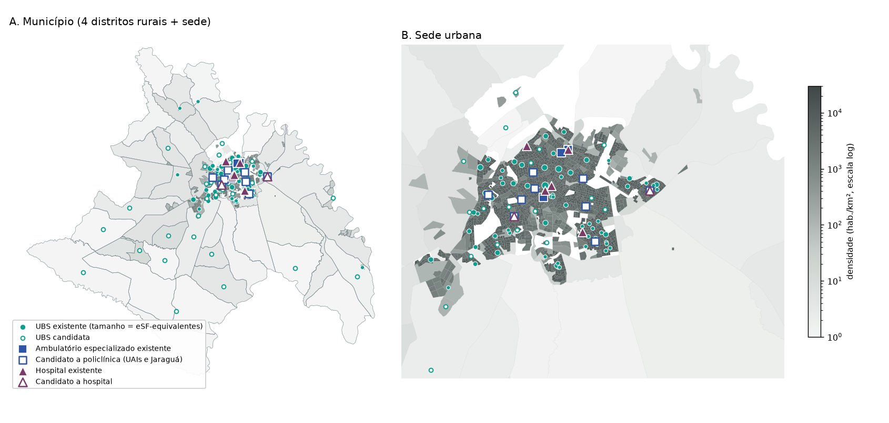
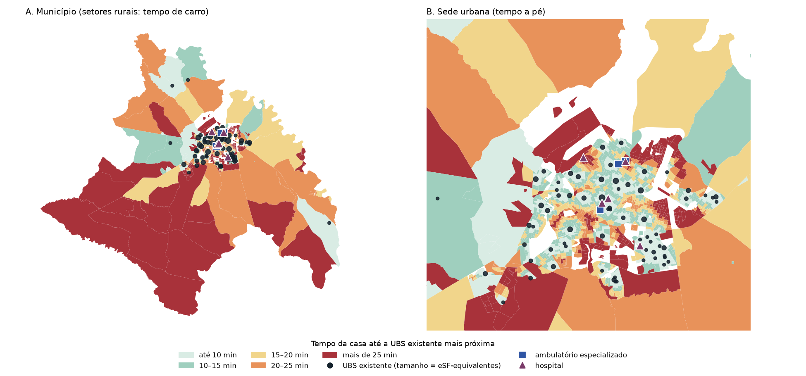
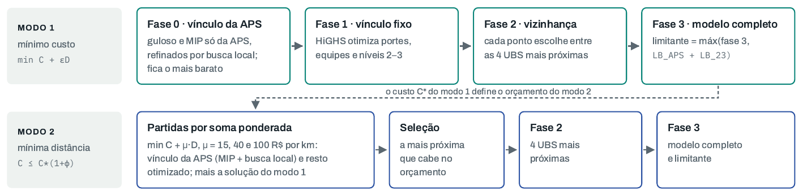
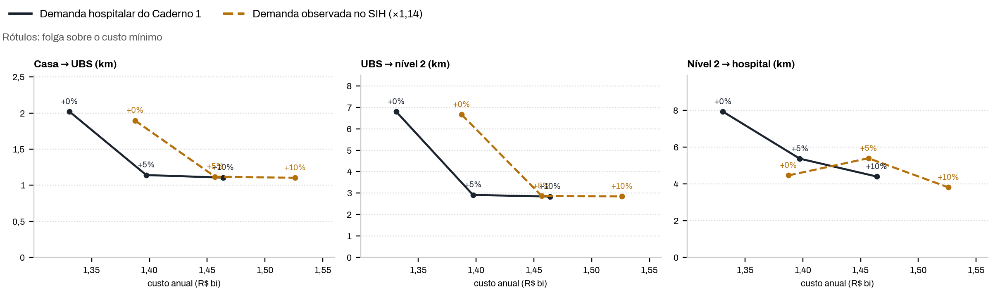

<title>Rede SUS de Uberlândia</title>
<link rel="preconnect" href="https://fonts.googleapis.com">
<link rel="preconnect" href="https://fonts.gstatic.com" crossorigin>
<link href="https://fonts.googleapis.com/css2?family=Archivo:wght@500;600;700&family=IBM+Plex+Mono:wght@400;500&family=Source+Serif+4:ital,opsz,wght@0,8..60,400;0,8..60,600;1,8..60,400&display=swap" rel="stylesheet">
<script>
window.MathJax = { tex: { inlineMath: [['\\(', '\\)']], displayMath: [['\\[', '\\]']] },
                   svg: { fontCache: 'global' }, options: { enableMenu: false } };
</script>
<script src="https://cdn.jsdelivr.net/npm/mathjax@3.2.2/es5/tex-svg-full.js" defer></script>
<style>
/* Layout: folha de artigo sobre fundo neutro; coluna de leitura de ~70 caracteres; figuras, tabelas e esquemas saem para a largura da folha */
:root {
  --bg: #eef1ef; --paper: #fcfdfc; --ink: #1a252d; --muted: #5a6770; --rule: #d3dad7; --soft: #e8edeb;
  --aps: #0b8579; --sec: #2f55a4; --ter: #7a3b69; --hl: #a86c10; --plate: #ffffff; --code: #eef2f0;
  --bom: #1f7a6d; --ruim: #a8323a;
  --f-body: "Source Serif 4", Georgia, "Times New Roman", serif;
  --f-head: "Archivo", "Helvetica Neue", Arial, sans-serif;
  --f-mono: "IBM Plex Mono", ui-monospace, Consolas, monospace;
}
@media (prefers-color-scheme: dark) {
  :root:not([data-theme="light"]) {
    --bg: #0d1316; --paper: #131b20; --ink: #e2e8eb; --muted: #9aa8b0; --rule: #2a363d; --soft: #1a242a;
    --aps: #45c2b3; --sec: #8aa8ef; --ter: #d391c2; --hl: #e3ad4d; --plate: #f3f5f4; --code: #19232a;
    --bom: #5cc0a8; --ruim: #ec7b7f; color-scheme: dark;
  }
}
:root[data-theme="dark"] {
  --bg: #0d1316; --paper: #131b20; --ink: #e2e8eb; --muted: #9aa8b0; --rule: #2a363d; --soft: #1a242a;
  --aps: #45c2b3; --sec: #8aa8ef; --ter: #d391c2; --hl: #e3ad4d; --plate: #f3f5f4; --code: #19232a;
  --bom: #5cc0a8; --ruim: #ec7b7f; color-scheme: dark;
}
* { box-sizing: border-box; }
body { background: var(--bg); color: var(--ink); font-family: var(--f-body); font-size: 17px; line-height: 1.62; margin: 0; }
.folha { max-width: 1120px; margin: 0 auto; background: var(--paper); border-inline: 1px solid var(--rule);
  padding-block: 48px 72px; padding-inline: clamp(16px, 5vw, 64px); }
.folha > * { max-width: 70ch; margin-inline: auto; }
.folha > .larga { max-width: 100%; }
p { margin: 0 0 1em; }
h1, h2, h3, h4, .cap, .meta, table, .eyebrow, .chave, .legenda, summary { font-family: var(--f-head); }
h1 { font-size: clamp(1.65rem, 3.2vw, 2.35rem); line-height: 1.15; font-weight: 700; margin: 0.35em auto 0.3em; text-wrap: balance; letter-spacing: -0.01em; }
.sub { font-family: var(--f-body); font-style: italic; font-size: 1.15rem; color: var(--muted); margin-bottom: 1.4em; text-wrap: balance; }
h2 { font-size: 1.32rem; font-weight: 700; margin: 2.4em auto 0.7em; display: flex; gap: 0.6em; align-items: baseline; text-wrap: balance; }
h2 .n, h3 .n { font-family: var(--f-mono); font-weight: 500; color: var(--aps); font-size: 0.85em; }
h3 { font-size: 1.05rem; font-weight: 600; margin: 1.8em auto 0.5em; display: flex; gap: 0.55em; align-items: baseline; text-wrap: balance; }
h4 { font-size: 0.95rem; font-weight: 600; margin: 1.4em auto 0.4em; }
.eyebrow { font-size: 0.74rem; letter-spacing: 0.09em; text-transform: uppercase; color: var(--muted); }
.meta { font-size: 0.9rem; color: var(--muted); line-height: 1.5; border-top: 1px solid var(--rule); border-bottom: 1px solid var(--rule); padding-block: 12px; margin-bottom: 28px; }
.meta strong { color: var(--ink); font-weight: 600; }
.resumo { background: var(--soft); border-radius: 4px; padding: 20px 24px; margin-bottom: 18px; }
.resumo h2 { margin: 0 0 0.5em; font-size: 0.8rem; letter-spacing: 0.09em; text-transform: uppercase; color: var(--muted); }
.resumo p { font-size: 0.96rem; }
.chave { font-size: 0.88rem; color: var(--muted); }
.chave b { color: var(--ink); font-weight: 600; }
.destaques { border-left: 3px solid var(--aps); padding: 4px 0 4px 18px; margin-block: 22px 8px; }
.destaques h2 { margin: 0 0 0.4em; font-size: 0.8rem; letter-spacing: 0.09em; text-transform: uppercase; color: var(--muted); }
.destaques ul { margin: 0; padding-left: 1.1em; font-size: 0.95rem; }
.destaques li { margin-bottom: 0.25em; }
.faq { border: 1px solid var(--rule); border-radius: 6px; padding: 18px 22px; margin-block: 18px 8px; background: var(--paper); }
.faq > h2 { margin: 0 0 0.2em; font-size: 0.8rem; letter-spacing: 0.09em; text-transform: uppercase; color: var(--muted); }
.faq > p.intro { font-size: 0.92rem; color: var(--muted); margin-bottom: 0.8em; }
.faq dl { margin: 0; display: grid; gap: 12px; }
.faq dt { font-family: var(--f-head); font-weight: 600; font-size: 0.95rem; }
.faq dd { margin: 2px 0 0; font-size: 0.94rem; }
ol.perguntas, ul.lista { padding-left: 1.3em; }
ol.perguntas li, ul.lista li { margin-bottom: 0.4em; }
.nota { font-size: 0.92rem; background: var(--soft); border-radius: 4px; padding: 12px 16px; margin-block: 1em 1.4em; }
.nota b { font-family: var(--f-head); font-weight: 600; }
.alerta { border-left: 3px solid var(--hl); }
figure { margin: 1.8em auto; }
.plate { background: var(--plate); border: 1px solid var(--rule); border-radius: 4px; padding: 8px; }
.plate img { display: block; width: 100%; height: auto; }
.cap { font-size: 0.84rem; color: var(--muted); line-height: 1.45; margin-top: 10px; max-width: 80ch; }
.cap b { color: var(--ink); font-weight: 600; }
.rolar { overflow-x: auto; -webkit-overflow-scrolling: touch; }
.rolar > svg { display: block; min-width: 760px; width: 100%; height: auto; }
table { border-collapse: collapse; width: 100%; font-size: 0.84rem; line-height: 1.4; font-variant-numeric: tabular-nums; }
.tabcap { font-family: var(--f-head); font-size: 0.84rem; color: var(--muted); margin: 1.8em 0 8px; }
.tabcap b { color: var(--ink); font-weight: 600; }
th { text-align: left; font-weight: 600; border-bottom: 1.5px solid var(--ink); padding: 6px 10px 6px 0; vertical-align: bottom; }
td { border-bottom: 1px solid var(--rule); padding: 6px 10px 6px 0; vertical-align: top; }
td.num, th.num { text-align: right; white-space: nowrap; }
tr.real td { background: color-mix(in srgb, var(--hl) 10%, transparent); }
tr.base td { background: var(--soft); }
tr.total td { font-weight: 600; border-top: 1.5px solid var(--ink); }
.fonte { font-family: var(--f-head); font-size: 0.78rem; color: var(--muted); margin-top: 6px; }
.cl { display: inline-block; font-size: 0.68rem; letter-spacing: 0.05em; text-transform: uppercase; font-weight: 600; padding: 1px 6px; border-radius: 3px; border: 1px solid currentColor; white-space: nowrap; }
.cl.dado { color: var(--aps); } .cl.norm { color: var(--sec); } .cl.inf { color: var(--hl); } .cl.dec { color: var(--ter); } .cl.exe { color: var(--ink); }
.barra { display: flex; height: 30px; border-radius: 3px; overflow: hidden; font-family: var(--f-head); font-size: 0.76rem; font-weight: 600; color: #fff; margin-top: 8px; }
.barra span { display: flex; align-items: center; justify-content: center; white-space: nowrap; overflow: hidden; }
.leg-barra { display: flex; flex-wrap: wrap; gap: 6px 16px; font-family: var(--f-head); font-size: 0.8rem; color: var(--muted); margin-top: 8px; }
.leg-barra i { display: inline-block; width: 10px; height: 10px; border-radius: 2px; margin-right: 6px; vertical-align: -1px; }
pre { background: var(--code); border-radius: 4px; padding: 14px 16px; overflow-x: auto; font-family: var(--f-mono); font-size: 0.78rem; line-height: 1.5; }
code { font-family: var(--f-mono); font-size: 0.86em; background: var(--code); padding: 0 4px; border-radius: 3px; overflow-wrap: anywhere; }
pre code { background: none; padding: 0; font-size: 1em; overflow-wrap: normal; }
.cm { color: var(--muted); }
.eq { overflow-x: auto; font-size: 0.95rem; margin-block: 0.6em 1.1em; }
.classif { border: 1px solid var(--rule); border-radius: 4px; padding: 12px 16px; font-size: 0.94rem; }
.classif b { font-family: var(--f-head); font-weight: 600; }
details { border: 1px solid var(--rule); border-radius: 4px; margin-block: 10px; background: var(--paper); }
details > summary { cursor: pointer; padding: 10px 14px; font-weight: 600; font-size: 0.92rem; }
details > summary span { font-weight: 400; color: var(--muted); }
details > pre { margin: 0; border-radius: 0 0 4px 4px; max-height: 70vh; }
details[open] > summary { border-bottom: 1px solid var(--rule); }
/* esquemas SVG */
.dg-box { fill: var(--paper); stroke: var(--rule); stroke-width: 1.5; }
.dg-aps { stroke: var(--aps); } .dg-sec { stroke: var(--sec); } .dg-ter { stroke: var(--ter); } .dg-ink { stroke: var(--ink); } .dg-hl { stroke: var(--hl); }
.dg-fill { fill: var(--soft); }
.dg-t { font-family: var(--f-head); font-weight: 600; font-size: 15px; fill: var(--ink); }
.dg-s { font-family: var(--f-head); font-size: 12.5px; fill: var(--muted); }
.dg-m { font-family: var(--f-mono); font-size: 11.5px; fill: var(--muted); }
.dg-k { font-family: var(--f-head); font-weight: 700; font-size: 11px; letter-spacing: 0.08em; }
.dg-arrow { stroke: var(--muted); stroke-width: 1.6; fill: none; }
.dg-arrowhead { fill: var(--muted); }
.c-aps { fill: var(--aps); } .c-sec { fill: var(--sec); } .c-ter { fill: var(--ter); } .c-ink { fill: var(--ink); } .c-hl { fill: var(--hl); } .c-muted { fill: var(--muted); }
.s-aps { stroke: var(--aps); } .s-hl { stroke: var(--hl); } .s-ter { stroke: var(--ter); } .s-ink { stroke: var(--ink); } .s-rule { stroke: var(--rule); }
.refs p { font-size: 0.88rem; padding-left: 1.6em; text-indent: -1.6em; margin-bottom: 0.55em; line-height: 1.5; }
a { color: var(--sec); overflow-wrap: anywhere; }
:focus-visible { outline: 2px solid var(--hl); outline-offset: 2px; }
.tab-par td:nth-child(3) { white-space: normal; }
.tab-par td { font-size: 0.8rem; }
@media (max-width: 640px) {
  body { font-size: 16px; }
  .folha { border: 0; padding-block: 28px 48px; }
  td, th { padding-right: 8px; }
}
@media (prefers-reduced-motion: reduce) { * { animation: none !important; transition: none !important; } }
/* impressao / PDF: A4, sempre no tema claro */
@page { size: A4; margin: 16mm 15mm 18mm; }
@media print {
  :root, :root:not([data-theme="light"]), :root[data-theme="dark"] {
    --bg: #ffffff; --paper: #ffffff; --ink: #1a252d; --muted: #5a6770; --rule: #d3dad7; --soft: #eef2f0;
    --aps: #0b8579; --sec: #2f55a4; --ter: #7a3b69; --hl: #a86c10; --plate: #ffffff; --code: #f1f4f2; --bom: #1f7a6d; --ruim: #a8323a; color-scheme: light;
  }
  * { -webkit-print-color-adjust: exact; print-color-adjust: exact; }
  body { font-size: 10.5pt; line-height: 1.5; background: #fff; }
  .folha { max-width: none; border: 0; padding: 0; }
  .folha > * { max-width: none; }
  h1 { font-size: 20pt; }
  h2 { font-size: 13pt; margin-top: 1.6em; }
  h2, h3, h4, .tabcap { break-after: avoid; page-break-after: avoid; }
  figure, .plate, .eq, .classif, .resumo, .destaques, tr, .barra, .faq dd { break-inside: avoid; page-break-inside: avoid; }
  table { font-size: 8.5pt; }
  pre { white-space: pre-wrap; overflow-wrap: anywhere; font-size: 7.2pt; max-height: none !important; }
  details { border: 0; }
  details > summary { padding-left: 0; }
  .eq { overflow: visible; }
  .rolar { overflow: visible; }
  .rolar > svg { min-width: 0; }
  a { color: inherit; text-decoration: none; }
}
</style>

<article class="folha">

<p class="eyebrow">Relatório técnico em formato de artigo · EPD899 Operations Research for Health Care · DEP/UFMG</p>
<h1>Localização e dimensionamento da rede SUS de Uberlândia em três níveis</h1>
<p class="sub">Um modelo hierárquico de programação inteira mista para atenção primária, atenção especializada e hospitais</p>
<div class="meta">
  <strong>Arthur Navarro Bessa</strong>, <strong>Carolina Fialho</strong> e <strong>Kevin Patrocinio</strong> · Graduação em Engenharia de Produção, Universidade Federal de Minas Gerais<br>
  Disciplina do prof. João Flávio de Freitas Almeida (LEPOINT/DEP/UFMG) · Versão revisada de 4 de novembro de 2026<br>
  Resultados da rodada de 03/11/2026: base agregada (392 pontos), solver Gurobi, seis cenários. A rodada de 29/10/2026, com HiGHS, entra só na comparação da seção 7.8.<br>
  Mapa interativo com a rede atual e os seis cenários: Mapa da Rede SUS de Uberlândia (arquivo <code>mapa/mapa_rede_sus.html</code>).
</div>

<section class="faq" aria-labelledby="t-faq">
  <h2 id="t-faq">Leia primeiro: respostas rápidas</h2>
  <p class="intro">Perguntas que surgiram na leitura da versão anterior. Cada resposta remete à seção com o detalhe.</p>
  <dl>
    <dt>O que são os R$ 1,33 bilhão por ano?</dt>
    <dd>É um <b>resultado do modelo</b>: o custo anual da rede de menor custo que atende toda a população dentro dos limites de acesso (modo 1, demanda do Caderno 1). Não é o orçamento da Prefeitura nem o gasto atual. Para comparar: a Lei Orçamentária de 2026 reserva <b>R$ 1,288 bi</b> para a saúde, a Prefeitura empenhou <b>R$ 1,385 bi</b> em 2025, e a rede que existe hoje custaria <b>R$ 0,974 bi</b> por ano pelas mesmas regras de custo do modelo. As três contas têm escopos diferentes (seções 3.5, 3.6 e 7.7).</dd>
    <dt>As unidades que já existem podem mudar de lugar?</dt>
    <dd><b>Não.</b> O modelo mantém abertas todas as UBS, ambulatórios e hospitais existentes (restrições R02, R27 e R37) e não deixa reduzir as equipes, profissionais e leitos que eles têm hoje (R12–R15, R30 e R40). Ele só pode ampliar o que existe e abrir unidades novas nos locais candidatos (seção 4.2).</dd>
    <dt>Qual a cobertura atual da APS? Ela foi calculada?</dt>
    <dd><b>Não foi calculada por nós: é a cobertura oficial do Ministério da Saúde</b>, publicada no e-Gestor AB (Histórico de Cobertura APS): <b>58,46%</b> em agosto de 2026 (88 eSF, 15 eAP 30 h, 56 eAP 20 h e 1 eCR; capacidade de 445.375 pessoas para 761.835 habitantes). A série está em <code>dados/cobertura_aps/</code>. Como conferência, refizemos a conta com o parâmetro do exercício: 71 UBS com 90 eSF e 71 eAP. As eAP valem 51 eSF pela carga horária do médico; total de 143 eSF-equivalentes. 143 × 3.000 pessoas = 429 mil pessoas, 55,8% dos 768.338 habitantes de 2026. Pelo método oficial do Ministério da Saúde (3.500 pessoas por eSF), a mesma rede cobre 61,7%. O resultado, 55,8%, fica próximo do oficial. A Prefeitura divulgou 93,35% em julho de 2022, com outro indicador (seção 3.3).</dd>
    <dt>Qual a diferença entre "Caderno" e "observada"? O que são o 1,14 e o "lado alto"?</dt>
    <dd>"Caderno" usa as taxas de internação do Caderno 1 do Ministério da Saúde (ponto médio de cada faixa): 37,0 mil internações por ano. "Observada" multiplica essa demanda por 1,14, o excesso de leito-dia do SIH sobre o Caderno medido com a população de 2022: 42,2 mil internações. O SIH registra 40,0 mil. A faixa do Caderno vai de 28,6 mil a 45,4 mil; "lado alto" é a metade de cima dessa faixa, onde o cenário "observada" fica. Na prática, ele é um cenário de demanda alta (seção 5.3).</dd>
    <dt>Como funcionam as duas otimizações e as folgas?</dt>
    <dd>Primeiro o modelo acha o menor custo possível, C* = R$ 1,331 bi. Depois roda de novo com outro objetivo, a menor distância total, proibindo gastar mais que C* × (1 + folga). Com 5% de folga (R$ 66,5 mi a mais), a caminhada média até a UBS cai de 2,02 para 1,14 km. Com 10%, abre um hospital novo (seção 4.4).</dd>
    <dt>E a acessibilidade espacial?</dt>
    <dd>Foi calculada pelo método de duas etapas com área de captação flutuante (G2SFCA), com 25 min de alcance. O índice 1,0 significa uma eSF ao alcance para cada 3.000 pessoas. Hoje a média é 0,56 e só 8% da população tem índice 1,0 ou mais. Com o orçamento +5%, a média vai a 1,11 e 50% da população passa de 1,0 (seção 7.6).</dd>
  </dl>
</section>

<section class="resumo" aria-labelledby="t-resumo">
  <h2 id="t-resumo">Resumo</h2>
  <p>Este trabalho aplica um modelo de localização hierárquica capacitada em três níveis à rede do Sistema Único de Saúde (SUS) de Uberlândia (MG), que tem 768 mil habitantes em 2026. O modelo decide quantas Unidades Básicas de Saúde (UBS) abrir, com que porte e quantas equipes; quais policlínicas e hospitais abrir e com quantos profissionais, equipamentos e leitos; e para onde cada setor censitário e cada unidade encaminham a sua demanda. As unidades existentes ficam onde estão e não perdem recursos. Os limites de acesso são fixos: 5 km ou 25 min até a UBS, 30 km ou 1 h até o nível 2 e 60 km ou 2 h até o hospital. A base reúne 1.924 setores do Censo 2022, CNES, ANS, SIH/SIA, tempos de viagem do OSRM e custos calibrados nos contratos de gestão do município. Cada um dos 108 parâmetros tem fonte e classificação.</p>
  <p>Hoje a cobertura oficial da atenção primária é de 58,5% (e-Gestor, agosto de 2026) e custaria R$ 0,97 bilhão por ano pelas regras de custo do modelo; a Prefeitura reservou R$ 1,29 bilhão para a saúde na Lei Orçamentária de 2026. O problema é resolvido em duas etapas: primeiro o custo anual mínimo, depois a menor distância total com o orçamento limitado ao custo mínimo mais uma folga. Com o Gurobi, o custo mínimo é de <b>R$ 1,33 bilhão por ano</b> (gap de 2,3%), quase o dobro de equipes de Saúde da Família, mas deixa 40% da população urbana a mais de 25 minutos de caminhada da sua UBS. Com <b>5% a mais de orçamento</b>, a distância média casa–UBS cai de 2,02 para 1,14 km, a parcela urbana acima de 25 minutos cai para 10% e a distância até o nível 2 cai de 6,8 para 2,9 km, com 29 UBS e 7 policlínicas novas. A acessibilidade espacial (G2SFCA) sobe de 0,56 hoje para 1,11. A folga de 10% compra sobretudo um hospital novo. O custo mínimo é quase indiferente à localização, e por isso pequenas folgas de orçamento compram grandes ganhos de acesso.</p>
  <p class="chave"><b>Palavras-chave:</b> localização hierárquica; atenção primária à saúde; programação inteira mista; acessibilidade espacial; planejamento do SUS; Uberlândia.</p>
</section>

<aside class="destaques" aria-labelledby="t-dest">
  <h2 id="t-dest">Destaques</h2>
  <ul>
    <li>Modelo em GMPL de três níveis (UBS, policlínica, hospital) com portes de UBS, equipes, leitos e referência única entre níveis.</li>
    <li>Base de Uberlândia reprodutível: 108 parâmetros, cada um com fonte, link ou arquivo e classe (dado, norma, inferência, decisão ou enunciado).</li>
    <li>Rede atual: cobertura oficial da APS de 58,5% (e-Gestor), 143 eSF-equivalentes e R$ 0,97 bi/ano pelas regras do modelo. Custo mínimo da rede completa: R$ 1,33 bi/ano.</li>
    <li>Com 5% a mais, a caminhada média até a UBS cai de 2,0 para 1,1 km e a acessibilidade G2SFCA média passa de 1,0 eSF por 3.000 pessoas.</li>
    <li>A referência única leva cada policlínica nova a ter tomógrafo e ressonância com uso baixo, e o CEM fica com 14% de uso, porque o modelo não move profissionais entre unidades.</li>
  </ul>
</aside>

<h2><span class="n">1</span>Introdução</h2>
<p>O SUS organiza a assistência em níveis de complexidade. A atenção primária à saúde (APS), prestada nas UBS pelas equipes de Saúde da Família (eSF), é a porta de entrada e coordena o cuidado. Quando o caso exige consulta com especialista ou exame de imagem, o paciente é encaminhado à atenção especializada ambulatorial (nível 2). Quando exige internação, vai ao hospital (nível 3). Planejar essa rede no município significa decidir onde ficam as unidades, de que tamanho, com quantos profissionais e quem é referência de quem. São decisões acopladas: abrir uma UBS muda a demanda que chega a cada policlínica, e isso muda a demanda de cada hospital.</p>
<p>A Pesquisa Operacional trata esse tipo de decisão como um problema de localização-alocação hierárquico (NARULA, 1984; ŞAHIN; SÜRAL, 2007). Este trabalho aplica um modelo dessa família a Uberlândia (MG), segundo município mais populoso de Minas Gerais e polo regional de saúde do Triângulo Mineiro, para responder a quatro perguntas:</p>
<ol class="perguntas">
  <li>Como está a rede hoje: quanto da população ela cobre, quanto custa e quanto a Prefeitura gasta?</li>
  <li>Qual é o custo anual mínimo de uma rede que atende toda a população dentro dos limites de acesso do exercício?</li>
  <li>Quanto acesso se compra com folgas de 5% e 10% sobre esse custo, medido em distância e em acessibilidade espacial?</li>
  <li>Como a resposta muda quando a demanda hospitalar é mais alta que o parâmetro normativo?</li>
</ol>
<p>As contribuições são quatro: um modelo em GMPL que integra portes de UBS, composição de equipes, capacidade por recurso e referência única; uma base de dados de Uberlândia reprodutível, com fonte e classificação de cada parâmetro; a curva custo × acesso que resulta da abordagem em duas etapas; e a comparação da rede atual com os cenários em custo, orçamento e acessibilidade espacial. A seção 2 resume o referencial teórico, a 3 descreve a situação atual, a 4 o modelo, a 5 os dados, a 6 o código e a 7 os resultados. A seção 8 discute limitações e a 9 conclui. O Apêndice B traz o código completo e o C, todos os parâmetros.</p>

<h2><span class="n">2</span>Referencial teórico</h2>
<h3><span class="n">2.1</span>Localização de serviços de saúde</h3>
<p>Daskin e Dean (2004) organizam os modelos clássicos de localização de serviços de saúde em três famílias: cobertura de conjuntos (o menor número de unidades que deixa toda a demanda a menos de uma distância-limite), máxima cobertura (a maior demanda coberta com um número dado de unidades) e p-mediana (a menor distância média ponderada pela demanda). Daskin (2008) acrescenta que as escolhas de modelagem que mais pesam estão no objetivo, na agregação da demanda e na forma de medir a distância. Os três pontos reaparecem neste trabalho.</p>
<p>Rahman e Smith (2000) revisam aplicações de localização-alocação ao planejamento de saúde em países em desenvolvimento e destacam a acessibilidade física como critério central, ao lado da escassez de dados. Ahmadi-Javid, Seyedi e Syam (2017) separam as instalações não emergenciais (UBS, ambulatórios e hospitais, o caso deste trabalho) das emergenciais (ambulâncias e pronto-socorro), e os objetivos em eficiência (custo), acesso ou cobertura e equidade. Güneş e Nickel (2015) chegam a uma divisão semelhante. Schultz (1970) mostra que a utilização dos serviços cai com a distância. Aqui a demanda é normativa, fixada pelos parâmetros do Ministério da Saúde, e por isso a distância entra como critério de acesso sem alterar o volume atendido. A demanda sensível à distância fica como extensão.</p>
<h3><span class="n">2.2</span>Modelos hierárquicos</h3>
<p>Nos modelos hierárquicos, as instalações formam níveis que interagem. Narula (1984) propõe a primeira classificação desses problemas, e Narula (1986) revisa os de tipo minisum em redes. Şahin e Süral (2007) classificam os sistemas por quatro atributos:</p>
<ul class="lista">
  <li><b>padrão de fluxo:</b> <i>single-flow</i> quando o usuário percorre os níveis em sequência; <i>multi-flow</i> quando pode entrar em qualquer nível;</li>
  <li><b>variedade de serviços:</b> <i>nested</i> quando o nível superior também oferece os serviços dos inferiores; <i>non-nested</i> quando cada nível oferece serviços próprios, o que corresponde aos sistemas exclusivos de Narula;</li>
  <li><b>configuração espacial:</b> coerente quando todos os clientes de uma unidade inferior são encaminhados à mesma unidade superior;</li>
  <li><b>objetivo:</b> mediana, cobertura ou custo fixo.</li>
</ul>
<p>Ortiz-Astorquiza, Contreras e Laporte (2018) revisam os problemas de localização em múltiplos níveis, em que a demanda atravessa uma cadeia de instalações, e mostram que mesmo as versões não capacitadas são NP-difíceis. Esse resultado explica a dificuldade computacional relatada na seção 6.</p>
<div class="classif"><b>Classificação do modelo deste trabalho</b> (ŞAHIN; SÜRAL, 2007): <i>single-flow</i> (setor → UBS → policlínica → hospital), <i>non-nested</i> (cada nível oferece serviços próprios), coerente (referência única entre níveis), objetivo de mediana com custo fixo e capacitado.</div>
<h3><span class="n">2.3</span>Parâmetros normativos do SUS</h3>
<p>A Política Nacional de Atenção Básica (PNAB, Portaria 2.436/2017) define que cada eSF responde por 2.000 a 3.500 pessoas e cada agente comunitário de saúde (ACS) por até 750. O enunciado do exercício fixa 3.000 pessoas por eSF. Freire et al. (2021) mostram que, depois da PNAB 2017, cresceu o número de municípios que reduziram seus ACS, sobretudo os mais populosos e de IDH alto, perfil que inclui Uberlândia.</p>
<p>A Portaria GM/MS 1.631/2015 e o Caderno 1 de Critérios e Parâmetros Assistenciais (BRASIL, 2017) fornecem as taxas de consultas especializadas, exames e internações por habitante, o tempo médio de permanência (TMP) e a ocupação de leitos. A necessidade de leitos segue \(NL = NI \cdot TMP / (365 \cdot TO)\), com \(NI\) internações por ano e \(TO\) a taxa de ocupação. O Novo PAC Saúde define os tipos de UBS (I a V) e seus custos de construção, e a Portaria GM/MS 635/2023 define as modalidades de equipe multiprofissional (e-Multi). Como referência internacional, a OMS (WHO, 2016) adota o limiar de 4,45 médicos, enfermeiros e parteiras por mil habitantes.</p>
<h3><span class="n">2.4</span>Acessibilidade espacial</h3>
<p>Distância média e cobertura não dizem se a oferta perto de cada pessoa é suficiente para todos que disputam a mesma unidade. O método de duas etapas com área de captação flutuante (<i>two-step floating catchment area</i>, 2SFCA) de Luo e Wang (2003) mede isso em duas contas. Na primeira, cada unidade \(j\) divide a sua oferta \(S_j\) pela população que a alcança dentro de um tempo-limite \(t_0\), e obtém uma razão oferta/demanda \(R_j\). Na segunda, cada setor \(i\) soma as razões das unidades que ele alcança. Luo e Qi (2009) introduzem pesos que caem com o tempo dentro da área de captação, e Dai (2010) usa um peso gaussiano (G2SFCA):</p>
<div class="eq">\[
W(t)=\begin{cases}\dfrac{e^{-\frac12 (t/t_0)^2}-e^{-\frac12}}{1-e^{-\frac12}} & t\le t_0\\[4pt] 0 & t>t_0\end{cases}
\qquad
R_j=\frac{S_j}{\sum_{i} P_i\,W(t_{ij})}
\qquad
A_i=\sum_{j} R_j\,W(t_{ij})
\]</div>
<p>O índice \(A_i\) tem a unidade da oferta por pessoa (aqui, eSF por pessoa). Uma propriedade útil: a média de \(A_i\) ponderada pela população é igual à oferta total dividida pela população, desde que toda UBS tenha alguém no seu alcance. O índice é então uma forma de ver <i>onde</i> a cobertura agregada está concentrada.</p>

<h2><span class="n">3</span>Uberlândia hoje (situação atual)</h2>
<h3><span class="n">3.1</span>Território e população</h3>
<p>Uberlândia tem 713.224 habitantes no Censo 2022 e 768.339 na estimativa do IBGE para 2026. A malha de 1.924 setores censitários cobre cerca de 4 mil km². Os setores urbanos concentram 98,6% da população em 203 km²; os outros 10,8 mil moradores vivem em 62 setores rurais que somam 3,8 mil km² (Figura 1). Além da sede, o município tem os distritos de Cruzeiro dos Peixotos, Martinésia, Miraporanga e Tapuirama. Segundo a ANS, 37,8% da população tem plano de saúde. Os outros 62,2% dependem só do SUS para a atenção especializada e hospitalar.</p>
<h3><span class="n">3.2</span>A rede existente</h3>
<p>A APS tem 71 UBS, geridas por organizações sociais (OS) por setor da cidade, por meio de contratos de gestão. Esses contratos foram a principal fonte dos custos da APS. Na atenção especializada, o SUS municipal conta com o Centro de Especialidades Médicas (CEM), o ambulatório do Hospital de Clínicas da UFU (HC-UFU) e o consórcio AMVAP, que somam 555 mil consultas especializadas por ano no SIA. As oito Unidades de Atendimento Integrado (UAI) são de urgência e ficam fora do modelo, mas os seus terrenos entram como candidatos a policlínica, ao lado da Policlínica do Jaraguá, aprovada no Novo PAC (R$ 16,9 milhões). Na atenção hospitalar, o HC-UFU é referência para toda a macrorregião: só 75,3% das suas internações são de residentes de Uberlândia. Os outros hospitais do modelo são o Hospital e Maternidade Municipal com o anexo Santa Catarina, o Centro de Internação Pediátrica e o Hospital do Triângulo (contratado). Os residentes somam cerca de 40 mil internações hospitalares por ano no SIH.</p>

<figure class="larga">
  <div class="plate"></div>
  <figcaption class="cap"><b>Figura 1.</b> Densidade populacional por setor censitário (escala logarítmica) e rede existente e candidata. O tamanho dos pontos das UBS existentes é proporcional às eSF-equivalentes. Fonte: elaboração própria com IBGE (Censo 2022), CNES e a base deste trabalho.</figcaption>
</figure>

<p class="tabcap"><b>Tabela 1.</b> Rede existente e locais candidatos por nível</p>
<div class="rolar larga">
<table>
  <thead><tr><th>Nível</th><th>Existentes</th><th>Candidatos</th><th>Capacidade atual</th></tr></thead>
  <tbody>
    <tr><td><b>APS (UBS)</b></td><td>71 UBS</td><td>31 locais: 1 projeto aprovado (Fruta do Conde), 12 setores urbanos densos e 18 setores sem UBS a 5 km ou 25 min</td><td>90 eSF + 71 eAP (= 143 eSF-equivalentes), 112 eSB, ~500 ACS, 30 e-Multi</td></tr>
    <tr><td><b>Nível 2</b></td><td>CEM, Ambulatório Amélio Marques (HC-UFU), AMVAP</td><td>8 UAIs (Martins, Roosevelt, Tibery, Morumbi, Pampulha, São Jorge, Planalto, Luizote) e Policlínica do Jaraguá</td><td>555 mil consultas, 95 mil ultrassons, 36 mil TC e 13 mil RM por ano (SIA; inclui não residentes)</td></tr>
    <tr><td><b>Nível 3</b></td><td>HC-UFU, Municipal + anexo Santa Catarina, Internação Pediátrica, Hospital do Triângulo</td><td>Hospital Leste (terreno da UAI Morumbi) e Hospital Oeste (terreno da UAI Planalto)</td><td>leitos SUS do CNES (HC-UFU com 75,3%); ~40 mil internações de residentes por ano (SIH)</td></tr>
  </tbody>
</table>
</div>
<p class="fonte">Fonte: CNES, SIA/SIH (DATASUS), Prefeitura de Uberlândia e Novo PAC; organização própria. Lista completa nas abas <code>APS_J1</code>, <code>Secundaria_J2</code> e <code>Terciaria_J3</code> de <code>dados/base_uberlandia.xlsx</code>.</p>

<h3><span class="n">3.3</span>Cobertura da APS: o dado oficial e a nossa conferência</h3>
<p>A cobertura oficial da APS é publicada pelo Ministério da Saúde no e-Gestor AB, relatório Histórico de Cobertura (<a href="https://relatorioaps.saude.gov.br/cobertura/aps">relatorioaps.saude.gov.br/cobertura/aps</a>). O indicador é a cobertura potencial da Nota Técnica nº 301/2022: capacidade das equipes homologadas dividida pela população. Para Uberlândia, a série vai de 62,82% em janeiro de 2024 a <b>58,46% em agosto de 2026</b>; a queda de 2025 vem da atualização da população de referência (de 713 mil para 755 mil), e não da perda de equipes. A cobertura de agentes comunitários é de 45,51% (613 ACS ativos). Os dados por competência estão em <code>dados/cobertura_aps/</code>. Esse número não foi calculado por nós. A conta abaixo é apenas uma conferência com o parâmetro do exercício.</p>
<p>Cobertura, aqui, é capacidade: quantas pessoas as equipes existentes conseguem acompanhar pelo parâmetro de pessoas por equipe, dividido pela população. Não é o número de pessoas cadastradas nem de pessoas atendidas. A conta usa dois tipos de equipe. A eSF tem médico de 40 horas e vale uma equipe inteira. A eAP (equipe de Atenção Primária, típica das UBS tradicionais) tem médico de 20 a 40 horas; pela PNAB, ela vale uma fração de eSF proporcional à carga do médico. A carga de cada eAP foi lida no CNES, equipe por equipe (função <code>tabela_aps</code> do gerador, Apêndice B).</p>
<p class="tabcap"><b>Tabela 2.</b> Cobertura da APS em 2026, passo a passo</p>
<div class="rolar larga">
<table>
  <thead><tr><th>Passo</th><th>Parâmetro do exercício (3.000 por eSF)</th><th>Método do MS (NT 301/2022)</th></tr></thead>
  <tbody>
    <tr><td>eSF (médico de 40 h)</td><td class="num">90 × 3.000 = 270.000</td><td class="num">90 × 3.500 = 315.000</td></tr>
    <tr><td>eAP com médico de 20 h (31 equipes)</td><td class="num">31 × 0,5 × 3.000 = 46.500</td><td class="num">31 × 1.750 = 54.250</td></tr>
    <tr><td>eAP com médico de 30–33 h (18 equipes)</td><td class="num">18 × 0,75 × 3.000 = 40.500</td><td class="num">18 × 2.625 = 47.250</td></tr>
    <tr><td>eAP com médico de 35 h ou mais (22 equipes)</td><td class="num">22 × 1,0 × 3.000 = 66.000</td><td class="num">22 × 2.625 = 57.750</td></tr>
    <tr class="total"><td>Pessoas cobertas</td><td class="num">143 eSF-eq × 3.000 = 429.000</td><td class="num">474.250</td></tr>
    <tr><td>População 2026 (IBGE)</td><td class="num">768.338</td><td class="num">768.338</td></tr>
    <tr class="real"><td>Cobertura</td><td class="num"><b>55,8%</b></td><td class="num"><b>61,7%</b></td></tr>
  </tbody>
</table>
</div>
<p class="fonte">Na conta do exercício, a eAP vale 0,5, 0,75 ou 1,0 eSF; a soma por UBS é arredondada (51 eSF-equivalentes no total). A Nota Técnica 301/2022-CGESF/DESF/SAPS/MS só tem eAP de 20 h e de 30 h; as de 35 h ou mais entram como 30 h. A NT conta só equipes homologadas pelo MS, e por isso o valor oficial pode ser menor.</p>
<p><b>Agentes comunitários.</b> Com cerca de 500 ACS e 750 pessoas por ACS, a cobertura de ACS é de 375 mil pessoas, 49% da população. O CNES vincula só cerca de 210 ACS a equipes; o número de 500 é da Prefeitura (março de 2025).</p>
<p><b>Dado divulgado pelo governo da cidade.</b> A Prefeitura informou, em setembro de 2022, que a cobertura da atenção primária passou de 48,88% em 2017 para 93,35% em julho de 2022 (<a href="https://www.uberlandia.mg.gov.br/2022/09/23/uberlandia-tem-a-melhor-atencao-primaria-do-brasil-na-saude/" target="_blank" rel="noopener">portal da Prefeitura</a>). A nota não diz o indicador; um valor tão alto com esta rede só é possível com uma medida de cadastro (pessoas cadastradas nas equipes, que o programa Previne Brasil incentivou entre 2020 e 2023), e não de capacidade. Em julho de 2026 a Prefeitura divulgou que Uberlândia ficou em primeiro lugar, entre os municípios com mais de 600 mil habitantes, no ranking do cofinanciamento federal da APS (vínculo, acompanhamento e qualidade), sem informar cobertura. Não encontramos valor oficial de cobertura de 2025 ou 2026; o Ministério publica a série municipal no painel <a href="https://relatorioaps.saude.gov.br/cobertura/aps" target="_blank" rel="noopener">Histórico de Cobertura da APS</a>, que vale consultar antes da apresentação.</p>
<div class="nota"><b>Por que usar 3.000.</b> O enunciado fixa 3.000 pessoas por eSF, dentro da faixa da PNAB (2.000 a 3.500). Com 3.500, o mínimo de equipes para 100% da população cai de 257 para 220 (seção 8).</div>

<h3><span class="n">3.4</span>Distância e tempo até a UBS existente mais próxima</h3>
<p>Mesmo sem capacidade para todos, a rede atual está espalhada pela cidade. Medindo o tempo a pé de cada setor urbano até a UBS existente mais próxima (de carro nos setores rurais), 62% da população fica a até 15 minutos e 89% a até 25 minutos; a média é de 14,7 minutos e 1,32 km (Figura 2). Há 28 setores, com 5.343 pessoas, sem nenhuma UBS a 5 km ou 25 min, quase todos na zona rural. São esses setores que obrigam o modelo a abrir UBS rurais em todos os cenários.</p>
<figure class="larga">
  <div class="plate"></div>
  <figcaption class="cap"><b>Figura 2.</b> Situação atual: tempo da casa até a UBS existente mais próxima, a pé na sede e de carro na zona rural. Pontos pretos: UBS existentes (tamanho proporcional às eSF-equivalentes); quadrados: ambulatórios especializados; triângulos: hospitais. Fonte: IBGE, CNES e OSRM; <code>analise_cenarios.py</code>.</figcaption>
</figure>

<h3><span class="n">3.5</span>Orçamento da saúde: LOA 2026 e execução</h3>
<p>A Lei Orçamentária Anual (LOA) de Uberlândia para 2026, aprovada pela Câmara Municipal sem emendas, estima a receita em <b>R$ 5,420 bilhões</b> e reserva <b>R$ 1,288 bilhão</b> à função Saúde, a maior pasta, seguida da Educação (R$ 1,102 bi). A Tabela 3 mostra a dotação de 2026 por subfunção e a execução de 2024 e 2025, extraídas do Relatório Resumido da Execução Orçamentária (RREO, Anexo 2) que o município envia ao Tesouro Nacional (SICONFI).</p>
<p class="tabcap"><b>Tabela 3.</b> Despesa da função Saúde por subfunção (R$ milhões)</p>
<div class="rolar larga">
<table>
  <thead><tr><th>Subfunção</th><th class="num">LOA 2026 (dotação inicial)</th><th class="num">2026 até ago. (empenhado)</th><th class="num">2025 (empenhado)</th><th class="num">2024 (empenhado)</th><th>Relação com o modelo</th></tr></thead>
  <tbody>
    <tr><td>Atenção Básica</td><td class="num">294,7</td><td class="num">267,7</td><td class="num">309,7</td><td class="num">322,3</td><td>APS (nível 1)</td></tr>
    <tr><td>Assistência Hospitalar e Ambulatorial</td><td class="num">764,7</td><td class="num">730,9</td><td class="num">831,0</td><td class="num">785,2</td><td>níveis 2 e 3, mais urgência (UAI), que fica fora</td></tr>
    <tr><td>Suporte Profilático e Terapêutico</td><td class="num">57,8</td><td class="num">52,3</td><td class="num">46,1</td><td class="num">52,6</td><td>fora (assistência farmacêutica)</td></tr>
    <tr><td>Vigilância Epidemiológica e Sanitária</td><td class="num">35,9</td><td class="num">22,7</td><td class="num">36,2</td><td class="num">44,7</td><td>fora</td></tr>
    <tr><td>Alimentação e Nutrição</td><td class="num">1,5</td><td class="num">1,9</td><td class="num">1,0</td><td class="num">2,3</td><td>fora</td></tr>
    <tr><td>Administração geral e demais</td><td class="num">133,1</td><td class="num">97,5</td><td class="num">161,4</td><td class="num">144,2</td><td>fora (sede da Secretaria, gestão)</td></tr>
    <tr class="total"><td>Total da função Saúde</td><td class="num">1.287,9</td><td class="num">1.172,9</td><td class="num">1.385,4</td><td class="num">1.351,2</td><td></td></tr>
  </tbody>
</table>
</div>
<p class="fonte">Fonte: RREO Anexo 2 (despesas por função e subfunção) de Uberlândia, 6º bimestre de 2024 e de 2025 e 4º bimestre de 2026, pela <a href="https://apidatalake.tesouro.gov.br/ords/siconfi/tt/rreo?an_exercicio=2026&amp;nr_periodo=4&amp;co_tipo_demonstrativo=RREO&amp;no_anexo=RREO-Anexo%2002&amp;id_ente=3170206" target="_blank" rel="noopener">API do SICONFI (Tesouro Nacional)</a>; total da LOA: <a href="https://diariodeuberlandia.com.br/noticia/38995/loa-preve-orcamento-de-r-54-bilhoes-para-uberlandia-em-2026" target="_blank" rel="noopener">Diário de Uberlândia (30/09/2025)</a> e <a href="https://regionalzao.com.br/colunas/poder/camara-de-uberlandia-aprova-ppa-e-loa-2026-orcamento-sera-de-r-542-bilhoes" target="_blank" rel="noopener">Regionalzão</a>. Empenhado = despesa comprometida no ano. A dotação é atualizada durante o ano (R$ 1.340 mi em agosto de 2026).</p>

<p><b>De onde vem o dinheiro.</b> O SUS é financiado pelas três esferas. O município tem de aplicar pelo menos 15% das receitas de impostos e transferências constitucionais em ações e serviços públicos de saúde (Lei Complementar 141/2012). A União e o Estado transferem recursos "fundo a fundo" para o Fundo Municipal de Saúde. A divisão aparece no RREO Anexo 12, que Uberlândia publica no seu portal. A Tabela 4 resume o orçamento de 2025 e a execução de 2024; o Anexo 12 de 2026 não estava publicado nem no portal da Prefeitura nem no SICONFI quando este relatório foi escrito.</p>
<p class="tabcap"><b>Tabela 4.</b> Financiamento da saúde por esfera de governo (R$ milhões)</p>
<div class="rolar larga">
<table>
  <thead><tr><th>Origem</th><th class="num">LOA 2025 (previsão inicial)</th><th class="num">%</th><th class="num">2024 (realizado)</th><th class="num">%</th></tr></thead>
  <tbody>
    <tr><td>Município (recursos próprios aplicados em saúde)</td><td class="num">715,1</td><td class="num">60,5%</td><td class="num">774,9</td><td class="num">62%</td></tr>
    <tr><td>União (transferências do SUS)</td><td class="num">325,7</td><td class="num">27,6%</td><td class="num">305,4</td><td class="num">24%</td></tr>
    <tr><td>Estado de Minas Gerais (transferências do SUS)</td><td class="num">121,1</td><td class="num">10,2%</td><td class="num">145,6</td><td class="num">12%</td></tr>
    <tr><td>Outras receitas vinculadas à saúde</td><td class="num">19,7</td><td class="num">1,7%</td><td class="num">21,0</td><td class="num">2%</td></tr>
    <tr class="total"><td>Total</td><td class="num">1.181,6</td><td class="num">100%</td><td class="num">1.246,9</td><td class="num">100%</td></tr>
  </tbody>
</table>
</div>
<p class="fonte">Fonte: RREO Anexo 12 de Uberlândia: <a href="https://docs.uberlandia.mg.gov.br/wp-content/uploads/2025/06/Anexo-12.pdf" target="_blank" rel="noopener">data-base 30/04/2025</a> (dotação inicial de 2025: despesas com recursos próprios e com transferências; receitas de transferências por origem) e <a href="https://docs.uberlandia.mg.gov.br/wp-content/uploads/2025/01/Anexo-12.pdf" target="_blank" rel="noopener">data-base 31/12/2024</a> (recursos próprios liquidados e transferências recebidas). Em 2025, o total soma a despesa prevista com recursos próprios (R$ 715,1 mi) e as receitas de transferência previstas (R$ 466,4 mi); a dotação inicial da saúde era de R$ 1.181,0 mi. Em 2024 o município aplicou 34,3% das receitas de impostos em saúde, mais que o dobro do mínimo de 15%. Os R$ 1.246,9 mi de 2024 somam receitas recebidas e recursos próprios liquidados; a despesa total liquidada foi de R$ 1.303,9 mi, e a diferença vem de saldos de anos anteriores.</p>
<p>Se 2026 repetir a estrutura de 2025, dos R$ 1,288 bi da LOA cerca de R$ 780 mi viriam do município, R$ 355 mi da União e R$ 130 mi do Estado. É uma estimativa: a divisão oficial de 2026 sai no Anexo 12. Dois cuidados na comparação com o modelo: o salário dos servidores do HC-UFU, hospital federal gerido pela Ebserh, é pago pela União fora do orçamento municipal; e o orçamento municipal inclui urgência, farmácia, vigilância e administração, que o modelo não cobre.</p>

<h3><span class="n">3.6</span>Quanto custa a rede atual pelas regras do modelo</h3>
<p>Para comparar a rede de hoje com os cenários na mesma régua, aplicamos as equações de custo do modelo (DefCusto1 a DefCusto3, seção 4.3) às quantidades que existem hoje. O resultado é <b>R$ 973,8 milhões por ano</b>: R$ 286,8 mi na APS, R$ 45,7 mi no nível 2 e R$ 641,3 mi nos hospitais (parcela dos residentes). O custo da APS bate com a execução: a Prefeitura empenhou R$ 309,7 mi em Atenção Básica em 2025, 8% a mais, diferença compatível com farmácia, transporte e outros gastos da subfunção que o modelo não tem.</p>
<p class="tabcap"><b>Tabela 5.</b> Rede atual: custo pelas regras do modelo e capacidade comparada à necessidade (Caderno 1, 2026)</p>
<div class="rolar larga">
<table>
  <thead><tr><th>Item</th><th class="num">Hoje</th><th class="num">Necessário (sem arredondar)</th><th class="num">Custo anual hoje (R$ mi)</th><th>Leitura</th></tr></thead>
  <tbody>
    <tr><td>eSF-equivalentes</td><td class="num">143</td><td class="num">≥ 257</td><td class="num">180,8</td><td>falta capacidade para 44% da população</td></tr>
    <tr><td>eSB / ACS / e-Multi</td><td class="num">112 / 500 / 30</td><td class="num">≥ 257 / ≥ 1.025 / —</td><td class="num">19,5 / 27,2 / 15,1</td><td>mesma proporção da eSF; ACS a 750 pessoas</td></tr>
    <tr><td>Custo fixo das 71 UBS (operação + adicional das UBS tradicionais)</td><td class="num">71</td><td class="num">—</td><td class="num">44,3</td><td>R$ 12,8 mi de operação + R$ 31,5 mi das eAP</td></tr>
    <tr class="base"><td><b>APS</b></td><td></td><td></td><td class="num"><b>286,8</b></td><td>Atenção Básica empenhada em 2025: R$ 309,7 mi</td></tr>
    <tr><td>Especialistas (FTE de 40 h)</td><td class="num">88</td><td class="num">59</td><td class="num">28,3</td><td>sobra, pela meta de 336 consultas/mês por 20 h</td></tr>
    <tr><td>Ultrassom / tomógrafo / ressonância</td><td class="num">30 / 9 / 2</td><td class="num">23,7 / 4,8 / 2,9</td><td class="num">1,3 / 6,5 / 3,1</td><td>falta ressonância</td></tr>
    <tr class="base"><td><b>Nível 2</b> (com enfermagem, técnicos e custo fixo)</td><td></td><td></td><td class="num"><b>45,7</b></td><td></td></tr>
    <tr><td>Leitos clínicos / cirúrgicos</td><td class="num">267 / 198</td><td class="num">368 / 207</td><td class="num"></td><td>falta cerca de 100 leitos clínicos</td></tr>
    <tr><td>Leitos obstétricos / pediátricos</td><td class="num">67 / 63</td><td class="num">45 / 68</td><td class="num"></td><td></td></tr>
    <tr><td>UTI adulto / pediátrica / neonatal; UCI neonatal</td><td class="num">101 / 7 / 25; 32</td><td class="num">58 / 7 / 8; 18</td><td class="num"></td><td>UTI acima do parâmetro</td></tr>
    <tr class="base"><td><b>Nível 3</b> (leitos, médicos e enfermagem)</td><td></td><td></td><td class="num"><b>641,3</b></td><td></td></tr>
    <tr class="total"><td>Total</td><td></td><td></td><td class="num">973,8</td><td>despesa empenhada da Saúde em 2025: R$ 1.385,4 mi</td></tr>
  </tbody>
</table>
</div>
<p class="fonte">"Hoje" no nível 2 é a produção SUS de 12 meses (SIA) convertida em recursos pelas produtividades do modelo; no nível 3, os leitos SUS do CNES, com 75,3% do HC-UFU. "Necessário" é o consumo da demanda do Caderno 1 dividido pela capacidade de uma unidade do recurso, sem arredondar e sem considerar onde está cada unidade. Fonte: <code>analise_cenarios.py</code> (funções <code>custo_atual</code> e <code>necessidade</code>).</p>
<div class="nota"><b>Por que o custo do modelo é menor que a despesa da Prefeitura.</b> A despesa de R$ 1,385 bi inclui urgência (as oito UAIs, que só no setor Oeste custavam R$ 4,1 mi por mês em 2022, pelo contrato 178/2022), farmácia, vigilância, SAMU, saúde mental e administração, que o modelo não tem. Na direção oposta, o modelo inclui o custo dos leitos e da equipe do HC-UFU usados por residentes, que em boa parte a União paga direto. Por isso a comparação útil é entre a rede atual e os cenários, os dois medidos pela mesma régua.</div>

<h2><span class="n">4</span>Modelo</h2>
<h3><span class="n">4.1</span>Estrutura</h3>
<p>A Figura 3 resume a estrutura. Cada setor censitário é vinculado a uma UBS acessível, e a população adscrita define as equipes da UBS. A demanda SUS de nível 2 gerada em cada UBS vai a uma única unidade de referência, e uma fração dessa demanda vira internação no hospital de referência dessa unidade.</p>
<figure class="larga">
  <div class="plate"></div>
  <figcaption class="cap"><b>Figura 3.</b> Estrutura do modelo. As caixas mostram as unidades de cada nível e as variáveis de decisão do <code>.mod</code>; abaixo das setas, os limites de acesso (regra "distância OU tempo"), o modo de deslocamento e o volume anual de demanda no cenário do Caderno 1.</figcaption>
</figure>

<h3><span class="n">4.2</span>O que o modelo decide e o que fica fixo</h3>
<p>O modelo não redesenha a cidade do zero. Tudo o que existe hoje continua existindo, no mesmo lugar e com pelo menos os mesmos recursos. A Tabela 6 lista as restrições responsáveis por isso.</p>
<p class="tabcap"><b>Tabela 6.</b> O que fica fixo nas unidades existentes</p>
<div class="rolar larga">
<table>
  <thead><tr><th>Regra</th><th>Restrição no <code>.mod</code></th><th>Efeito</th></tr></thead>
  <tbody>
    <tr><td>UBS existente continua aberta</td><td><code>R02_MantemUBS: a1[j] = 1</code></td><td>nenhuma das 71 UBS fecha ou muda de endereço</td></tr>
    <tr><td>Porte mínimo da UBS existente</td><td><code>R03_PorteMinimo</code></td><td>a UBS não encolhe abaixo do porte que já tem</td></tr>
    <tr><td>Equipes atuais não são retiradas</td><td><code>R12–R15: nESF[j] ≥ ESF_atual[j]</code> (e eSB, ACS, e-Multi)</td><td>a UBS pode ganhar equipes, nunca perder</td></tr>
    <tr><td>Ambulatório existente continua aberto</td><td><code>R27_Mantem2: a2[k] = 1</code></td><td>CEM, Amélio Marques e AMVAP ficam</td></tr>
    <tr><td>Recursos atuais do nível 2 não são retirados</td><td><code>R30_N2atual: n2[k,r] ≥ n2_atual[k,r]</code></td><td>especialistas e equipamentos não saem do CEM, mesmo que ele perca demanda</td></tr>
    <tr><td>Hospital existente continua aberto</td><td><code>R37_Mantem3: a3[h] = 1</code></td><td>os cinco hospitais ficam, mesmo sem demanda</td></tr>
    <tr><td>Leitos e equipes atuais não são retirados</td><td><code>R40_N3atual: n3[h,r] ≥ n3_atual[h,r]</code></td><td>leitos só aumentam</td></tr>
  </tbody>
</table>
</div>
<p>O que o modelo decide: quais dos 31 locais candidatos a UBS abrir e com que porte; quantas eSF, eSB, ACS e e-Multi cada UBS (nova ou existente) terá; para qual UBS vai cada setor; quais das 9 policlínicas candidatas e dos 2 hospitais candidatos abrir; quantos especialistas, equipamentos e leitos acrescentar em cada unidade; e a referência única de cada UBS e de cada unidade de nível 2. Mudar prédios de lugar ou transferir profissionais entre unidades exigiria outras variáveis (fechar uma unidade e abrir outra, ou permitir \(n_{kr} < n^{atual}_{kr}\) com o total da rede preservado); a seção 8 discute essa extensão.</p>

<h3><span class="n">4.3</span>Formulação</h3>
<p><b>Conjuntos.</b> \(I\) são os setores; \(J_1, J_2, J_3\) os locais de cada nível; \(P=\{1,\dots,5\}\) os portes de UBS; \(S_2, S_3\) os serviços; \(R_2, R_3\) os recursos, que podem ser profissionais (em horas), equipamentos (em exames) ou leitos (em leito-dia). As variáveis só existem nos arcos viáveis \(A_{01}, A_{12}, A_{23}\), os pares que respeitam o limite de acesso. Com a regra "distância OU tempo", o arco \((i,j)\) existe se \(d_{ij} \le 5\) km ou \(t_{ij} \le 25\) min.</p>
<p><b>Variáveis.</b> \(a^1_j, a^2_k, a^3_h \in \{0,1\}\) abrem unidades; \(x_{jp}\in\{0,1\}\) escolhe o porte da UBS; \(n^{ESF}_j, n^{ESB}_j, n^{ACS}_j, n^{EMU}_j \in \mathbb{Z}_+\) são as equipes; \(y_{ij}\in\{0,1\}\) vincula o setor à UBS e \(P_j\) é a população adscrita; \(f^{12}_{jks}, f^{23}_{khq} \ge 0\) são atendimentos por ano; \(z^{12}_{jk}, z^{23}_{kh}\in\{0,1\}\) fixam a referência; \(n^2_{kr}, n^3_{hr}\in\mathbb{Z}_+\) são os recursos de cada unidade.</p>
<p><b>Custo e distância.</b></p>
<div class="eq">\[
\begin{aligned}
C &= C_1 + C_2 + C_3\\
C_1 &= \sum_{j,p}F_{jp}\,x_{jp}+\sum_j\big(c_{ESF}\,n^{ESF}_j+c_{ESB}\,n^{ESB}_j+c_{ACS}\,n^{ACS}_j+c_{EMU}\,n^{EMU}_j\big) && \text{APS}\\
C_2 &= \sum_k F^2_k\,a^2_k+\sum_{k,r}w^2_r\,n^2_{kr} && \text{nível 2}\\
C_3 &= \sum_h F^3_h\,a^3_h+\sum_{h,r}w^3_r\,n^3_{hr} && \text{nível 3}
\end{aligned}
\]</div>
<div class="eq">\[
D=\sum_{(i,j)\in A_{01}} pop_i\,d_{ij}\,y_{ij}+\sum_{(j,k)\in A_{12}}\sum_{s} d_{jk}\,f^{12}_{jks}+\sum_{(k,h)\in A_{23}}\sum_{q} d_{kh}\,f^{23}_{khq}
\]</div>
<p>\(F_{jp}\) é o custo fixo anual da UBS \(j\) no porte \(p\) (obra anualizada mais operação), \(c\) são custos anuais por equipe e \(w_r\) o custo anual de uma unidade do recurso \(r\) (salário com encargos, ou equipamento e leito anualizados com custeio). \(D\) soma pessoas·km no trecho casa–UBS e atendimentos·km nos demais trechos.</p>
<p><b>Objetivos.</b></p>
<div class="eq">\[
\text{Modo 1: }\ \min\ C+\varepsilon_d D \qquad\qquad \text{Modo 2: }\ \min\ D+\varepsilon_c C\quad \text{s.a.}\quad C\le C^*(1+\varphi)
\]</div>
<p><b>Restrições principais</b> (os rótulos remetem às restrições R01 a R41 do <code>.mod</code>):</p>
<div class="eq">\[
\begin{aligned}
&\textstyle\sum_{j:(i,j)\in A_{01}} y_{ij}=1 \quad \forall i && \text{R16: cobertura de 100\%}\\
&y_{ij}\le a^1_j,\qquad P_j=\textstyle\sum_i pop_i\,y_{ij} && \text{R17, R18}\\
&P_j\le 3000\,n^{ESF}_j,\quad P_j\le 750\,n^{ACS}_j,\quad P_j\le 3000\,n^{ESB}_j && \text{R19–R21: capacidade das equipes}\\
&\textstyle\sum_p x_{jp}=a^1_j,\quad \sum_p \underline{e}_p\,x_{jp}\le n^{ESF}_j\le \sum_p \overline{e}_p\,x_{jp} && \text{R01, R04–R11: faixas do porte}\\
&a^1_j=1,\quad n^{ESF}_j\ge ESF^{\,atual}_j \ \text{ nas UBS existentes} && \text{R02, R12–R15}\\
&\textstyle\sum_k f^{12}_{jks}=\pi\,\kappa_s\,P_j \quad \forall j,s && \text{R22: demanda SUS gerada na UBS}\\
&\textstyle\sum_k z^{12}_{jk}\le 1,\quad f^{12}_{jks}\le Dem_s\, z^{12}_{jk} && \text{R25, R26: uma referência por UBS}\\
&\textstyle\sum_s \rho_{sr}\, rec^2_{ks}\le H_r\, n^2_{kr},\quad n^2_{kr}\le N_{kr}\, a^2_k && \text{R31, R29: capacidade por recurso}\\
&\textstyle\sum_h f^{23}_{khq}=\sum_s \theta_{sq}\, rec^2_{ks} \quad \forall k,q && \text{R32: encaminhamento ao hospital}\\
&\textstyle\sum_q \rho_{qr}\, rec^3_{hq}\le H_r\, n^3_{hr} && \text{R41: leitos e equipes hospitalares}
\end{aligned}
\]</div>
<p>Nas expressões, \(\pi\) é a proporção SUS-dependente, \(\kappa_s\) a taxa de uso do serviço \(s\) por habitante, \(\theta_{sq}\) a fração encaminhada à internação \(q\), \(\rho\) o consumo de recurso por atendimento, \(H_r\) a capacidade anual de uma unidade do recurso e \(N_{kr}\) o teto da unidade. Para leitos, \(H_r = 365 \cdot TO\) e \(\rho = TMP\), e a R41 reproduz a fórmula de leitos do Caderno 1. Exemplo: 13.554 internações clínicas × 8,08 dias ÷ (365 × 0,815) = 368 leitos clínicos.</p>

<h3><span class="n">4.4</span>Duas etapas: primeiro o custo, depois a distância</h3>
<p>O modelo tem dois objetivos que puxam em direções opostas. Minimizar só a distância abriria todos os 31 candidatos a UBS, as 9 policlínicas e os 2 hospitais, porque cada unidade a mais deixa alguém mais perto. Minimizar só o custo abre o mínimo e manda as pessoas andarem até onde a regra deixa (5 km). Somar os dois num objetivo só exigiria dizer quantos reais vale um quilômetro, um número arbitrário. A saída adotada é resolver em duas etapas, uma forma do método ε-restrito (Figura 4):</p>
<ol class="perguntas">
  <li><b>Etapa 1 (modo 1, <code>param modo := 1</code>): menor custo.</b> O modelo minimiza \(C\) e acha \(C^*\), o menor custo anual de uma rede que atende 100% da população nos limites de acesso. O termo \(\varepsilon_d D\), com \(\varepsilon_d\) = R$ 0,01 por pessoa·km, só desempata soluções de mesmo custo a favor da mais próxima; é pequeno demais para trocar custo por distância (a distância total, cerca de 4,6 milhões de pessoas·km e atendimentos·km, vale R$ 46 mil nesse termo, contra R$ 1,33 bi de custo).</li>
  <li><b>Orçamento.</b> Escolhe-se uma folga \(\varphi\) e calcula-se o orçamento \(B = C^*(1+\varphi)\). No cenário do Caderno, \(C^*\) = R$ 1.330,8 mi; com \(\varphi\) = 5%, \(B\) = R$ 1.397,4 mi; com 10%, R$ 1.463,9 mi.</li>
  <li><b>Etapa 2 (modo 2, <code>param modo := 2</code> e <code>param orcamento := B</code>): menor distância.</b> O modelo minimiza \(D\) com a restrição \(C \le B\) (restrição <code>Orcamento</code> do <code>.mod</code>). O termo \(\varepsilon_c C\), com \(\varepsilon_c = 10^{-6}\), impede que ele gaste a folga em coisas que não reduzem a distância, como ACS a mais.</li>
  <li><b>Curva.</b> Repetindo a etapa 2 para várias folgas, obtém-se a curva custo × acesso (Figura 8): cada ponto é a menor distância que um orçamento consegue comprar. A folga 0 é o próprio modo 1.</li>
</ol>

<figure class="larga">
  <div class="rolar">
  <svg viewBox="0 0 1050 300" role="img" aria-labelledby="f4t">
    <title id="f4t">As duas etapas: modo 1 minimiza o custo e dá C*; o orçamento é C* vezes 1 mais a folga; o modo 2 minimiza a distância com o custo limitado ao orçamento</title>
    <defs><marker id="ah4" viewBox="0 0 10 10" refX="9" refY="5" markerWidth="7" markerHeight="7" orient="auto-start-reverse"><path d="M0,0 L10,5 L0,10 z" class="dg-arrowhead"/></marker></defs>
    <text x="10" y="24" class="dg-k c-aps">ETAPA 1 · MODO 1</text>
    <text x="370" y="24" class="dg-k c-hl">ORÇAMENTO</text>
    <text x="700" y="24" class="dg-k c-sec">ETAPA 2 · MODO 2</text>
    <rect x="10" y="36" width="320" height="180" rx="6" class="dg-box dg-aps"/>
    <text x="26" y="64" class="dg-t">Menor custo anual</text>
    <text x="26" y="88" class="dg-m">min C + 0,01 · D</text>
    <text x="26" y="112" class="dg-s">sujeito a todas as restrições R01–R41</text>
    <text x="26" y="142" class="dg-s">Caderno: C* = R$ 1.330,8 mi/ano</text>
    <text x="26" y="162" class="dg-s">casa–UBS 2,02 km · UBS–nível 2 6,8 km</text>
    <text x="26" y="196" class="dg-s">responde: quanto custa, no mínimo</text>
    <rect x="370" y="36" width="290" height="180" rx="6" class="dg-box dg-hl"/>
    <text x="386" y="64" class="dg-t">B = C* × (1 + φ)</text>
    <text x="386" y="94" class="dg-s">φ = 5%  → B = R$ 1.397,4 mi</text>
    <text x="386" y="116" class="dg-s">φ = 10% → B = R$ 1.463,9 mi</text>
    <text x="386" y="150" class="dg-s">a folga φ é uma escolha do gestor:</text>
    <text x="386" y="170" class="dg-s">quanto a mais aceita pagar por acesso</text>
    <rect x="700" y="36" width="340" height="180" rx="6" class="dg-box dg-sec"/>
    <text x="716" y="64" class="dg-t">Menor distância total</text>
    <text x="716" y="88" class="dg-m">min D + 0,000001 · C</text>
    <text x="716" y="112" class="dg-s">sujeito a R01–R41 e C ≤ B</text>
    <text x="716" y="142" class="dg-s">+5%: casa–UBS 1,14 km · nível 2 2,9 km</text>
    <text x="716" y="162" class="dg-s">+10%: 1,11 km · hospital novo (Leste)</text>
    <text x="716" y="196" class="dg-s">responde: quanto acesso cabe no orçamento</text>
    <line x1="332" y1="126" x2="366" y2="126" class="dg-arrow" marker-end="url(#ah4)"/>
    <line x1="662" y1="126" x2="696" y2="126" class="dg-arrow" marker-end="url(#ah4)"/>
    <text x="525" y="258" text-anchor="middle" class="dg-s">Repetir a etapa 2 com φ = 0, 5% e 10% dá a curva custo × acesso (Figura 8). O orçamento sempre parte do custo mínimo do mesmo cenário de demanda.</text>
  </svg>
  </div>
  <figcaption class="cap"><b>Figura 4.</b> As duas etapas da otimização, com os números do cenário do Caderno 1. Nas duas etapas valem as mesmas restrições; muda o objetivo e entra o limite de orçamento.</figcaption>
</figure>
<p class="tabcap"><b>Tabela 7.</b> O que cada etapa produz no cenário do Caderno 1</p>
<div class="rolar larga">
<table>
  <thead><tr><th>Etapa</th><th class="num">Orçamento (R$ mi)</th><th class="num">Custo da solução (R$ mi)</th><th class="num">Folga usada</th><th class="num">Casa–UBS (km)</th><th class="num">UBS–nível 2 (km)</th><th class="num">Nível 2–hospital (km)</th><th>O que a folga comprou</th></tr></thead>
  <tbody>
    <tr><td>Modo 1 (φ = 0)</td><td class="num">sem limite</td><td class="num">1.330,8</td><td class="num">—</td><td class="num">2,02</td><td class="num">6,8</td><td class="num">7,9</td><td>rede mais barata: 18 UBS novas (rurais e de cobertura), 1 policlínica</td></tr>
    <tr><td>Modo 2, φ = 5%</td><td class="num">1.397,4</td><td class="num">1.397,3</td><td class="num">66,5</td><td class="num">1,14</td><td class="num">2,9</td><td class="num">5,4</td><td>+11 UBS novas, +8 eSF, +6 policlínicas</td></tr>
    <tr><td>Modo 2, φ = 10%</td><td class="num">1.463,9</td><td class="num">1.463,9</td><td class="num">133,1</td><td class="num">1,11</td><td class="num">2,8</td><td class="num">4,4</td><td>+12 UBS novas, +20 eSF, +7 policlínicas e 1 hospital novo (terreno da UAI Morumbi)</td></tr>
  </tbody>
</table>
</div>
<p class="fonte">O modo 2 gasta todo o orçamento: a restrição <code>Orcamento</code> fica ativa nos dois cenários com folga. Fonte: <code>resultados/gurobi_2026-11-03/resumo_cenarios.csv</code> (rodada do Gurobi de 03/11/2026).</p>
<p>Na prática, o arquivo <code>.dat</code> tem as linhas <code>param modo := 1;</code> e <code>param orcamento := 0;</code>. Para a etapa 2, o script <code>rodar_cenarios.py</code> troca essas duas linhas no texto do <code>.dat</code> (função <code>main</code>, Apêndice B) e resolve de novo, partindo da solução do modo 1. No GUSEK, o mesmo fluxo é manual: rodar com <code>modo := 1</code>, ler o custo impresso na linha <code>&gt;&gt; Proximo passo</code> e rodar com <code>modo := 2</code> e <code>orcamento</code> igual a esse custo vezes 1,05.</p>

<h2><span class="n">5</span>Dados, fontes e aproximações</h2>
<p>A base é gerada por scripts Python a partir de fontes públicas e de documentos do município. Cada parâmetro tem valor, unidade, fonte e uma de cinco classes: EXERCÍCIO (fixado pelo enunciado), DECISÃO (escolha do grupo), NORMATIVO (norma do Ministério da Saúde ou lei), DADO (medido em fonte local ou nacional) e INFERIDO (hipótese ou cálculo). A barra abaixo mostra a composição dos 108 parâmetros documentados; o Apêndice C lista todos, com valor, fonte, link ou arquivo e raciocínio.</p>
<div class="barra" role="img" aria-label="Composição dos 108 parâmetros: 41 dados, 28 normativos, 26 inferidos, 7 decisões e 6 do enunciado">
  <span style="flex:41;background:var(--aps)">41</span><span style="flex:28;background:var(--sec)">28</span><span style="flex:26;background:var(--hl)">26</span><span style="flex:7;background:var(--ter)">7</span><span style="flex:6;background:var(--muted)">6</span>
</div>
<div class="leg-barra"><span><i style="background:var(--aps)"></i>DADO</span><span><i style="background:var(--sec)"></i>NORMATIVO</span><span><i style="background:var(--hl)"></i>INFERIDO</span><span><i style="background:var(--ter)"></i>DECISÃO</span><span><i style="background:var(--muted)"></i>EXERCÍCIO</span></div>

<h3><span class="n">5.1</span>Catálogo de fontes: links e arquivos</h3>
<p>A Tabela 8 diz onde obter cada fonte. Quando a fonte é um documento que está na pasta do projeto, a coluna "Arquivo" dá o nome para enviar junto com o relatório; o Apêndice D lista o pacote completo.</p>
<p class="tabcap"><b>Tabela 8.</b> Fontes de dados, uso no modelo e onde obter</p>
<div class="rolar larga">
<table>
  <thead><tr><th>Fonte</th><th>Uso no modelo</th><th>Link</th><th>Arquivo na pasta do projeto</th></tr></thead>
  <tbody>
    <tr><td>IBGE, Censo 2022: malha de setores com atributos</td><td>População e polígono de cada um dos 1.924 setores</td><td><a href="https://ftp.ibge.gov.br/Censos/Censo_Demografico_2022/Agregados_por_Setores_Censitarios/malha_com_atributos/setores/gpkg/UF/MG/" target="_blank" rel="noopener">FTP do IBGE (MG_setores_CD2022.gpkg)</a></td><td><code>dados/_cache/udi_setores.gpkg</code>; aba <code>Setores</code></td></tr>
    <tr><td>IBGE, estimativa de população 2026</td><td>Fator 1,077 sobre o Censo (768.339 hab.)</td><td><a href="https://sidra.ibge.gov.br/tabela/6579" target="_blank" rel="noopener">SIDRA, tabela 6579</a></td><td>—</td></tr>
    <tr><td>IBGE, idade (Censo) e nascidos vivos</td><td>População SUS por faixa etária; internações obstétricas e neonatais</td><td><a href="https://sidra.ibge.gov.br/tabela/9514" target="_blank" rel="noopener">SIDRA 9514</a>; <a href="https://sidra.ibge.gov.br/tabela/2612" target="_blank" rel="noopener">SIDRA 2612</a></td><td>aba <code>Demanda</code></td></tr>
    <tr><td>CNES (DATASUS)</td><td>UBS, equipes (eSF, eAP, eSB, e-Multi), carga do médico de cada eAP, profissionais, leitos SUS, coordenadas</td><td><a href="https://cnes.datasus.gov.br/" target="_blank" rel="noopener">cnes.datasus.gov.br</a>; <a href="https://apidadosabertos.saude.gov.br/" target="_blank" rel="noopener">API de dados abertos</a></td><td>abas <code>APS_J1</code>, <code>Leitos_CNES</code></td></tr>
    <tr><td>ANS, beneficiários de planos (PDA 047)</td><td>Proporção SUS-dependente 0,622</td><td><a href="https://dadosabertos.ans.gov.br/FTP/PDA/taxa_de_cobertura_de_planos_de_saude-047/" target="_blank" rel="noopener">dadosabertos.ans.gov.br</a></td><td>—</td></tr>
    <tr><td>SIH/SUS, microdados RD (set/2025–ago/2026)</td><td>Internações de residentes por hospital e tipo; 75,3% de residentes no HC-UFU; validação da demanda</td><td><a href="https://datasus.saude.gov.br/transferencia-de-arquivos/" target="_blank" rel="noopener">DATASUS, transferência de arquivos</a></td><td>aba <code>Validacao</code></td></tr>
    <tr><td>SIA/SUS via TabNet (ago/2025–jul/2026)</td><td>Produção de consultas e exames; capacidade atual do nível 2; 72% de residentes no ambulatório do HC-UFU</td><td><a href="https://datasus.saude.gov.br/informacoes-de-saude-tabnet/" target="_blank" rel="noopener">TabNet</a> (Produção ambulatorial, MG, por local de atendimento)</td><td>aba <code>Validacao</code></td></tr>
    <tr><td>OSRM sobre o OpenStreetMap</td><td>Distâncias e tempos a pé (casa–UBS na cidade) e de carro (zona rural e demais trechos)</td><td><a href="https://routing.openstreetmap.de/" target="_blank" rel="noopener">routing.openstreetmap.de</a> (a pé); <a href="https://project-osrm.org/" target="_blank" rel="noopener">project-osrm.org</a> (carro)</td><td>abas <code>d01_km</code>, <code>t01_min</code>, <code>d12_d23</code></td></tr>
    <tr><td>Contrato de gestão 388/2023 (Setor Leste) e 16º termo aditivo (out/2026)</td><td>Custo por eSF, custo fixo da UBS, adicional da UBS tradicional, encargos das OS, meta do especialista, custo fixo da policlínica</td><td><a href="https://www.uberlandia.mg.gov.br/portal-da-transparencia/contratos-de-gestao-de-saude/" target="_blank" rel="noopener">Portal da Transparência: contratos de gestão</a></td><td>Pasta <code>dados/contratos_gestao/</code>: <code>Contrato-388-2023-MISSÃO-SAL-DA-TERRA-1.pdf</code>; <code>16°-ADITIVO-AO-CONTRATO-No-388-2023-Missao-Sal-da-Terra.pdf</code>; aba <code>Contratos_OS</code> de <code>dados/base_uberlandia.xlsx</code></td></tr>
    <tr><td>Contratos 251/2020 (Sul), 178/2022 (Oeste) e 177/2022 (Central-Norte)</td><td>Validação dos custos da APS e das UAIs</td><td>idem</td><td>Pasta <code>dados/contratos_gestao/</code>: <code>CONTRATO-Nº-251-2020-MSDT.pdf</code>, <code>planilhas-de-valores-Aditivo-6-contrato-251-2020-MSDT-1.pdf</code>, <code>CONTRATO-Nº-178-2022.pdf</code>, <code>CONTRATO-Nº-177-2022-SPDM-SETOR-CENTRAL-NORTE-.pdf</code></td></tr>
    <tr><td>Caderno 1 de Critérios e Parâmetros Assistenciais (MS, 2017)</td><td>Taxas de consultas, exames e internações; TMP; UTI; ocupação; produtividade de equipamentos</td><td><a href="https://mapadasaude.goias.gov.br/documentos/Caderno-1-Criterios-e-Parametros-ASSISTENCIAIS-1-revisao.pdf" target="_blank" rel="noopener">cópia do Caderno 1 (1ª revisão)</a>; original na BVS do MS</td><td>—</td></tr>
    <tr><td>Portaria GM/MS 1.631/2015 e PNAB (Portaria 2.436/2017)</td><td>Base legal dos parâmetros; pessoas por eSF e ACS</td><td><a href="https://bvsms.saude.gov.br/bvs/saudelegis/gm/2015/prt1631_01_10_2015.html" target="_blank" rel="noopener">Portaria 1.631</a>; <a href="https://bvsms.saude.gov.br/bvs/saudelegis/gm/2017/prt2436_22_09_2017.html" target="_blank" rel="noopener">PNAB</a></td><td><code>referencial_teorico/aulas_EPD899/EPD899_aula02_normas-MS.pdf</code></td></tr>
    <tr><td>Novo PAC Saúde</td><td>Investimento das UBS Tipo I a V; programa da policlínica</td><td><a href="https://www.gov.br/saude/pt-br/assuntos/novo-pac-saude" target="_blank" rel="noopener">gov.br/saude: Novo PAC Saúde</a>; <a href="https://www.gov.br/saude/pt-br/centrais-de-conteudo/publicacoes/guias-e-manuais/2025/manual-de-formalizacao-de-propostas-novo-pac-saude.pdf/@@download/file" target="_blank" rel="noopener">manual de propostas (2025)</a></td><td>aba <code>Projetos_aprovados</code></td></tr>
    <tr><td>Cobertura potencial da APS (NT 301/2022)</td><td>Comparação da cobertura (seção 3.3)</td><td><a href="https://atencaoprimaria.saude.sc.gov.br/notas-tecnicas/cobertura-aps-2024/nota_tecnica_conjunta_n_05_cobertura_aps.pdf" target="_blank" rel="noopener">NT conjunta SES-SC 05/2024 (reproduz a NT 301)</a>; <a href="https://relatorioaps.saude.gov.br/cobertura/aps" target="_blank" rel="noopener">painel do MS</a></td><td>—</td></tr>
    <tr><td>RREO Anexos 2 e 12 e LOA 2026</td><td>Orçamento e financiamento da saúde (seção 3.5)</td><td><a href="https://apidatalake.tesouro.gov.br/ords/siconfi/tt/rreo?an_exercicio=2025&amp;nr_periodo=6&amp;co_tipo_demonstrativo=RREO&amp;no_anexo=RREO-Anexo%2002&amp;id_ente=3170206" target="_blank" rel="noopener">SICONFI (Anexo 2, 2025)</a>; <a href="https://docs.uberlandia.mg.gov.br/wp-content/uploads/2025/06/Anexo-12.pdf" target="_blank" rel="noopener">Anexo 12 (abr/2025)</a>; <a href="https://docs.uberlandia.mg.gov.br/wp-content/uploads/2025/01/Anexo-12.pdf" target="_blank" rel="noopener">Anexo 12 (dez/2024)</a></td><td><code>dados/orcamento/</code> (cópias baixadas e tabela do Anexo 2)</td></tr>
    <tr><td>SPDM, relatórios de 2025</td><td>Despesa e ocupação do Hospital Municipal; calibração do custo por leito</td><td><a href="https://www.spdm.org.br/" target="_blank" rel="noopener">spdm.org.br</a> (transparência das unidades)</td><td>—</td></tr>
    <tr><td>PNCP e atas de preço</td><td>Preço de ultrassom, tomógrafo e ressonância</td><td><a href="https://pncp.gov.br/app/editais" target="_blank" rel="noopener">pncp.gov.br</a></td><td>—</td></tr>
    <tr><td>Novo CAGED</td><td>Salário do médico da ESF</td><td><a href="https://www.gov.br/trabalho-e-emprego/pt-br/assuntos/estatisticas-trabalho/novo-caged" target="_blank" rel="noopener">Ministério do Trabalho</a> (via salario.com.br)</td><td>—</td></tr>
    <tr><td>Taxa Social de Desconto e vida útil</td><td>Anualização de obras e equipamentos</td><td><a href="https://www.gov.br/gestao/pt-br/central-de-conteudo/publicacoes/notas-tecnicas/2020/nt_taxa-social_vf.pdf" target="_blank" rel="noopener">Nota técnica da TSD (2020)</a>; <a href="http://normas.receita.fazenda.gov.br/sijut2consulta/link.action?idAto=81268" target="_blank" rel="noopener">IN RFB 1.700/2017</a></td><td>aba <code>Anualizacao</code> (com fórmulas)</td></tr>
  </tbody>
</table>
</div>

<h3><span class="n">5.2</span>Parâmetros principais</h3>
<p class="tabcap"><b>Tabela 9.</b> Parâmetros que mais pesam no resultado (lista completa no Apêndice C)</p>
<div class="rolar larga">
<table>
  <thead><tr><th>Parâmetro</th><th>Valor</th><th>Classe</th><th>Fonte e raciocínio</th></tr></thead>
  <tbody>
    <tr><td>Limites de acesso (APS / nível 2 / nível 3)</td><td>5 km ou 25 min; 30 km ou 1 h; 60 km ou 2 h</td><td><span class="cl exe">exercício</span></td><td>Enunciado. Basta cumprir a distância OU o tempo.</td></tr>
    <tr><td>Pessoas por eSF / por ACS</td><td class="num">3.000 / 750</td><td><span class="cl exe">exercício</span></td><td>Enunciado; PNAB 2017</td></tr>
    <tr><td>Pessoas por eSB</td><td class="num">3.000</td><td><span class="cl dec">decisão</span></td><td>Mesma proporção da eSF</td></tr>
    <tr><td>Custo anual por eSF, tudo incluído</td><td class="num">R$ 1,264 mi</td><td><span class="cl dado">dado</span></td><td>Mínimos quadrados no gasto de 10 UBSF do contrato 388/2023 (out/2026). A equipe mínima custa R$ 0,54 mi; o resto é apoio, multiprofissional e operação que cresce com a unidade.</td></tr>
    <tr><td>Custo fixo operacional da UBS</td><td class="num">R$ 180,7 mil/ano</td><td><span class="cl dado">dado</span></td><td>Idem: intercepto das despesas operacionais contra o número de eSF</td></tr>
    <tr><td>Adicional da UBS tradicional (eAP)</td><td class="num">R$ 617,8 mil por eAP-eq./ano</td><td><span class="cl dado">dado</span></td><td>UBS Tibery e Custódio Pereira (16º TA): gasto real menos o custo do modelo</td></tr>
    <tr><td>Custo fixo anual de UBS nova, porte I a V</td><td class="num">R$ 377 a 824 mil</td><td><span class="cl dado">dado</span></td><td>Investimento do Novo PAC (R$ 2,0 a 6,6 mi) × 0,0977 + custo fixo operacional</td></tr>
    <tr><td>Fator salário mensal → custo anual de pessoal</td><td class="num">16,75</td><td><span class="cl dado">dado</span></td><td>12 × 1,396: encargos e provisões de 39,6% nas OS, sem INSS patronal (filantrópicas)</td></tr>
    <tr><td>Taxa de desconto; vida útil (prédio / equipamento)</td><td class="num">8,5% a.a.; 25 / 10 anos</td><td><span class="cl norm">normativo</span></td><td>Taxa Social de Desconto (2020); IN RFB 1.700/2017</td></tr>
    <tr><td>Consultas especializadas</td><td class="num">645 por mil hab. SUS/ano</td><td><span class="cl norm">normativo</span></td><td>Caderno 1, Quadro 35 (soma de 14 especialidades)</td></tr>
    <tr><td>Produtividade do especialista</td><td class="num">336 consultas/mês em 20 h</td><td><span class="cl dado">dado</span></td><td>Meta contratual da SMS (contrato 388/2023, Anexo I)</td></tr>
    <tr><td>Ocupação-alvo (leito geral / UTI)</td><td class="num">81,5% / 65,5%</td><td><span class="cl norm">normativo</span></td><td>Caderno 1, Quadro 43 (fila de 5%)</td></tr>
    <tr><td>Proporção SUS-dependente</td><td class="num">62,2%</td><td><span class="cl dado">dado</span></td><td>1 − 290.710 beneficiários (ANS 2026) / 768.342 hab.</td></tr>
    <tr><td>Custo anual por leito geral (com capital)</td><td class="num">R$ 445,6 mil</td><td><span class="cl dado">dado</span></td><td>Custeio de R$ 382 mil calibrado na despesa do Hospital Municipal (SPDM 2025) + obra e equipamento anualizados</td></tr>
    <tr><td>Investimento da policlínica (obra)</td><td class="num">R$ 16,9 mi</td><td><span class="cl dado">dado</span></td><td>Policlínica do Jaraguá (Novo PAC)</td></tr>
    <tr><td>Fator de demanda hospitalar do cenário "observada"</td><td class="num">1,14</td><td><span class="cl dec">decisão</span></td><td>Leito-dia de residentes no SIH ÷ leito-dia do Caderno com a população de 2022 (seção 5.3)</td></tr>
    <tr><td>Crescimento 2022–2026 por setor</td><td class="num">uniforme (+7,7%)</td><td><span class="cl inf">inferido</span></td><td>Sem estimativa do IBGE abaixo do município</td></tr>
  </tbody>
</table>
</div>

<h3><span class="n">5.3</span>Demanda hospitalar: Caderno 1 e "observada"</h3>
<p>O modelo precisa saber quantas internações a população SUS de Uberlândia gera por ano. Há duas formas de obter esse número, e elas dão os dois cenários de demanda.</p>
<p><b>Cenário "Caderno".</b> O Caderno 1 do Ministério da Saúde dá, para cada tipo de internação e faixa etária, uma <i>faixa</i> de taxa de internação: o percentil 25 e o percentil 75 das capitais brasileiras. Por exemplo, internações clínicas de adultos de 15 a 59 anos: de 13,8 a 24,6 por mil habitantes por ano. Nós usamos o ponto médio de cada faixa (19,2 por mil), aplicado à população SUS de 2026 de cada faixa etária. O resultado são 36.997 internações por ano (função <code>demanda_hospitalar</code> de <code>parametros_uberlandia.py</code>).</p>
<p><b>O que se observa.</b> Os microdados do SIH mostram 39.950 internações de residentes de Uberlândia em hospitais em 12 meses (set/2025 a ago/2026), sem contar as cerca de 20 mil internações curtas nas UAIs, que são urgência. Em leito-dia (internações × dias de permanência), o SIH registra cerca de 213 mil.</p>
<p><b>De onde vem o 1,14.</b> Quando a base foi montada, a população ainda era a do Censo 2022, e o Caderno dava 187 mil leito-dia. O SIH tinha 213 mil, e 213 ÷ 187 = 1,14. Esse fator multiplica a demanda hospitalar inteira (o parâmetro <code>prop23</code> do <code>.dat</code>) no cenário "observada". Depois, a base passou a usar a população de 2026, e o Caderno subiu para 209 mil leito-dia. Com a população nova, o Caderno fica só 2% abaixo do SIH em leito-dia (e 7% abaixo em internações), mas o fator de 1,14 foi mantido. Resultado: o cenário "observada" tem 42.203 internações por ano, 6% acima do que o SIH registra.</p>
<p><b>O que é o "lado alto".</b> É a metade de cima das faixas do Caderno. Se todas as taxas fossem para o percentil 75, a demanda seria de 45,4 mil internações; no percentil 25, de 28,6 mil. O ponto médio dá 37,0 mil. O cenário "observada" (42,2 mil) fica entre o ponto médio e o percentil 75, ou seja, no lado alto da faixa. Por isso ele funciona como um teste de demanda alta: se a demanda real for maior que a do ponto médio, quanto a rede muda? A Figura 5 mostra todos esses números na mesma escala.</p>
<figure class="larga">
  <div class="rolar">
  <svg viewBox="0 0 1000 250" role="img" aria-labelledby="f5t">
    <title id="f5t">Internações por ano numa escala de 25 a 48 mil: faixa do Caderno 1 de 28,6 a 45,4 mil; ponto médio 37,0 mil (cenário Caderno); SIH observado 40,0 mil; cenário observada 42,2 mil</title>
    <line x1="60" y1="120" x2="960" y2="120" class="s-rule" stroke-width="1.5"/>
    <g class="dg-s">
      <line x1="60" y1="120" x2="60" y2="128" class="s-rule" stroke-width="1.2"/><text x="60" y="146" text-anchor="middle">25 mil</text>
      <line x1="255.7" y1="120" x2="255.7" y2="128" class="s-rule" stroke-width="1.2"/><text x="255.7" y="146" text-anchor="middle">30 mil</text>
      <line x1="451.3" y1="120" x2="451.3" y2="128" class="s-rule" stroke-width="1.2"/><text x="451.3" y="146" text-anchor="middle">35 mil</text>
      <line x1="647" y1="120" x2="647" y2="128" class="s-rule" stroke-width="1.2"/><text x="647" y="146" text-anchor="middle">40 mil</text>
      <line x1="842.6" y1="120" x2="842.6" y2="128" class="s-rule" stroke-width="1.2"/><text x="842.6" y="146" text-anchor="middle">45 mil</text>
    </g>
    <rect x="202.4" y="98" width="655.6" height="16" rx="3" style="fill: color-mix(in srgb, var(--sec) 22%, transparent)"/>
    <line x1="529.4" y1="98" x2="529.4" y2="114" style="stroke: color-mix(in srgb, var(--sec) 60%, transparent)" stroke-width="1.5" stroke-dasharray="3 2"/>
    <text x="202.4" y="90" class="dg-s">P25 · 28,6 mil</text>
    <text x="858" y="90" text-anchor="end" class="dg-s">P75 · 45,4 mil</text>
    <text x="694" y="90" text-anchor="middle" class="dg-s" style="font-style:italic">lado alto da faixa</text>
    <text x="366" y="90" text-anchor="middle" class="dg-s" style="font-style:italic">lado baixo</text>
    <circle cx="529.4" cy="106" r="7" class="c-sec" stroke="var(--paper)" stroke-width="2"/>
    <circle cx="645" cy="106" r="7" class="c-ink" stroke="var(--paper)" stroke-width="2"/>
    <circle cx="733.2" cy="106" r="7" class="c-hl" stroke="var(--paper)" stroke-width="2"/>
    <line x1="529.4" y1="170" x2="529.4" y2="114" class="dg-arrow" stroke-dasharray="2 3"/>
    <line x1="645" y1="198" x2="645" y2="114" class="dg-arrow" stroke-dasharray="2 3"/>
    <line x1="733.2" y1="226" x2="733.2" y2="114" class="dg-arrow" stroke-dasharray="2 3"/>
    <text x="522" y="182" text-anchor="end" class="dg-t" style="font-size:13px;fill:var(--sec)">Cenário "Caderno" (ponto médio): 37,0 mil</text>
    <text x="638" y="210" text-anchor="end" class="dg-t" style="font-size:13px">Observado no SIH (residentes, hospitais): 40,0 mil</text>
    <text x="726" y="238" text-anchor="end" class="dg-t" style="font-size:13px;fill:var(--hl)">Cenário "observada" (Caderno × 1,14): 42,2 mil</text>
    <text x="60" y="30" class="dg-k c-muted">INTERNAÇÕES HOSPITALARES DE RESIDENTES SUS POR ANO</text>
    <text x="60" y="50" class="dg-s">A faixa azul vai do percentil 25 ao 75 das taxas do Caderno 1; o traço é o ponto médio.</text>
  </svg>
  </div>
  <figcaption class="cap"><b>Figura 5.</b> Os dois cenários de demanda hospitalar e o observado, na mesma escala. A faixa P25–P75 aplica o mesmo percentil a todas as taxas ao mesmo tempo (a obstetrícia, que tem taxa fixa de 1,0 por gestante, não varia). Fonte: Caderno 1 (Quadros 37–39), SIH/SUS e <code>base_uberlandia.xlsx</code> (aba <code>Demanda</code>).</figcaption>
</figure>
<p class="tabcap"><b>Tabela 10.</b> Demanda hospitalar: cenários e observado</p>
<div class="rolar larga">
<table>
  <thead><tr><th>Medida</th><th class="num">Caderno, P25</th><th class="num">Cenário "Caderno" (ponto médio)</th><th class="num">Observado (SIH)</th><th class="num">Cenário "observada" (× 1,14)</th><th class="num">Caderno, P75</th></tr></thead>
  <tbody>
    <tr><td>Internações por ano</td><td class="num">28,6 mil</td><td class="num">37,0 mil</td><td class="num">40,0 mil</td><td class="num">42,2 mil</td><td class="num">45,4 mil</td></tr>
    <tr><td>Leito-dia em enfermaria por ano</td><td class="num">—</td><td class="num">209 mil (187 mil com a população de 2022)</td><td class="num">~213 mil</td><td class="num">238 mil</td><td class="num">—</td></tr>
    <tr><td>Leitos clínicos necessários</td><td class="num">—</td><td class="num">368</td><td class="num">—</td><td class="num">420</td><td class="num">—</td></tr>
  </tbody>
</table>
</div>
<p class="fonte">O perfil também difere: o SIH tem 1,5 vez mais internações cirúrgicas que o Caderno (20,4 mil contra 13,6 mil) e menos clínicas (10,1 mil contra 13,6 mil). O fator 1,14 multiplica todos os tipos igualmente.</p>
<div class="nota alerta"><b>Como ler o cenário "observada".</b> O nome ficou da primeira versão da base. Com a população de 2026, ele representa uma demanda alta, cerca de 6% acima da observada em internações e 12% acima em leito-dia. O fator que reproduziria o SIH com a população de 2026 seria de 1,02 (leito-dia) a 1,08 (internações). Os resultados com 1,14 continuam úteis como limite superior; rodar um cenário com 1,08 exige o Gurobi e fica como próximo passo.</div>

<h3><span class="n">5.4</span>Calibração e validação</h3>
<p>Os custos da APS foram calibrados no gasto real de 10 UBSF do setor Leste, na planilha de outubro de 2026 do contrato 388/2023. Só o custo por eSF foi ajustado, por mínimos quadrados; o custo fixo por UBS veio do intercepto das despesas operacionais. O modelo reproduz o gasto total dessas unidades com erro de +1% (R$ 31,0 mi contra R$ 30,6 mi). A calibração mostra que o custo real cresce com o número de equipes, e não com o número de unidades. Uma segunda validação, nova nesta versão: o custo da APS atual pelo modelo (R$ 286,8 mi) fica 7% abaixo do empenhado em Atenção Básica em 2025 (R$ 309,7 mi).</p>
<p class="tabcap"><b>Tabela 11.</b> Validação com dados locais (seleção; lista completa na aba <code>Validacao</code>)</p>
<div class="rolar larga">
<table>
  <thead><tr><th>Indicador</th><th>Observado</th><th>Modelo ou norma</th><th>Fonte</th></tr></thead>
  <tbody>
    <tr><td>Gasto anual de 10 UBSF do setor Leste</td><td class="num">R$ 30,6 mi</td><td class="num">R$ 31,0 mi (+1%)</td><td>Contrato 388/2023, 16º TA</td></tr>
    <tr><td>Gasto com Atenção Básica (2025, empenhado)</td><td class="num">R$ 309,7 mi</td><td class="num">R$ 286,8 mi (−7%), rede atual</td><td>RREO Anexo 2</td></tr>
    <tr><td>Internações hospitalares de residentes por ano</td><td class="num">39.950</td><td class="num">36.997 (Caderno 1)</td><td>SIH</td></tr>
    <tr><td>Leito-dia hospitalar de residentes por ano</td><td class="num">~213 mil</td><td class="num">~209 mil (2026)</td><td>SIH</td></tr>
    <tr><td>Ocupação do Hospital Municipal</td><td class="num">85% a 88%</td><td class="num">81,5% (meta)</td><td>SPDM 2025</td></tr>
    <tr><td>Médico da ESF</td><td class="num">R$ 18.219 por 38 h</td><td class="num">R$ 19.178 por 40 h</td><td>CAGED</td></tr>
    <tr><td>Tempo de carro nível 2 → hospital na solução</td><td class="num">até 20 min</td><td class="num">limite de 120 min</td><td>OSRM</td></tr>
  </tbody>
</table>
</div>

<h3><span class="n">5.5</span>Aproximações adotadas</h3>
<ul class="lista">
  <li><b>Agregação espacial.</b> Os setores urbanos da sede foram agrupados em 300 pontos por k-médias ponderado pela população (392 pontos no total). A distância de um ponto é a média ponderada das distâncias dos seus setores. O erro é medido na seção 7.9.</li>
  <li><b>População de 2026.</b> A estimativa do IBGE foi distribuída de forma uniforme entre os setores (+7,7% sobre o Censo). Como as UBS operam com folga média de 8%, o erro de localização do crescimento muda pouco o número de equipes.</li>
  <li><b>Faixas do Caderno 1.</b> Ponto médio de cada faixa (taxa de internação, TMP, % de UTI); o cenário "observada" cobre o lado alto (seção 5.3).</li>
  <li><b>Tempos de carro.</b> São de fluxo livre, sem trânsito. Nas soluções do Caderno 1, o maior tempo UBS → nível 2 é de 53 min (limite de 60 min) e o maior nível 2 → hospital, de 19 min (limite de 120 min).</li>
  <li><b>Capacidade existente do nível 2.</b> Vem da produção do SIA convertida pelas produtividades do modelo, e não da carga horária do CNES, que superestima o ambulatório de ensino do HC-UFU (cerca de 860 consultas por especialista por ano, contra 8 mil no parâmetro).</li>
  <li><b>UBS tradicionais e policlínica.</b> O custo extra das UBS com eAP foi medido em só duas unidades. Os tetos de enfermeiros (20) e de técnicos de radiologia (6) da policlínica foram derivados do programa do Novo PAC.</li>
  <li><b>Escopo (decisões do grupo).</b> A urgência (UAI, UPA) fica fora do modelo. A zona rural tem cobertura de 100% a 5 km ou 25 min de carro, e a referência hospitalar é única.</li>
  <li><b>Anualização dos investimentos.</b> Fator de recuperação de capital \(FRC = i(1+i)^n/\big((1+i)^n-1\big)\) com \(i = 8{,}5\%\): 0,0977 para prédios (25 anos) e 0,1524 para equipamentos (10 anos). Uma UBS Tipo I de R$ 2,01 mi custa R$ 196,7 mil por ano de capital, mais R$ 180,7 mil de operação.</li>
</ul>

<h2><span class="n">6</span>Implementação computacional</h2>
<h3><span class="n">6.1</span>Arquivos e ordem de execução</h3>
<p>O trabalho tem um modelo em GMPL e cinco scripts Python (Tabela 12). O modelo segue duas regras de projeto. Nenhum número fica no <code>.mod</code>: tudo entra pelo <code>.dat</code>, e os valores padrão do <code>.mod</code> guardam só normas e valores de contingência (3.000 pessoas por eSF, 750 por ACS, limites de acesso, velocidades médias). E só os pares que respeitam o limite de acesso viram variáveis, o que mantém o modelo de Uberlândia num tamanho tratável. A Figura 6 mostra como os arquivos se encadeiam; o código completo, com comentários, está no Apêndice B.</p>
<p class="tabcap"><b>Tabela 12.</b> Arquivos de código, na ordem em que rodam</p>
<div class="rolar larga">
<table>
  <thead><tr><th>Ordem</th><th>Arquivo</th><th>Linguagem</th><th>Entrada → saída</th><th>Papel</th></tr></thead>
  <tbody>
    <tr><td class="num">—</td><td><code>modelo/modelo_rede_saude_v02.mod</code></td><td>GMPL (GLPK)</td><td>.dat → relatório e CSV</td><td>Modelo: parâmetros, arcos viáveis, variáveis, objetivo nos dois modos, restrições R01–R41, verificações e relatório</td></tr>
    <tr><td class="num">1</td><td><code>codigo/parametros_uberlandia.py</code></td><td>Python</td><td>(importado pelo gerador)</td><td>Todos os números normativos, dos contratos e as hipóteses, cada um registrado com fonte e classe pela função <code>reg</code></td></tr>
    <tr><td class="num">1</td><td><code>codigo/gerar_base_uberlandia.py</code></td><td>Python</td><td>IBGE, CNES, ANS, OSRM → 4 .dat + .xlsx</td><td>Baixa e cruza as fontes, corrige coordenadas, cria candidatos, agrega setores e grava os .dat e a planilha</td></tr>
    <tr><td class="num">2</td><td><code>codigo/rodar_cenarios.py</code></td><td>Python (swiglpk, gurobipy, highspy)</td><td>.mod + .dat → <code>resultados/</code></td><td>Resolve os seis cenários (modo 1 e modo 2 com folgas) com o Gurobi ou com a heurística do HiGHS</td></tr>
    <tr><td class="num">3</td><td><code>codigo/analise_cenarios.py</code></td><td>Python (pandas, geopandas)</td><td>base + <code>resultados/</code> → figuras, CSV, dados do mapa</td><td>Novo: situação atual, custo da rede atual, acessibilidade G2SFCA, avaliação nos 1.924 setores</td></tr>
    <tr><td class="num">4</td><td><code>mapa/montar_mapa.py</code></td><td>Python</td><td>dados do mapa → <code>mapa_rede_sus.html</code></td><td>Novo: monta o mapa interativo num arquivo HTML único</td></tr>
  </tbody>
</table>
</div>
<figure class="larga">
  <div class="plate"></div>
  <figcaption class="cap"><b>Figura 6.</b> Fluxo de dados e de solução. O GLPK só traduz o modelo e, no fim, imprime o relatório; quem resolve é o Gurobi, ou o HiGHS quando o Gurobi não está instalado. Depois, <code>analise_cenarios.py</code> calcula a acessibilidade e alimenta o mapa.</figcaption>
</figure>

<h3><span class="n">6.2</span>O modelo (<code>modelo_rede_saude_v02.mod</code>) bloco a bloco</h3>
<p>O arquivo tem 516 linhas, divididas em 14 blocos numerados nos comentários. A Tabela 13 diz o que cada bloco faz; o texto completo está no Apêndice B.1.</p>
<p class="tabcap"><b>Tabela 13.</b> Blocos do <code>.mod</code></p>
<div class="rolar larga">
<table>
  <thead><tr><th>Bloco (linhas)</th><th>O que faz</th><th>Detalhe para quem vai mexer</th></tr></thead>
  <tbody>
    <tr><td>1. Conjuntos (47–61)</td><td>Declara setores <code>I</code>, locais <code>J1</code>–<code>J3</code>, portes 1–5, serviços e recursos</td><td>Os elementos vêm do <code>.dat</code>; só <code>PORTE</code> é fixo no modelo</td></tr>
    <tr><td>2. Controle (64–89)</td><td><code>modo</code>, <code>orcamento</code>, desempates <code>eps_dist</code> e <code>eps_custo</code>, <code>coerente</code>, pesos dos trechos</td><td>É aqui que se troca o modo 1 pelo modo 2</td></tr>
    <tr><td>3. População, distâncias e tempos (92–152)</td><td>Lê a matriz <code>matriz01</code> (coluna <code>POP</code> + distâncias), as matrizes de tempo e calcula <code>ok01</code>, <code>ok12</code>, <code>ok23</code>: 1 se o par respeita o limite</td><td><code>regra_acesso = 2</code> implementa "distância OU tempo"; sem matriz de tempo, o tempo é estimado pela velocidade</td></tr>
    <tr><td>4. APS (155–186)</td><td>Status das UBS, faixas de cada porte, equipes atuais, custos e capacidades por equipe</td><td><code>pop_por_ACS = 0</code> desliga a restrição de ACS</td></tr>
    <tr><td>5. Demanda dos níveis 2 e 3 (189–208)</td><td>Taxas por serviço (<code>taxa2/escala2</code>), frações de internação (<code>prop23</code>) e demandas totais</td><td><code>Dem2</code> e <code>Dem3</code> servem também de "big-M" nas restrições de referência</td></tr>
    <tr><td>6. Níveis 2 e 3 (211–235)</td><td>Custos fixos, custo anual por recurso, capacidade por recurso (<code>carga</code>), consumo por atendimento, tetos e quantidades atuais</td><td>Leito é recurso: carga = 365 × ocupação; consumo = dias por internação</td></tr>
    <tr><td>7. Arcos viáveis (238–250)</td><td>Cria <code>A01</code>, <code>A12</code>, <code>A23</code> só com pares dentro do limite</td><td>É o que mantém o modelo pequeno: 13,4 mil colunas em vez de centenas de milhares</td></tr>
    <tr><td>8. Variáveis (253–283)</td><td>Abertura, porte, equipes, vínculo, fluxos, referência fixa, recursos e componentes do objetivo</td><td><code>z12</code> e <code>z23</code> só existem se <code>coerente = 1</code></td></tr>
    <tr><td>9. Custo, distância e objetivo (286–317)</td><td>Define <code>Custo1–3</code>, <code>Dist01–23</code>, o objetivo dos dois modos e a restrição de orçamento</td><td>O objetivo usa <code>if modo = 1 then ... else ...</code>; a restrição <code>Orcamento</code> só existe no modo 2</td></tr>
    <tr><td>10. Restrições da APS (320–360)</td><td>R01–R21: porte, manutenção das existentes, faixas de equipes, cobertura de 100%, vínculo, população adscrita e capacidade das equipes</td><td>R16 é a cobertura: cada setor com exatamente uma UBS acessível</td></tr>
    <tr><td>11. Restrições do nível 2 (363–394)</td><td>R22–R31: demanda gerada na UBS, recebida no nível 2, referência única, manutenção, pessoal e capacidade</td><td>R26 liga o fluxo à referência: só há fluxo para a unidade escolhida</td></tr>
    <tr><td>12. Restrições do nível 3 (397–425)</td><td>R32–R41: encaminhamento ao hospital, referência única, manutenção, leitos e equipes</td><td>R41 reproduz a fórmula de leitos do Caderno 1</td></tr>
    <tr><td>13. Verificações (428–445)</td><td><code>check</code> de consistência e avisos de setores sem UBS acessível</td><td>Erros de dado aparecem antes do <code>solve</code></td></tr>
    <tr><td>14. Relatório (450–515)</td><td><code>printf</code> com custos, distâncias, UBS abertas, vínculos, níveis 2 e 3; tabelas <code>res_setores.csv</code> e <code>res_ubs.csv</code></td><td>Só roda quando o GLPK resolve ou recebe a solução de volta (pós-processamento)</td></tr>
  </tbody>
</table>
</div>
<p>Três restrições mostram a lógica do modelo. A primeira liga população e equipes; a segunda impõe a referência única com uma variável binária; a terceira transforma internações em leitos.</p>
<pre><code><span class="cm"># Capacidade das equipes (eSF: 3.000 pessoas; ACS: 750 pessoas)</span>
s.t. R19_CapESF{j in J1d}:                  popAPS[j] &lt;= pop_por_ESF * nESF[j];
s.t. R20_CapACS{j in J1d: pop_por_ACS > 0}: popAPS[j] &lt;= pop_por_ACS * nACS[j];

<span class="cm"># Sistema coerente: uma unica referencia secundaria por UBS</span>
s.t. R25_UmaRef2{j in J1d: coerente = 1}:
    sum{k in J2d: (j,k) in A12} z12[j,k] &lt;= 1;
s.t. R26_Ref2{(j,k) in A12, s in S2: coerente = 1}:
    f12[j,k,s] &lt;= Dem2[s] * z12[j,k];

<span class="cm"># Capacidade por recurso. Para leitos reproduz NL = NI x TMP / (365 x ocupacao)</span>
s.t. R41_Cap3{h in J3d, r in R3}:
    sum{q in S3} consumo3[q,r] * rec3[h,q] &lt;= carga3[r] * n3[h,r];</code></pre>
<p>Como R19 tem <code>nESF</code> inteiro, uma UBS com 3.001 pessoas paga duas equipes. É desse arredondamento que vem a maior parte da diferença de custo entre soluções: empacotar a população das UBS em múltiplos de 3.000 economiza equipes, e é por isso que o custo mínimo aceita caminhadas longas.</p>

<h3><span class="n">6.3</span>Parâmetros (<code>parametros_uberlandia.py</code>)</h3>
<p>É uma lista comentada de números. Cada parâmetro passa pela função <code>reg(grupo, nome, valor, unidade, classe, fonte, raciocínio)</code>, que devolve o valor para uso no código e guarda a linha que vai para a aba <code>Parametros</code> da planilha. Assim, a documentação nunca fica diferente do número usado. O arquivo tem seis partes: acesso; anualização (taxa de desconto, vida útil e a função <code>crf</code>); pessoal (fator 16,75 calculado a partir dos encargos da planilha do contrato e os salários); APS (investimentos do Novo PAC, calibração do custo fixo e do custo por eSF por mínimos quadrados nas 10 UBSF do Leste, adicional das UBS tradicionais, equivalência eAP → eSF); nível 2 (taxas do Caderno 1, produtividades, preços de equipamentos corrigidos pelo IPCA, tetos da policlínica e produção do SIA); e nível 3 (faixas de internação, TMP e UTI, ocupação, horas de enfermagem e médicas, custo por leito calibrado na despesa da SPDM). As funções <code>demanda_hospitalar</code> e <code>consumo3</code> convertem as taxas em internações esperadas e em consumo de leito e de pessoal por internação.</p>

<h3><span class="n">6.4</span>Geração da base (<code>gerar_base_uberlandia.py</code>)</h3>
<p>O script roda em três etapas e guarda cada download na pasta <code>dados/_cache</code>, para que uma segunda execução não dependa da internet.</p>
<ol class="perguntas">
  <li><b>Coleta.</b> <code>ibge_setores</code> baixa a malha de setores de MG e recorta Uberlândia; <code>sidra_idade</code> e <code>sidra_nascidos_vivos</code> consultam a API do SIDRA; <code>ans_cobertura</code> calcula a cobertura de planos por faixa etária; <code>cnes_lista</code>, <code>cnes</code> e <code>membros_equipe</code> leem estabelecimentos, equipes, profissionais e a carga horária dos médicos de cada eAP.</li>
  <li><b>Geografia.</b> <code>pontos_setores</code> põe um ponto interno em cada setor; <code>corrige_coordenadas</code> e <code>bairro_fallback</code> consertam unidades com coordenada errada no CNES (usa o CEP ou o centro do bairro); <code>candidatos_aps</code> escolhe 30 candidatos a UBS por k-médias na população urbana, descartando os que ficam a menos de 700 m de uma UBS existente; <code>montar_geografia</code> acrescenta candidatos até que todo setor tenha uma UBS a 5 km ou 25 min e roteia todas as matrizes no OSRM (<code>osrm_tabela</code>), a pé para os setores urbanos e de carro para os rurais e os demais trechos; <code>preenche_falhas</code> estima pela linha reta × 1,3 os poucos pares que o OSRM não roteia.</li>
  <li><b>Parâmetros e saídas.</b> <code>recursos_existentes</code> converte a produção do SIA em especialistas e equipamentos e lê os leitos SUS do CNES; <code>montar_dados</code> aplica o fator de população 2026, agrega os setores (<code>agrega_setores</code>) na versão agregada, calcula <code>prop_SUS</code>, <code>prop23</code>, equipes atuais e custos fixos das UBS existentes; <code>escrever_dat</code> grava o <code>.dat</code> no formato do GMPL e <code>escrever_xlsx</code> grava a planilha de documentação com 18 abas. O bloco final grava as quatro bases: por setor e agregada, nos cenários Caderno e observada.</li>
</ol>

<h3><span class="n">6.5</span>Solução dos cenários (<code>rodar_cenarios.py</code>)</h3>
<p>Para cada cenário de demanda, o script roda o modo 1 e depois o modo 2 com cada folga. Em cada rodada, a função <code>resolver</code> copia o <code>.mod</code> e o <code>.dat</code> para uma pasta temporária (a biblioteca do GLPK não abre caminhos com acento), usa o GLPK só para traduzir o modelo para o formato MPS, resolve com o Gurobi (<code>rodar_gurobi</code>) ou com a heurística do HiGHS, devolve as variáveis inteiras ao GLPK fixadas no valor da solução e deixa o próprio <code>.mod</code> imprimir o relatório e gravar os CSV. A Tabela 14 resume as funções.</p>
<p class="tabcap"><b>Tabela 14.</b> Funções de <code>rodar_cenarios.py</code></p>
<div class="rolar larga">
<table>
  <thead><tr><th>Função</th><th>O que faz</th></tr></thead>
  <tbody>
    <tr><td><code>ler_dat</code></td><td>Lê do <code>.dat</code> o necessário para a heurística da APS (população, distâncias, tempos, equipes atuais, portes e custos)</td></tr>
    <tr><td><code>vinculo_guloso</code>, <code>k_proximas</code></td><td>Vínculo inicial setor → UBS (existente mais próxima com folga) e lista das K UBS acessíveis mais próximas de cada ponto</td></tr>
    <tr><td><code>custo_ubs</code>, <code>custo_aps</code></td><td>Custo exato de uma UBS dada a população, com as mesmas regras do <code>.mod</code>; custo da APS de um vínculo inteiro</td></tr>
    <tr><td><code>busca_local</code></td><td>Move pontos entre UBS enquanto o custo da APS (+ μ × distância) cair; ataca o arredondamento das equipes</td></tr>
    <tr><td><code>mip_aps</code></td><td>MIP reduzido só da APS (sem portes nem níveis 2–3): dá um vínculo alternativo e um limitante inferior válido do custo da APS</td></tr>
    <tr><td><code>limitante_niveis23</code></td><td>Limitante dos níveis 2–3 com a APS relaxada; somado ao da APS, dá um limitante do custo total</td></tr>
    <tr><td><code>partidas_modo2</code></td><td>Partidas do modo 2 por soma ponderada (custo + μ × distância, μ = 15, 40 e 100); fica a mais próxima que cabe no orçamento</td></tr>
    <tr><td><code>tem_gurobi</code>, <code>rodar_gurobi</code>, <code>rodar_highs</code>, <code>valor</code></td><td>Escolha e chamada do solver, com solução de partida, tempo limite e gap</td></tr>
    <tr><td><code>resolver</code></td><td>Uma rodada completa (tradução, solução, pós-processamento no GLPK)</td></tr>
    <tr><td><code>resumir</code>, <code>guardar</code>, <code>consolidar</code>, <code>curva</code>, <code>mapa</code></td><td>Lê o relatório do <code>.mod</code>, grava <code>resumo.json</code> e <code>solucao.json</code>, monta <code>resumo_cenarios.csv</code>, a curva e um mapa por cenário</td></tr>
    <tr><td><code>main</code></td><td>Laço dos cenários: troca <code>modo</code> e <code>orcamento</code> no texto do <code>.dat</code> e chama <code>resolver</code></td></tr>
  </tbody>
</table>
</div>
<figure class="larga">
  <div class="plate"></div>
  <figcaption class="cap"><b>Figura 7.</b> Heurística usada quando o Gurobi não está instalado. No modo 1, a parte difícil é o vínculo setor → UBS; no modo 2, é descobrir que unidades abrir com um orçamento apertado.</figcaption>
</figure>
<p><b>Estratégia na rodada oficial.</b> A base agregada gera 14,0 mil restrições e 13,4 mil variáveis, das quais 7.919 inteiras. O GLPK traduz o modelo, mas não o resolve em tempo razoável. A rodada de 03/11 usou o Gurobi (licença acadêmica), com 20 minutos por cenário e gap-alvo de 0,5%. O modo 1 partiu do zero; cada modo 2 partiu da solução do modo 1 do mesmo cenário de demanda. No cenário Caderno +5%, antes do Gurobi, o script gerou as partidas por soma ponderada (546 s) e o Gurobi partiu da melhor delas. A relaxação linear do modo 1 vale R$ 1,289 bi, abaixo do limitante de R$ 1,301 bi que o Gurobi calcula e do custo da solução, R$ 1,331 bi.</p>
<div class="nota"><b>Mudanças no código nesta revisão.</b> (1) <code>rodar_cenarios.py</code>: a geração de partidas do modo 2 virou a função <code>partidas_modo2</code>, usada pelo HiGHS e, com a opção nova <code>--partidas</code>, antes do Gurobi, como na rodada de 03/11 (cuja versão do script não estava nesta pasta); a opção <code>--resultados</code> escolhe a pasta de saída. O teste com o HiGHS rodou até o fim. (2) Novo <code>analise_cenarios.py</code>: situação atual, custo da rede atual, acessibilidade G2SFCA, avaliação nos 1.924 setores, figuras e dados do mapa. (3) Novo <code>mapa/montar_mapa.py</code>. (4) Em 06/11/2026 a pasta foi reorganizada (Apêndice D): scripts em <code>codigo/</code>, modelo em <code>modelo/</code>, dados em <code>dados/</code>, resultados em <code>resultados/</code>; os caminhos dos scripts acompanharam. O modelo <code>.mod</code> não mudou.</div>

<h3><span class="n">6.6</span>Análise e mapa (<code>analise_cenarios.py</code> e <code>montar_mapa.py</code>)</h3>
<p><code>analise_cenarios.py</code> não resolve o modelo: lê a base e as soluções gravadas. A função <code>custo_atual</code> aplica DefCusto1–3 às quantidades atuais; <code>necessidade</code> calcula os recursos que a demanda exige; <code>cobertura_atual</code> faz a conta da Tabela 2; <code>g2sfca</code> e <code>peso_gauss</code> implementam as fórmulas da seção 2.4; para cada cenário, o script lê <code>solucao.json</code>, <code>res_ubs.csv</code> e <code>res_setores.csv</code>, leva o vínculo de cada ponto agregado aos seus setores, calcula tempos e acessibilidade e grava <code>resultados/analise/cenarios_acessibilidade.csv</code>, <code>acessibilidade_por_setor.csv</code>, as Figuras 2 e 12 e <code>mapa/dados_mapa.json</code>. <code>montar_mapa.py</code> injeta esse JSON e o estilo do Leaflet na página <code>mapa_modelo.html</code> e grava <code>mapa_rede_sus.html</code>, um arquivo que abre em qualquer navegador.</p>

<h2><span class="n">7</span>Resultados</h2>
<p>A Tabela 15 resume a rede atual e os seis cenários: duas demandas hospitalares (Caderno 1 e observada) e três orçamentos (custo mínimo, +5% e +10%). O mapa interativo mostra cada um deles unidade por unidade.</p>
<p class="tabcap"><b>Tabela 15.</b> Rede atual e resultados por cenário (base agregada, Gurobi)</p>
<div class="rolar larga">
<table>
  <thead><tr><th>Cenário</th><th class="num">Custo (R$ bi/ano)</th><th class="num">APS (R$ mi)</th><th class="num">Nível 2 (R$ mi)</th><th class="num">Nível 3 (R$ mi)</th><th class="num">Casa–UBS (km)</th><th class="num">UBS–nível 2 (km)</th><th class="num">Nível 2–hosp. (km)</th><th class="num">eSF</th><th class="num">UBS novas</th><th class="num">Nível 2 novo</th><th class="num">Hosp. novo</th><th class="num">Gap</th></tr></thead>
  <tbody>
    <tr class="base"><td>Rede atual (custo pelas regras do modelo)</td><td class="num">0,974</td><td class="num">287</td><td class="num">46</td><td class="num">641</td><td class="num">1,32*</td><td class="num">—</td><td class="num">—</td><td class="num">143</td><td class="num">—</td><td class="num">—</td><td class="num">—</td><td class="num">—</td></tr>
    <tr><td>Caderno · custo mínimo</td><td class="num">1,331</td><td class="num">537</td><td class="num">61</td><td class="num">733</td><td class="num">2,02</td><td class="num">6,8</td><td class="num">7,9</td><td class="num">277</td><td class="num">18</td><td class="num">1</td><td class="num">0</td><td class="num">2,3%</td></tr>
    <tr class="real"><td>Caderno · +5%</td><td class="num">1,397</td><td class="num">563</td><td class="num">100</td><td class="num">734</td><td class="num">1,14</td><td class="num">2,9</td><td class="num">5,4</td><td class="num">285</td><td class="num">29</td><td class="num">7</td><td class="num">0</td><td class="num">1,7%</td></tr>
    <tr><td>Caderno · +10%</td><td class="num">1,464</td><td class="num">587</td><td class="num">108</td><td class="num">769</td><td class="num">1,11</td><td class="num">2,8</td><td class="num">4,4</td><td class="num">297</td><td class="num">30</td><td class="num">8</td><td class="num">1</td><td class="num">0,5%</td></tr>
    <tr><td>Observada · custo mínimo</td><td class="num">1,387</td><td class="num">541</td><td class="num">69</td><td class="num">778</td><td class="num">1,90</td><td class="num">6,7</td><td class="num">4,5</td><td class="num">279</td><td class="num">18</td><td class="num">2</td><td class="num">0</td><td class="num">3,0%</td></tr>
    <tr><td>Observada · +5%</td><td class="num">1,457</td><td class="num">571</td><td class="num">108</td><td class="num">779</td><td class="num">1,12</td><td class="num">2,9</td><td class="num">5,4</td><td class="num">288</td><td class="num">30</td><td class="num">8</td><td class="num">0</td><td class="num">1,0%</td></tr>
    <tr><td>Observada · +10%</td><td class="num">1,526</td><td class="num">588</td><td class="num">107</td><td class="num">831</td><td class="num">1,10</td><td class="num">2,9</td><td class="num">3,8</td><td class="num">298</td><td class="num">30</td><td class="num">8</td><td class="num">1</td><td class="num">0,5%</td></tr>
  </tbody>
</table>
</div>
<p class="fonte">Distâncias médias ponderadas por pessoa (casa–UBS) e por atendimento (demais trechos). Gap = (solução − limitante) / solução. * Rede atual: distância até a UBS existente mais próxima, sem considerar a capacidade. A linha destacada é a solução recomendada. Fonte: <code>resultados/gurobi_2026-11-03/resumo_cenarios.csv</code> e <code>resultados/analise/cenarios_acessibilidade.csv</code>.</p>

<h3><span class="n">7.1</span>Rede de custo mínimo</h3>
<p>No cenário do Caderno 1, a rede de custo mínimo custa R$ 1,331 bilhão por ano: R$ 537 mi na APS (40%), R$ 61 mi no nível 2 (5%) e R$ 733 mi nos hospitais (55%). São R$ 357 mi a mais que a rede atual medida pela mesma régua, R$ 250 mi deles na APS. A APS passa de 143 para 277 eSF-equivalentes, perto do mínimo teórico de ⌈768.339 / 3.000⌉ = 257. A diferença vem do arredondamento por UBS, das equipes atuais que não podem ser retiradas e das UBS rurais com poucos moradores. Os ACS passam de cerca de 500 para 1.064. Das 18 UBS novas, todas de porte I, 17 ficam em setores que não tinham nenhuma UBS a 5 km ou 25 min, 12 deles nos distritos de Miraporanga e Tapuirama. Essas UBS são exigidas pela cobertura de 100%, não pelo custo. No nível 2 abre só a Policlínica do Jaraguá, e nenhum hospital novo abre. A demanda hospitalar é atendida ampliando os hospitais existentes: o HC-UFU chega ao teto de 200 leitos clínicos SUS (130 hoje) e o Hospital Municipal passa de 75 para 116.</p>
<p>Esse custo mínimo tem um preço em acesso. Como a regra é "5 km OU 25 min", o modelo pode vincular uma pessoa a uma UBS a até 5 km a pé, cerca de uma hora de caminhada. A solução usa essa folga para empacotar a população em múltiplos de 3.000 e economizar equipes: a distância média casa–UBS é de 2,02 km e 40% da população urbana fica a mais de 25 minutos de caminhada da sua UBS (Figura 10A), contra 11% hoje em relação à UBS mais próxima.</p>

<h3><span class="n">7.2</span>Custo × acesso</h3>
<p>As Figuras 8 a 10 mostram o que as folgas compram. Com 5% a mais (R$ 66,5 mi/ano), a distância média casa–UBS cai de 2,02 para 1,14 km e a parcela da população urbana a mais de 25 minutos cai de 40% para 10%. O custo da APS sobe R$ 26 mi: são 11 UBS novas a mais (29 no total, 7 delas de porte IV ou V) e 8 eSF a mais. O resto da folga, R$ 40 mi, vai para o nível 2: 7 das 9 policlínicas candidatas abrem, e a distância média UBS–nível 2 cai de 6,8 para 2,9 km. Com 10%, o ganho na APS é pequeno (1,11 km). A folga adicional abre um hospital novo, no terreno da UAI Morumbi (Leste), e a distância média nível 2–hospital cai de 7,9 para 4,4 km.</p>
<figure class="larga">
  <div class="plate"></div>
  <figcaption class="cap"><b>Figura 8.</b> Curva custo × acesso. Cada ponto é um cenário; à esquerda de cada linha está o custo mínimo (modo 1) e à direita os orçamentos com folga de 5% e 10% (modo 2).</figcaption>
</figure>
<figure class="larga">
  <div class="plate"></div>
  <figcaption class="cap"><b>Figura 9.</b> Composição do custo anual por nível (R$ milhões). Os hospitais respondem por mais da metade do custo em todos os cenários; a folga de 5% vai sobretudo para o nível 2, e a de 10%, para os hospitais.</figcaption>
</figure>
<figure class="larga">
  <div class="plate"></div>
  <figcaption class="cap"><b>Figura 10.</b> Tempo de caminhada da casa até a UBS de referência na sede urbana, no cenário do Caderno 1: (A) custo mínimo e (B) orçamento +5%. Os setores rurais usam tempo de carro.</figcaption>
</figure>

<h3><span class="n">7.3</span>Rede de referência, nível 2 e hospitais</h3>
<p>A Figura 11 mostra a rede de referência no cenário +5%. Cada UBS tem uma única unidade de nível 2, e cada uma destas tem um único hospital. As UBS rurais são encaminhadas a policlínicas da periferia da sede, algumas a mais de 40 km.</p>
<figure class="larga">
  <div class="plate"></div>
  <figcaption class="cap"><b>Figura 11.</b> Rede de referência no cenário Caderno 1 com +5%: UBS → unidade de nível 2 (linhas na cor da unidade) e nível 2 → hospital (tracejado).</figcaption>
</figure>
<p>A referência única tem dois efeitos colaterais. O primeiro: como cada UBS encaminha os quatro serviços de nível 2 (consulta especializada, ultrassom, tomografia e ressonância) à mesma unidade, toda policlínica aberta precisa oferecer os quatro. No cenário +5%, cada uma das sete policlínicas novas recebe um tomógrafo e um aparelho de ressonância. O uso fica entre 23% e 78% no tomógrafo e entre 14% e 47% na ressonância, e cada ressonância custa R$ 1,57 mi por ano entre anuidade e manutenção. Os 7 tomógrafos e as 7 ressonâncias somam cerca de R$ 16,1 mi por ano, 24% da folga de R$ 66,5 mi.</p>
<p>O segundo efeito vem da regra de não retirar recursos (seção 4.2). Quando as policlínicas novas abrem, o CEM perde demanda, mas continua com os 62 especialistas, 25 ultrassons, 5 tomógrafos e 2 ressonâncias que tem hoje: o uso cai para 14% no cenário +5%. Na prática, a Secretaria transferiria especialistas do CEM para as policlínicas, e a folga de 5% renderia mais acesso. O modelo não enxerga essa possibilidade porque não tem variáveis de transferência.</p>
<p>No nível 3, os leitos clínicos e cirúrgicos do HC-UFU e do Hospital Municipal operam no limite da ocupação-alvo (uso de 99% a 100% da capacidade). O Centro de Internação Pediátrica e o Hospital do Triângulo ficam abertos, porque já existem, mas sem demanda. Com referência única, sai mais barato concentrar todas as especialidades nos hospitais gerais do que fazer de um hospital especializado a referência completa de uma policlínica.</p>

<h3><span class="n">7.4</span>Demanda hospitalar alta (cenário "observada")</h3>
<p>Com a demanda × 1,14, o custo mínimo sobe R$ 57 mi (4,3%), para R$ 1,387 bi. São R$ 45 mi a mais nos hospitais, R$ 8 mi no nível 2 e R$ 4 mi na APS. O nível 2 abre duas unidades em vez de uma (UAIs Martins e Pampulha, no lugar da Policlínica do Jaraguá). A explicação provável está na referência única: cada policlínica tem um só hospital, e abrir mais policlínicas ajuda a dividir um fluxo hospitalar maior entre hospitais. O padrão das folgas não muda: com +5%, a distância casa–UBS é parecida (1,12 km contra 1,14 km) e abrem 8 policlínicas; com +10%, abre um hospital novo, desta vez no terreno da UAI Planalto (Oeste). Como a demanda desse cenário fica acima da observada (seção 5.3), os R$ 57 mi são um limite superior do custo de uma demanda maior que a do Caderno.</p>

<h3><span class="n">7.5</span>A Policlínica do Jaraguá</h3>
<p>O projeto aprovado no Novo PAC só abre em um dos seis cenários (Caderno 1, custo mínimo). Nos cenários com folga, o modelo prefere as UAIs Planalto (1,7 km do Jaraguá) e Luizote (3,2 km), que atendem a mesma região oeste. Como o custo é o mesmo em todos os candidatos, a diferença é só de localização, e vale confrontá-la com o critério usado na escolha do terreno.</p>

<h3><span class="n">7.6</span>Acessibilidade espacial (G2SFCA)</h3>
<p>A distância média diz quanto cada pessoa anda até a UBS que o modelo escolheu. A acessibilidade espacial diz quanta equipe existe perto de cada pessoa, considerando todos que disputam as mesmas UBS. Usamos o G2SFCA da seção 2.4 com: oferta \(S_j\) = eSF da UBS \(j\) (eSF-equivalentes na rede atual; <code>nESF</code> da solução nos cenários); demanda \(P_i\) = população de 2026 de cada um dos 1.924 setores; tempo \(t_{ij}\) da matriz do OSRM (a pé nos setores urbanos, de carro nos rurais); e alcance \(t_0\) = 25 minutos, o limite de tempo da APS no exercício. O índice é \(3.000 \times A_i\): <b>1,0</b> quer dizer uma eSF ao alcance para cada 3.000 pessoas. Um setor sem nenhuma UBS a 25 minutos fica com zero, mesmo que tenha UBS a menos de 5 km.</p>
<figure class="larga">
  <div class="plate"></div>
  <figcaption class="cap"><b>Figura 12.</b> Índice de acessibilidade G2SFCA na sede urbana: (A) rede atual, (B) custo mínimo e (C) orçamento +5%, no cenário do Caderno 1. Círculos: UBS abertas, com tamanho proporcional ao número de eSF. Fonte: <code>analise_cenarios.py</code>; valores por setor em <code>resultados/analise/acessibilidade_por_setor.csv</code> e no mapa interativo.</figcaption>
</figure>
<p class="tabcap"><b>Tabela 16.</b> Acessibilidade espacial da APS: população por faixa do índice</p>
<div class="rolar larga">
<table>
  <thead><tr><th>Cenário</th><th class="num">Índice médio</th><th class="num">Mediana</th><th class="num">Sem UBS a 25 min</th><th class="num">Abaixo de 0,5</th><th class="num">0,5 a 1,0</th><th class="num">1,0 ou mais</th></tr></thead>
  <tbody>
    <tr class="base"><td>Rede atual</td><td class="num">0,56</td><td class="num">0,51</td><td class="num">11,4%</td><td class="num">38,1%</td><td class="num">42,0%</td><td class="num">8,5%</td></tr>
    <tr><td>Caderno · custo mínimo</td><td class="num">1,08</td><td class="num">0,91</td><td class="num">10,8%</td><td class="num">16,8%</td><td class="num">27,7%</td><td class="num">44,7%</td></tr>
    <tr class="real"><td>Caderno · +5%</td><td class="num">1,11</td><td class="num">1,00</td><td class="num">4,6%</td><td class="num">11,4%</td><td class="num">33,7%</td><td class="num">50,3%</td></tr>
    <tr><td>Caderno · +10%</td><td class="num">1,16</td><td class="num">1,05</td><td class="num">4,6%</td><td class="num">10,1%</td><td class="num">31,0%</td><td class="num">54,3%</td></tr>
    <tr><td>Observada · custo mínimo</td><td class="num">1,09</td><td class="num">0,92</td><td class="num">10,8%</td><td class="num">16,7%</td><td class="num">27,4%</td><td class="num">45,1%</td></tr>
    <tr><td>Observada · +5%</td><td class="num">1,13</td><td class="num">1,03</td><td class="num">4,6%</td><td class="num">10,4%</td><td class="num">32,8%</td><td class="num">52,2%</td></tr>
    <tr><td>Observada · +10%</td><td class="num">1,16</td><td class="num">1,06</td><td class="num">4,6%</td><td class="num">9,8%</td><td class="num">30,4%</td><td class="num">55,2%</td></tr>
  </tbody>
</table>
</div>
<p class="fonte">Índice = 3.000 × eSF acessíveis por pessoa, com decaimento gaussiano até 25 min. A média ponderada pela população é igual a 3.000 × eSF ÷ população: 143 × 3.000 ÷ 768.338 = 0,56 na rede atual. Fonte: <code>resultados/analise/cenarios_acessibilidade.csv</code>.</p>
<p>Três leituras. Primeiro, a média do índice é a própria cobertura: 0,56 hoje (os 55,8% da conferência da seção 3.3) e 1,08 a 1,16 nos cenários, que têm mais eSF que o mínimo de 257. Segundo, a distribuição importa mais que a média: hoje só 8,5% da população tem pelo menos uma eSF por 3.000 pessoas ao seu alcance, e 38% tem menos da metade disso. Terceiro, o custo mínimo dobra a oferta, mas deixa 10,8% da população sem UBS a 25 minutos, a mesma parcela de hoje, porque as UBS novas desse cenário vão para a zona rural, onde a cobertura de 100% obriga, e não para as bordas da sede. A folga de 5% leva UBS para essas bordas: a parcela sem UBS a 25 minutos cai para 4,6% e metade da população passa do índice 1,0. Um índice abaixo de 1,0 não quer dizer pessoa sem equipe: a restrição R19 garante uma eSF para cada 3.000 pessoas vinculadas a cada UBS. Quer dizer que a equipe de referência está longe ou é disputada por muita gente ao redor.</p>
<p>Nos níveis 2 e 3, o mesmo índice não discrimina: todos os setores da sede alcançam todas as policlínicas e hospitais em menos de 60 minutos de carro, e o índice ficaria praticamente igual em toda a cidade. Para esses níveis, a medida útil é a distância até a unidade de referência (Tabela 15).</p>

<h3><span class="n">7.7</span>Os cenários diante do orçamento</h3>
<p>A rede recomendada (Caderno +5%) custa R$ 1,397 bi por ano pela régua do modelo, R$ 424 mi a mais que a rede atual medida da mesma forma (+43%). Desse aumento, R$ 276 mi são da APS, que praticamente dobra (de R$ 287 para R$ 563 mi), R$ 55 mi do nível 2 e R$ 92 mi dos hospitais. Para dar escala: os R$ 276 mi a mais na APS equivalem a 21% da dotação de saúde da LOA 2026 ou a 5% do orçamento total do município. Se o aumento fosse financiado na proporção atual (seção 3.5), cerca de 60% sairia de recursos municipais. Esses números são de ordem de grandeza: o modelo não tem urgência, farmácia nem administração, e o custo dos hospitais inclui a parcela federal do HC-UFU.</p>

<h3><span class="n">7.8</span>Qualidade das soluções</h3>
<p>Com o Gurobi, os gaps do modo 1 ficam entre 2,3% e 3,0%; os do modo 2 com +5%, entre 1,0% e 1,7%; e os do modo 2 com +10%, em 0,5%. Com o HiGHS eles iam de 2,9% a 14%, e os piores eram os de +5%, em que o limitante era fraco: quase o mesmo com +5% e +10%, porque a relaxação linear quase não sente o orçamento. A Tabela 17 compara as duas rodadas.</p>
<p class="tabcap"><b>Tabela 17.</b> Comparação entre as rodadas com o HiGHS (29/10/2026) e com o Gurobi (03/11/2026)</p>
<div class="rolar larga">
<table>
  <thead><tr><th>Cenário</th><th class="num">Custo HiGHS (R$ bi)</th><th class="num">Custo Gurobi (R$ bi)</th><th class="num">Casa–UBS HiGHS (km)</th><th class="num">Casa–UBS Gurobi (km)</th><th class="num">Gap HiGHS</th><th class="num">Gap Gurobi</th></tr></thead>
  <tbody>
    <tr><td>Caderno · custo mínimo</td><td class="num">1,341</td><td class="num">1,331</td><td class="num">3,04</td><td class="num">2,02</td><td class="num">3,3%</td><td class="num">2,3%</td></tr>
    <tr><td>Caderno · +5%</td><td class="num">1,408</td><td class="num">1,397</td><td class="num">1,13</td><td class="num">1,14</td><td class="num">10%</td><td class="num">1,7%</td></tr>
    <tr><td>Caderno · +10%</td><td class="num">1,466</td><td class="num">1,464</td><td class="num">1,12</td><td class="num">1,11</td><td class="num">2,9%</td><td class="num">0,5%</td></tr>
    <tr><td>Observada · custo mínimo</td><td class="num">1,395</td><td class="num">1,387</td><td class="num">3,04</td><td class="num">1,90</td><td class="num">3,9%</td><td class="num">3,0%</td></tr>
    <tr><td>Observada · +5%</td><td class="num">1,436</td><td class="num">1,457</td><td class="num">1,13</td><td class="num">1,12</td><td class="num">14%</td><td class="num">1,0%</td></tr>
    <tr><td>Observada · +10%</td><td class="num">1,534</td><td class="num">1,526</td><td class="num">1,13</td><td class="num">1,10</td><td class="num">4,0%</td><td class="num">0,5%</td></tr>
  </tbody>
</table>
</div>
<p class="fonte">Nos cenários com folga os custos não se comparam diretamente, porque o orçamento parte do custo mínimo de cada rodada; comparam-se a distância e o gap. Fonte: <code>resultados/highs_2026-10-29/resumo_cenarios.csv</code> e <code>resultados/gurobi_2026-11-03/resumo_cenarios.csv</code>.</p>
<p>O Gurobi achou no custo mínimo uma rede mais barata que a do HiGHS (R$ 10,6 mi no Caderno e R$ 7,9 mi na demanda observada). Toda a diferença está na APS: 277 eSF contra 280, porque ele empacota melhor a população em múltiplos de 3.000. A rede também ficou mais perto das pessoas (2,02 km contra 3,04 km), o que reforça que o custo mínimo é quase indiferente à localização.</p>

<h3><span class="n">7.9</span>Erro da agregação</h3>
<p>Para medir o erro da agregação, a solução de cada cenário foi avaliada de volta nos 1.924 setores, sem reotimizar: cada setor herda a UBS do seu ponto agregado. A distância média casa–UBS não muda (2,02, 1,14 e 1,11 km no Caderno), porque a distância do ponto é a média ponderada das dos setores. O que muda é o limite de acesso de 5 km ou 25 min, que o modelo verifica no ponto: dentro de um grupo pode haver um setor que, sozinho, passa do limite. No custo mínimo do Caderno são 27 setores (8.566 pessoas, 1,1% da população) fora do limite; com +5%, 5 setores (469 pessoas); com +10%, 4 setores (449 pessoas). Na demanda observada são 29 setores (9.325 pessoas) no custo mínimo e 4 (449 pessoas) com +5% e +10%.</p>

<h2><span class="n">8</span>Discussão</h2>
<p><b>O custo mínimo é quase indiferente à localização.</b> O custo é dominado por equipes e leitos, cuja quantidade depende da população e da demanda, e não de onde ficam. A localização só muda o arredondamento de equipes por UBS e os custos fixos das unidades. Por isso, uma solução muito mais próxima custa quase o mesmo: a APS a 1,14 km custa R$ 26 mi a mais que a APS a 2,02 km, 4,9% do custo da APS. Para o gestor, a pergunta útil passa a ser quanto acesso cabe em um orçamento um pouco maior, e a curva da Figura 8 responde isso. A folga de 5% concentra quase todo o ganho e é a solução que este trabalho recomenda apresentar.</p>
<p><b>A expansão da APS é a principal mudança estrutural.</b> As eSF passam de 143 para 277 a 298 e os ACS de cerca de 500 para 1.064 a 1.182. Isso decorre da hipótese de cobertura de 100% com 3.000 pessoas por eSF, embora 37,8% da população tenha plano de saúde. Com o teto da PNAB, de 3.500 pessoas por equipe, o mínimo seria de cerca de 220 eSF. É a decisão de maior impacto no orçamento: R$ 276 mi por ano a mais na APS no cenário recomendado.</p>
<p><b>A rede existente está fixa.</b> Manter todas as unidades e recursos atuais é realista para prédios, mas não para pessoas. O caso do CEM (seção 7.3) mostra o custo dessa hipótese: especialistas que ficam ociosos enquanto outros são contratados nas policlínicas novas. Permitir a transferência de profissionais, com o total da rede preservado, é a extensão de modelagem mais barata e com mais efeito.</p>
<p><b>Limitações.</b></p>
<ul class="lista">
  <li>A agregação em 392 pontos introduz erro de distância (DASKIN, 2008), medido na seção 7.9; a base por setor está pronta para um solver mais forte.</li>
  <li>Os gaps de 0,5% a 3,0% do Gurobi mostram que as soluções ainda não são provadamente ótimas.</li>
  <li>A demanda é normativa e fixa, sem efeito da distância sobre o uso (SCHULTZ, 1970). O cenário "observada" está acima do observado (seção 5.3).</li>
  <li>A urgência está fora do modelo, e as UAIs aparecem só como terrenos candidatos.</li>
  <li>Os custos da APS foram calibrados em um setor da cidade, e o custo extra das UBS tradicionais em duas unidades.</li>
  <li>A referência única vale para os quatro serviços de nível 2 ao mesmo tempo, o que espalha tomógrafos e ressonâncias.</li>
  <li>A acessibilidade G2SFCA depende do alcance escolhido (25 min) e não considera transporte público.</li>
</ul>
<p>As extensões naturais são permitir referência por serviço no nível 2 (um centro de imagem separado das consultas), permitir a transferência de profissionais entre unidades existentes, tornar a demanda sensível à distância, compartilhar a e-Multi entre UBS, rodar um cenário de demanda calibrado com a população de 2026 (fator 1,08) e resolver a base por setor.</p>

<h2><span class="n">9</span>Conclusão</h2>
<p>O trabalho construiu e resolveu um modelo hierárquico de três níveis para a rede SUS de Uberlândia, apoiado em uma base de dados documentada parâmetro a parâmetro. Hoje a cobertura oficial da APS é de 58,5% (e-Gestor, 2026) e custaria R$ 0,97 bi por ano pelas regras do modelo; a LOA 2026 reserva R$ 1,29 bi para a saúde, cerca de 60% de recursos do próprio município. A rede de custo mínimo que atende toda a população custa R$ 1,33 bi por ano e quase dobra as equipes de Saúde da Família, mas deixa 40% da população urbana longe da sua UBS. Com 5% a mais de orçamento, a caminhada média cai para 1,1 km, nove em cada dez moradores da cidade ficam a até 25 minutos da UBS, as UAIs viram policlínicas e metade da população passa a ter pelo menos uma eSF por 3.000 pessoas ao seu alcance, contra 8% hoje. O resultado recomenda apresentar ao gestor a curva custo × acesso, e não só a solução de custo mínimo. Os próximos passos são rodar a base completa por setor, permitir referência por serviço e transferência de profissionais, e recalibrar o cenário de demanda alta.</p>

<h2>Referências</h2>
<div class="refs">
<p>AHMADI-JAVID, A.; SEYEDI, P.; SYAM, S. S. A survey of healthcare facility location. <i>Computers &amp; Operations Research</i>, v. 79, p. 223–263, 2017.</p>
<p>BRASIL. Lei Complementar nº 141, de 13 de janeiro de 2012. Regulamenta o § 3º do art. 198 da Constituição Federal para dispor sobre os valores mínimos a serem aplicados anualmente em ações e serviços públicos de saúde. Brasília, 2012.</p>
<p>BRASIL. Ministério da Saúde. <i>Critérios e parâmetros assistenciais para o planejamento e programação de ações e serviços de saúde no âmbito do Sistema Único de Saúde</i>: Caderno 1. Brasília: Ministério da Saúde, 2017.</p>
<p>BRASIL. Ministério da Saúde. Nota Técnica nº 301/2022-CGESF/DESF/SAPS/MS. Cobertura Potencial da Atenção Primária à Saúde. Brasília, 2022.</p>
<p>BRASIL. Ministério da Saúde. Portaria GM/MS nº 1.631, de 1º de outubro de 2015. Aprova critérios e parâmetros para o planejamento e programação de ações e serviços de saúde no âmbito do SUS. Brasília, 2015.</p>
<p>BRASIL. Ministério da Saúde. Portaria nº 2.436, de 21 de setembro de 2017. Aprova a Política Nacional de Atenção Básica. Brasília, 2017.</p>
<p>BRASIL. Ministério da Saúde. Portaria GM/MS nº 635, de 22 de maio de 2023. Institui as equipes Multiprofissionais na Atenção Primária à Saúde. Brasília, 2023.</p>
<p>DAI, D. Black residential segregation, disparities in spatial access to health care facilities, and late-stage breast cancer diagnosis in metropolitan Detroit. <i>Health &amp; Place</i>, v. 16, n. 5, p. 1038–1052, 2010.</p>
<p>DASKIN, M. S. What you should know about location modeling. <i>Naval Research Logistics</i>, v. 55, n. 4, p. 283–294, 2008.</p>
<p>DASKIN, M. S.; DEAN, L. K. Location of health care facilities. In: BRANDEAU, M. L.; SAINFORT, F.; PIERSKALLA, W. P. (ed.). <i>Operations Research and Health Care</i>: a handbook of methods and applications. Boston: Kluwer, 2004. cap. 3, p. 43–76.</p>
<p>FREIRE, D. E. W. G. et al. A PNAB 2017 e o número de agentes comunitários de saúde na atenção primária do Brasil. <i>Revista de Saúde Pública</i>, v. 55, p. 85, 2021.</p>
<p>GÜNEŞ, E. D.; NICKEL, S. Location problems in healthcare. In: LAPORTE, G.; NICKEL, S.; SALDANHA DA GAMA, F. (ed.). <i>Location Science</i>. Cham: Springer, 2015. cap. 21, p. 555–579.</p>
<p>HUANGFU, Q.; HALL, J. A. J. Parallelizing the dual revised simplex method. <i>Mathematical Programming Computation</i>, v. 10, p. 119–142, 2018.</p>
<p>IBGE. <i>Censo Demográfico 2022</i>: agregados por setores censitários. Rio de Janeiro: IBGE, 2024. Estimativas da população: SIDRA, tabela 6579.</p>
<p>LUO, W.; QI, Y. An enhanced two-step floating catchment area (E2SFCA) method for measuring spatial accessibility to primary care physicians. <i>Health &amp; Place</i>, v. 15, n. 4, p. 1100–1107, 2009.</p>
<p>LUO, W.; WANG, F. Measures of spatial accessibility to health care in a GIS environment: synthesis and a case study in the Chicago region. <i>Environment and Planning B: Planning and Design</i>, v. 30, n. 6, p. 865–884, 2003.</p>
<p>LUXEN, D.; VETTER, C. Real-time routing with OpenStreetMap data. In: ACM SIGSPATIAL INTERNATIONAL CONFERENCE ON ADVANCES IN GEOGRAPHIC INFORMATION SYSTEMS, 19., 2011. <i>Proceedings</i> [...]. p. 513–516.</p>
<p>NARULA, S. C. Hierarchical location-allocation problems: a classification scheme. <i>European Journal of Operational Research</i>, v. 15, n. 1, p. 93–99, 1984.</p>
<p>NARULA, S. C. Minisum hierarchical location-allocation problems on a network: a survey. <i>Annals of Operations Research</i>, v. 6, p. 255–272, 1986.</p>
<p>ORTIZ-ASTORQUIZA, C.; CONTRERAS, I.; LAPORTE, G. Multi-level facility location problems. <i>European Journal of Operational Research</i>, v. 267, n. 3, p. 791–805, 2018.</p>
<p>RAHMAN, S.; SMITH, D. K. Use of location-allocation models in health service development planning in developing nations. <i>European Journal of Operational Research</i>, v. 123, n. 3, p. 437–452, 2000.</p>
<p>ŞAHIN, G.; SÜRAL, H. A review of hierarchical facility location models. <i>Computers &amp; Operations Research</i>, v. 34, n. 8, p. 2310–2331, 2007.</p>
<p>SCHULTZ, G. P. The logic of health care facility planning. <i>Socio-Economic Planning Sciences</i>, v. 4, p. 383–393, 1970.</p>
<p>UBERLÂNDIA. Prefeitura Municipal. <i>Relatório Resumido da Execução Orçamentária</i>: Anexo 12, demonstrativo das receitas e despesas com ações e serviços públicos de saúde. Uberlândia, 2025. Anexo 2 via SICONFI/Tesouro Nacional, 2024–2026.</p>
<p>UBERLÂNDIA. Secretaria Municipal de Saúde. Contrato de gestão nº 388/2023 (setor Leste) e 16º termo aditivo, com planilha de custos de outubro de 2026. Uberlândia, 2023–2026.</p>
<p>WORLD HEALTH ORGANIZATION. <i>Health workforce requirements for universal health coverage and the Sustainable Development Goals</i>. Geneva: WHO, 2016. (Human Resources for Health Observer Series, 17).</p>
</div>

<h2>Apêndice A · Como reproduzir</h2>
<p>Os comandos abaixo rodam na pasta do projeto, com Python 3.12 e as bibliotecas pandas, geopandas, openpyxl, scikit-learn, requests, swiglpk, highspy e matplotlib. O Gurobi precisa de licença ativa (acadêmica gratuita); sem ele, o script usa o HiGHS.</p>
<pre><code><span class="cm"># 1. regerar a base (opcional; grava em dados/ e usa o cache dos downloads em dados/_cache)</span>
python codigo/gerar_base_uberlandia.py

<span class="cm"># 2. rodar os seis cenarios (Gurobi se estiver instalado; senao HiGHS). Cerca de 2 h com o Gurobi.</span>
<span class="cm">#    Sem --resultados, grava em resultados/rodada_AAAA-MM-DD e nao mexe na rodada oficial.</span>
python codigo/rodar_cenarios.py --base agregado --partidas --resultados resultados/nova_rodada

<span class="cm"># 3. testar outra folga sem resolver o modo 1 de novo (le o modo 1 gravado na mesma pasta)</span>
python codigo/rodar_cenarios.py --reusar-modo1 --folgas 0.075 --resultados resultados/nova_rodada

<span class="cm"># 4. analise, mapa e relatorio (segundos, sem solver); o padrao e a rodada oficial do Gurobi</span>
python codigo/analise_cenarios.py --resultados resultados/gurobi_2026-11-03
python mapa/montar_mapa.py
python relatorio/montar_relatorio.py

<span class="cm"># 5. GLPK direto: relaxacao linear de um .dat, ou gerar o LP para o Gurobi</span>
glpsol -m modelo/modelo_rede_saude_v02.mod -d dados/dados_uberlandia_agregado.dat --nomip -o saida.txt
glpsol -m modelo/modelo_rede_saude_v02.mod -d dados/dados_uberlandia_setores.dat --check --wlp modelo.lp</code></pre>

<h2>Apêndice B · Código-fonte completo</h2>
<p>Os arquivos abaixo são os mesmos da pasta do projeto, sem cortes. Comentários sem acento, por compatibilidade com o editor do GUSEK. Clique em cada arquivo para abrir; na impressão, todos saem abertos.</p>
<h3><span class="n">B.1</span>Modelo</h3>
<details><summary><code>modelo/modelo_rede_saude_v02.mod</code> <span>(515 linhas)</span></summary><pre><code># =============================================================================
#  MODELO HIERARQUICO DE LOCALIZACAO-ALOCACAO DA REDE DE ATENCAO A SAUDE
#  Versao 0.2  -  GNU MathProg (GLPK / GUSEK)
#  Disciplina: EPD899 - Operations Research for Health Care (DEP/UFMG)
#
#  Mudancas em relacao a v0.1 (so padroes e comentarios; equacoes iguais):
#   - regra_acesso passa a valer 2 por padrao: o limite e &quot;distancia OU tempo&quot;;
#   - os limites de acesso sao fixados pelo exercicio, nao derivados de formula;
#   - velocidades padrao realistas (caminhada 4,5 km/h; carro urbano 30 km/h),
#     usadas apenas quando a matriz de tempos nao for informada;
#   - R2 e R3 sao &quot;recursos&quot;: profissionais (horas), equipamentos (exames) e
#     leitos (leito-dia). A restricao de capacidade vale para todos.
#
#  Fluxo unico e obrigatorio (single-flow, Sahin &amp; Sural 2007):
#     setor censitario (nivel 0) -&gt; APS (nivel 1) -&gt; secundaria (nivel 2)
#                                -&gt; terciaria (nivel 3)
#  Hierarquia de servicos: exclusiva (cada nivel oferece os seus servicos).
#
#  Premissas principais
#   1) 100% da populacao de cada setor e vinculada a exatamente uma unidade de
#      APS (UBS), dentro do limite de acesso (5 km OU 25 min);
#   2) cada eSF cobre no maximo pop_por_ESF pessoas (padrao 3.000);
#      cada ACS cobre no maximo pop_por_ACS pessoas (padrao 750, PNAB 2017);
#   3) a UBS tem um porte p em 1..5, definido por faixas de eSF, eSB, ACS e
#      e-Multi; cada porte tem um custo de estrutura;
#   4) so a fracao 100% SUS da populacao (prop_SUS) gera demanda nos niveis
#      2 e 3; as taxas por servico vem dos parametros da Portaria GM/MS
#      1.631/2015 (Caderno 1 de Parametros SUS, preenchidos no .dat);
#   5) a capacidade dos niveis 2 e 3 e dada pelos recursos (horas disponiveis
#      x horas consumidas por atendimento; o mesmo vale para exames por
#      equipamento e leito-dia por leito) e o custo e custo fixo + recursos;
#   6) limites de acesso (exercicio): APS-&gt;sec 30 km OU 60 min;
#      sec-&gt;ter 60 km OU 120 min.
#
#  Dois modos de otimizacao (lexicografico):
#   modo = 1 : minimiza o CUSTO anual da rede (define quantas unidades abrir,
#              portes e quadro de pessoal);
#   modo = 2 : minimiza a DISTANCIA ponderada pela demanda, com o custo limitado
#              a &#x27;orcamento&#x27; (use o custo do modo 1, com ou sem folga).
#  Motivo: minimizar so distancia abriria todos os candidatos; o custo (ou o
#  orcamento) e o que define a &quot;quantidade ideal&quot; de estabelecimentos.
#
#  Convencao: comentarios sem acento (compatibilidade com o editor do GUSEK).
# =============================================================================


# -----------------------------------------------------------------------------
# 1. CONJUNTOS
# -----------------------------------------------------------------------------

set I;              # setores censitarios (pontos de demanda)
set J1;             # locais de APS: UBS existentes + candidatos
set J2;             # locais de atencao secundaria (ex.: centros de especialidades)
set J3;             # locais de atencao terciaria (hospitais)

set PORTE := 1..5;  # portes possiveis da UBS

set S2;             # servicos do nivel secundario (ex.: consulta especializada)
set S3;             # servicos do nivel terciario  (ex.: internacao)
set R2;             # recursos do nivel secundario (profissionais, equipamentos)
set R3;             # recursos do nivel terciario (profissionais, leitos)


# -----------------------------------------------------------------------------
# 2. CONTROLE DA EXECUCAO
# -----------------------------------------------------------------------------

param modo, integer, &gt;= 1, &lt;= 2, default 1;

# Limite de custo usado no modo 2 (mesma unidade monetaria dos custos)
param orcamento, &gt;= 0, default 0;

# Desempates (termos pequenos somados ao objetivo):
#  eps_dist  (modo 1): favorece a menor distancia entre solucoes de mesmo custo;
#  eps_custo (modo 2): evita gastar a folga do orcamento sem ganho de distancia
#                      (ex.: contratar ACS a mais so porque &quot;cabe&quot; no orcamento).
param eps_dist,  &gt;= 0, default 0;
param eps_custo, &gt;= 0, default 1e-6;

# 1 = sistema coerente: cada UBS encaminha para UMA unidade secundaria e cada
#     unidade secundaria para UM hospital (regionalizacao/referencia fixa);
# 0 = o encaminhamento pode ser dividido entre varias unidades.
param coerente, binary, default 1;

# Pesos de cada trecho na distancia total (unidades diferentes:
# pessoas.km no trecho 0-1 e atendimentos.km nos trechos 1-2 e 2-3)
param peso01, &gt;= 0, default 1;
param peso12, &gt;= 0, default 1;
param peso23, &gt;= 0, default 1;


# -----------------------------------------------------------------------------
# 3. POPULACAO, DISTANCIAS E TEMPOS
# -----------------------------------------------------------------------------

# Matriz setor x (POP + locais de APS):
#   matriz01[i,&quot;POP&quot;] = populacao residente no setor i (Censo 2022)
#   matriz01[i,j]     = distancia (km) do setor i ao local de APS j
set COL01 := {&quot;POP&quot;} union J1;
param matriz01{i in I, c in COL01}, &gt;= 0;

param pop{i in I} := matriz01[i,&quot;POP&quot;];
param d01{i in I, j in J1} := matriz01[i,j];

# Distancias (km) entre niveis
param d12{j in J1, k in J2}, &gt;= 0;
param d23{k in J2, h in J3}, &gt;= 0;

# Tempos (min). O ideal e informar a matriz de um roteador (ORS/OSRM).
# Se faltarem, sao estimados pela distancia e por uma velocidade media
# realista (km/h): caminhada ate a UBS; carro em area urbana nos demais trechos.
param vel01, &gt; 0, default 4.5;
param vel12, &gt; 0, default 30;
param vel23, &gt; 0, default 30;
param t01{i in I, j in J1}, &gt;= 0, default 60 * d01[i,j] / vel01;
param t12{j in J1, k in J2}, &gt;= 0, default 60 * d12[j,k] / vel12;
param t23{k in J2, h in J3}, &gt;= 0, default 60 * d23[k,h] / vel23;

# Limites de acesso fixados pelo exercicio (nao sao convertidos entre si)
param dmax01, &gt; 0, default 5;    param tmax01, &gt; 0, default 25;
param dmax12, &gt; 0, default 30;   param tmax12, &gt; 0, default 60;
param dmax23, &gt; 0, default 60;   param tmax23, &gt; 0, default 120;

# Regra de acesso: 1 = distancia E tempo; 2 = distancia OU tempo (exercicio);
#                  3 = somente distancia; 4 = somente tempo
param regra_acesso, integer, &gt;= 1, &lt;= 4, default 2;

param ok01{i in I, j in J1}, binary :=
    if (regra_acesso = 1 and d01[i,j] &lt;= dmax01 and t01[i,j] &lt;= tmax01)
    or (regra_acesso = 2 and (d01[i,j] &lt;= dmax01 or t01[i,j] &lt;= tmax01))
    or (regra_acesso = 3 and d01[i,j] &lt;= dmax01)
    or (regra_acesso = 4 and t01[i,j] &lt;= tmax01)
    then 1 else 0;

param ok12{j in J1, k in J2}, binary :=
    if (regra_acesso = 1 and d12[j,k] &lt;= dmax12 and t12[j,k] &lt;= tmax12)
    or (regra_acesso = 2 and (d12[j,k] &lt;= dmax12 or t12[j,k] &lt;= tmax12))
    or (regra_acesso = 3 and d12[j,k] &lt;= dmax12)
    or (regra_acesso = 4 and t12[j,k] &lt;= tmax12)
    then 1 else 0;

param ok23{k in J2, h in J3}, binary :=
    if (regra_acesso = 1 and d23[k,h] &lt;= dmax23 and t23[k,h] &lt;= tmax23)
    or (regra_acesso = 2 and (d23[k,h] &lt;= dmax23 or t23[k,h] &lt;= tmax23))
    or (regra_acesso = 3 and d23[k,h] &lt;= dmax23)
    or (regra_acesso = 4 and t23[k,h] &lt;= tmax23)
    then 1 else 0;

param Pop_total := sum{i in I} pop[i];

# Fracao da populacao exclusivamente dependente do SUS (0 a 1)
param prop_SUS, &gt; 0, &lt;= 1;


# -----------------------------------------------------------------------------
# 4. ATENCAO PRIMARIA (NIVEL 1): STATUS, PORTES, EQUIPES E CUSTOS
# -----------------------------------------------------------------------------

param existente1{J1}, binary, default 0;   # 1 = UBS ja existe (fica aberta)
param elegivel1{J1},  binary, default 1;   # 0 = candidato descartado
param porte_min1{J1}, integer, &gt;= 0, &lt;= 5, default 0;  # porte minimo (existentes)

# Faixas de composicao de cada porte
param minESF{PORTE}, integer, &gt;= 0;   param maxESF{PORTE}, integer, &gt;= 0;
param minESB{PORTE}, integer, &gt;= 0;   param maxESB{PORTE}, integer, &gt;= 0;
param minACS{PORTE}, integer, &gt;= 0;   param maxACS{PORTE}, integer, &gt;= 0;
param minEMU{PORTE}, integer, &gt;= 0;   param maxEMU{PORTE}, integer, &gt;= 0;

# Quantidades atuais (nao podem ser reduzidas)
param ESF_atual{J1}, integer, &gt;= 0, default 0;
param ESB_atual{J1}, integer, &gt;= 0, default 0;
param ACS_atual{J1}, integer, &gt;= 0, default 0;
param EMU_atual{J1}, integer, &gt;= 0, default 0;

# Custos anuais: estrutura por porte (pode ser sobrescrito por local) e equipes
param custo_porte{PORTE}, &gt;= 0;
param custo_fixo1{j in J1, p in PORTE}, &gt;= 0, default custo_porte[p];
param custo_ESF, &gt;= 0;
param custo_ESB, &gt;= 0;
param custo_ACS, &gt;= 0;
param custo_EMU, &gt;= 0;

# Capacidades populacionais (0 desliga a restricao correspondente)
param pop_por_ESF, &gt; 0,  default 3000;
param pop_por_ACS, &gt;= 0, default 750;
param pop_por_ESB, &gt;= 0, default 0;


# -----------------------------------------------------------------------------
# 5. DEMANDA DOS NIVEIS 2 E 3 (PORTARIA GM/MS 1.631/2015)
# -----------------------------------------------------------------------------

# taxa2[s]: atendimentos do servico s por &#x27;escala2[s]&#x27; habitantes SUS/ano
#   ex.: taxa2 = 0.5, escala2 = 1    -&gt; 0,5 por habitante/ano
#        taxa2 = 80,  escala2 = 1000 -&gt; 80 por mil habitantes/ano
param taxa2{S2}, &gt;= 0;
param escala2{S2}, &gt; 0, default 1;
param coef2{s in S2} := taxa2[s] / escala2[s];

# prop23[s,q]: fracao dos atendimentos secundarios s encaminhada ao servico
# terciario q (0 quando a transicao nao existe na linha de cuidado)
param prop23{S2, S3}, &gt;= 0, &lt;= 1, default 0;

# Demandas totais esperadas (atendimentos/ano) e limites big-M derivados
param Dem2{s in S2} := prop_SUS * Pop_total * coef2[s];
param Dem3{q in S3} := sum{s in S2} prop23[s,q] * Dem2[s];
param Dem2_total := sum{s in S2} Dem2[s];
param Dem3_total := sum{q in S3} Dem3[q];


# -----------------------------------------------------------------------------
# 6. NIVEIS 2 E 3: STATUS, PESSOAL, PRODUTIVIDADE E CUSTOS
# -----------------------------------------------------------------------------

param existente2{J2}, binary, default 0;
param elegivel2{J2},  binary, default 1;
param custo_fixo2{J2}, &gt;= 0, default 0;          # estrutura (R$/ano)
param salario2{R2}, &gt;= 0;                         # custo anual por unidade do recurso r
param carga2{R2}, &gt; 0;                            # capacidade/ano de 1 unidade (h ou exames)
param consumo2{S2, R2}, &gt;= 0, default 0;          # uso de r por atendimento s (mesma unidade)
param n2_max_padrao{R2}, integer, &gt;= 0;
param n2_max{k in J2, r in R2}, integer, &gt;= 0, default n2_max_padrao[r];
param n2_min{J2, R2}, integer, &gt;= 0, default 0;
param n2_atual{J2, R2}, integer, &gt;= 0, default 0;

param existente3{J3}, binary, default 0;
param elegivel3{J3},  binary, default 1;
param custo_fixo3{J3}, &gt;= 0, default 0;
param salario3{R3}, &gt;= 0;                         # custo anual por unidade do recurso r
param carga3{R3}, &gt; 0;                            # leito: 365 x ocupacao (leito-dia); pessoal: h/ano
param consumo3{S3, R3}, &gt;= 0, default 0;          # leito: dias por internacao; pessoal: h
param n3_max_padrao{R3}, integer, &gt;= 0;
param n3_max{h in J3, r in R3}, integer, &gt;= 0, default n3_max_padrao[r];
param n3_min{J3, R3}, integer, &gt;= 0, default 0;
param n3_atual{J3, R3}, integer, &gt;= 0, default 0;


# -----------------------------------------------------------------------------
# 7. CONJUNTOS DERIVADOS (ARCOS VIAVEIS)
#    Variaveis so sao criadas para arcos que respeitam o limite de acesso.
#    Isso reduz muito o tamanho do modelo com dados reais (milhares de setores).
# -----------------------------------------------------------------------------

set J1d := {j in J1: existente1[j] = 1 or elegivel1[j] = 1};
set J2d := {k in J2: existente2[k] = 1 or elegivel2[k] = 1};
set J3d := {h in J3: existente3[h] = 1 or elegivel3[h] = 1};

set A01 := {i in I,   j in J1d: ok01[i,j] = 1};
set A12 := {j in J1d, k in J2d: ok12[j,k] = 1};
set A23 := {k in J2d, h in J3d: ok23[k,h] = 1};


# -----------------------------------------------------------------------------
# 8. VARIAVEIS DE DECISAO
# -----------------------------------------------------------------------------

# Nivel 1
var a1{J1d}, binary;                  # 1 se a UBS j esta aberta
var x1{J1d, PORTE}, binary;           # 1 se a UBS j tem porte p
var nESF{J1d}, integer, &gt;= 0;         # equipes de Saude da Familia
var nESB{J1d}, integer, &gt;= 0;         # equipes de Saude Bucal
var nACS{J1d}, integer, &gt;= 0;         # agentes comunitarios de saude
var nEMU{J1d}, integer, &gt;= 0;         # equipes e-Multi
var y{A01}, binary;                   # 1 se o setor i e vinculado a UBS j
var popAPS{J1d}, &gt;= 0;                # populacao adscrita a UBS j (auxiliar)

# Nivel 2
var a2{J2d}, binary;
var n2{J2d, R2}, integer, &gt;= 0;
var f12{A12, S2}, &gt;= 0;               # atendimentos/ano encaminhados j -&gt; k
var z12{(j,k) in A12: coerente = 1}, binary;   # referencia fixa j -&gt; k
var rec2{J2d, S2}, &gt;= 0;              # atendimentos recebidos em k (auxiliar)

# Nivel 3
var a3{J3d}, binary;
var n3{J3d, R3}, integer, &gt;= 0;
var f23{A23, S3}, &gt;= 0;               # atendimentos/ano encaminhados k -&gt; h
var z23{(k,h) in A23: coerente = 1}, binary;
var rec3{J3d, S3}, &gt;= 0;

# Componentes do objetivo
var Custo1 &gt;= 0;   var Custo2 &gt;= 0;   var Custo3 &gt;= 0;   var CustoTotal &gt;= 0;
var Dist01 &gt;= 0;   var Dist12 &gt;= 0;   var Dist23 &gt;= 0;   var DistTotal  &gt;= 0;


# -----------------------------------------------------------------------------
# 9. CUSTOS, DISTANCIAS E FUNCAO OBJETIVO
# -----------------------------------------------------------------------------

s.t. DefCusto1:
    Custo1 = sum{j in J1d, p in PORTE} custo_fixo1[j,p] * x1[j,p]
           + sum{j in J1d} ( custo_ESF * nESF[j] + custo_ESB * nESB[j]
                           + custo_ACS * nACS[j] + custo_EMU * nEMU[j] );

s.t. DefCusto2:
    Custo2 = sum{k in J2d} custo_fixo2[k] * a2[k]
           + sum{k in J2d, r in R2} salario2[r] * n2[k,r];

s.t. DefCusto3:
    Custo3 = sum{h in J3d} custo_fixo3[h] * a3[h]
           + sum{h in J3d, r in R3} salario3[r] * n3[h,r];

s.t. DefCustoTotal: CustoTotal = Custo1 + Custo2 + Custo3;

# Distancia ponderada pela demanda em cada trecho
s.t. DefDist01: Dist01 = sum{(i,j) in A01} pop[i] * d01[i,j] * y[i,j];
s.t. DefDist12: Dist12 = sum{(j,k) in A12, s in S2} d12[j,k] * f12[j,k,s];
s.t. DefDist23: Dist23 = sum{(k,h) in A23, q in S3} d23[k,h] * f23[k,h,q];
s.t. DefDistTotal:
    DistTotal = peso01 * Dist01 + peso12 * Dist12 + peso23 * Dist23;

minimize Objetivo:
    if modo = 1 then CustoTotal + eps_dist * DistTotal
               else DistTotal  + eps_custo * CustoTotal;

# Modo 2: limita o custo ao orcamento (ex.: custo otimo do modo 1)
s.t. Orcamento{z in 1..1: modo = 2}: CustoTotal &lt;= orcamento;


# -----------------------------------------------------------------------------
# 10. RESTRICOES - NIVEL 1 (APS)
# -----------------------------------------------------------------------------

# Um porte por UBS aberta; UBS existentes permanecem abertas
s.t. R01_Porte{j in J1d}:        sum{p in PORTE} x1[j,p] = a1[j];
s.t. R02_MantemUBS{j in J1d: existente1[j] = 1}: a1[j] = 1;
s.t. R03_PorteMinimo{j in J1d: porte_min1[j] &gt; 0}:
    sum{p in PORTE} p * x1[j,p] &gt;= porte_min1[j];

# Composicao das equipes dentro da faixa do porte escolhido
s.t. R04_ESFmin{j in J1d}: nESF[j] &gt;= sum{p in PORTE} minESF[p] * x1[j,p];
s.t. R05_ESFmax{j in J1d}: nESF[j] &lt;= sum{p in PORTE} maxESF[p] * x1[j,p];
s.t. R06_ESBmin{j in J1d}: nESB[j] &gt;= sum{p in PORTE} minESB[p] * x1[j,p];
s.t. R07_ESBmax{j in J1d}: nESB[j] &lt;= sum{p in PORTE} maxESB[p] * x1[j,p];
s.t. R08_ACSmin{j in J1d}: nACS[j] &gt;= sum{p in PORTE} minACS[p] * x1[j,p];
s.t. R09_ACSmax{j in J1d}: nACS[j] &lt;= sum{p in PORTE} maxACS[p] * x1[j,p];
s.t. R10_EMUmin{j in J1d}: nEMU[j] &gt;= sum{p in PORTE} minEMU[p] * x1[j,p];
s.t. R11_EMUmax{j in J1d}: nEMU[j] &lt;= sum{p in PORTE} maxEMU[p] * x1[j,p];

# Recursos atuais nao sao retirados
s.t. R12_ESFatual{j in J1d: ESF_atual[j] &gt; 0}: nESF[j] &gt;= ESF_atual[j];
s.t. R13_ESBatual{j in J1d: ESB_atual[j] &gt; 0}: nESB[j] &gt;= ESB_atual[j];
s.t. R14_ACSatual{j in J1d: ACS_atual[j] &gt; 0}: nACS[j] &gt;= ACS_atual[j];
s.t. R15_EMUatual{j in J1d: EMU_atual[j] &gt; 0}: nEMU[j] &gt;= EMU_atual[j];

# Cobertura de 100%: cada setor vinculado a exatamente uma UBS acessivel
s.t. R16_Cobertura{i in I}:
    sum{j in J1d: (i,j) in A01} y[i,j] = 1;

# So se vincula a UBS aberta
s.t. R17_Vinculo{(i,j) in A01}: y[i,j] &lt;= a1[j];

# Populacao adscrita a cada UBS
s.t. R18_PopAPS{j in J1d}:
    popAPS[j] = sum{i in I: (i,j) in A01} pop[i] * y[i,j];

# Capacidade das equipes (eSF: 3.000 pessoas; ACS: 750 pessoas)
s.t. R19_CapESF{j in J1d}:                      popAPS[j] &lt;= pop_por_ESF * nESF[j];
s.t. R20_CapACS{j in J1d: pop_por_ACS &gt; 0}:     popAPS[j] &lt;= pop_por_ACS * nACS[j];
s.t. R21_CapESB{j in J1d: pop_por_ESB &gt; 0}:     popAPS[j] &lt;= pop_por_ESB * nESB[j];


# -----------------------------------------------------------------------------
# 11. RESTRICOES - NIVEL 2 (ATENCAO SECUNDARIA)
# -----------------------------------------------------------------------------

# Toda a demanda SUS gerada na UBS j e encaminhada a unidades secundarias
s.t. R22_Gera2{j in J1d, s in S2}:
    sum{k in J2d: (j,k) in A12} f12[j,k,s] = prop_SUS * coef2[s] * popAPS[j];

# Demanda recebida em k
s.t. R23_Rec2{k in J2d, s in S2}:
    rec2[k,s] = sum{j in J1d: (j,k) in A12} f12[j,k,s];

# Unidade fechada nao recebe demanda
s.t. R24_Aberta2{k in J2d}:
    sum{s in S2} rec2[k,s] &lt;= Dem2_total * a2[k];

# Sistema coerente: uma unica referencia secundaria por UBS
s.t. R25_UmaRef2{j in J1d: coerente = 1}:
    sum{k in J2d: (j,k) in A12} z12[j,k] &lt;= 1;
s.t. R26_Ref2{(j,k) in A12, s in S2: coerente = 1}:
    f12[j,k,s] &lt;= Dem2[s] * z12[j,k];

s.t. R27_Mantem2{k in J2d: existente2[k] = 1}: a2[k] = 1;

# Quadro de pessoal
s.t. R28_N2min{k in J2d, r in R2}: n2[k,r] &gt;= n2_min[k,r] * a2[k];
s.t. R29_N2max{k in J2d, r in R2}: n2[k,r] &lt;= n2_max[k,r] * a2[k];
s.t. R30_N2atual{k in J2d, r in R2: n2_atual[k,r] &gt; 0}: n2[k,r] &gt;= n2_atual[k,r];

# Capacidade produtiva: uso &lt;= capacidade, por recurso (horas ou exames)
s.t. R31_Cap2{k in J2d, r in R2}:
    sum{s in S2} consumo2[s,r] * rec2[k,s] &lt;= carga2[r] * n2[k,r];


# -----------------------------------------------------------------------------
# 12. RESTRICOES - NIVEL 3 (ATENCAO TERCIARIA)
# -----------------------------------------------------------------------------

# Parte da demanda atendida no nivel 2 e encaminhada ao nivel 3
s.t. R32_Gera3{k in J2d, q in S3}:
    sum{h in J3d: (k,h) in A23} f23[k,h,q] = sum{s in S2} prop23[s,q] * rec2[k,s];

s.t. R33_Rec3{h in J3d, q in S3}:
    rec3[h,q] = sum{k in J2d: (k,h) in A23} f23[k,h,q];

s.t. R34_Aberta3{h in J3d}:
    sum{q in S3} rec3[h,q] &lt;= Dem3_total * a3[h];

s.t. R35_UmaRef3{k in J2d: coerente = 1}:
    sum{h in J3d: (k,h) in A23} z23[k,h] &lt;= 1;
s.t. R36_Ref3{(k,h) in A23, q in S3: coerente = 1}:
    f23[k,h,q] &lt;= Dem3[q] * z23[k,h];

s.t. R37_Mantem3{h in J3d: existente3[h] = 1}: a3[h] = 1;

s.t. R38_N3min{h in J3d, r in R3}: n3[h,r] &gt;= n3_min[h,r] * a3[h];
s.t. R39_N3max{h in J3d, r in R3}: n3[h,r] &lt;= n3_max[h,r] * a3[h];
s.t. R40_N3atual{h in J3d, r in R3: n3_atual[h,r] &gt; 0}: n3[h,r] &gt;= n3_atual[h,r];

# Capacidade por recurso. Para leitos reproduz NL = NI x TMP / (365 x ocupacao)
# do Caderno 1 de Parametros SUS (Portaria 1.631/2015)
s.t. R41_Cap3{h in J3d, r in R3}:
    sum{q in S3} consumo3[q,r] * rec3[h,q] &lt;= carga3[r] * n3[h,r];


# -----------------------------------------------------------------------------
# 13. VERIFICACOES DOS DADOS (antes de resolver)
# -----------------------------------------------------------------------------

check: Pop_total &gt; 0;
check{p in PORTE}: maxESF[p] &gt;= minESF[p] and maxESB[p] &gt;= minESB[p]
               and maxACS[p] &gt;= minACS[p] and maxEMU[p] &gt;= minEMU[p];
check{s in S2}: sum{q in S3} prop23[s,q] &lt;= 1 + 1e-9;
check: modo = 1 or orcamento &gt; 0;

# Diagnostico de inviabilidade de acesso (listado antes do &#x27;check&#x27;)
printf{i in I: card({j in J1d: (i,j) in A01}) = 0}
    &quot;AVISO: setor %s nao tem UBS dentro do limite de acesso\n&quot;, i;
printf{j in J1d: card({k in J2d: (j,k) in A12}) = 0}
    &quot;AVISO: UBS %s nao alcanca nenhuma unidade secundaria\n&quot;, j;
printf{k in J2d: card({h in J3d: (k,h) in A23}) = 0}
    &quot;AVISO: unidade secundaria %s nao alcanca nenhum hospital\n&quot;, k;
check{i in I}: card({j in J1d: (i,j) in A01}) &gt;= 1;

solve;


# -----------------------------------------------------------------------------
# 14. RELATORIO
# -----------------------------------------------------------------------------

printf &quot;\n================================================================\n&quot;;
printf &quot; REDE HIERARQUICA DE ATENCAO A SAUDE  -  modo %d (%s)\n&quot;,
       modo, if modo = 1 then &quot;min custo&quot; else &quot;min distancia&quot;;
printf &quot;================================================================\n&quot;;
printf &quot;Populacao total ............ %12.0f\n&quot;, Pop_total;
printf &quot;Proporcao 100%% SUS ......... %11.1f%%\n&quot;, 100 * prop_SUS;
printf &quot;Demanda secundaria (ano) ... %12.0f\n&quot;, Dem2_total;
printf &quot;Demanda terciaria (ano) .... %12.0f\n&quot;, Dem3_total;
printf &quot;Custo total (ano) .......... %12.2f\n&quot;, CustoTotal;
printf &quot;   APS / Sec / Ter ......... %.2f / %.2f / %.2f\n&quot;, Custo1, Custo2, Custo3;
printf &quot;Distancia media casa-UBS ... %12.3f km\n&quot;, Dist01 / Pop_total;
printf &quot;Distancia media UBS-sec .... %12.3f km\n&quot;,
       if Dem2_total &gt; 0 then Dist12 / Dem2_total else 0;
printf &quot;Distancia media sec-ter .... %12.3f km\n&quot;,
       if Dem3_total &gt; 0 then Dist23 / Dem3_total else 0;
printf &quot;eSF totais: %d (minimo teorico ceil(Pop/%d) = %d)\n&quot;,
       sum{j in J1d} nESF[j], pop_por_ESF, ceil(Pop_total / pop_por_ESF);
printf{z in 1..1: modo = 1}
    &quot;&gt;&gt; Proximo passo: rode o modo 2 com orcamento = %.2f (ou com folga)\n&quot;,
    CustoTotal;

printf &quot;\n--- APS: UBS abertas ---\n&quot;;
printf{j in J1d, p in PORTE: x1[j,p] &gt; 0.5}
    &quot;%-12s %s porte=%d  eSF=%d eSB=%d ACS=%d eMulti=%d  pop=%.0f (%.0f%% da cap. eSF)\n&quot;,
    j, if existente1[j] = 1 then &quot;[exist]&quot; else &quot;[NOVA] &quot;, p,
    nESF[j], nESB[j], nACS[j], nEMU[j], popAPS[j],
    if nESF[j] &gt; 0 then 100 * popAPS[j] / (pop_por_ESF * nESF[j]) else 0;

printf &quot;\n--- Vinculo setor -&gt; UBS ---\n&quot;;
printf{(i,j) in A01: y[i,j] &gt; 0.5}
    &quot;%-10s -&gt; %-12s pop=%7.0f  %5.2f km  %5.1f min\n&quot;,
    i, j, pop[i], d01[i,j], t01[i,j];

printf &quot;\n--- Atencao secundaria ---\n&quot;;
printf{k in J2d: a2[k] &gt; 0.5}
    &quot;%-12s %s atendimentos/ano=%.0f\n&quot;,
    k, if existente2[k] = 1 then &quot;[exist]&quot; else &quot;[NOVA] &quot;, sum{s in S2} rec2[k,s];
printf{k in J2d, r in R2: n2[k,r] &gt; 0.5}
    &quot;    %-12s %-14s %3d  (uso %.0f%%)\n&quot;, k, r, n2[k,r],
    100 * sum{s in S2} consumo2[s,r] * rec2[k,s] / (carga2[r] * n2[k,r]);
printf{(j,k) in A12, s in S2: f12[j,k,s] &gt; 1e-6}
    &quot;    %-12s -&gt; %-12s %-16s %9.1f  (%.1f km)\n&quot;, j, k, s, f12[j,k,s], d12[j,k];

printf &quot;\n--- Atencao terciaria ---\n&quot;;
printf{h in J3d: a3[h] &gt; 0.5}
    &quot;%-12s %s atendimentos/ano=%.0f\n&quot;,
    h, if existente3[h] = 1 then &quot;[exist]&quot; else &quot;[NOVA] &quot;, sum{q in S3} rec3[h,q];
printf{h in J3d, r in R3: n3[h,r] &gt; 0.5}
    &quot;    %-12s %-14s %3d  (uso %.0f%%)\n&quot;, h, r, n3[h,r],
    100 * sum{q in S3} consumo3[q,r] * rec3[h,q] / (carga3[r] * n3[h,r]);
printf{(k,h) in A23, q in S3: f23[k,h,q] &gt; 1e-6}
    &quot;    %-12s -&gt; %-12s %-16s %9.1f  (%.1f km)\n&quot;, k, h, q, f23[k,h,q], d23[k,h];

# Saidas em CSV (para mapas / Power BI). Gravadas na pasta de execucao.
table T_setores {(i,j) in A01: y[i,j] &gt; 0.5} OUT &quot;CSV&quot; &quot;res_setores.csv&quot;:
    i ~ setor, j ~ ubs, pop[i] ~ pop, d01[i,j] ~ dist_km, t01[i,j] ~ tempo_min;

table T_ubs {j in J1d, p in PORTE: x1[j,p] &gt; 0.5} OUT &quot;CSV&quot; &quot;res_ubs.csv&quot;:
    j ~ ubs, existente1[j] ~ existente, p ~ porte, nESF[j] ~ eSF, nESB[j] ~ eSB,
    nACS[j] ~ ACS, nEMU[j] ~ eMulti, popAPS[j] ~ pop_adscrita;

end;
</code></pre></details>
<h3><span class="n">B.2</span>Parâmetros</h3>
<details><summary><code>codigo/parametros_uberlandia.py</code> <span>(547 linhas)</span></summary><pre><code># -*- coding: utf-8 -*-
&quot;&quot;&quot;
Parametros do modelo para Uberlandia, com a origem de cada numero.

Classificacao usada na planilha:
  EXERCICIO  - fixado pelo enunciado do trabalho (nao e calculado)
  DECISAO    - escolha do grupo, confirmada em out/2026
  NORMATIVO  - lei, portaria ou caderno de parametros do MS
  DADO       - medido em base publica (IBGE, CNES, ANS, OSRM, SIH, SIA, CAGED, SPDM, Novo PAC)
  INFERIDO   - hipotese de modelagem, com o raciocinio registrado (trocar por dado local quando houver)
&quot;&quot;&quot;
import math

DOC = []          # linhas da aba &quot;Parametros&quot; do .xlsx


def reg(grupo, nome, valor, unidade, classe, fonte, raciocinio=&quot;&quot;):
    DOC.append(dict(grupo=grupo, parametro=nome, valor=valor, unidade=unidade, classificacao=classe,
                    fonte=fonte, raciocinio=raciocinio))
    return valor


def crf(i, n):
    &quot;&quot;&quot;Fator de recuperacao de capital: transforma um investimento em parcela anual equivalente.&quot;&quot;&quot;
    return i * (1 + i) ** n / ((1 + i) ** n - 1)


# ---------------------------------------------------------------------------
# Acesso
# ---------------------------------------------------------------------------
reg(&quot;Acesso&quot;, &quot;dmax01 / tmax01&quot;, &quot;5 km / 25 min&quot;, &quot;-&quot;, &quot;EXERCICIO&quot;, &quot;enunciado&quot;, &quot;Limites fixos, nao derivados de velocidade.&quot;)
reg(&quot;Acesso&quot;, &quot;dmax12 / tmax12&quot;, &quot;30 km / 60 min&quot;, &quot;-&quot;, &quot;EXERCICIO&quot;, &quot;enunciado&quot;,
    &quot;Coincide com o criterio do Caderno 1 para RM: &#x27;60 minutos ou 30 km&#x27; (item 6.7).&quot;)
reg(&quot;Acesso&quot;, &quot;dmax23 / tmax23&quot;, &quot;60 km / 120 min&quot;, &quot;-&quot;, &quot;EXERCICIO&quot;, &quot;enunciado&quot;, &quot;&quot;)
reg(&quot;Acesso&quot;, &quot;regra_acesso&quot;, 2, &quot;-&quot;, &quot;EXERCICIO&quot;, &quot;enunciado: &#x27;30 km ou 1 hora&#x27;&quot;, &quot;Basta cumprir distancia OU tempo.&quot;)
reg(&quot;Acesso&quot;, &quot;peso01 / peso12 / peso23&quot;, &quot;1 / 1 / 1&quot;, &quot;-&quot;, &quot;DECISAO&quot;, &quot;Decisao do grupo (out/2026)&quot;,
    &quot;Distancia total = soma simples dos tres trechos, sem ponderacao.&quot;)
reg(&quot;Acesso&quot;, &quot;modo casa -&gt; UBS&quot;, &quot;a pe (setores urbanos); carro (setores rurais)&quot;, &quot;-&quot;, &quot;DECISAO&quot;,
    &quot;OSRM perfis foot e car sobre o OpenStreetMap&quot;,
    &quot;Velocidade coerente com o contexto: na cidade o acesso a UBS e a pe; na zona rural dispersa (62 setores, &quot;
    &quot;~10 mil pessoas em 3.800 km2) o acesso e por veiculo/transporte sanitario. A pe, quase todo setor rural &quot;
    &quot;exigiria uma UBS propria.&quot;)
reg(&quot;Acesso&quot;, &quot;modo UBS -&gt; secundaria -&gt; hospital&quot;, &quot;carro&quot;, &quot;-&quot;, &quot;INFERIDO&quot;, &quot;OSRM perfil car (fluxo livre)&quot;,
    &quot;Encaminhamento por transporte sanitario ou veiculo. Nao inclui transito.&quot;)
reg(&quot;Acesso&quot;, &quot;vel01 / vel12 / vel23 (so se faltar tempo)&quot;, &quot;4,5 / 30 / 30 km/h&quot;, &quot;km/h&quot;, &quot;INFERIDO&quot;,
    &quot;caminhada adulta ~4,5-5 km/h; carro urbano ~30 km/h&quot;, &quot;Nao usados com esta base: os tempos vem do OSRM.&quot;)

# ---------------------------------------------------------------------------
# Anualizacao do investimento
# ---------------------------------------------------------------------------
TSD = reg(&quot;Anualizacao&quot;, &quot;taxa de desconto (i)&quot;, 0.085, &quot;a.a. (real)&quot;, &quot;NORMATIVO&quot;,
          &quot;Taxa Social de Desconto - Nota Tecnica SEI 19911/2020/ME (Guia Geral de ACB do Governo Federal)&quot;,
          &quot;Custo de oportunidade social do capital publico usado para comparar investimento e custeio no mesmo ano.&quot;)
VIDA_PREDIO = reg(&quot;Anualizacao&quot;, &quot;vida util de edificacoes (n)&quot;, 25, &quot;anos&quot;, &quot;NORMATIVO&quot;,
                  &quot;IN RFB 1.700/2017, Anexo III (edificacoes: 4% a.a.)&quot;, &quot;Prazo de depreciacao fiscal de predios.&quot;)
VIDA_EQUIP = reg(&quot;Anualizacao&quot;, &quot;vida util de equipamentos medicos (n)&quot;, 10, &quot;anos&quot;, &quot;NORMATIVO&quot;,
                 &quot;IN RFB 1.700/2017, Anexo III (aparelhos medicos: 10% a.a.)&quot;, &quot;&quot;)
CRF_PREDIO = reg(&quot;Anualizacao&quot;, &quot;CRF predio = i(1+i)^n/((1+i)^n-1)&quot;, round(crf(TSD, VIDA_PREDIO), 5), &quot;1/ano&quot;, &quot;INFERIDO&quot;,
                 &quot;calculo&quot;, &quot;Parcela anual que, durante n anos a taxa i, devolve o investimento (anuidade).&quot;)
CRF_EQUIP = reg(&quot;Anualizacao&quot;, &quot;CRF equipamento&quot;, round(crf(TSD, VIDA_EQUIP), 5), &quot;1/ano&quot;, &quot;INFERIDO&quot;, &quot;calculo&quot;, &quot;&quot;)
CUSTEIO_PREDIAL = 0.08   # hipotese antiga, mantida so para comparacao na aba Anualizacao
reg(&quot;Anualizacao&quot;, &quot;custeio predial (8% do investimento/ano)&quot;, &quot;substituido&quot;, &quot;-&quot;, &quot;DADO&quot;,
    &quot;Contratos de gestao da SMS (388/2023, 16o TA, out/2026)&quot;,
    &quot;O custeio das UBS e da policlinica agora vem do gasto real das unidades (custo fixo operacional), nao de % da obra.&quot;)
MANUT_EQUIP = reg(&quot;Anualizacao&quot;, &quot;manutencao de equipamentos&quot;, 0.10, &quot;fracao do investimento/ano&quot;, &quot;INFERIDO&quot;, &quot;hipotese&quot;,
                  &quot;Contratos de manutencao de imagem costumam ficar entre 8% e 12% do valor do equipamento por ano.&quot;)

# ---------------------------------------------------------------------------
# Custo de pessoal: salario mensal -&gt; custo anual do empregador
# ---------------------------------------------------------------------------
# Planilha de custos do contrato de gestao 388/2023 (OS Missao Sal da Terra, Setor Leste), 16o termo aditivo, out/2026:
# total do setor = salarios R$ 7.126.604,38/mes; encargos e provisoes sem INSS patronal (a OS e filantropica e isenta)
ENCARGOS_OS = {&quot;FGTS&quot;: 554543.37, &quot;seguro de vida&quot;: 1298.27, &quot;1/3 ferias&quot;: 157281.52, &quot;13o&quot;: 467086.79,
               &quot;maternidade/paternidade&quot;: 40853.15, &quot;reposicao de ausentes&quot;: 687362.92, &quot;multa FGTS&quot;: 222715.50,
               &quot;vale alimentacao&quot;: 223829.74, &quot;vale transporte&quot;: 36908.31, &quot;provisao de rescisao&quot;: 426909.89}
SALARIOS_OS = 7126604.38
FATOR_ANUAL = reg(&quot;Pessoal&quot;, &quot;fator salario mensal -&gt; custo anual&quot;, round(12 * (1 + sum(ENCARGOS_OS.values()) / SALARIOS_OS), 3),
                  &quot;x salario mensal&quot;, &quot;DADO&quot;,
                  &quot;Contrato de gestao 388/2023 (Setor Leste), 16o TA, planilha de custos out/2026: encargos e provisoes &quot;
                  &quot;= 39,6% da folha, sem INSS patronal (OS filantropica)&quot;,
                  &quot;12 x 1,396. Antes: 13,333 x 1,358 = 18,1 (CLT com INSS). Toda a APS e o ambulatorio municipal sao geridos por OS.&quot;)
SM_2026 = reg(&quot;Pessoal&quot;, &quot;salario minimo 2026&quot;, 1621.0, &quot;R$/mes&quot;, &quot;NORMATIVO&quot;, &quot;Decreto 12.797/2025&quot;, &quot;&quot;)


def custo_anual(salario_mensal):
    return round(salario_mensal * FATOR_ANUAL, 2)


MEDICO_40H = reg(&quot;Pessoal&quot;, &quot;medico 40h (APS, especialista e hospitalar)&quot;, round(18219.27 * 40 / 38, 2), &quot;R$/mes&quot;, &quot;DADO&quot;,
                 &quot;CAGED via salario.com.br: medico da ESF (CBO 225142), media Brasil set/2025-ago/2026 = R$ 18.219,27 por 38 h&quot;,
                 &quot;Convertido para 40 h. Medico clinico (CBO 225125): R$ 10.303 por 25 h = R$ 16,5 mil em 40 h, mesma ordem. &quot;
                 &quot;Nao ha serie publica gratuita para Uberlandia.&quot;)
SAL = {
    &quot;medico_aps&quot;: MEDICO_40H,
    &quot;medico_esp&quot;: MEDICO_40H,
    &quot;medico_hosp&quot;: MEDICO_40H,
    &quot;enfermeiro&quot;: reg(&quot;Pessoal&quot;, &quot;enfermeiro (piso)&quot;, 4750.0, &quot;R$/mes&quot;, &quot;NORMATIVO&quot;, &quot;Lei 14.434/2022 (piso da enfermagem)&quot;,
                      &quot;CAGED Brasil (set/25-ago/26): R$ 4.503 por 38 h. O piso vale no SUS com complementacao federal.&quot;),
    &quot;tec_enf&quot;: reg(&quot;Pessoal&quot;, &quot;tecnico de enfermagem (piso)&quot;, 3325.0, &quot;R$/mes&quot;, &quot;NORMATIVO&quot;, &quot;Lei 14.434/2022 (70% do piso)&quot;,
                   &quot;CAGED Brasil: R$ 2.552 por 38 h (abaixo do piso).&quot;),
    &quot;acs&quot;: reg(&quot;Pessoal&quot;, &quot;ACS (piso = 2 salarios minimos)&quot;, 2 * SM_2026, &quot;R$/mes&quot;, &quot;NORMATIVO&quot;,
               &quot;EC 120/2022 + Decreto 12.797/2025&quot;, &quot;&quot;),
    &quot;dentista&quot;: reg(&quot;Pessoal&quot;, &quot;cirurgiao-dentista 40h&quot;, 8000.0, &quot;R$/mes&quot;, &quot;INFERIDO&quot;, &quot;mercado SUS&quot;, &quot;&quot;),
    &quot;asb&quot;: reg(&quot;Pessoal&quot;, &quot;auxiliar de saude bucal 40h&quot;, 2400.0, &quot;R$/mes&quot;, &quot;INFERIDO&quot;, &quot;mercado SUS&quot;, &quot;&quot;),
    &quot;tec_radiol&quot;: reg(&quot;Pessoal&quot;, &quot;tecnico em radiologia 24h (2 SM + 40% insalubridade)&quot;, round(2 * SM_2026 * 1.4, 2), &quot;R$/mes&quot;,
                      &quot;NORMATIVO&quot;, &quot;Lei 7.394/1985 (piso de 2 SM, jornada de 24 h, insalubridade 40%)&quot;, &quot;&quot;),
    &quot;nivel_sup_emulti&quot;: reg(&quot;Pessoal&quot;, &quot;profissional de nivel superior da e-Multi 40h&quot;, 6000.0, &quot;R$/mes&quot;, &quot;INFERIDO&quot;, &quot;mercado SUS&quot;,
                            &quot;Assistente social APS 30 h na rede = R$ 4.651,53 (lista salarial do 16o TA) -&gt; R$ 6,2 mil em 40 h.&quot;),
    &quot;aux_adm&quot;: reg(&quot;Pessoal&quot;, &quot;auxiliar administrativo 40h&quot;, 1784.45, &quot;R$/mes&quot;, &quot;DADO&quot;,
                   &quot;Contrato 388/2023, 16o TA: lista salarial jul/2026 (auxiliar administrativo, 180 h/mes)&quot;, &quot;&quot;),
}

# Horas produtivas por ano de um FTE
HORAS_40 = reg(&quot;Pessoal&quot;, &quot;horas produtivas/ano (40 h/sem)&quot;, round((40 * 52.14 - 171 - 80) * 0.85), &quot;h/ano&quot;, &quot;INFERIDO&quot;,
               &quot;40 h x 52,14 sem - ferias (30 dias = 171 h) - feriados (10 dias uteis = 80 h); x 0,85&quot;,
               &quot;0,85 = indice de seguranca tecnica de 15% para ausencias (Resolucao COFEN 543/2017).&quot;)
HORAS_24 = reg(&quot;Pessoal&quot;, &quot;horas produtivas/ano (24 h/sem)&quot;, round((24 * 52.14 - 103 - 48) * 0.85), &quot;h/ano&quot;, &quot;INFERIDO&quot;,
               &quot;mesma conta para a jornada legal de 24 h do tecnico em radiologia&quot;, &quot;&quot;)

# ---------------------------------------------------------------------------
# APS: portes, equipes e custos
# ---------------------------------------------------------------------------
INV_UBS = {1: 2012825.0, 2: 2435976.0, 3: 2765371.0, 4: 5291345.0, 5: 6584873.0}
reg(&quot;APS&quot;, &quot;investimento UBS Tipo I..V (Sudeste)&quot;, &quot;; &quot;.join(f&quot;T{p}: {v:,.0f}&quot; for p, v in INV_UBS.items()), &quot;R$&quot;,
    &quot;NORMATIVO&quot;, &quot;Novo PAC Saude - valores para construcao de nova UBS (MS, 2024), regiao Sudeste&quot;,
    &quot;Os 5 tipos do Novo PAC viram os portes 1..5 do modelo. Sem terreno, equipamentos e mobiliario.&quot;)
# Custo real das UBSF do Setor Leste (contrato 388/2023, 16o TA, planilha de custos out/2026, &quot;gastos totais&quot; mensais,
# ja sem INSS patronal) e equipes de cada unidade (eSF, eSB e e-Multi do CNES out/2026; ACS do Anexo I do contrato;
# eAPP = equipe prisional, contada como meia eSF). Ipanema I (R$ 471 mil/mes com 1 eSF) e Ipanema III (sem CNES) ficam
# de fora; as UBS tradicionais (Tibery, Custodio Pereira) tambem, por terem pediatra/GO/clinico alem das equipes.
UBSF_LESTE_2026 = {  # unidade: (gasto mensal, eSF, eSB, ACS, eMulti, eAPP, despesas operacionais, servicos de terceiros)
    &quot;Aclimacao&quot;: (173263.38, 1, 1, 7, 0, 0, 24634.43, 826.79),
    &quot;Alvorada + Presidio Jacy de Assis&quot;: (259740.44, 2, 1, 6, 0, 1, 33240.32, 1088.90),
    &quot;Dom Almir&quot;: (337511.12, 2, 2, 12, 1, 0, 34040.40, 1113.27),
    &quot;Joana Darc + Penitenciaria Pimenta da Veiga&quot;: (488934.21, 3, 2, 10, 1, 1, 40221.74, 1301.54),
    &quot;Morumbi I e II&quot;: (578343.88, 3, 3, 18, 1, 0, 41682.81, 1346.04),
    &quot;Morumbi III&quot;: (150054.01, 1, 0, 6, 0, 0, 22938.46, 775.12),
    &quot;Morumbi IV&quot;: (125359.93, 1, 0, 6, 0, 0, 23789.96, 801.06),
    &quot;Morumbi V&quot;: (151129.41, 1, 0, 6, 0, 0, 23494.28, 792.05),
    &quot;Ipanema II&quot;: (112450.92, 1, 0, 6, 0, 0, 22822.99, 771.61),
    &quot;Tapuirama (rural)&quot;: (176387.54, 1, 1, 5, 0, 0, 44185.24, 1422.25),
}
INSS_DESP_OPER = 1869.06   # INSS patronal do pessoal rateado nas despesas operacionais (igual em todas as UBSF; e excluido)


def _eq(v):
    return v[1] + 0.5 * v[5]


def _ols(x, y):
    xm, ym = sum(x) / len(x), sum(y) / len(y)
    b = sum((a - xm) * (c - ym) for a, c in zip(x, y)) / sum((a - xm) ** 2 for a in x)
    return ym - b * xm, b


# Custo fixo operacional da unidade: intercepto de (despesas operacionais + servicos de terceiros) x eSF-equivalentes.
# Tapuirama (rural, transporte e refeicoes de deslocamento) fica fora do ajuste.
_urb = [v for k, v in UBSF_LESTE_2026.items() if &quot;rural&quot; not in k]
F_UBS, _F_POR_EQ = _ols([_eq(v) for v in _urb], [12 * (v[6] + v[7] - INSS_DESP_OPER) for v in _urb])
F_UBS = reg(&quot;APS&quot;, &quot;custo fixo operacional da UBS&quot;, round(F_UBS, 2), &quot;R$/ano&quot;, &quot;DADO&quot;,
            &quot;Contrato 388/2023, 16o TA (out/2026): despesas operacionais + servicos de terceiros de 9 UBSF urbanas &quot;
            f&quot;= {F_UBS:,.0f} + {_F_POR_EQ:,.0f} x eSF&quot;,
            &quot;Portaria, limpeza, vigilancia, manutencao predial, TI, materiais e pessoal administrativo rateado da OS. &quot;
            &quot;A parte que cresce com o numero de equipes entra no custo_ESF. Substitui o custeio predial de 8% do investimento.&quot;)

PORTES = {}
for p in range(1, 6):
    eq_max = p if p &lt; 5 else 6
    PORTES[p] = dict(minESF=p, maxESF=eq_max, minESB=0, maxESB=2 * eq_max, minACS=0, maxACS=12 * eq_max,
                     minEMU=0 if p &lt;= 2 else 1, maxEMU=1 if p &lt;= 4 else 2,
                     custo_porte=round(F_UBS + INV_UBS[p] * CRF_PREDIO, 2))
reg(&quot;APS&quot;, &quot;faixa de eSF por porte&quot;, &quot;p1=1, p2=2, p3=3, p4=4, p5=5-6&quot;, &quot;equipes&quot;, &quot;NORMATIVO&quot;,
    &quot;PNAB/Novo PAC: UBS Tipo p comporta no minimo p equipes&quot;, &quot;Teto de 6 no porte 5 e INFERIDO (UBS de ~1.000 m2).&quot;)
reg(&quot;APS&quot;, &quot;faixa de eSB por porte&quot;, &quot;0 a 2 x maxESF&quot;, &quot;equipes&quot;, &quot;INFERIDO&quot;, &quot;PNAB (eSB vinculada a eSF/eAP)&quot;,
    &quot;Teto largo para acomodar as UBS tradicionais que ja tem mais eSB que eAP.&quot;)
reg(&quot;APS&quot;, &quot;faixa de ACS por porte&quot;, &quot;0 a 12 x maxESF&quot;, &quot;agentes&quot;, &quot;NORMATIVO&quot;, &quot;PNAB 2011 (ate 12 ACS por eSF)&quot;,
    &quot;O minimo de fato vem da restricao R20 (750 pessoas por ACS).&quot;)
reg(&quot;APS&quot;, &quot;faixa de e-Multi por porte&quot;, &quot;p1-p2: 0-1; p3-p4: 1; p5: 1-2&quot;, &quot;equipes&quot;, &quot;NORMATIVO&quot;,
    &quot;Portaria GM/MS 635/2023: e-Multi Estrategica (1-2 eq.), Complementar (3-4), Ampliada (5-9)&quot;,
    &quot;UBS com 3 ou mais equipes passa a exigir uma e-Multi.&quot;)
reg(&quot;APS&quot;, &quot;custo_porte (candidato)&quot;, &quot;; &quot;.join(f&quot;p{p}: {v[&#x27;custo_porte&#x27;]:,.0f}&quot; for p, v in PORTES.items()), &quot;R$/ano&quot;,
    &quot;DADO&quot;, &quot;custo fixo operacional (contratos) + investimento Novo PAC x CRF predio&quot;,
    &quot;UBS nova paga a obra anualizada mais o custo fixo de operar a unidade.&quot;)
reg(&quot;APS&quot;, &quot;custo_fixo1 (UBS existente)&quot;, &quot;custo fixo operacional + ampliacao anualizada&quot;, &quot;R$/ano&quot;, &quot;DADO&quot;, &quot;&quot;,
    &quot;Obra existente e custo afundado: paga o custo fixo operacional + CRF x (investimento do porte novo - do atual).&quot;)

EQUIPES = {
    &quot;custo_ESB&quot;: reg(&quot;APS&quot;, &quot;custo_ESB modalidade I (dentista + ASB)&quot;, custo_anual(SAL[&quot;dentista&quot;] + SAL[&quot;asb&quot;]), &quot;R$/ano&quot;,
                     &quot;INFERIDO&quot;, &quot;PNAB 2017&quot;,
                     &quot;Cirurgiao-dentista da rede (lista salarial do 16o TA): R$ 7.834,92 por 100 h/mes, servidor antigo.&quot;),
    &quot;custo_ACS&quot;: reg(&quot;APS&quot;, &quot;custo_ACS&quot;, custo_anual(SAL[&quot;acs&quot;]), &quot;R$/ano&quot;, &quot;NORMATIVO&quot;, &quot;piso nacional do ACS&quot;, &quot;&quot;),
    &quot;custo_EMU&quot;: reg(&quot;APS&quot;, &quot;custo_EMU (e-Multi Complementar, 200 h/sem = 5 FTE)&quot;, custo_anual(5 * SAL[&quot;nivel_sup_emulti&quot;]),
                     &quot;R$/ano&quot;, &quot;INFERIDO&quot;, &quot;Portaria GM/MS 635/2023 (carga minima da modalidade)&quot;, &quot;&quot;),
}
# custo_ESF calibrado: o unico parametro livre que faz o custo do modelo reproduzir o gasto real das 10 UBSF
# (gasto = F_UBS + c_ESF x eSF-eq + custo_ESB x eSB + custo_ACS x ACS + custo_EMU x eMulti), minimos quadrados.
_x = [_eq(v) for v in UBSF_LESTE_2026.values()]
_r = [12 * v[0] - F_UBS - EQUIPES[&quot;custo_ESB&quot;] * v[2] - EQUIPES[&quot;custo_ACS&quot;] * v[3] - EQUIPES[&quot;custo_EMU&quot;] * v[4]
      for v in UBSF_LESTE_2026.values()]
_C_ESF = sum(a * b for a, b in zip(_x, _r)) / sum(a * a for a in _x)
EQUIPE_MIN_ESF = custo_anual(SAL[&quot;medico_aps&quot;] + SAL[&quot;enfermeiro&quot;] + 2 * SAL[&quot;tec_enf&quot;] + SAL[&quot;aux_adm&quot;])
EQUIPES[&quot;custo_ESF&quot;] = reg(
    &quot;APS&quot;, &quot;custo_ESF (por equipe, tudo incluido)&quot;, round(_C_ESF, 2), &quot;R$/ano&quot;, &quot;DADO&quot;,
    &quot;Calibrado no gasto real de 10 UBSF do Setor Leste (contrato 388/2023, 16o TA, out/2026); minimos quadrados&quot;,
    f&quot;Equipe minima praticada (medico + enfermeiro + 2 tec. enf. + aux. adm.) = R$ {EQUIPE_MIN_ESF:,.0f}; o restante &quot;
    &quot;e apoio (servicos gerais, gerente, farmacia), multiprofissional fracionado, tutoria e operacao que cresce com a &quot;
    &quot;unidade. Os ACS ficam a parte (custo_ACS). Erro do ajuste por unidade: -14% a +31%; no total, +1%.&quot;)
CALIB_APS = [(k, 12 * v[0], F_UBS + EQUIPES[&quot;custo_ESF&quot;] * _eq(v) + EQUIPES[&quot;custo_ESB&quot;] * v[2]
              + EQUIPES[&quot;custo_ACS&quot;] * v[3] + EQUIPES[&quot;custo_EMU&quot;] * v[4]) for k, v in UBSF_LESTE_2026.items()]

# UBS tradicionais (equipes eAP com pediatra, ginecologista e clinico): gasto real acima do que o modelo cobra por
# eSF-equivalente. Mesma planilha out/2026; equipes do CNES (eAP-eq = eSF-equivalente pela carga do medico).
UBS_TRAD_LESTE_2026 = {  # unidade: (gasto mensal, eAP-eq, eSB, ACS, eMulti)
    &quot;UBS Tibery&quot;: (802749.26, 4.75, 6, 6, 0),
    &quot;UBS Custodio Pereira&quot;: (713015.65, 3.0, 6, 6, 1),
}
_exc = {k: 12 * v[0] - (F_UBS + EQUIPES[&quot;custo_ESF&quot;] * v[1] + EQUIPES[&quot;custo_ESB&quot;] * v[2] + EQUIPES[&quot;custo_ACS&quot;] * v[3]
                       + EQUIPES[&quot;custo_EMU&quot;] * v[4]) for k, v in UBS_TRAD_LESTE_2026.items()}
CUSTO_EXTRA_EAP = reg(
    &quot;APS&quot;, &quot;custo adicional da UBS tradicional (por eAP-equivalente)&quot;,
    round(sum(_exc.values()) / sum(v[1] for v in UBS_TRAD_LESTE_2026.values()), 2), &quot;R$/ano por eAP-eq&quot;, &quot;DADO&quot;,
    &quot;Contrato 388/2023, 16o TA (out/2026): UBS Tibery e UBS Custodio Pereira, gasto real menos o custo do modelo&quot;,
    &quot;; &quot;.join(f&quot;{k}: R$ {v / 1e6:.2f} mi/ano a mais&quot; for k, v in _exc.items()) + &quot;. Entra no custo fixo das UBS existentes &quot;
    &quot;com eAP (constante: as equipes atuais sao obrigatorias pela R12). Aproximacao: so 2 unidades na amostra.&quot;)
CAP_APS = {
    &quot;pop_por_ESF&quot;: reg(&quot;APS&quot;, &quot;pop_por_ESF&quot;, 3000, &quot;pessoas/eSF&quot;, &quot;EXERCICIO&quot;, &quot;enunciado; PNAB 2017 admite 2.000-3.500&quot;, &quot;&quot;),
    &quot;pop_por_ACS&quot;: reg(&quot;APS&quot;, &quot;pop_por_ACS&quot;, 750, &quot;pessoas/ACS&quot;, &quot;EXERCICIO&quot;, &quot;enunciado; PNAB 2017&quot;, &quot;&quot;),
    &quot;pop_por_ESB&quot;: reg(&quot;APS&quot;, &quot;pop_por_ESB&quot;, 3000, &quot;pessoas/eSB&quot;, &quot;DECISAO&quot;, &quot;Decisao do grupo (out/2026)&quot;,
                       &quot;eSB na mesma proporcao da eSF (1 eSB para cada 3.000 pessoas).&quot;),
}


def eap_equiv(horas_medico):
    &quot;&quot;&quot;eSF-equivalente de uma eAP pela carga horaria do medico (PNAB 2017).&quot;&quot;&quot;
    return 0.5 if horas_medico &lt;= 24 else 0.75 if horas_medico &lt;= 34 else 1.0


reg(&quot;APS&quot;, &quot;equivalencia eAP -&gt; eSF&quot;, &quot;por equipe: 20 h = 0,5; 30 h = 0,75; 35 h ou mais = 1,0&quot;, &quot;eSF por eAP&quot;, &quot;DADO&quot;,
    &quot;CNES, membros de cada eAP (carga horaria do medico); regra da PNAB 2017 (modalidades I e II)&quot;,
    &quot;Uberlandia: 31 eAP de 20 h, 18 de 30-33 h e 22 de 35 h ou mais (media 0,72). ESF_atual = eSF + soma arredondada.&quot;)
ACS_TOTAL = reg(&quot;APS&quot;, &quot;ACS existentes no municipio&quot;, 500, &quot;agentes&quot;, &quot;DADO&quot;,
                &quot;Prefeitura de Uberlandia (mar/2025): ~500 ACS em capacitacao; ~550 em 2022&quot;,
                &quot;O CNES vincula so ~210 a equipes (sub-registro). ACS_atual = CNES da UBS + rateio dos demais &quot;
                &quot;proporcional as eSF da UBS.&quot;)

# ---------------------------------------------------------------------------
# Nivel 2: atencao ambulatorial especializada (Caderno 1 de Parametros SUS, secoes IV e VI)
# ---------------------------------------------------------------------------
CONSULTAS_Q35 = {&quot;Angiologia&quot;: 1700, &quot;Cardiologia&quot;: 6000, &quot;Dermatologia&quot;: 3800, &quot;Endocrinologia&quot;: 2500,
                 &quot;Gastroenterologia&quot;: 1400, &quot;Proctologia&quot;: 1600, &quot;Nefrologia&quot;: 1600, &quot;Neurologia&quot;: 6500,
                 &quot;Oftalmologia&quot;: 13800, &quot;Ortopedia&quot;: 15000, &quot;Otorrinolaringologia&quot;: 3600, &quot;Pneumologia&quot;: 2500,
                 &quot;Urologia&quot;: 3500, &quot;Reumatologia&quot;: 1000}
TC_Q35 = {&quot;TC cranio&quot;: 2200, &quot;TC coluna cervical&quot;: 100, &quot;TC coluna lombo-sacra&quot;: 150, &quot;TC coluna toracica&quot;: 25,
          &quot;TC MMSS&quot;: 15, &quot;TC MMII&quot;: 50, &quot;TC pelve/bacia&quot;: 400, &quot;TC torax&quot;: 400, &quot;TC sela turcica&quot;: 7}

S2 = [&quot;CONS_ESP&quot;, &quot;US&quot;, &quot;TC&quot;, &quot;RM&quot;]
TAXA2 = {  # (taxa, escala)
    &quot;CONS_ESP&quot;: (sum(CONSULTAS_Q35.values()), 100000),
    &quot;US&quot;: (150, 1000),
    &quot;TC&quot;: (sum(TC_Q35.values()), 100000),
    &quot;RM&quot;: (30, 1000),
}
reg(&quot;Nivel 2&quot;, &quot;S2&quot;, &quot;, &quot;.join(S2), &quot;-&quot;, &quot;NORMATIVO&quot;, &quot;Caderno 1 Parametros SUS (2017), secoes IV e VI&quot;,
    &quot;Consulta medica especializada + os 3 exames com parametro de necessidade e de produtividade de equipamento.&quot;)
reg(&quot;Nivel 2&quot;, &quot;taxa2[CONS_ESP]&quot;, &quot;64.500 / 100 mil&quot;, &quot;consultas/hab SUS/ano&quot;, &quot;NORMATIVO&quot;,
    &quot;Caderno 1, Quadro 35 (soma das 14 especialidades)&quot;, &quot; + &quot;.join(f&quot;{k} {v}&quot; for k, v in CONSULTAS_Q35.items()))
reg(&quot;Nivel 2&quot;, &quot;taxa2[US]&quot;, &quot;150 / mil&quot;, &quot;exames/hab SUS/ano&quot;, &quot;NORMATIVO&quot;, &quot;Caderno 1, item 6.4&quot;, &quot;&quot;)
reg(&quot;Nivel 2&quot;, &quot;taxa2[TC]&quot;, &quot;3.347 / 100 mil&quot;, &quot;exames/hab SUS/ano&quot;, &quot;NORMATIVO&quot;, &quot;Caderno 1, Quadro 35 (procedimentos de TC)&quot;,
    &quot; + &quot;.join(f&quot;{k} {v}&quot; for k, v in TC_Q35.items()))
reg(&quot;Nivel 2&quot;, &quot;taxa2[RM]&quot;, &quot;30 / mil&quot;, &quot;exames/hab SUS/ano&quot;, &quot;NORMATIVO&quot;, &quot;Caderno 1, item 6.7&quot;, &quot;&quot;)
reg(&quot;Nivel 2&quot;, &quot;base populacional das taxas&quot;, &quot;populacao SUS-dependente&quot;, &quot;-&quot;, &quot;INFERIDO&quot;, &quot;&quot;,
    &quot;O Caderno expressa as taxas por habitante total; aqui elas sao aplicadas a prop_SUS x populacao, &quot;
    &quot;porque o modelo dimensiona so a rede SUS (beneficiarios de planos usam a rede privada).&quot;)

R2 = [&quot;MED_ESP&quot;, &quot;ENFERMEIRO&quot;, &quot;TEC_RADIOL&quot;, &quot;EQ_US&quot;, &quot;EQ_TC&quot;, &quot;EQ_RM&quot;]
CARGA2 = {&quot;MED_ESP&quot;: HORAS_40, &quot;ENFERMEIRO&quot;: HORAS_40, &quot;TEC_RADIOL&quot;: HORAS_24,
          &quot;EQ_US&quot;: 3024, &quot;EQ_TC&quot;: TAXA2[&quot;TC&quot;][0], &quot;EQ_RM&quot;: 5000}
reg(&quot;Nivel 2&quot;, &quot;R2&quot;, &quot;, &quot;.join(R2), &quot;-&quot;, &quot;INFERIDO&quot;, &quot;&quot;,
    &quot;Recursos que limitam a producao: profissionais (horas) e equipamentos (exames). &quot;
    &quot;A restricao R31 vale para qualquer recurso se consumo e carga estiverem na mesma unidade.&quot;)
reg(&quot;Nivel 2&quot;, &quot;carga2[EQ_US]&quot;, 3024, &quot;exames/equipamento/ano&quot;, &quot;NORMATIVO&quot;, &quot;Caderno 1, item 6.4&quot;, &quot;&quot;)
reg(&quot;Nivel 2&quot;, &quot;carga2[EQ_TC]&quot;, TAXA2[&quot;TC&quot;][0], &quot;exames/equipamento/ano&quot;, &quot;NORMATIVO&quot;,
    &quot;Caderno 1, item 6.2 e Portaria 1.101/2002, 2.7.5: 1 tomografo por 100 mil hab.&quot;,
    &quot;Capacidade = necessidade de 100 mil habitantes (3.347 exames).&quot;)
reg(&quot;Nivel 2&quot;, &quot;carga2[EQ_RM]&quot;, 5000, &quot;exames/equipamento/ano&quot;, &quot;NORMATIVO&quot;, &quot;Caderno 1, item 6.7&quot;, &quot;&quot;)
META_CONS_ESP = 336   # consultas/mes de um medico especialista de 20 h/semana (meta contratual da SMS)
CONSUMO2 = {  # horas de profissional ou exames de equipamento por atendimento
    (&quot;CONS_ESP&quot;, &quot;MED_ESP&quot;): round(HORAS_40 / (META_CONS_ESP * 2 * 12), 4), (&quot;CONS_ESP&quot;, &quot;ENFERMEIRO&quot;): 0.10,
    (&quot;US&quot;, &quot;MED_ESP&quot;): 1 / 3, (&quot;US&quot;, &quot;EQ_US&quot;): 1,
    (&quot;TC&quot;, &quot;MED_ESP&quot;): 0.25, (&quot;TC&quot;, &quot;TEC_RADIOL&quot;): 0.50, (&quot;TC&quot;, &quot;EQ_TC&quot;): 1,
    (&quot;RM&quot;, &quot;MED_ESP&quot;): 1 / 3, (&quot;RM&quot;, &quot;TEC_RADIOL&quot;): 0.75, (&quot;RM&quot;, &quot;EQ_RM&quot;): 1,
}
reg(&quot;Nivel 2&quot;, &quot;consumo2[CONS_ESP,MED_ESP]&quot;, CONSUMO2[(&quot;CONS_ESP&quot;, &quot;MED_ESP&quot;)], &quot;h produtiva/consulta&quot;, &quot;DADO&quot;,
    &quot;Contrato de gestao 388/2023, Anexo I, Quadro 3: medico especialista 20 h/sem = 336 consultas/mes &quot;
    &quot;(8.064 consultas/ano por FTE de 40 h)&quot;,
    &quot;Equivale a 3,9 consultas por hora contratada, proximo das 4/h da Portaria 1.101/2002. O valor por hora produtiva &quot;
    &quot;(1.559 h/ano) fica em 0,19 h. Antes: 0,25 h por hora produtiva (6.236 consultas/ano por FTE).&quot;)
reg(&quot;Nivel 2&quot;, &quot;consumo2[US,MED_ESP]&quot;, round(1 / 3, 4), &quot;h/exame&quot;, &quot;INFERIDO&quot;, &quot;Caderno 1, 6.4&quot;,
    &quot;3.024 exames/ano = 12 por dia em um turno de 4 h -&gt; 3 por hora.&quot;)
reg(&quot;Nivel 2&quot;, &quot;consumo2 (enfermeiro, TC, RM)&quot;, &quot;0,10 h/consulta; laudo TC 0,25 h; RM 0,33 h; tecnico TC 0,5 h; RM 0,75 h&quot;,
    &quot;h/atendimento&quot;, &quot;INFERIDO&quot;, &quot;duracao tipica dos exames&quot;, &quot;Trocar por tempos-padrao do servico, se houver.&quot;)
SAL2 = {&quot;MED_ESP&quot;: custo_anual(SAL[&quot;medico_esp&quot;]), &quot;ENFERMEIRO&quot;: custo_anual(SAL[&quot;enfermeiro&quot;]),
        &quot;TEC_RADIOL&quot;: custo_anual(SAL[&quot;tec_radiol&quot;])}
# IPCA numero-indice (IBGE/SIDRA, tabela 1737): corrige precos antigos para set/2026
IPCA = {&quot;2021-01&quot;: 5574.49, &quot;2023-09&quot;: 6700.66, &quot;2023-11&quot;: 6735.55, &quot;2025-06&quot;: 7312.97, &quot;2026-09&quot;: 7695.82}
INV_EQ = {
    &quot;EQ_US&quot;: reg(&quot;Nivel 2&quot;, &quot;investimento ultrassom com doppler colorido&quot;, 178000.0, &quot;R$&quot;, &quot;DADO&quot;,
                 &quot;Pregoes municipais de 2025 (PNCP): Ubatuba R$ 209.742; Maria da Fe (MG) R$ 164.667; Sandovalina R$ 159.500&quot;,
                 &quot;Media arredondada dos tres valores.&quot;),
    &quot;EQ_TC&quot;: reg(&quot;Nivel 2&quot;, &quot;investimento tomografo 64 canais&quot;, round(2519000.0 * IPCA[&quot;2026-09&quot;] / IPCA[&quot;2023-11&quot;], 2), &quot;R$&quot;,
                 &quot;DADO&quot;, &quot;PNCP: SES-PR, ata 223/2023, 10 tomografos 64 canais/128 cortes homologados a R$ 2.519.000 (nov/2023)&quot;,
                 &quot;Corrigido pelo IPCA ate set/2026. Conceicao do Mato Dentro (MG, 2024) estimou R$ 3,43 mi.&quot;),
    &quot;EQ_RM&quot;: reg(&quot;Nivel 2&quot;, &quot;investimento ressonancia 1,5 T&quot;, 6220000.0, &quot;R$&quot;, &quot;DADO&quot;,
                 &quot;Ata de registro de precos da SMS Sao Paulo (Diario Oficial da Cidade): R$ 6.220.000 por RM 1,5 T&quot;,
                 &quot;Outras referencias: Caxias do Sul R$ 6,5 mi. Os precos sugeridos do RENEM nao tem acesso automatizado.&quot;),
}
for r, v in INV_EQ.items():
    SAL2[r] = round(v * (CRF_EQUIP + MANUT_EQUIP), 2)
reg(&quot;Nivel 2&quot;, &quot;salario2 (custo anual por recurso)&quot;, &quot;; &quot;.join(f&quot;{k}: {v:,.0f}&quot; for k, v in SAL2.items()), &quot;R$/ano&quot;,
    &quot;DADO&quot;, &quot;salario x fator anual das OS; equipamento x (CRF equip. + manutencao)&quot;, &quot;&quot;)
N2_MAX = {&quot;MED_ESP&quot;: 38, &quot;EQ_US&quot;: 4, &quot;EQ_TC&quot;: 1, &quot;EQ_RM&quot;: 1}
# enfermeiro e tecnico: o necessario para operar consultorios e equipamentos no teto
N2_MAX[&quot;ENFERMEIRO&quot;] = math.ceil(N2_MAX[&quot;MED_ESP&quot;] * HORAS_40 / CONSUMO2[(&quot;CONS_ESP&quot;, &quot;MED_ESP&quot;)]
                                 * CONSUMO2[(&quot;CONS_ESP&quot;, &quot;ENFERMEIRO&quot;)] / HORAS_40)
N2_MAX[&quot;TEC_RADIOL&quot;] = math.ceil((N2_MAX[&quot;EQ_TC&quot;] * CARGA2[&quot;EQ_TC&quot;] * CONSUMO2[(&quot;TC&quot;, &quot;TEC_RADIOL&quot;)]
                                  + N2_MAX[&quot;EQ_RM&quot;] * CARGA2[&quot;EQ_RM&quot;] * CONSUMO2[(&quot;RM&quot;, &quot;TEC_RADIOL&quot;)]) / HORAS_24)
reg(&quot;Nivel 2&quot;, &quot;n2_max_padrao (policlinica candidata)&quot;, &quot;; &quot;.join(f&quot;{k}: {v}&quot; for k, v in N2_MAX.items()),
    &quot;FTE ou equipamentos&quot;, &quot;DADO&quot;,
    &quot;Programa das policlinicas do Novo PAC: 25 consultorios, 4 salas de ultrassom, tomografia e ressonancia &quot;
    &quot;(SESAB 2024; Tribuna de Petropolis 2026)&quot;,
    &quot;MED_ESP: 25 consultorios x 60 h/semana (7h-19h) / 40 h = 38 FTE. Enfermeiro = horas de enfermagem das consultas &quot;
    &quot;que 38 especialistas fazem; tecnico de radiologia = horas para operar 1 TC + 1 RM na capacidade (jornada de 24 h). &quot;
    &quot;Unidades existentes: max(padrao, atual).&quot;)
reg(&quot;Nivel 2&quot;, &quot;cesta de equipamentos da policlinica&quot;, f&quot;R$ {INV_EQ[&#x27;EQ_RM&#x27;] + INV_EQ[&#x27;EQ_TC&#x27;] + 4 * INV_EQ[&#x27;EQ_US&#x27;]:,.0f}&quot;,
    &quot;R$&quot;, &quot;DADO&quot;, &quot;Novo PAC: investimento medio de R$ 30 mi por policlinica (obra, equipamentos e mobiliario)&quot;,
    &quot;RM + TC + 4 US cabem nos ~R$ 13 mi que sobram depois da obra de Uberlandia (R$ 16,9 mi): validacao dos precos.&quot;)
INV_POLI = reg(&quot;Nivel 2&quot;, &quot;investimento policlinica (obra)&quot;, 16900000.0, &quot;R$&quot;, &quot;DADO&quot;,
               &quot;Policlinica de Uberlandia (Novo PAC, termo de compromisso set/2025, ordem de servico 26/08/2026): &quot;
               &quot;~R$ 16,9 mi federais para a construcao&quot;,
               &quot;Os equipamentos de imagem entram a parte, como recurso EQ_*.&quot;)
# Centro Especializado em Reabilitacao (CER, ambulatorio especializado do Setor Leste), out/2026:
# despesas operacionais R$ 55.786,80 + servicos de terceiros R$ 1.263,91 - INSS do pessoal rateado R$ 3.385,42 (por mes)
CF2_EXIST = reg(&quot;Nivel 2&quot;, &quot;custo_fixo2 existente (custo fixo operacional)&quot;, round(12 * (55786.80 + 1263.91 - 3385.42), 2),
                &quot;R$/ano&quot;, &quot;DADO&quot;,
                &quot;Contrato 388/2023, 16o TA (out/2026): despesas operacionais + servicos de terceiros do CER &quot;
                &quot;(ambulatorio especializado municipal)&quot;,
                &quot;Limpeza, vigilancia, portaria, manutencao, locacao de equipamentos, materiais e pessoal administrativo &quot;
                &quot;rateado. Antes: 8% da obra (R$ 1,35 mi).&quot;)
CF2_CAND = reg(&quot;Nivel 2&quot;, &quot;custo_fixo2 candidato&quot;, round(CF2_EXIST + INV_POLI * CRF_PREDIO, 2), &quot;R$/ano&quot;, &quot;DADO&quot;,
               &quot;custo fixo operacional (CER) + obra da policlinica x CRF predio&quot;, &quot;&quot;)

# Capacidade existente do nivel 2 pela producao SUS (SIA/TabNet, Uberlandia, ago/2025-jul/2026, qtd. aprovada)
SIA = {  # prestador: (consultas medicas especializadas 0301010072, US 0205, TC 0206, RM 0207)
    &quot;municipal&quot;: (257005, 23369, 9346, 2550),
    &quot;hc_ufu&quot;: (219286, 18304, 15314 + 1160, 1922),      # empresa publica (EBSERH) + federal
    &quot;amvap&quot;: (1194, 2261, 1511, 1166),                  # administracao publica - outros (consorcio)
    &quot;privado&quot;: (65055 + 6989 + 5252, 51122 + 49, 8783, 7329),
}
reg(&quot;Nivel 2&quot;, &quot;producao SUS de Uberlandia (12 meses)&quot;, &quot;consultas esp. 554.781; US 95.105; TC 36.114; RM 12.967&quot;, &quot;por ano&quot;,
    &quot;DADO&quot;, &quot;SIA/SUS via TabNet (producao ambulatorial por local de atendimento, MG, ago/2025-jul/2026, qtd. aprovada)&quot;,
    &quot;Por esfera juridica: municipal, HC-UFU (empresa publica), consorcio AMVAP e privados contratados.&quot;)
SIA_DESTINO = {&quot;municipal&quot;: 4684281, &quot;hc_ufu&quot;: 2146339, &quot;amvap&quot;: 6102174, &quot;privado&quot;: 4684281}
reg(&quot;Nivel 2&quot;, &quot;capacidade existente (n2_atual)&quot;, &quot;producao x parcela de residentes / produtividade&quot;, &quot;FTE e equipamentos&quot;,
    &quot;DADO&quot;, &quot;SIA (producao) + SIH (parcela de residentes) + produtividades do Caderno 1 e da Portaria 1.101&quot;,
    &quot;Substitui a carga horaria do CNES, que superestima o ambulatorio de ensino do HC-UFU (~860 consultas por &quot;
    &quot;especialista/ano contra ~6.200 no parametro). Producao municipal -&gt; CEM; HC-UFU -&gt; Amelio Marques; consorcio -&gt; &quot;
    &quot;AMVAP; privados contratados (maioria no centro) -&gt; CEM.&quot;)

# ---------------------------------------------------------------------------
# Nivel 3: atencao hospitalar (Caderno 1, secao V)
# ---------------------------------------------------------------------------
S3 = [&quot;INT_CLIN&quot;, &quot;INT_CIR&quot;, &quot;INT_OBST&quot;, &quot;INT_PED&quot;, &quot;INT_NEO&quot;]
R3 = [&quot;LEITO_CLIN&quot;, &quot;LEITO_CIR&quot;, &quot;LEITO_OBST&quot;, &quot;LEITO_PED&quot;, &quot;LEITO_UCI_N&quot;, &quot;LEITO_UTI_A&quot;, &quot;LEITO_UTI_P&quot;, &quot;LEITO_UTI_N&quot;,
      &quot;MEDICO&quot;, &quot;ENFERMEIRO&quot;, &quot;TEC_ENF&quot;]
mid = lambda a, b: (a + b) / 2
TI = {&quot;clin_15_59&quot;: mid(13.8, 24.6), &quot;clin_60&quot;: mid(72.4, 116.8), &quot;cir_15_59&quot;: mid(21.5, 35.7), &quot;cir_60&quot;: mid(44.0, 72.6),
      &quot;ped_clin&quot;: mid(27.8, 48.8), &quot;ped_cir&quot;: mid(8.4, 19.4), &quot;neo&quot;: mid(82.4, 168.0)}          # por mil
TMP = {&quot;obst&quot;: mid(2.4, 3.1), &quot;neo&quot;: mid(6.5, 8.2), &quot;ped_clin&quot;: mid(4.6, 5.7), &quot;ped_cir&quot;: mid(2.4, 3.9),
       &quot;clin_15_59&quot;: mid(6.5, 8.5), &quot;clin_60&quot;: mid(7.4, 9.7), &quot;cir_15_59&quot;: mid(3.6, 4.4), &quot;cir_60&quot;: mid(4.6, 6.5)}
P_UTI = {&quot;neo&quot;: mid(.2354, .3979), &quot;ped_clin&quot;: mid(.0234, .0504), &quot;ped_cir&quot;: mid(.0310, .0561), &quot;obst&quot;: mid(.0005, .0066),
         &quot;clin_15_59&quot;: mid(.0428, .0624), &quot;clin_60&quot;: mid(.0603, .0985), &quot;cir_15_59&quot;: mid(.0488, .0625), &quot;cir_60&quot;: mid(.0992, .1846)}
TMP_UTI = {&quot;neo&quot;: mid(8.8, 11.9), &quot;ped_clin&quot;: mid(7.78, 14.1), &quot;ped_cir&quot;: mid(5.97, 8.36), &quot;obst&quot;: mid(2.87, 4.59),
           &quot;clin_15_59&quot;: mid(6.79, 9.08), &quot;clin_60&quot;: mid(7.39, 9.52), &quot;cir_15_59&quot;: mid(4.48, 5.92), &quot;cir_60&quot;: mid(4.64, 6.24)}
reg(&quot;Nivel 3&quot;, &quot;S3&quot;, &quot;, &quot;.join(S3), &quot;-&quot;, &quot;NORMATIVO&quot;, &quot;Caderno 1, Quadros 37-38 (tipos de leito geral)&quot;,
    &quot;Clinica e cirurgica adulto (15-59 e 60+ ponderados), obstetricia, pediatria (clinica + cirurgica) e neonatologia.&quot;)
reg(&quot;Nivel 3&quot;, &quot;taxa de internacao (TI)&quot;, &quot;ponto medio da faixa do Quadro 39&quot;, &quot;internacoes/mil hab SUS/ano&quot;, &quot;NORMATIVO&quot;,
    &quot;Caderno 1, Quadro 39&quot;, &quot;Ponto medio entre o P25 e o P75 das capitais. Obstetricia: TI = 1,0 por gestante (Quadro 38).&quot;)
reg(&quot;Nivel 3&quot;, &quot;TMP e UTI&quot;, &quot;pontos medios dos Quadros 40, 41 e 42&quot;, &quot;dias; %&quot;, &quot;NORMATIVO&quot;, &quot;Caderno 1&quot;, &quot;&quot;)
RHO_GERAL = reg(&quot;Nivel 3&quot;, &quot;taxa de ocupacao leito geral&quot;, 0.815, &quot;-&quot;, &quot;NORMATIVO&quot;,
                &quot;Caderno 1, Quadro 43 (media ponderada, recusa de 5%)&quot;, &quot;&quot;)
RHO_UTI = reg(&quot;Nivel 3&quot;, &quot;taxa de ocupacao UTI/UCI&quot;, 0.655, &quot;-&quot;, &quot;NORMATIVO&quot;,
              &quot;Caderno 1, Quadro 43 (10-20 leitos, recusa de 5%)&quot;, &quot;Unidades de terapia intensiva sao pequenas.&quot;)
reg(&quot;Nivel 3&quot;, &quot;FR e DF&quot;, 1.0, &quot;-&quot;, &quot;NORMATIVO&quot;, &quot;Caderno 1 (simulacoes usam FR = DF = 1)&quot;, &quot;&quot;)
FRAC_HCUFU = reg(&quot;Nivel 3&quot;, &quot;fracao do HC-UFU usada por residentes de Uberlandia&quot;, 0.753, &quot;-&quot;, &quot;DADO&quot;,
                 &quot;SIH/SUS, microdados RD MG set/2025-ago/2026: 15.231 de 20.220 internacoes do HC-UFU (75,3%)&quot;,
                 &quot;Equivale ao Fnr do Caderno. Aplicada aos leitos, a equipe hospitalar e a producao ambulatorial do HC-UFU. &quot;
                 &quot;Os demais hospitais tem 99-100% de residentes (Municipal 99,5%; Triangulo 99,9%; Int. Pediatrica 100%).&quot;)
FRAC_RES_SIA = {&quot;municipal&quot;: 1.0, &quot;hc_ufu&quot;: 0.72, &quot;amvap&quot;: 0.84, &quot;privado&quot;: 1.0}
reg(&quot;Nivel 2&quot;, &quot;parcela de residentes na producao ambulatorial&quot;, &quot;municipal e privados 1,0; HC-UFU 0,72; AMVAP 0,84&quot;,
    &quot;-&quot;, &quot;DADO&quot;,
    &quot;SIA/TabNet MG ago/2025-jul/2026: producao individualizada (BPA-I/APAC) dos residentes de Uberlandia (por local de &quot;
    &quot;residencia) x producao atendida em Uberlandia por esfera juridica (por local de atendimento)&quot;,
    &quot;Rede municipal e contratados exigem comprovante de residencia (contratos de gestao, Anexo III, 1.5) -&gt; 100%. &quot;
    &quot;HC-UFU e AMVAP estimados juntos por minimos quadrados nas consultas especializadas, US, TC e RM. HC-UFU fica &quot;
    &quot;estavel (0,72 consultas; 0,74 US; 0,76 TC) e confirma o SIH (0,753). AMVAP tem pouco volume: estimativa imprecisa.&quot;)
POP_IBGE = {&quot;Censo 2022&quot;: 713224, &quot;estimativa 2024&quot;: 754954, &quot;estimativa 2025&quot;: 761835, &quot;estimativa 2026&quot;: 768339}
FATOR_POP = reg(&quot;Demanda&quot;, &quot;fator de populacao 2026 / Censo 2022&quot;, round(POP_IBGE[&quot;estimativa 2026&quot;] / POP_IBGE[&quot;Censo 2022&quot;], 5),
                &quot;-&quot;, &quot;DADO&quot;, &quot;IBGE, estimativas populacionais (SIDRA tabela 6579): Uberlandia 768.339 hab. em 2026&quot;,
                &quot;Aplicado de forma uniforme a todos os setores e faixas etarias (a distribuicao espacial e etaria continua &quot;
                &quot;a do Censo 2022 - INFERIDO). Corrige tambem a cobertura de planos: beneficiarios da ANS de 2026 / populacao 2026.&quot;)
reg(&quot;Escopo&quot;, &quot;urgencia e emergencia (UAI/UPA, pronto-atendimento)&quot;, &quot;fora do modelo&quot;, &quot;-&quot;, &quot;DECISAO&quot;, &quot;Decisao do grupo (out/2026)&quot;,
    &quot;As ~20 mil internacoes curtas por ano nas UAIs (SIH) nao entram na demanda hospitalar.&quot;)
reg(&quot;Escopo&quot;, &quot;cobertura rural&quot;, &quot;100% a 5 km OU 25 min, de carro&quot;, &quot;-&quot;, &quot;DECISAO&quot;, &quot;Decisao do grupo (out/2026)&quot;,
    &quot;Mantida mesmo que crie UBS pequenas na zona rural.&quot;)
reg(&quot;Escopo&quot;, &quot;referencia hospitalar&quot;, &quot;unica por unidade secundaria (coerente = 1)&quot;, &quot;-&quot;, &quot;DECISAO&quot;, &quot;Decisao do grupo (out/2026)&quot;, &quot;&quot;)
reg(&quot;Demanda&quot;, &quot;distribuicao espacial do crescimento 2022-2026&quot;, &quot;uniforme entre setores&quot;, &quot;-&quot;, &quot;INFERIDO&quot;,
    &quot;nao ha estimativa do IBGE abaixo do municipio&quot;,
    &quot;Aproximacao aceita: o crescimento e de 7,7% em 4 anos e as UBS operam com folga media de 8% &quot;
    &quot;(2.754 hab. por eSF na solucao de custo minimo, contra o teto de 3.000), entao o erro de localizacao do &quot;
    &quot;crescimento muda pouco o numero de equipes. Se a Prefeitura tiver crescimento por bairro, trocar.&quot;)
reg(&quot;Nivel 3&quot;, &quot;pontos das faixas do Caderno 1&quot;, &quot;ponto medio (TI, TMP, % UTI); ocupacao com fila de 5%&quot;, &quot;-&quot;, &quot;INFERIDO&quot;,
    &quot;Caderno 1, Quadros 37-43&quot;, &quot;Escolha neutra dentro da norma. O lado alto da demanda fica coberto pelo cenario &quot;
    &quot;&#x27;observada&#x27; (x1,14). A ocupacao real do Hospital Municipal (85-88%) acima da meta indica fila, nao sobra de leitos.&quot;)
reg(&quot;Acesso&quot;, &quot;transito nos tempos de carro&quot;, &quot;nao aplicado (velocidade livre do OSRM)&quot;, &quot;-&quot;, &quot;INFERIDO&quot;, &quot;OSRM&quot;,
    &quot;Nao muda decisoes: nivel 2 -&gt; hospital no maximo 20 min (limite 120); UBS -&gt; nivel 2 na cidade com mediana de &quot;
    &quot;13 min (limite 60); os trechos longos sao rurais, em rodovia sem congestionamento, e ja viaveis pela distancia; &quot;
    &quot;o objetivo do modelo usa km, nao minutos.&quot;)
reg(&quot;Escopo&quot;, &quot;formato do artigo&quot;, &quot;SBPO: ate 12 paginas, modelo da SOBRAPO&quot;, &quot;-&quot;, &quot;INFERIDO&quot;,
    &quot;padrao de artigo completo do Simposio Brasileiro de Pesquisa Operacional&quot;,
    &quot;A pasta nao tem enunciado com formato. Adotado o padrao brasileiro de PO (introducao, revisao, modelo, dados, &quot;
    &quot;resultados, conclusao). Trocar se o professor indicar outro.&quot;)
reg(&quot;Nivel 3&quot;, &quot;validacao da demanda com o SIH&quot;, &quot;Caderno 33.191 internacoes x observado 39.950 em hospitais (+19.860 nas UAIs)&quot;,
    &quot;internacoes/ano&quot;, &quot;DADO&quot;, &quot;SIH/SUS RD MG set/2025-ago/2026, residentes de Uberlandia&quot;,
    &quot;Leito-dia: Caderno 187 mil x observado 213 mil nos hospitais (+14%). Cirurgica observada 1,7x o Caderno; clinica, &quot;
    &quot;obstetrica e pediatrica proximas. As internacoes curtas das UAIs (TMP 3,3 dias) sao rede de urgencia, fora do modelo.&quot;)
FATOR_DEMANDA3 = 1.0   # valor da base principal; o gerador grava tambem a base do cenario observado
CENARIOS_DEMANDA3 = {&quot;caderno&quot;: 1.0, &quot;observada&quot;: 1.14}
reg(&quot;Nivel 3&quot;, &quot;cenarios de demanda hospitalar&quot;, &quot;caderno = 1,00 (base principal); observada = 1,14&quot;, &quot;-&quot;, &quot;DECISAO&quot;,
    &quot;Decisao do grupo (out/2026): rodar os dois cenarios&quot;,
    &quot;1,14 = leito-dia hospitalar dos residentes no SIH / leito-dia do Caderno 1. O gerador grava um .dat para cada cenario.&quot;)
reg(&quot;Nivel 3&quot;, &quot;leito como recurso&quot;, &quot;carga = 365 x rho (leito-dia/ano); consumo = dias por internacao&quot;, &quot;-&quot;, &quot;INFERIDO&quot;,
    &quot;Caderno 1, Equacoes 1 a 3: NL = NI x TMP / (365 x rho)&quot;,
    &quot;A restricao R41 do modelo reproduz exatamente a equacao de leitos do Caderno.&quot;)

ENF_H = {&quot;geral&quot;: 5.0, &quot;uci&quot;: 10.0, &quot;uti&quot;: 18.0}
ENF_PCT = {&quot;geral&quot;: 0.33, &quot;uci&quot;: 0.42, &quot;uti&quot;: 0.52}
MED_H = {&quot;geral&quot;: 1.2, &quot;uci&quot;: 1.5, &quot;uti&quot;: 2.8}
MED_PROC = {&quot;INT_CIR&quot;: 6.0, &quot;INT_OBST&quot;: 4.0}
reg(&quot;Nivel 3&quot;, &quot;horas de enfermagem por paciente-dia&quot;, &quot;geral 5 h (33% enfermeiro); UCI 10 h (42%); UTI 18 h (52%)&quot;, &quot;h&quot;,
    &quot;NORMATIVO&quot;, &quot;Resolucao COFEN 543/2017&quot;, &quot;Geral = media entre cuidados minimos (4 h) e intermediarios (6 h).&quot;)
reg(&quot;Nivel 3&quot;, &quot;horas medicas por paciente-dia&quot;, &quot;geral 1,2 h; UCI 1,5 h; UTI 2,8 h&quot;, &quot;h&quot;, &quot;INFERIDO&quot;,
    &quot;UTI: RDC ANVISA 7/2010 (1 diarista + 1 plantonista por 10 leitos)&quot;,
    &quot;Enfermaria: diarista 4 h/10 leitos + plantonista 24 h/30 leitos.&quot;)
reg(&quot;Nivel 3&quot;, &quot;horas medicas por procedimento&quot;, &quot;cirurgia 6 h (2 h x 3 medicos); parto 4 h&quot;, &quot;h/internacao&quot;, &quot;INFERIDO&quot;, &quot;&quot;, &quot;&quot;)
SAL3 = {&quot;MEDICO&quot;: custo_anual(SAL[&quot;medico_hosp&quot;]), &quot;ENFERMEIRO&quot;: custo_anual(SAL[&quot;enfermeiro&quot;]),
        &quot;TEC_ENF&quot;: custo_anual(SAL[&quot;tec_enf&quot;])}
INV_LEITO = reg(&quot;Nivel 3&quot;, &quot;obra por leito&quot;, 604000.0, &quot;R$/leito&quot;, &quot;DADO&quot;,
                &quot;MEC (2025): hospital universitario de 260 leitos por R$ 157 mi&quot;, &quot;&quot;)
EQ_LEITO = {&quot;geral&quot;: 30000.0, &quot;uci&quot;: 100000.0, &quot;uti&quot;: 144502.0}
reg(&quot;Nivel 3&quot;, &quot;equipamento por leito&quot;, &quot;geral 30 mil (INFERIDO); UCI 100 mil (INFERIDO); UTI 144.502&quot;, &quot;R$/leito&quot;, &quot;DADO&quot;,
    &quot;UTI: Analise de custo medio de equipamentos para leitos de UTI (repositorio UFU, 2024-2025)&quot;, &quot;&quot;)
DESPESA_HMM = reg(&quot;Nivel 3&quot;, &quot;despesa anual Hospital Municipal + anexo Santa Catarina&quot;, round(247399214.08 * 12 / 11, 2),
                  &quot;R$/ano&quot;, &quot;DADO&quot;, &quot;SPDM, Registros de receitas e despesas 2025 (jan-nov = R$ 247,4 mi), anualizado&quot;,
                  &quot;Gasto com pessoal CLT ~R$ 15,5 mi/mes (69%); 1.986 empregados em ago/2026, ~580 de apoio/administracao.&quot;)
PESO_LEITO = {&quot;geral&quot;: 1.0, &quot;uci&quot;: 1.667, &quot;uti&quot;: 2.5}
reg(&quot;Nivel 3&quot;, &quot;custeio por leito (calibrado)&quot;, &quot;(despesa real - pessoal assistencial do modelo) / leitos SUS&quot;, &quot;R$/leito/ano&quot;,
    &quot;DADO&quot;, &quot;SPDM 2025 + CNES (leitos e FTE do Hospital Municipal e anexo)&quot;,
    &quot;Inclui apoio, administracao, materiais, medicamentos, pronto-socorro e SADT do hospital. Pesos relativos &quot;
    &quot;geral 1 : UCI 1,67 : UTI 2,5 (INFERIDO). Calculado em gerar_base_uberlandia.py.&quot;)
CUSTEIO_LEITO = {}


def classe_leito(r):
    return &quot;uti&quot; if r.startswith(&quot;LEITO_UTI&quot;) else &quot;uci&quot; if r == &quot;LEITO_UCI_N&quot; else &quot;geral&quot;


def calibra_custeio_leito(custo_pessoal_assist, leitos_por_tipo):
    &quot;&quot;&quot;Custeio por leito tal que (pessoal assistencial do modelo + leitos x custeio) = despesa real do HMM.&quot;&quot;&quot;
    if CUSTEIO_LEITO:
        return
    residual = DESPESA_HMM - custo_pessoal_assist
    peso_total = sum(q * PESO_LEITO[classe_leito(r)] for r, q in leitos_por_tipo.items())
    base = residual / peso_total
    for c, w in PESO_LEITO.items():
        CUSTEIO_LEITO[c] = round(base * w, 2)
    for r in R3:
        if r.startswith(&quot;LEITO&quot;):
            c = classe_leito(r)
            SAL3[r] = round(INV_LEITO * CRF_PREDIO + EQ_LEITO[c] * CRF_EQUIP + CUSTEIO_LEITO[c], 2)
    reg(&quot;Nivel 3&quot;, &quot;custeio por leito resultante&quot;, &quot;; &quot;.join(f&quot;{k}: {v:,.0f}&quot; for k, v in CUSTEIO_LEITO.items()),
        &quot;R$/leito/ano&quot;, &quot;DADO&quot;, &quot;calibracao SPDM 2025&quot;, f&quot;residual de R$ {residual:,.0f} sobre {sum(leitos_por_tipo.values())} leitos&quot;)
    reg(&quot;Nivel 3&quot;, &quot;salario3 (custo anual por recurso)&quot;, &quot;; &quot;.join(f&quot;{k}: {v:,.0f}&quot; for k, v in SAL3.items()), &quot;R$/ano&quot;,
        &quot;DADO&quot;, &quot;pessoal: salario x fator; leito: obra x CRF + equip. x CRF + custeio calibrado&quot;, &quot;&quot;)
CARGA3 = {r: (HORAS_40 if not r.startswith(&quot;LEITO&quot;) else round(365 * (RHO_UTI if classe_leito(r) != &quot;geral&quot; else RHO_GERAL), 2))
          for r in R3}
N3_MAX = {&quot;LEITO_CLIN&quot;: 200, &quot;LEITO_CIR&quot;: 200, &quot;LEITO_OBST&quot;: 60, &quot;LEITO_PED&quot;: 60, &quot;LEITO_UCI_N&quot;: 30, &quot;LEITO_UTI_A&quot;: 60,
          &quot;LEITO_UTI_P&quot;: 20, &quot;LEITO_UTI_N&quot;: 30, &quot;MEDICO&quot;: 600, &quot;ENFERMEIRO&quot;: 800, &quot;TEC_ENF&quot;: 2500}
reg(&quot;Nivel 3&quot;, &quot;n3_max_padrao&quot;, &quot;; &quot;.join(f&quot;{k}: {v}&quot; for k, v in N3_MAX.items()), &quot;leitos ou FTE&quot;, &quot;INFERIDO&quot;, &quot;&quot;,
    &quot;Hospital geral de ~450 leitos. Existentes ampliaveis: max(padrao, atual); contratados/especializados: = atual.&quot;)
CF3_POR_LEITO_EXIST = reg(&quot;Nivel 3&quot;, &quot;custo_fixo3 existente&quot;, 0.0, &quot;R$/leito SUS/ano&quot;, &quot;DADO&quot;, &quot;calibracao SPDM 2025&quot;,
                          &quot;Zero: apoio e administracao ja estao no custeio por leito calibrado.&quot;)
CF3_CAND = reg(&quot;Nivel 3&quot;, &quot;custo_fixo3 candidato&quot;, round(40e6 * CRF_PREDIO, 2), &quot;R$/ano&quot;, &quot;INFERIDO&quot;,
               &quot;area de apoio de R$ 40 mi (~25% do hospital de referencia) x CRF&quot;,
               &quot;So o capital: o custeio de apoio vem no custo por leito.&quot;)
reg(&quot;Nivel 3&quot;, &quot;capacidade de expansao do Hospital Municipal&quot;, &quot;245 leitos instalados; projeto preve mais de 500&quot;, &quot;leitos&quot;, &quot;DADO&quot;,
    &quot;SPDM, Relatorio de Atividades 2025&quot;, &quot;Ocupacao real 2025: 85-88% (meta contratual &gt;= 85%).&quot;)


def demanda_hospitalar(idade, ans, nv):
    &quot;&quot;&quot;Internacoes esperadas por tipo (Caderno 1, Eq. 1) e coeficientes do modelo.&quot;&quot;&quot;
    sus = {&quot;0-14&quot;: idade[&quot;0-14&quot;] * (1 - ans[&quot;cob_0_14&quot;]), &quot;15-59&quot;: idade[&quot;15-59&quot;] * (1 - ans[&quot;cob_15_59&quot;]),
           &quot;60+&quot;: idade[&quot;60+&quot;] * (1 - ans[&quot;cob_60&quot;])}
    nv_sus = nv * (1 - ans[&quot;cob_0_14&quot;])
    gest_sus = nv * 1.0 * (1 - ans[&quot;cob_15_59&quot;])
    g = {}
    g[&quot;clin_15_59&quot;] = sus[&quot;15-59&quot;] * TI[&quot;clin_15_59&quot;] / 1000
    g[&quot;clin_60&quot;] = sus[&quot;60+&quot;] * TI[&quot;clin_60&quot;] / 1000
    g[&quot;cir_15_59&quot;] = sus[&quot;15-59&quot;] * TI[&quot;cir_15_59&quot;] / 1000
    g[&quot;cir_60&quot;] = sus[&quot;60+&quot;] * TI[&quot;cir_60&quot;] / 1000
    g[&quot;ped_clin&quot;] = sus[&quot;0-14&quot;] * TI[&quot;ped_clin&quot;] / 1000
    g[&quot;ped_cir&quot;] = sus[&quot;0-14&quot;] * TI[&quot;ped_cir&quot;] / 1000
    g[&quot;obst&quot;] = gest_sus * 1.0
    g[&quot;neo&quot;] = nv_sus * TI[&quot;neo&quot;] / 1000
    grupos = {&quot;INT_CLIN&quot;: [&quot;clin_15_59&quot;, &quot;clin_60&quot;], &quot;INT_CIR&quot;: [&quot;cir_15_59&quot;, &quot;cir_60&quot;], &quot;INT_OBST&quot;: [&quot;obst&quot;],
              &quot;INT_PED&quot;: [&quot;ped_clin&quot;, &quot;ped_cir&quot;], &quot;INT_NEO&quot;: [&quot;neo&quot;]}
    NI, tmp, uti = {}, {}, {}
    for q, gs in grupos.items():
        NI[q] = sum(g[x] for x in gs)
        tmp[q] = sum(g[x] * TMP[x] for x in gs) / NI[q]
        uti[q] = sum(g[x] * P_UTI[x] * TMP_UTI[x] for x in gs) / NI[q]
    return NI, tmp, uti, sus, g


def consumo3(tmp, uti):
    C = {}
    leito_ward = {&quot;INT_CLIN&quot;: &quot;LEITO_CLIN&quot;, &quot;INT_CIR&quot;: &quot;LEITO_CIR&quot;, &quot;INT_OBST&quot;: &quot;LEITO_OBST&quot;, &quot;INT_PED&quot;: &quot;LEITO_PED&quot;,
                  &quot;INT_NEO&quot;: &quot;LEITO_UCI_N&quot;}
    leito_uti = {&quot;INT_CLIN&quot;: &quot;LEITO_UTI_A&quot;, &quot;INT_CIR&quot;: &quot;LEITO_UTI_A&quot;, &quot;INT_OBST&quot;: &quot;LEITO_UTI_A&quot;, &quot;INT_PED&quot;: &quot;LEITO_UTI_P&quot;,
                 &quot;INT_NEO&quot;: &quot;LEITO_UTI_N&quot;}
    for q in S3:
        cw = &quot;uci&quot; if q == &quot;INT_NEO&quot; else &quot;geral&quot;
        C[(q, leito_ward[q])] = round(tmp[q], 4)
        C[(q, leito_uti[q])] = round(uti[q], 4)
        C[(q, &quot;ENFERMEIRO&quot;)] = round(tmp[q] * ENF_H[cw] * ENF_PCT[cw] + uti[q] * ENF_H[&quot;uti&quot;] * ENF_PCT[&quot;uti&quot;], 4)
        C[(q, &quot;TEC_ENF&quot;)] = round(tmp[q] * ENF_H[cw] * (1 - ENF_PCT[cw]) + uti[q] * ENF_H[&quot;uti&quot;] * (1 - ENF_PCT[&quot;uti&quot;]), 4)
        C[(q, &quot;MEDICO&quot;)] = round(tmp[q] * MED_H[cw] + uti[q] * MED_H[&quot;uti&quot;] + MED_PROC.get(q, 0), 4)
    return C
</code></pre></details>
<h3><span class="n">B.3</span>Geração da base</h3>
<details><summary><code>codigo/gerar_base_uberlandia.py</code> <span>(1273 linhas)</span></summary><pre><code># -*- coding: utf-8 -*-
&quot;&quot;&quot;
Gera a base de dados de Uberlandia (MG) para o modelo_rede_saude_v02.mod.

Etapas
  1. Coleta (com cache): IBGE (setores 2022 com populacao, idade, nascidos vivos),
     CNES (estabelecimentos, equipes, profissionais, leitos, equipamentos),
     ANS (beneficiarios de planos) e geocodificacao por CEP.
  2. Geografia: pontos de demanda (setores), unidades existentes com coordenadas
     corrigidas, candidatos, e matrizes de distancia/tempo pelo OSRM
     (perfil a pe para casa-&gt;UBS e carro para UBS-&gt;secundaria-&gt;terciaria).
  3. Parametros (ver parametros_uberlandia.py) e escrita do .dat e do .xlsx.

Uso:  python codigo/gerar_base_uberlandia.py     (grava os .dat e o .xlsx em dados/; cache em dados/_cache)
      EPD_CACHE=&lt;pasta&gt; python codigo/gerar_base_uberlandia.py
&quot;&quot;&quot;
import json, os, re, time, hashlib, math
from pathlib import Path

import numpy as np
import pandas as pd
import geopandas as gpd
import requests
from shapely.geometry import Point
from sklearn.cluster import KMeans

AQUI = Path(__file__).resolve().parent          # codigo/
DADOS = AQUI.parent / &quot;dados&quot;
CACHE = Path(os.environ.get(&quot;EPD_CACHE&quot;, DADOS / &quot;_cache&quot;))
(CACHE / &quot;cnes&quot;).mkdir(parents=True, exist_ok=True)
(CACHE / &quot;osrm&quot;).mkdir(parents=True, exist_ok=True)

COD_MUN7, COD_MUN6 = &quot;3170206&quot;, 317020
CRS_M = 31982                      # SIRGAS 2000 / UTM 22S (metros)
CENTROIDE_MUN = (-48.27722, -18.91861)   # ponto padrao que o CNES/BrasilAPI usam quando nao ha coordenada
CEP_GENERICOS = [(-48.275380, -18.914608), (-48.271231, -18.917454)]
OSRM_FOOT = &quot;https://routing.openstreetmap.de/routed-foot/table/v1/driving/&quot;
OSRM_CAR = &quot;https://router.project-osrm.org/table/v1/driving/&quot;
H_CNES = {&quot;Referer&quot;: &quot;https://cnes.datasus.gov.br/&quot;, &quot;Accept&quot;: &quot;application/json&quot;}


# ============================================================================
# 1. COLETA
# ============================================================================

def baixar(url, destino, timeout=1800):
    destino = Path(destino)
    if not destino.exists():
        print(&quot;  baixando&quot;, url)
        with requests.get(url, stream=True, timeout=timeout) as r:
            r.raise_for_status()
            with open(destino, &quot;wb&quot;) as f:
                for bloco in r.iter_content(1 &lt;&lt; 20):
                    f.write(bloco)
    return destino


def ibge_setores():
    &quot;&quot;&quot;Malha de setores 2022 com atributos (v0001 = pessoas).&quot;&quot;&quot;
    fn = CACHE / &quot;udi_setores.gpkg&quot;
    if not fn.exists():
        mg = baixar(&quot;https://ftp.ibge.gov.br/Censos/Censo_Demografico_2022/Agregados_por_Setores_Censitarios/&quot;
                    &quot;malha_com_atributos/setores/gpkg/UF/MG/MG_setores_CD2022.gpkg&quot;, CACHE / &quot;MG_setores_CD2022.gpkg&quot;)
        g = gpd.read_file(mg, where=f&quot;CD_MUN = &#x27;{COD_MUN7}&#x27;&quot;)
        g.to_file(fn, driver=&quot;GPKG&quot;)
    return gpd.read_file(fn)


def sidra_idade():
    fn = CACHE / &quot;udi_idade.json&quot;
    if fn.exists():
        return json.load(open(fn))
    js = requests.get(f&quot;https://apisidra.ibge.gov.br/values/t/9514/n6/{COD_MUN7}/v/93/p/2022/c2/all/c287/all/c286/113635&quot;,
                      timeout=120).json()
    ages = {}
    for x in js[1:]:
        ages.setdefault(x[&quot;D5N&quot;], {})[x[&quot;D4N&quot;]] = int(x[&quot;V&quot;]) if x[&quot;V&quot;].isdigit() else 0
    sing = {int(m.group(1)): v for k, v in ages.items() if (m := re.match(r&quot;^(\d+) anos?$&quot;, k))}
    p = lambda a, b, s=&quot;Total&quot;: sum(sing.get(i, {}).get(s, 0) for i in range(a, b + 1))
    lt1 = ages[&quot;Menos de 1 ano&quot;][&quot;Total&quot;]
    r = {&quot;total&quot;: ages[&quot;Total&quot;][&quot;Total&quot;], &quot;&lt;1&quot;: lt1, &quot;0-14&quot;: lt1 + p(1, 14), &quot;15-59&quot;: p(15, 59),
         &quot;60+&quot;: ages[&quot;Total&quot;][&quot;Total&quot;] - lt1 - p(1, 59), &quot;F15-49&quot;: p(15, 49, &quot;Mulheres&quot;)}
    json.dump(r, open(fn, &quot;w&quot;))
    return r


def sidra_nascidos_vivos():
    &quot;&quot;&quot;Nascidos vivos de maes residentes (Estatisticas do Registro Civil, tabela 2612).&quot;&quot;&quot;
    fn = CACHE / &quot;udi_nv.json&quot;
    if fn.exists():
        return json.load(open(fn))
    js = requests.get(f&quot;https://apisidra.ibge.gov.br/values/t/2612/n6/{COD_MUN7}/p/last%203/v/all&quot;, timeout=120).json()
    nv = {x[&quot;D2N&quot;]: int(x[&quot;V&quot;]) for x in js[1:] if x[&quot;MN&quot;] == &quot;Pessoas&quot; and x[&quot;V&quot;].isdigit()}
    json.dump(nv, open(fn, &quot;w&quot;))
    return nv


def ans_cobertura(idade):
    &quot;&quot;&quot;Beneficiarios de planos de assistencia medica (ANS, PDA 047) / populacao do Censo 2022.&quot;&quot;&quot;
    fn = CACHE / &quot;ans_udi.json&quot;
    if fn.exists():
        return json.load(open(fn))
    csv = baixar(&quot;https://dadosabertos.ans.gov.br/FTP/PDA/taxa_de_cobertura_de_planos_de_saude-047/pda-047-taxa_cobertura.csv&quot;,
                 CACHE / &quot;ans_cobertura.csv&quot;)
    a = pd.read_csv(csv, sep=&quot;;&quot;, encoding=&quot;latin-1&quot;, dtype=str)
    u = a[a.CD_MUNICIPIO == str(COD_MUN6)].copy()
    u[&quot;B&quot;] = u.BENEF_ASSISTENCIA_MEDICA.astype(int)
    per = u.PERIODO.max()
    g = u[u.PERIODO == per].groupby(&quot;FAIXA_ETARIA&quot;).B.sum().to_dict()
    b014 = sum(v for k, v in g.items() if k.startswith((&quot;At&quot;, &quot;1 a 4&quot;, &quot;5 a 9&quot;, &quot;10 a 14&quot;)))
    b60 = sum(v for k, v in g.items() if k.startswith((&quot;60&quot;, &quot;70&quot;, &quot;80&quot;)))
    tot = sum(g.values())
    r = {&quot;periodo&quot;: per, &quot;benef&quot;: int(tot), &quot;cob_total&quot;: tot / idade[&quot;total&quot;], &quot;cob_0_14&quot;: b014 / idade[&quot;0-14&quot;],
         &quot;cob_15_59&quot;: (tot - b014 - b60) / idade[&quot;15-59&quot;], &quot;cob_60&quot;: b60 / idade[&quot;60+&quot;]}
    json.dump(r, open(fn, &quot;w&quot;))
    return r


def cnes_lista():
    &quot;&quot;&quot;Estabelecimentos do municipio (API de dados abertos), por tipo de unidade.&quot;&quot;&quot;
    fn = CACHE / &quot;cnes_udi.json&quot;
    if fn.exists():
        return pd.DataFrame(json.load(open(fn, encoding=&quot;utf-8&quot;))).drop_duplicates(&quot;codigo_cnes&quot;)
    rows = []
    for t in [1, 2, 4, 5, 7, 15, 20, 21, 36, 39, 62, 70, 73]:
        off = 0
        while True:
            d = requests.get(&quot;https://apidadosabertos.saude.gov.br/cnes/estabelecimentos&quot;,
                             params=dict(codigo_municipio=COD_MUN6, codigo_tipo_unidade=t, limit=20, offset=off),
                             timeout=60).json().get(&quot;estabelecimentos&quot;, [])
            rows += d
            if len(d) &lt; 20:
                break
            off += 20
    json.dump(rows, open(fn, &quot;w&quot;, encoding=&quot;utf-8&quot;), ensure_ascii=False)
    return pd.DataFrame(rows).drop_duplicates(&quot;codigo_cnes&quot;)


def cnes(ep, cod):
    &quot;&quot;&quot;Servicos do CNES (cnes.datasus.gov.br/services/...), com cache por arquivo.&quot;&quot;&quot;
    fn = CACHE / &quot;cnes&quot; / f&quot;{ep.replace(&#x27;/&#x27;, &#x27;_&#x27;)}_{cod}.json&quot;
    if fn.exists():
        return json.load(open(fn, encoding=&quot;utf-8&quot;))
    js = None
    for _ in range(3):
        try:
            r = requests.get(f&quot;https://cnes.datasus.gov.br/services/{ep}/{COD_MUN6}{int(cod):07d}&quot;, headers=H_CNES, timeout=90)
            js = r.json() if r.status_code == 200 and r.text.strip() else None
            break
        except Exception:
            time.sleep(3)
    json.dump(js, open(fn, &quot;w&quot;, encoding=&quot;utf-8&quot;), ensure_ascii=False)
    return js


def membros_equipe(cod, e):
    &quot;&quot;&quot;Membros de uma equipe (carga horaria por profissional), servico da ficha do CNES.&quot;&quot;&quot;
    (CACHE / &quot;cnes_eq&quot;).mkdir(exist_ok=True)
    fn = CACHE / &quot;cnes_eq&quot; / f&quot;{cod}_{e[&#x27;coEquipe&#x27;]}.json&quot;
    if not fn.exists():
        url = (f&quot;https://cnes.datasus.gov.br/services/estabelecimentos-equipes/profissionais/{COD_MUN6}{int(cod):07d}&quot;
               f&quot;?coMun={COD_MUN6}&amp;coArea={e[&#x27;coArea&#x27;]}&amp;coEquipe={e[&#x27;coEquipe&#x27;]}&quot;)
        r = requests.get(url, headers=H_CNES, timeout=60)
        json.dump({&quot;equipe&quot;: e, &quot;cnes&quot;: cod, &quot;membros&quot;: r.json() if r.status_code == 200 and r.text.strip() else None},
                  open(fn, &quot;w&quot;, encoding=&quot;utf-8&quot;), ensure_ascii=False)
    return [p for p in (json.load(open(fn, encoding=&quot;utf-8&quot;))[&quot;membros&quot;] or []) if not p.get(&quot;dtDesligamento&quot;)]


def geocodifica_cep(ceps):
    fn = CACHE / &quot;cep_cache.json&quot;
    cache = json.load(open(fn, encoding=&quot;utf-8&quot;)) if fn.exists() else {}
    for c in ceps:
        if c and c not in cache:
            try:
                cache[c] = requests.get(f&quot;https://cep.awesomeapi.com.br/json/{c}&quot;, timeout=30).json()
            except Exception:
                cache[c] = {}
            time.sleep(0.3)
    json.dump(cache, open(fn, &quot;w&quot;, encoding=&quot;utf-8&quot;), ensure_ascii=False)
    return cache


# ============================================================================
# 2. GEOGRAFIA
# ============================================================================

def pontos_setores(g):
    g = g[g.v0001.fillna(0).astype(float) &gt; 0].copy()
    g[&quot;pop&quot;] = g.v0001.astype(float).round().astype(int)
    gm = g.to_crs(CRS_M)
    rp = gm.geometry.representative_point()
    pts = gpd.GeoSeries(rp, crs=CRS_M).to_crs(4326)
    g[&quot;lon&quot;], g[&quot;lat&quot;] = pts.x.values, pts.y.values
    g[&quot;x&quot;], g[&quot;y&quot;] = rp.x.values, rp.y.values
    g[&quot;id&quot;] = &quot;S&quot; + g.CD_SETOR.astype(str)
    return g[[&quot;id&quot;, &quot;CD_SETOR&quot;, &quot;pop&quot;, &quot;SITUACAO&quot;, &quot;CD_SIT&quot;, &quot;NM_DIST&quot;, &quot;NM_BAIRRO&quot;, &quot;AREA_KM2&quot;, &quot;lon&quot;, &quot;lat&quot;, &quot;x&quot;, &quot;y&quot;]].reset_index(drop=True)


def sem_acento(s):
    import unicodedata
    return &quot;&quot;.join(ch for ch in unicodedata.normalize(&quot;NFKD&quot;, str(s)) if not unicodedata.combining(ch)).upper()


def _xy(lon, lat):
    p = gpd.GeoSeries([Point(lon, lat)], crs=4326).to_crs(CRS_M).iloc[0]
    return p.x, p.y


def _dist_m(a, b):
    return math.hypot(a[0] - b[0], a[1] - b[1])


def centroides_distritos(st):
    &quot;&quot;&quot;Centro (ponderado pela populacao) da area urbana de cada distrito.&quot;&quot;&quot;
    out = {}
    for d, s in st[st.SITUACAO == &quot;Urbana&quot;].groupby(&quot;NM_DIST&quot;):
        w = s[&quot;pop&quot;]
        x, y = (s.x * w).sum() / w.sum(), (s.y * w).sum() / w.sum()
        p = gpd.GeoSeries([Point(x, y)], crs=CRS_M).to_crs(4326).iloc[0]
        out[d] = (p.x, p.y)
    return out


def corrige_coordenadas(u, mun_poly, distritos):
    &quot;&quot;&quot;Regra: usa CNES; se o ponto e o centroide padrao, esta fora do municipio ou falta,
    usa o CEP (AwesomeAPI); se o CEP tambem e generico, usa o centro do distrito/bairro.&quot;&quot;&quot;
    cache = geocodifica_cep(u.cep.dropna().unique())
    cen = _xy(*CENTROIDE_MUN)
    gen = [_xy(*p) for p in CEP_GENERICOS] + [cen]
    lon_f, lat_f, fonte = [], [], []
    for _, r in u.iterrows():
        ok_cnes = False
        if not (pd.isna(r.lat) or pd.isna(r.lon)):
            pc = _xy(r.lon, r.lat)
            ok_cnes = _dist_m(pc, cen) &gt; 400 and mun_poly.contains(Point(pc))
        dist = next((d for d in distritos if not d.startswith(&quot;Uberl&quot;) and sem_acento(d) in sem_acento(r.nome)),
                    None) if isinstance(r.nome, str) else None
        if dist:                                   # UBS de distrito: confere com a vila
            vx = _xy(*distritos[dist])
            if ok_cnes and _dist_m(_xy(r.lon, r.lat), vx) &lt; 3000:
                lon_f.append(r.lon); lat_f.append(r.lat); fonte.append(&quot;CNES&quot;)
            else:
                lon_f.append(distritos[dist][0]); lat_f.append(distritos[dist][1]); fonte.append(f&quot;IBGE: centro da vila de {dist}&quot;)
            continue
        if ok_cnes:
            lon_f.append(r.lon); lat_f.append(r.lat); fonte.append(&quot;CNES&quot;)
            continue
        c = cache.get(r.cep or &quot;&quot;, {})
        if c.get(&quot;lat&quot;):
            pe = _xy(float(c[&quot;lng&quot;]), float(c[&quot;lat&quot;]))
            if min(_dist_m(pe, q) for q in gen) &gt; 600 and mun_poly.contains(Point(pe)):
                lon_f.append(float(c[&quot;lng&quot;])); lat_f.append(float(c[&quot;lat&quot;])); fonte.append(&quot;CEP (AwesomeAPI)&quot;)
                continue
        lon_f.append(np.nan); lat_f.append(np.nan); fonte.append(&quot;sem coordenada&quot;)
    u = u.copy()
    u[&quot;lon_f&quot;], u[&quot;lat_f&quot;], u[&quot;coord_fonte&quot;] = lon_f, lat_f, fonte
    return u


def bairro_fallback(u, st):
    &quot;&quot;&quot;Para unidades ainda sem coordenada: centro do bairro IBGE citado no endereco/nome.&quot;&quot;&quot;
    for i, r in u[u.lon_f.isna()].iterrows():
        alvo = f&quot;{r.nome} {r.get(&#x27;end&#x27;, &#x27;&#x27;)}&quot;.upper()
        cand = st.groupby(&quot;NM_BAIRRO&quot;)
        melhor = None
        for b, s in cand:
            if isinstance(b, str) and len(b) &gt; 3 and b.upper() in alvo:
                if melhor is None or len(b) &gt; len(melhor[0]):
                    melhor = (b, s)
        if melhor:
            s = melhor[1]; w = s[&quot;pop&quot;]
            x, y = (s.x * w).sum() / w.sum(), (s.y * w).sum() / w.sum()
            p = gpd.GeoSeries([Point(x, y)], crs=CRS_M).to_crs(4326).iloc[0]
            u.loc[i, [&quot;lon_f&quot;, &quot;lat_f&quot;, &quot;coord_fonte&quot;]] = [p.x, p.y, f&quot;IBGE: centro do bairro {melhor[0]}&quot;]
    return u


def osrm_tabela(base, src, dst, ns=100, nd=50):
    &quot;&quot;&quot;Distancias (km) e tempos (min) entre listas de (lon, lat). Requisicoes em blocos, com cache.&quot;&quot;&quot;
    D = np.full((len(src), len(dst)), np.nan)
    T = np.full((len(src), len(dst)), np.nan)
    for i0 in range(0, len(src), ns):
        for j0 in range(0, len(dst), nd):
            S, Dd = src[i0:i0 + ns], dst[j0:j0 + nd]
            coords = &quot;;&quot;.join(f&quot;{x:.6f},{y:.6f}&quot; for x, y in list(S) + list(Dd))
            key = hashlib.md5((base + coords).encode()).hexdigest()
            fn = CACHE / &quot;osrm&quot; / f&quot;{key}.json&quot;
            if fn.exists():
                js = json.load(open(fn))
            else:
                for k in range(5):
                    try:
                        r = requests.get(base + coords, timeout=300, params={
                            &quot;annotations&quot;: &quot;duration,distance&quot;,
                            &quot;sources&quot;: &quot;;&quot;.join(map(str, range(len(S)))),
                            &quot;destinations&quot;: &quot;;&quot;.join(map(str, range(len(S), len(S) + len(Dd))))})
                        js = r.json()
                        if js.get(&quot;code&quot;) == &quot;Ok&quot;:
                            break
                    except Exception:
                        pass
                    time.sleep(5 * (k + 1))
                json.dump(js, open(fn, &quot;w&quot;))
                time.sleep(1.0)
            dist = np.array(js[&quot;distances&quot;], dtype=float) / 1000.0
            dur = np.array(js[&quot;durations&quot;], dtype=float) / 60.0
            D[i0:i0 + len(S), j0:j0 + len(Dd)] = dist
            T[i0:i0 + len(S), j0:j0 + len(Dd)] = dur
    return D, T


def haversine_km(a, b):
    lon1, lat1 = np.radians(a[:, 0])[:, None], np.radians(a[:, 1])[:, None]
    lon2, lat2 = np.radians(b[:, 0])[None, :], np.radians(b[:, 1])[None, :]
    h = np.sin((lat2 - lat1) / 2) ** 2 + np.cos(lat1) * np.cos(lat2) * np.sin((lon2 - lon1) / 2) ** 2
    return 6371.0 * 2 * np.arcsin(np.sqrt(h))


def preenche_falhas(D, T, src, dst, vel_kmh, fator=1.3):
    &quot;&quot;&quot;Pares que o OSRM nao roteou: distancia em linha reta x fator de circuito.&quot;&quot;&quot;
    hv = haversine_km(np.array(src), np.array(dst)) * fator
    m = np.isnan(D) | np.isnan(T)
    D[m] = hv[m]
    T[m] = 60 * hv[m] / vel_kmh
    return D, T, int(m.sum())


# ============================================================================
# 2b. UNIDADES POR NIVEL
# ============================================================================

CBO_APS_MED = {&quot;225142&quot;, &quot;225130&quot;, &quot;225170&quot;}         # medicos de familia/ESF/generalista (nao contam como especialista)

# Atencao secundaria existente: ambulatorios publicos multiespecialidade medica (CNES).
# O Centro de Especialidades Marta Evangelista (31577) fica de fora: e odontologico (sem medicos).
SEC_EXIST = {4684281: &quot;CEM Centro de Especialidades Medicas&quot;,
             2146339: &quot;Ambulatorio Amelio Marques (HC-UFU)&quot;,
             6102174: &quot;AMVAP Saude (consorcio intermunicipal)&quot;}
# Candidatos a policlinica regional: terrenos publicos das 8 UAIs
UAI = {3170527: &quot;Martins&quot;, 2152959: &quot;Roosevelt&quot;, 2152967: &quot;Tibery&quot;, 3032191: &quot;Morumbi&quot;,
       2152940: &quot;Pampulha&quot;, 5617286: &quot;Sao Jorge&quot;, 2153009: &quot;Planalto&quot;, 2153017: &quot;Luizote&quot;}
# Hospitais com leitos SUS de internacao aguda (CNES). True = pode ampliar; False = n3_max = n3_atual
HOSP_EXIST = {2146355: (&quot;Hospital de Clinicas UFU&quot;, True), 6601804: (&quot;Hospital e Maternidade Municipal&quot;, True),
              2151855: (&quot;Hospital Santa Catarina (anexo HMM)&quot;, True), 473502: (&quot;Centro de Internacao Pediatrica&quot;, False),
              2151839: (&quot;Hospital do Triangulo (contratado)&quot;, False)}
HOSP_CAND = {&quot;LESTE&quot;: 3032191, &quot;OESTE&quot;: 2153009}     # candidatos a hospital: terrenos das UAIs Morumbi e Planalto
# Projetos ja aprovados pela Prefeitura (Novo PAC / Avanca Uberlandia) que criam local novo
CAND_PROJETOS = [
    dict(id=&quot;CAND_AAE_POLICLINICA_JARAGUA&quot;, nivel=&quot;POLI&quot;, lon_f=-48.3017878, lat_f=-18.9241722,
         nome=&quot;Policlinica de Uberlandia - Jaragua (Novo PAC, ordem de servico 26/08/2026)&quot;,
         coord_fonte=&quot;OpenStreetMap (Photon): bairro Jaragua (terreno da Diretoria de Operacoes e Manutencao)&quot;),
    dict(id=&quot;CAND_UBS_FRUTA_DO_CONDE&quot;, nivel=&quot;APS&quot;, lon_f=-48.3484435, lat_f=-18.9345118,
         nome=&quot;UBS Tipo I Fruta do Conde/Mansour (projeto aprovado, SES-MG/Prefeitura 2026)&quot;,
         coord_fonte=&quot;OpenStreetMap (Photon): localidade Fruta do Conde&quot;),
]


def tabela_aps(lst):
    rows = []
    for _, r in lst.iterrows():
        c = r.codigo_cnes
        if str(r.descricao_natureza_juridica_estabelecimento)[:1] != &quot;1&quot;:
            continue
        eqs = [e for e in (cnes(&quot;estabelecimentos-equipes&quot;, c) or []) if not e.get(&quot;dtDesativacao&quot;)]
        n = lambda t: sum(1 for e in eqs if e[&quot;tpEquipe&quot;] == t)
        if n(&quot;70&quot;) + n(&quot;76&quot;) == 0:
            continue
        det = cnes(&quot;estabelecimentos&quot;, c) or {}
        prof = cnes(&quot;estabelecimentos-profissionais&quot;, c) or []
        # eSF-equivalente de cada eAP pela carga horaria do medico da equipe
        is_med = lambda p: p[&quot;cbo&quot;][:4] in (&quot;2251&quot;, &quot;2252&quot;, &quot;2253&quot;)
        eap_eq = sum(P.eap_equiv(sum(p[&quot;chAmb&quot;] for p in membros_equipe(c, e) if is_med(p)))
                     for e in eqs if e[&quot;tpEquipe&quot;] == &quot;76&quot;)
        rows.append(dict(cnes=c, nivel=&quot;APS&quot;, nome=r.nome_fantasia, eSF=n(&quot;70&quot;), eAP=n(&quot;76&quot;), eAP_eq=eap_eq, eSB=n(&quot;71&quot;),
                         eMulti=n(&quot;72&quot;), ACS=sum(1 for p in prof if p[&quot;cbo&quot;] == &quot;515105&quot;),
                         lat=float(det.get(&quot;nuLatitude&quot;) or np.nan), lon=float(det.get(&quot;nuLongitude&quot;) or np.nan),
                         cep=det.get(&quot;cep&quot;), end=f&#x27;{det.get(&quot;noLogradouro&quot;)} {det.get(&quot;nuEndereco&quot;)}, {det.get(&quot;bairro&quot;)}&#x27;))
    return pd.DataFrame(rows)


def fte(prof, filtro, campo, horas=40.0):
    return sum(p[campo] for p in prof if filtro(p)) / horas


def tabela_outros():
    rows = []
    for c, nm in SEC_EXIST.items():
        rows.append(dict(cnes=c, nivel=&quot;SEC&quot;, nome=nm))
    for c, nm in UAI.items():
        rows.append(dict(cnes=c, nivel=&quot;UAI&quot;, nome=f&quot;UAI {nm}&quot;))
    for c, (nm, _) in HOSP_EXIST.items():
        rows.append(dict(cnes=c, nivel=&quot;HOSP&quot;, nome=nm))
    o = pd.DataFrame(rows)
    for i, r in o.iterrows():
        det = cnes(&quot;estabelecimentos&quot;, r.cnes) or {}
        o.loc[i, &quot;lat&quot;] = float(det.get(&quot;nuLatitude&quot;) or np.nan)
        o.loc[i, &quot;lon&quot;] = float(det.get(&quot;nuLongitude&quot;) or np.nan)
        o.loc[i, &quot;cep&quot;] = det.get(&quot;cep&quot;)
        o.loc[i, &quot;end&quot;] = f&#x27;{det.get(&quot;noLogradouro&quot;)} {det.get(&quot;nuEndereco&quot;)}, {det.get(&quot;bairro&quot;)}&#x27;
    return o


def recursos_existentes():
    &quot;&quot;&quot;Quadro atual nos niveis 2 e 3 (CNES): FTE de 40 h, leitos SUS e equipamentos.&quot;&quot;&quot;
    is_med = lambda p: p[&quot;cbo&quot;][:4] in (&quot;2251&quot;, &quot;2252&quot;, &quot;2253&quot;)
    # Capacidade existente = producao SUS (SIA, 12 meses) x parcela de residentes, convertida em recursos
    # pelas mesmas produtividades do modelo (consumo2 / carga2). A carga horaria do CNES fica so como referencia.
    sec = {c: {r: 0.0 for r in P.R2} for c in SEC_EXIST}
    for prest, prod in P.SIA.items():
        f = P.FRAC_RES_SIA[prest]
        qtd = dict(zip(P.S2, [v * f for v in prod]))
        for r in P.R2:
            uso = sum(P.CONSUMO2.get((s, r), 0) * qtd[s] for s in P.S2)
            sec[P.SIA_DESTINO[prest]][r] += uso / P.CARGA2[r]
    sec_cnes = {}
    for c in SEC_EXIST:
        prof = cnes(&quot;estabelecimentos-profissionais&quot;, c) or []
        if c == 2146339:   # ambulatorio da UFU: carga ambulatorial esta cadastrada no HC-UFU
            prof = prof + [dict(p, chAmb=p[&quot;chAmb&quot;] * P.FRAC_HCUFU) for p in (cnes(&quot;estabelecimentos-profissionais&quot;, 2146355) or [])]
        sec_cnes[c] = fte(prof, lambda p: is_med(p) and p[&quot;cbo&quot;] not in CBO_APS_MED, &quot;chAmb&quot;)
    # hospitais: leitos SUS por tipo e FTE hospitalar
    mapa, hosp = [], {}
    for c in HOSP_EXIST:
        lt = cnes(&quot;estabelecimentos-hospitalar&quot;, c) or []
        prof = cnes(&quot;estabelecimentos-profissionais&quot;, c) or []
        d = dict(MEDICO=fte(prof, is_med, &quot;chHosp&quot;), ENFERMEIRO=fte(prof, lambda p: p[&quot;cbo&quot;][:4] == &quot;2235&quot;, &quot;chHosp&quot;),
                 TEC_ENF=fte(prof, lambda p: p[&quot;cbo&quot;][:4] == &quot;3222&quot;, &quot;chHosp&quot;))
        for x in lt:
            q, at, ds = int(x[&quot;qtSus&quot;]), x[&quot;dsAtributo&quot;], x[&quot;dsLeito&quot;]
            r = None
            if at.startswith(&quot;ESPEC - CIRURG&quot;): r = &quot;LEITO_CIR&quot;
            elif at.startswith(&quot;ESPEC - CLIN&quot;): r = &quot;LEITO_CLIN&quot;
            elif at.startswith(&quot;OBST&quot;): r = &quot;LEITO_OBST&quot;
            elif at.startswith(&quot;PEDI&quot;): r = &quot;LEITO_PED&quot;
            elif at.startswith(&quot;COMPLEMENTAR&quot;):
                if &quot;NEONATAL&quot; in ds and &quot;UTI&quot; in ds: r = &quot;LEITO_UTI_N&quot;
                elif &quot;NEONATAL&quot; in ds: r = &quot;LEITO_UCI_N&quot;
                elif &quot;PED&quot; in ds and &quot;UTI&quot; in ds: r = &quot;LEITO_UTI_P&quot;
                elif &quot;PED&quot; in ds: r = &quot;LEITO_PED&quot;
                elif &quot;UTI&quot; in ds or &quot;UCO&quot; in ds: r = &quot;LEITO_UTI_A&quot;
                else: r = &quot;LEITO_CLIN&quot;          # UCI adulto
            mapa.append(dict(cnes=c, hospital=HOSP_EXIST[c][0], atributo=at, leito=ds, qt_sus=q,
                             recurso=r or &quot;(fora do modelo)&quot;))
            if r and q &gt; 0:
                d[r] = d.get(r, 0) + q
        if c == 2146355:                 # HC-UFU: referencia macrorregional
            d = {k: v * P.FRAC_HCUFU for k, v in d.items()}
        hosp[c] = d
    return sec, hosp, pd.DataFrame(mapa), sec_cnes


# ============================================================================
# 2c. CANDIDATOS E AGREGACAO
# ============================================================================

def candidatos_aps(st, exist_xy, k=30, raio_exist_m=700, seed=1):
    &quot;&quot;&quot;Candidatos a UBS: centros (ponderados pela populacao) de k agrupamentos dos setores
    urbanos da sede, deslocados para o setor mais proximo; descarta os que ficam a menos
    de 700 m de uma UBS existente (a existente pode ser ampliada).&quot;&quot;&quot;
    s = st[(st.SITUACAO == &quot;Urbana&quot;) &amp; (st.NM_DIST.str.startswith(&quot;Uberl&quot;))]
    km = KMeans(n_clusters=k, n_init=10, random_state=seed).fit(s[[&quot;x&quot;, &quot;y&quot;]].values, sample_weight=s[&quot;pop&quot;].values)
    out = []
    for cx, cy in km.cluster_centers_:
        i = ((s.x - cx) ** 2 + (s.y - cy) ** 2).idxmin()
        if min(math.hypot(s.x[i] - ex, s.y[i] - ey) for ex, ey in exist_xy) &gt;= raio_exist_m:
            out.append(i)
    return sorted(set(out))


def agrega_setores(st, n_sede=300, seed=1):
    &quot;&quot;&quot;Agrupa setores em pontos de demanda para rodar no GLPK. Sede urbana: k-means ponderado
    pela populacao; distritos e area rural: cada setor continua sendo um ponto.&quot;&quot;&quot;
    st = st.copy()
    sede = st.NM_DIST.str.startswith(&quot;Uberl&quot;) &amp; (st.SITUACAO == &quot;Urbana&quot;)
    km = KMeans(n_clusters=n_sede, n_init=10, random_state=seed).fit(st.loc[sede, [&quot;x&quot;, &quot;y&quot;]].values,
                                                                     sample_weight=st.loc[sede, &quot;pop&quot;].values)
    st.loc[sede, &quot;grupo&quot;] = [f&quot;G{l + 1:03d}&quot; for l in km.labels_]
    st.loc[~sede, &quot;grupo&quot;] = &quot;R&quot; + st.loc[~sede, &quot;CD_SETOR&quot;].astype(str).str[-8:]
    return st


# ============================================================================
# 2d. MONTAGEM DA GEOGRAFIA
# ============================================================================

DMAX01, TMAX01 = 5.0, 25.0          # determinacao do exercicio (regra &quot;OU&quot;)

# Unidades que nem o CNES nem o CEP localizam (endereco &quot;Rodovia 497 km 33, zona rural&quot;)
COORD_MANUAL = {7774230: (-48.4241826, -18.9128077, &quot;OpenStreetMap (Photon): localidade Rio das Pedras&quot;)}


def montar_geografia(k_cand=30):
    fn = CACHE / &quot;geografia.pkl&quot;
    if fn.exists():
        return pd.read_pickle(fn)
    print(&quot;1) setores IBGE&quot;)
    g = ibge_setores()
    st = pontos_setores(g)
    mun_poly = g.to_crs(CRS_M).union_all()
    distritos = centroides_distritos(st)

    print(&quot;2) unidades CNES&quot;)
    lst = cnes_lista()
    aps = tabela_aps(lst)
    u = pd.concat([aps, tabela_outros()], ignore_index=True)
    u = bairro_fallback(corrige_coordenadas(u, mun_poly, distritos), st)
    for c, (lon, lat, fonte) in COORD_MANUAL.items():
        u.loc[(u.cnes == c) &amp; u.lon_f.isna(), [&quot;lon_f&quot;, &quot;lat_f&quot;, &quot;coord_fonte&quot;]] = [lon, lat, fonte]
    assert u.lon_f.notna().all(), u[u.lon_f.isna()]
    u[&quot;id&quot;] = np.select([u.nivel == &quot;APS&quot;, u.nivel == &quot;SEC&quot;, u.nivel == &quot;UAI&quot;, u.nivel == &quot;HOSP&quot;],
                        [&quot;UBS_&quot; + u.cnes.astype(str), &quot;AAE_&quot; + u.cnes.astype(str),
                         &quot;CAND_AAE_&quot; + u.nome.str.replace(&quot;UAI &quot;, &quot;&quot;).map(sem_acento).str.replace(&quot; &quot;, &quot;_&quot;),
                         &quot;HOSP_&quot; + u.cnes.astype(str)])
    u[&quot;existente&quot;] = (u.nivel != &quot;UAI&quot;).astype(int)
    for nome, c in HOSP_CAND.items():
        b = u[u.cnes == c].iloc[0]
        u = pd.concat([u, pd.DataFrame([dict(cnes=np.nan, nivel=&quot;HOSP&quot;, nome=f&quot;Candidato hospital {nome} (terreno da {b.nome})&quot;,
                                             id=f&quot;CAND_HOSP_{nome}&quot;, existente=0, lon_f=b.lon_f, lat_f=b.lat_f,
                                             coord_fonte=b.coord_fonte)])], ignore_index=True)
    u = pd.concat([u, pd.DataFrame([dict(p, existente=0) for p in CAND_PROJETOS if p[&quot;nivel&quot;] == &quot;POLI&quot;])],
                  ignore_index=True)

    print(&quot;3) candidatos APS&quot;)
    ex = u[u.nivel == &quot;APS&quot;]
    exist_xy = [_xy(a, b) for a, b in zip(ex.lon_f, ex.lat_f)]
    idx = candidatos_aps(st, exist_xy, k=k_cand)
    cand = pd.DataFrame(dict(id=[&quot;CAND_UBS_&quot; + st.CD_SETOR[i][-8:] for i in idx], nivel=&quot;APS&quot;, existente=0,
                             nome=[f&quot;Candidato UBS (setor {st.CD_SETOR[i]}, {st.NM_BAIRRO[i]})&quot; for i in idx],
                             lon_f=st.lon[idx].values, lat_f=st.lat[idx].values, coord_fonte=&quot;IBGE: ponto do setor (k-means)&quot;))
    proj = pd.DataFrame([dict(p, existente=0) for p in CAND_PROJETOS if p[&quot;nivel&quot;] == &quot;APS&quot;])
    j1 = pd.concat([u[u.nivel == &quot;APS&quot;], proj, cand], ignore_index=True)

    print(&quot;4) matriz setor -&gt; APS (a pe nos setores urbanos; carro nos rurais)&quot;)
    src = list(zip(st.lon, st.lat))
    st[&quot;modo_acesso&quot;] = np.where(st.SITUACAO == &quot;Rural&quot;, &quot;carro&quot;, &quot;a pe&quot;)
    rur = np.where(st.modo_acesso == &quot;carro&quot;)[0]
    D01, T01 = osrm_tabela(OSRM_FOOT, src, list(zip(j1.lon_f, j1.lat_f)))
    Dc, Tc = osrm_tabela(OSRM_CAR, [src[k] for k in rur], list(zip(j1.lon_f, j1.lat_f)))
    D01[rur], T01[rur] = Dc, Tc
    xy = st[[&quot;x&quot;, &quot;y&quot;]].values
    pj2 = list(zip(u[u.nivel.isin([&quot;SEC&quot;, &quot;UAI&quot;, &quot;POLI&quot;])].lon_f, u[u.nivel.isin([&quot;SEC&quot;, &quot;UAI&quot;, &quot;POLI&quot;])].lat_f))

    def alcanca_j2(pts):
        &quot;&quot;&quot;True se o ponto chega a alguma unidade secundaria em 30 km OU 60 min (de carro).&quot;&quot;&quot;
        d, t = osrm_tabela(OSRM_CAR, pts, pj2)
        return ((np.nan_to_num(d, nan=1e9) &lt;= 30) | (np.nan_to_num(t, nan=1e9) &lt;= 60)).any(axis=1)

    # cobertura: acrescenta candidatos ate todo setor ter UBS acessivel (5 km OU 25 min) e que,
    # por sua vez, alcance a atencao secundaria; senao o modelo fica inviavel
    while True:
        Dt, Tt = np.nan_to_num(D01, nan=1e9), np.nan_to_num(T01, nan=1e9)
        desc = ~(((Dt &lt;= DMAX01) | (Tt &lt;= TMAX01)).any(axis=1))
        if not desc.any():
            break
        ii = np.where(desc)[0]
        ganho = [(st[&quot;pop&quot;].values[ii] * (np.hypot(*(xy[ii] - xy[i]).T) &lt;= 3500)).sum() for i in ii]
        alvo = ii[int(np.argmax(ganho))]
        i, fonte = alvo, &quot;IBGE: ponto do setor (cobertura)&quot;
        if not alcanca_j2([(st.lon[i], st.lat[i])])[0]:
            # procura o ponto de setor vizinho mais proximo que alcance o setor E a secundaria
            viz = np.where(np.hypot(*(xy - xy[alvo]).T) &lt;= 40000)[0]
            dv, tv = osrm_tabela(OSRM_CAR, [src[alvo]], [src[k] for k in viz], ns=1, nd=100)
            acessa = (dv[0] &lt;= DMAX01) | (tv[0] &lt;= TMAX01)
            ok = acessa &amp; alcanca_j2([src[k] for k in viz])
            if not ok.any():
                raise RuntimeError(f&quot;setor {st.CD_SETOR[alvo]} nao tem local viavel com os limites do exercicio&quot;)
            i = viz[np.where(ok)[0][np.argmin(tv[0][ok])]]
            fonte = f&quot;IBGE: ponto do setor vizinho {st.CD_SETOR[i]} (cobertura do setor {st.CD_SETOR[alvo]})&quot;
        print(f&quot;   setor sem cobertura: {int(desc.sum())}; novo candidato no setor {st.CD_SETOR[i]}&quot;)
        novo = pd.DataFrame([dict(id=&quot;CAND_UBS_&quot; + st.CD_SETOR[i][-8:], nivel=&quot;APS&quot;, existente=0,
                                  nome=f&quot;Candidato UBS (cobertura, setor {st.CD_SETOR[i]}, {st.NM_DIST[i]})&quot;,
                                  lon_f=st.lon[i], lat_f=st.lat[i], coord_fonte=fonte)])
        j1 = pd.concat([j1, novo], ignore_index=True)
        # roteia so os setores proximos (10 km a pe; 30 km de carro); os demais ficam inalcancaveis
        dist_reta = np.hypot(*(xy - xy[i]).T)
        d = np.full((len(src), 1), np.nan)
        t = np.full((len(src), 1), np.nan)
        for base, modo, raio in [(OSRM_FOOT, &quot;a pe&quot;, 10000), (OSRM_CAR, &quot;carro&quot;, 30000)]:
            perto = np.where((dist_reta &lt;= raio) &amp; (st.modo_acesso.values == modo))[0]
            if len(perto):
                dd, tt = osrm_tabela(base, [src[k] for k in perto], [(st.lon[i], st.lat[i])], ns=140, nd=1)
                d[perto], t[perto] = dd, tt
        D01, T01 = np.hstack([D01, d]), np.hstack([T01, t])
    assert j1.id.is_unique, j1.id[j1.id.duplicated()]
    D01, T01, f01 = preenche_falhas(D01, T01, src, list(zip(j1.lon_f, j1.lat_f)), vel_kmh=4.5)

    print(&quot;5) matrizes de carro APS -&gt; secundaria -&gt; terciaria&quot;)
    j2 = u[u.nivel.isin([&quot;SEC&quot;, &quot;UAI&quot;, &quot;POLI&quot;])].reset_index(drop=True)
    j3 = u[u.nivel == &quot;HOSP&quot;].reset_index(drop=True)
    p1, p2, p3 = list(zip(j1.lon_f, j1.lat_f)), list(zip(j2.lon_f, j2.lat_f)), list(zip(j3.lon_f, j3.lat_f))
    D12, T12 = osrm_tabela(OSRM_CAR, p1, p2)
    D23, T23 = osrm_tabela(OSRM_CAR, p2, p3)
    D12, T12, f12 = preenche_falhas(D12, T12, p1, p2, vel_kmh=30)
    D23, T23, f23 = preenche_falhas(D23, T23, p2, p3, vel_kmh=30)
    geo = dict(st=st, j1=j1.reset_index(drop=True), j2=j2, j3=j3, D01=D01, T01=T01, D12=D12, T12=T12,
               D23=D23, T23=T23, falhas=dict(f01=f01, f12=f12, f23=f23))
    pd.to_pickle(geo, fn)
    return geo


# ============================================================================
# 3. PARAMETROS E SAIDAS
# ============================================================================

import parametros_uberlandia as P


def montar_dados(geo, agregado=False, n_sede=300, fator_demanda3=None):
    &quot;&quot;&quot;Monta conjuntos e parametros do .dat. agregado=True junta setores em pontos de demanda
    (distancia e tempo = media ponderada pela populacao dos setores do grupo).
    A populacao do Censo 2022 e levada a estimativa do IBGE de 2026 (P.FATOR_POP, uniforme).&quot;&quot;&quot;
    fator_demanda3 = P.FATOR_DEMANDA3 if fator_demanda3 is None else fator_demanda3
    st, j1, j2, j3 = geo[&quot;st&quot;].copy(), geo[&quot;j1&quot;].copy(), geo[&quot;j2&quot;].copy(), geo[&quot;j3&quot;].copy()
    st[&quot;pop_censo&quot;] = st[&quot;pop&quot;]
    st[&quot;pop&quot;] = np.round(st[&quot;pop&quot;] * P.FATOR_POP).astype(int)
    D01, T01 = geo[&quot;D01&quot;], geo[&quot;T01&quot;]
    if agregado:
        st = agrega_setores(st, n_sede=n_sede)
        w = st[&quot;pop&quot;].values[:, None]
        grp = st.groupby(&quot;grupo&quot;).indices
        ids = sorted(grp)
        D01 = np.vstack([(D01[ix] * w[ix]).sum(0) / w[ix].sum() for ix in (grp[g] for g in ids)])
        T01 = np.vstack([(T01[ix] * w[ix]).sum(0) / w[ix].sum() for ix in (grp[g] for g in ids)])
        pop = np.array([st[&quot;pop&quot;].values[grp[g]].sum() for g in ids])
    else:
        ids, pop = list(st.id), st[&quot;pop&quot;].values

    idade_censo, nv = sidra_idade(), sidra_nascidos_vivos()
    ans_censo = ans_cobertura(idade_censo)
    # populacao 2026 por faixa etaria (crescimento uniforme) e cobertura de planos sobre a populacao 2026
    idade = {k: v * P.FATOR_POP for k, v in idade_censo.items()}
    ans = dict(ans_censo, **{k: ans_censo[k] / P.FATOR_POP for k in (&quot;cob_total&quot;, &quot;cob_0_14&quot;, &quot;cob_15_59&quot;, &quot;cob_60&quot;)})
    nv_ano = max(nv)
    NI, tmp, uti, sus, grupos = P.demanda_hospitalar(idade, ans, nv[nv_ano])
    pop_sus = sum(sus.values())
    prop_SUS = round(1 - ans[&quot;cob_total&quot;], 4)
    coef_cons = P.TAXA2[&quot;CONS_ESP&quot;][0] / P.TAXA2[&quot;CONS_ESP&quot;][1]
    prop23 = {q: round(fator_demanda3 * NI[q] / pop_sus / coef_cons, 6) for q in P.S3}

    # ---------------- APS ----------------
    for c in [&quot;eSF&quot;, &quot;eAP&quot;, &quot;eAP_eq&quot;, &quot;eSB&quot;, &quot;ACS&quot;, &quot;eMulti&quot;]:
        j1[c] = j1[c].fillna(0)
    j1[&quot;ESF_atual&quot;] = (j1.eSF + np.floor(j1.eAP_eq + 0.5)).astype(int)
    # ACS: os do CNES + rateio do total informado pela Prefeitura, proporcional as eSF de cada UBS
    ex = j1.existente == 1
    j1[&quot;ACS_cnes&quot;] = j1.ACS.astype(int)
    extra = max(0, P.ACS_TOTAL - int(j1.loc[ex, &quot;ACS&quot;].sum()))
    cota = extra * j1.loc[ex, &quot;eSF&quot;] / j1.loc[ex, &quot;eSF&quot;].sum()
    inteiro = np.floor(cota)
    resto = (cota - inteiro).sort_values(ascending=False)
    inteiro.loc[resto.index[:int(extra - inteiro.sum())]] += 1          # maiores restos
    j1.loc[ex, &quot;ACS&quot;] = j1.loc[ex, &quot;ACS&quot;] + inteiro
    for c in [&quot;eSF&quot;, &quot;eAP&quot;, &quot;eSB&quot;, &quot;ACS&quot;, &quot;eMulti&quot;]:
        j1[c] = j1[c].astype(int)
    j1[&quot;porte_min&quot;] = np.where(ex, j1.ESF_atual.clip(1, 5), 0).astype(int)
    assert (j1.ESF_atual &lt;= P.PORTES[5][&quot;maxESF&quot;]).all(), j1.ESF_atual.max()
    assert (j1.ACS &lt;= np.array([P.PORTES[max(1, p)][&quot;maxACS&quot;] for p in j1.porte_min])).all()
    cf1 = {}
    for _, r in j1[j1.existente == 1].iterrows():
        pa = r.porte_min
        for p in range(1, 6):
            q = max(p, pa)
            cf1[(r.id, p)] = round(P.F_UBS + P.CUSTO_EXTRA_EAP * r.eAP_eq
                                   + P.CRF_PREDIO * max(0.0, P.INV_UBS[q] - P.INV_UBS[pa]), 2)

    # ---------------- Nivel 2 ----------------
    sec_atual, hosp_atual, mapa_leitos, sec_cnes = recursos_existentes()
    n2_atual, n2_max = {}, {}
    for _, r in j2.iterrows():
        if r.existente == 1:
            for k, v in sec_atual[int(r.cnes)].items():
                if round(v) &gt; 0:
                    n2_atual[(r.id, k)] = int(round(v))
                    n2_max[(r.id, k)] = max(P.N2_MAX[k], int(round(v)))
    # ---------------- Nivel 3 ----------------
    # custeio por leito calibrado pela despesa real do Hospital Municipal + anexo Santa Catarina (SPDM 2025)
    hmm = [6601804, 2151855]
    pessoal = sum(hosp_atual[c].get(r, 0) * P.SAL3[r] for c in hmm for r in (&quot;MEDICO&quot;, &quot;ENFERMEIRO&quot;, &quot;TEC_ENF&quot;))
    leitos_hmm = {}
    for c in hmm:
        for k, v in hosp_atual[c].items():
            if k.startswith(&quot;LEITO&quot;):
                leitos_hmm[k] = leitos_hmm.get(k, 0) + v
    P.calibra_custeio_leito(pessoal, leitos_hmm)
    n3_atual, n3_max, cf3 = {}, {}, {}
    for _, r in j3.iterrows():
        if r.existente == 1:
            c = int(r.cnes)
            amplia = HOSP_EXIST[c][1]
            for k in P.R3:
                v = int(round(hosp_atual[c].get(k, 0)))
                if v &gt; 0:
                    n3_atual[(r.id, k)] = v
                n3_max[(r.id, k)] = max(P.N3_MAX[k], v) if amplia else v
            leitos = sum(v for k, v in hosp_atual[c].items() if k.startswith(&quot;LEITO&quot;))
            cf3[r.id] = round(P.CF3_POR_LEITO_EXIST * leitos, 2)
        else:
            cf3[r.id] = P.CF3_CAND

    return dict(I=list(ids), pop=dict(zip(ids, pop.astype(int))), J1=list(j1.id), J2=list(j2.id), J3=list(j3.id),
                D01=D01, T01=T01, D12=geo[&quot;D12&quot;], T12=geo[&quot;T12&quot;], D23=geo[&quot;D23&quot;], T23=geo[&quot;T23&quot;],
                j1=j1, j2=j2, j3=j3, st=st, prop_SUS=prop_SUS, prop23=prop23, cf1=cf1,
                n2_atual=n2_atual, n2_max=n2_max, n3_atual=n3_atual, n3_max=n3_max, cf3=cf3,
                NI=NI, tmp=tmp, uti=uti, sus=sus, grupos=grupos, idade=idade, ans=ans, nv=nv, nv_ano=nv_ano,
                consumo3=P.consumo3(tmp, uti), sec_atual=sec_atual, hosp_atual=hosp_atual, mapa_leitos=mapa_leitos,
                sec_cnes=sec_cnes, agregado=agregado, fator_demanda3=fator_demanda3)


def _fmt(x):
    if isinstance(x, (int, np.integer)):
        return str(int(x))
    return f&quot;{x:.4f}&quot;.rstrip(&quot;0&quot;).rstrip(&quot;.&quot;) if abs(x - round(x)) &gt; 1e-9 else str(int(round(x)))


def _matriz(f, nome, linhas, colunas, M, primeira_col=None):
    &quot;&quot;&quot;Escreve param nome: tabela 2D no formato do GMPL (blocos de 40 colunas).&quot;&quot;&quot;
    f.write(f&quot;param {nome} :=\n&quot;)
    blocos = [list(range(k, min(k + 40, len(colunas)))) for k in range(0, len(colunas), 40)]
    for b in blocos:
        cab = ([primeira_col[0]] if (primeira_col and b[0] == 0) else []) + [colunas[j] for j in b]
        f.write(&quot;[*,*]: &quot; + &quot; &quot;.join(cab) + &quot; :=\n&quot;)
        for i, l in enumerate(linhas):
            vals = ([_fmt(primeira_col[1][i])] if (primeira_col and b[0] == 0) else []) + [_fmt(M[i, j]) for j in b]
            f.write(f&quot;{l} &quot; + &quot; &quot;.join(vals) + &quot;\n&quot;)
    f.write(&quot;;\n\n&quot;)


def escrever_dat(d, caminho):
    j1, j2, j3 = d[&quot;j1&quot;], d[&quot;j2&quot;], d[&quot;j3&quot;]
    with open(caminho, &quot;w&quot;, encoding=&quot;ascii&quot;, errors=&quot;replace&quot;) as f:
        w = f.write
        w(&quot;# =============================================================================\n&quot;)
        w(&quot;# DADOS DE UBERLANDIA (MG) - modelo_rede_saude_v02.mod\n&quot;)
        w(f&quot;# {&#x27;Versao AGREGADA (pontos de demanda = grupos de setores)&#x27; if d[&#x27;agregado&#x27;] else &#x27;Versao COMPLETA (1 ponto por setor censitario)&#x27;}\n&quot;)
        w(&quot;# Gerado por codigo/gerar_base_uberlandia.py. Fontes e classificacao de\n&quot;)
        w(&quot;# cada parametro (EXERCICIO / DECISAO / NORMATIVO / DADO / INFERIDO) na planilha base_uberlandia.xlsx.\n&quot;)
        w(f&quot;# Populacao: estimativa IBGE 2026 (Censo 2022 x {P.FATOR_POP}).\n&quot;)
        w(f&quot;# Cenario de demanda hospitalar: x{d[&#x27;fator_demanda3&#x27;]:.2f} &quot;
          f&quot;({&#x27;Caderno 1&#x27; if d[&#x27;fator_demanda3&#x27;] == 1 else &#x27;observada no SIH&#x27;}).\n&quot;)
        w(&quot;# =============================================================================\n\ndata;\n\n&quot;)
        w(&quot;# ---------------- Conjuntos ----------------\n&quot;)
        for nome, lst in [(&quot;I&quot;, d[&quot;I&quot;]), (&quot;J1&quot;, d[&quot;J1&quot;]), (&quot;J2&quot;, d[&quot;J2&quot;]), (&quot;J3&quot;, d[&quot;J3&quot;]),
                          (&quot;S2&quot;, P.S2), (&quot;S3&quot;, P.S3), (&quot;R2&quot;, P.R2), (&quot;R3&quot;, P.R3)]:
            w(f&quot;set {nome} :=\n&quot;)
            for k in range(0, len(lst), 8):
                w(&quot;  &quot; + &quot; &quot;.join(lst[k:k + 8]) + &quot;\n&quot;)
            w(&quot;;\n&quot;)
        w(&quot;\n# ---------------- Controle ----------------\n&quot;)
        w(&quot;param modo := 1;\nparam orcamento := 0;\nparam coerente := 1;\n&quot;)
        w(&quot;param regra_acesso := 2;      # EXERCICIO: distancia OU tempo (30 km ou 1 h)\n&quot;)
        w(&quot;param eps_dist := 0.01;       # desempate no modo 1: R$ 0,01 por pessoa.km\n&quot;)
        w(&quot;param eps_custo := 0.000001;\nparam peso01 := 1;\nparam peso12 := 1;\nparam peso23 := 1;\n\n&quot;)
        w(&quot;# Limites de acesso (EXERCICIO)\n&quot;)
        w(&quot;param dmax01 := 5;   param tmax01 := 25;\nparam dmax12 := 30;  param tmax12 := 60;\nparam dmax23 := 60;  param tmax23 := 120;\n&quot;)
        w(&quot;# Velocidades usadas so se faltar algum tempo (os tempos abaixo vem do OSRM)\n&quot;)
        w(&quot;param vel01 := 4.5;   # caminhada\nparam vel12 := 30;    # carro em area urbana\nparam vel23 := 30;\n\n&quot;)
        w(f&quot;param prop_SUS := {d[&#x27;prop_SUS&#x27;]};   # 1 - beneficiarios ANS / populacao 2026 (IBGE)\n\n&quot;)
        w(&quot;# ---------------- Populacao (Censo 2022) e distancia a pe (km, OSRM) ----------------\n&quot;)
        M = np.hstack([np.array([d[&quot;pop&quot;][i] for i in d[&quot;I&quot;]], dtype=float)[:, None], d[&quot;D01&quot;]])
        _matriz(f, &quot;matriz01&quot;, d[&quot;I&quot;], [&quot;POP&quot;] + d[&quot;J1&quot;], M)
        w(&quot;# Tempo a pe setor -&gt; UBS (min, OSRM perfil foot)\n&quot;)
        _matriz(f, &quot;t01&quot;, d[&quot;I&quot;], d[&quot;J1&quot;], d[&quot;T01&quot;])
        w(&quot;# Distancia (km) e tempo (min) de carro UBS -&gt; secundaria e secundaria -&gt; hospital (OSRM)\n&quot;)
        _matriz(f, &quot;d12&quot;, d[&quot;J1&quot;], d[&quot;J2&quot;], d[&quot;D12&quot;])
        _matriz(f, &quot;t12&quot;, d[&quot;J1&quot;], d[&quot;J2&quot;], d[&quot;T12&quot;])
        _matriz(f, &quot;d23&quot;, d[&quot;J2&quot;], d[&quot;J3&quot;], d[&quot;D23&quot;])
        _matriz(f, &quot;t23&quot;, d[&quot;J2&quot;], d[&quot;J3&quot;], d[&quot;T23&quot;])

        w(&quot;# ---------------- APS ----------------\n&quot;)
        ex = j1[j1.existente == 1]
        for nome, col in [(&quot;existente1&quot;, None), (&quot;porte_min1&quot;, &quot;porte_min&quot;), (&quot;ESF_atual&quot;, &quot;ESF_atual&quot;),
                          (&quot;ESB_atual&quot;, &quot;eSB&quot;), (&quot;ACS_atual&quot;, &quot;ACS&quot;), (&quot;EMU_atual&quot;, &quot;eMulti&quot;)]:
            w(f&quot;param {nome} :=\n&quot;)
            for _, r in ex.iterrows():
                v = 1 if col is None else int(r[col])
                if v &gt; 0:
                    w(f&quot;  {r.id} {v}\n&quot;)
            w(&quot;;\n&quot;)
        w(&quot;\n#        minESF maxESF minESB maxESB minACS maxACS minEMU maxEMU custo_porte (R$/ano)\n&quot;)
        w(&quot;param:   minESF maxESF minESB maxESB minACS maxACS minEMU maxEMU custo_porte :=\n&quot;)
        for p, v in P.PORTES.items():
            w(f&quot;{p}  &quot; + &quot;  &quot;.join(_fmt(v[k]) for k in [&quot;minESF&quot;, &quot;maxESF&quot;, &quot;minESB&quot;, &quot;maxESB&quot;, &quot;minACS&quot;, &quot;maxACS&quot;,
                                                         &quot;minEMU&quot;, &quot;maxEMU&quot;, &quot;custo_porte&quot;]) + &quot;\n&quot;)
        w(&quot;;\n# UBS existentes: custeio do porte + ampliacao anualizada (a obra atual ja foi paga)\n&quot;)
        w(&quot;param custo_fixo1 :=\n&quot;)
        for (j, p), v in d[&quot;cf1&quot;].items():
            w(f&quot;  [{j},{p}] {_fmt(v)}\n&quot;)
        w(&quot;;\n&quot;)
        for k, v in P.EQUIPES.items():
            w(f&quot;param {k} := {_fmt(v)};\n&quot;)
        for k, v in P.CAP_APS.items():
            w(f&quot;param {k} := {_fmt(v)};\n&quot;)

        w(&quot;\n# ---------------- Nivel 2 (Caderno 1 de Parametros SUS) ----------------\n&quot;)
        w(&quot;param: taxa2 escala2 :=\n&quot;)
        for s in P.S2:
            w(f&quot;  {s} {P.TAXA2[s][0]} {P.TAXA2[s][1]}\n&quot;)
        w(&quot;;\n# prop23 = internacoes esperadas por habitante SUS / consultas especializadas por habitante SUS\n&quot;)
        w(&quot;param prop23 :=\n&quot;)
        for q, v in d[&quot;prop23&quot;].items():
            w(f&quot;  [CONS_ESP,{q}] {_fmt(v)}\n&quot;)
        w(&quot;;\nparam existente2 :=\n&quot;)
        for _, r in j2[j2.existente == 1].iterrows():
            w(f&quot;  {r.id} 1\n&quot;)
        w(&quot;;\nparam custo_fixo2 :=\n&quot;)
        for _, r in j2.iterrows():
            w(f&quot;  {r.id} {_fmt(P.CF2_EXIST if r.existente == 1 else P.CF2_CAND)}\n&quot;)
        w(&quot;;\nparam:  salario2  carga2  n2_max_padrao :=\n&quot;)
        for r in P.R2:
            w(f&quot;  {r} {_fmt(P.SAL2[r])} {_fmt(P.CARGA2[r])} {P.N2_MAX[r]}\n&quot;)
        w(&quot;;\nparam consumo2 :=\n&quot;)
        for (s, r), v in P.CONSUMO2.items():
            w(f&quot;  [{s},{r}] {_fmt(v)}\n&quot;)
        w(&quot;;\nparam n2_atual :=\n&quot;)
        for (k, r), v in d[&quot;n2_atual&quot;].items():
            w(f&quot;  [{k},{r}] {v}\n&quot;)
        w(&quot;;\nparam n2_max :=\n&quot;)
        for (k, r), v in d[&quot;n2_max&quot;].items():
            w(f&quot;  [{k},{r}] {v}\n&quot;)
        w(&quot;;\n\n# ---------------- Nivel 3 (Caderno 1, secao V) ----------------\n&quot;)
        w(&quot;param existente3 :=\n&quot;)
        for _, r in j3[j3.existente == 1].iterrows():
            w(f&quot;  {r.id} 1\n&quot;)
        w(&quot;;\nparam custo_fixo3 :=\n&quot;)
        for h, v in d[&quot;cf3&quot;].items():
            w(f&quot;  {h} {_fmt(v)}\n&quot;)
        w(&quot;;\n# Leitos: carga = 365 x taxa de ocupacao (leito-dia/ano); pessoal: horas produtivas/ano\n&quot;)
        w(&quot;param:  salario3  carga3  n3_max_padrao :=\n&quot;)
        for r in P.R3:
            w(f&quot;  {r} {_fmt(P.SAL3[r])} {_fmt(P.CARGA3[r])} {P.N3_MAX[r]}\n&quot;)
        w(&quot;;\n# Leitos: dias por internacao; pessoal: horas por internacao\n&quot;)
        w(&quot;param consumo3 :=\n&quot;)
        for (q, r), v in d[&quot;consumo3&quot;].items():
            w(f&quot;  [{q},{r}] {_fmt(v)}\n&quot;)
        w(&quot;;\nparam n3_atual :=\n&quot;)
        for (h, r), v in d[&quot;n3_atual&quot;].items():
            w(f&quot;  [{h},{r}] {v}\n&quot;)
        w(&quot;;\nparam n3_max :=\n&quot;)
        for (h, r), v in d[&quot;n3_max&quot;].items():
            w(f&quot;  [{h},{r}] {v}\n&quot;)
        w(&quot;;\n\nend;\n&quot;)


# ----------------------------------------------------------------------------
# Planilha
# ----------------------------------------------------------------------------

LACUNAS = [
    # (prioridade, item, situacao atual, como refinar). Todas ja tem aproximacao na base: nada bloqueia os cenarios.
    (&quot;Baixa&quot;, &quot;Otimalidade da solucao&quot;, &quot;Sem Gurobi: HiGHS + busca local no vinculo da APS + limitante por decomposicao &quot;
     &quot;(rodar_cenarios.py). Gap de cada cenario em resultados/gurobi_2026-11-03/resumo_cenarios.csv.&quot;,
     &quot;Gurobi (licenca academica gratuita) com o mesmo script, para fechar o gap no artigo.&quot;),
    (&quot;Baixa&quot;, &quot;UBS tradicionais (eAP)&quot;, &quot;Custo adicional de R$ 0,62 mi por eAP-equivalente/ano, medido em 2 unidades &quot;
     &quot;(Tibery e Custodio Pereira).&quot;, &quot;Mais UBS tradicionais nos contratos dos setores Sul, Oeste e Central-Norte.&quot;),
    (&quot;Baixa&quot;, &quot;Distribuicao espacial da populacao 2026&quot;, &quot;Crescimento de 7,7% aplicado de forma uniforme aos setores do &quot;
     &quot;Censo 2022.&quot;, &quot;Crescimento por bairro (cadastro do IPTU ou ligacoes de agua), se a Prefeitura tiver.&quot;),
    (&quot;Baixa&quot;, &quot;Formato do artigo&quot;, &quot;Padrao SBPO (12 paginas) adotado.&quot;, &quot;Confirmar com o professor.&quot;),
]

RESOLVIDAS = [
    (&quot;Nivel 3 = hospitais; distancia sem pesos; acesso rural de carro; eSB = eSF&quot;, &quot;Decisao do grupo (out/2026)&quot;),
    (&quot;Zona rural 100% a 5 km/25 min; referencia hospitalar unica; urgencia fora&quot;, &quot;Decisao do grupo (out/2026)&quot;),
    (&quot;Demanda hospitalar&quot;, &quot;Dois cenarios gravados: Caderno 1 (1,00) e observada no SIH (1,14)&quot;),
    (&quot;Parcela do HC-UFU para residentes&quot;, &quot;SIH: 75,3% nas internacoes; SIA/TabNet: 72% no ambulatorio&quot;),
    (&quot;Custeio de UBS e policlinica&quot;, &quot;Contratos de gestao (388/2023, 16o TA, out/2026): custo fixo por unidade e custo &quot;
     &quot;por eSF calibrados no gasto real de 10 UBSF; policlinica pelo CER&quot;),
    (&quot;Encargos de pessoal&quot;, &quot;Planilha das OS: 16,75 x salario mensal (sem INSS patronal)&quot;),
    (&quot;Produtividade do especialista&quot;, &quot;Meta contratual da SMS: 336 consultas/mes por 20 h&quot;),
    (&quot;Precos de equipamentos&quot;, &quot;PNCP e pregoes: US R$ 178 mil; TC 64 canais R$ 2,88 mi; RM 1,5 T R$ 6,22 mi&quot;),
    (&quot;Tetos da policlinica&quot;, &quot;Novo PAC: 25 consultorios, 4 salas de US, 1 TC, 1 RM&quot;),
    (&quot;Populacao do ano-base&quot;, &quot;Estimativa IBGE 2026 (768.339 hab.); cobertura de planos recalculada&quot;),
    (&quot;Salarios medicos&quot;, &quot;CAGED: R$ 19.178 em 40 h; folha da UBSF Ipanema II implica ~R$ 19,9 mil&quot;),
    (&quot;Custeio hospitalar por leito&quot;, &quot;SPDM 2025: despesa real do Hospital Municipal + anexo&quot;),
    (&quot;Imagem e consultas contratadas&quot;, &quot;SIA: capacidade existente pela producao SUS de 12 meses, inclusive privados&quot;),
    (&quot;Modalidade das eAP&quot;, &quot;CNES (membros das equipes): 31 de 20 h, 18 de 30 h, 22 de 35 h+&quot;),
    (&quot;Numero de ACS&quot;, &quot;Prefeitura: ~500 (CNES registra ~210)&quot;),
    (&quot;Locais candidatos&quot;, &quot;Projetos aprovados: Policlinica do Jaragua (Novo PAC, R$ 16,9 mi) e UBS Fruta do Conde&quot;),
    (&quot;UBS tradicionais (eAP)&quot;, &quot;Contratos out/2026 (Tibery, Custodio Pereira): +R$ 617,8 mil por eAP-eq/ano no custo fixo &quot;
     &quot;das UBS existentes com eAP (aproximacao)&quot;),
    (&quot;Tetos de enfermeiro e tecnico de radiologia na policlinica&quot;, &quot;Derivados do programa do Novo PAC: horas de &quot;
     &quot;enfermagem de 38 especialistas e horas para operar 1 TC + 1 RM (aproximacao)&quot;),
    (&quot;Distribuicao espacial da populacao 2026&quot;, &quot;Uniforme entre setores (aproximacao: +7,7% em 4 anos; erro pequeno no &quot;
     &quot;numero de equipes)&quot;),
    (&quot;Pontos das faixas do Caderno&quot;, &quot;Ponto medio + fila de 5%; o lado alto fica no cenario &#x27;observada&#x27; (x1,14)&quot;),
    (&quot;Transito nos tempos de carro&quot;, &quot;Nao aplicado: verificado que nenhum limite de tempo fica proximo de ser violado&quot;),
    (&quot;Formato do artigo&quot;, &quot;SBPO (aproximacao; confirmar com o professor)&quot;),
    (&quot;Desempenho do solver&quot;, &quot;rodar_cenarios.py: busca local no vinculo da APS + limitante valido por decomposicao &quot;
     &quot;(APS e niveis 2-3); Gurobi usado automaticamente se instalado&quot;),
]

VALIDACAO = [
    # (tema, indicador, valor observado, valor no modelo/hipotese anterior, fonte)
    (&quot;Contratos OS&quot;, &quot;Gasto de 10 UBSF do Leste (out/2026)&quot;, &quot;R$ 30,6 mi/ano&quot;, &quot;modelo calibrado: R$ 31,0 mi (+1%); &quot;
     &quot;modelo anterior: R$ 22 mi (-28%)&quot;, &quot;Contrato 388/2023, 16o TA&quot;),
    (&quot;Contratos OS&quot;, &quot;UBSF com 1 eSF (Morumbi III, IV, V, Ipanema II)&quot;, &quot;R$ 1,35-1,81 mi/ano&quot;, &quot;modelo: R$ 1,77 mi&quot;,
     &quot;Contrato 388/2023, 16o TA&quot;),
    (&quot;Contratos OS&quot;, &quot;Encargos e provisoes sobre a folha&quot;, &quot;39,6% (sem INSS patronal)&quot;, &quot;antes: 35,8% + 13o e ferias = 18,1x&quot;,
     &quot;Contrato 388/2023, 16o TA&quot;),
    (&quot;Contratos OS&quot;, &quot;Setor Sul 2021: UBSF com 1 eSF&quot;, &quot;~R$ 68 mil/mes = R$ 1,13 mi/ano a precos de set/2026 (IPCA x1,38)&quot;,
     &quot;Leste 2026: R$ 1,35-1,81 mi (pisos da enfermagem 2023 e do ACS 2022 subiram acima da inflacao)&quot;,
     &quot;Contrato 251/2020, 6o aditivo&quot;),
    (&quot;Contratos OS&quot;, &quot;Setor Oeste 2022&quot;, &quot;R$ 8,98 mi/mes (UAIs R$ 4,14 mi)&quot;, &quot;-&quot;, &quot;Contrato 178/2022, Anexo V&quot;),
    (&quot;Contratos OS&quot;, &quot;Meta do medico especialista&quot;, &quot;336 consultas/mes por 20 h (3,9/h contratada)&quot;,
     &quot;Portaria 1.101: 4/h (usada antes sobre horas produtivas)&quot;, &quot;Contrato 388/2023, Anexo I, Quadro 3&quot;),
    (&quot;Contratos OS&quot;, &quot;Enfermeiro da ESF na rede (servidor antigo)&quot;, &quot;R$ 10.417 / 200 h&quot;, &quot;piso R$ 4.750&quot;, &quot;Contrato 388/2023, 16o TA&quot;),
    (&quot;TabNet SIA&quot;, &quot;Parcela de residentes no ambulatorio do HC-UFU&quot;, &quot;72% (consultas 0,72; US 0,74; TC 0,76)&quot;,
     &quot;SIH (internacoes): 75,3%&quot;, &quot;SIA por residencia x por local de atendimento&quot;),
    (&quot;IBGE&quot;, &quot;Populacao de Uberlandia&quot;, &quot;768.339 (estimativa 2026)&quot;, &quot;Censo 2022: 713.224&quot;, &quot;SIDRA 6579&quot;),
    (&quot;PNCP&quot;, &quot;Tomografo 64 canais&quot;, &quot;R$ 2.519.000 (SES-PR, 2023); R$ 3,43 mi estimados (MG, 2024)&quot;, &quot;R$ 2,5 mi inferido&quot;,
     &quot;PNCP&quot;),
    (&quot;SIH&quot;, &quot;Internacoes no HC-UFU (12 meses)&quot;, &quot;20.220 (75,3% residentes)&quot;, &quot;fracao inferida antes: 58%&quot;, &quot;SIH RD MG set/25-ago/26&quot;),
    (&quot;SIH&quot;, &quot;Internacoes no Hospital Municipal&quot;, &quot;15.449 (99,5% residentes)&quot;, &quot;100%&quot;, &quot;SIH&quot;),
    (&quot;SIH&quot;, &quot;Internacoes nas 8 UAIs&quot;, &quot;~19.900 (TMP 3,3 dias)&quot;, &quot;fora do modelo (urgencia)&quot;, &quot;SIH&quot;),
    (&quot;SIH&quot;, &quot;Internacoes hospitalares de residentes&quot;, &quot;39.950/ano&quot;, &quot;Caderno: ver aba Demanda&quot;, &quot;SIH&quot;),
    (&quot;SIH&quot;, &quot;Cirurgicas / clinicas / obstetricas / pediatricas&quot;, &quot;20.449 / 10.066 / 5.521 / 3.623&quot;, &quot;Caderno: ver aba Demanda&quot;, &quot;SIH&quot;),
    (&quot;SIH&quot;, &quot;Leito-dia hospitalar de residentes&quot;, &quot;~213 mil&quot;, &quot;Caderno: ~187 mil (populacao 2022)&quot;, &quot;SIH&quot;),
    (&quot;SIA&quot;, &quot;Consultas medicas especializadas SUS&quot;, &quot;554.781 (municipal 257 mil; HC 219 mil; privados 77 mil)&quot;, &quot;demanda: aba Demanda&quot;, &quot;SIA/TabNet ago/25-jul/26&quot;),
    (&quot;SIA&quot;, &quot;Ultrassom / TC / RM SUS&quot;, &quot;95.105 / 36.114 / 12.967&quot;, &quot;demanda: aba Demanda&quot;, &quot;SIA/TabNet&quot;),
    (&quot;SPDM&quot;, &quot;Despesa Hospital Municipal + anexo&quot;, &quot;R$ 269,9 mi/ano (322 leitos SUS)&quot;, &quot;modelo antes: ~R$ 160 mi&quot;, &quot;SPDM 2025&quot;),
    (&quot;SPDM&quot;, &quot;Ocupacao de leitos do Hospital Municipal&quot;, &quot;85-88%&quot;, &quot;Caderno: 81,5% (fila 5%)&quot;, &quot;SPDM Relatorio 2025&quot;),
    (&quot;SPDM&quot;, &quot;Saidas hospitalares 2025&quot;, &quot;13.626 (HMM) + 1.971 (anexo)&quot;, &quot;-&quot;, &quot;SPDM Relatorio 2025&quot;),
    (&quot;CAGED&quot;, &quot;Medico da ESF&quot;, &quot;R$ 18.219 / 38 h&quot;, &quot;R$ 15.000 inferido&quot;, &quot;CAGED via salario.com.br&quot;),
    (&quot;CAGED&quot;, &quot;Enfermeiro / tecnico de enfermagem&quot;, &quot;R$ 4.503 / R$ 2.552 (38 h)&quot;, &quot;piso R$ 4.750 / R$ 3.325&quot;, &quot;CAGED&quot;),
    (&quot;CNES&quot;, &quot;eAP por carga do medico&quot;, &quot;31 x 20 h; 18 x 30-33 h; 22 x 35 h+&quot;, &quot;0,5 eSF cada (inferido)&quot;, &quot;CNES equipes&quot;),
    (&quot;Prefeitura&quot;, &quot;ACS em atividade&quot;, &quot;~500 (mar/2025)&quot;, &quot;CNES: ~210&quot;, &quot;Portal da Prefeitura&quot;),
    (&quot;Novo PAC&quot;, &quot;Policlinica de Uberlandia (Jaragua)&quot;, &quot;R$ 16,9 mi; ordem de servico 26/08/2026&quot;, &quot;R$ 18 mi inferido&quot;, &quot;noticias / Prefeitura&quot;),
    (&quot;OSRM&quot;, &quot;Tempo de carro (fluxo livre) nos encaminhamentos da solucao&quot;, &quot;nivel 2 -&gt; hospital: ate 20 min; UBS -&gt; &quot;
     &quot;nivel 2 na cidade: mediana 13 min&quot;, &quot;limites de 120 e 60 min: transito nao muda a viabilidade&quot;, &quot;OSRM + resultados&quot;),
    (&quot;Contratos OS&quot;, &quot;UBS tradicionais (Tibery, Custodio Pereira)&quot;, &quot;R$ 2,08 mi e R$ 2,71 mi/ano acima do custo de eSF&quot;,
     &quot;+R$ 617,8 mil por eAP-eq no custo fixo&quot;, &quot;Contrato 388/2023, 16o TA&quot;),
]

PROJETOS = [
    (&quot;Policlinica de Uberlandia&quot;, &quot;Jaragua (Oeste)&quot;, &quot;Novo PAC; consultas, endoscopia, TC, RM, pequenos procedimentos; &quot;
     &quot;R$ 16,9 mi; ordem de servico 26/08/2026&quot;, &quot;candidato CAND_AAE_POLICLINICA_JARAGUA&quot;),
    (&quot;6 UBS Tipo I&quot;, &quot;Aclimacao, Aurora, Fruta do Conde/Mansour, Guarani, Jardim Europa, Sao Jose&quot;, &quot;SES-MG/Prefeitura 2026&quot;,
     &quot;Fruta do Conde = candidato novo; as demais substituem predios de UBS existentes&quot;),
    (&quot;2 UBS Tipo III&quot;, &quot;Planalto, Roosevelt&quot;, &quot;SES-MG/Prefeitura 2026&quot;, &quot;substituem/ampliam UBS existentes&quot;),
    (&quot;3 UBSF Tipo III&quot;, &quot;Santa Luzia, Shopping Park, Sao Jorge&quot;, &quot;Novo PAC (dez/2025)&quot;, &quot;ampliam UBSF existentes&quot;),
    (&quot;UBS Jardim Botanico&quot;, &quot;Jardim Botanico&quot;, &quot;Novo PAC (jul/2025)&quot;, &quot;substitui UBSF existente&quot;),
    (&quot;UPA Oeste&quot;, &quot;Monte Hebron&quot;, &quot;Novo PAC&quot;, &quot;urgencia: fora do modelo&quot;),
]


def escrever_xlsx(d, da, geo, caminho):
    from openpyxl import Workbook
    from openpyxl.styles import Font, PatternFill, Alignment, Border, Side
    from openpyxl.utils import get_column_letter

    F = &quot;Arial&quot;
    hdr_fill = PatternFill(&quot;solid&quot;, fgColor=&quot;1F4E78&quot;)
    hdr_font = Font(name=F, bold=True, color=&quot;FFFFFF&quot;)
    inp_font = Font(name=F, color=&quot;0000FF&quot;)
    norm = Font(name=F)
    cls_fill = {&quot;EXERCICIO&quot;: &quot;FCE4D6&quot;, &quot;DECISAO&quot;: &quot;EDE2F6&quot;, &quot;NORMATIVO&quot;: &quot;DDEBF7&quot;, &quot;DADO&quot;: &quot;E2EFDA&quot;, &quot;INFERIDO&quot;: &quot;FFF2CC&quot;}
    wb = Workbook()

    def tabela(ws, df, linha=1, larguras=None, wrap=False):
        for j, c in enumerate(df.columns, 1):
            x = ws.cell(row=linha, column=j, value=str(c))
            x.font, x.fill = hdr_font, hdr_fill
            x.alignment = Alignment(wrap_text=True, vertical=&quot;center&quot;)
        for i, row in enumerate(df.itertuples(index=False), linha + 1):
            for j, v in enumerate(row, 1):
                if isinstance(v, (np.floating, float)) and np.isnan(v):
                    v = None
                elif isinstance(v, np.integer):
                    v = int(v)
                elif isinstance(v, np.floating):
                    v = float(v)
                x = ws.cell(row=i, column=j, value=v)
                x.font = norm
                if wrap:
                    x.alignment = Alignment(wrap_text=True, vertical=&quot;top&quot;)
        for j, c in enumerate(df.columns, 1):
            ws.column_dimensions[get_column_letter(j)].width = (larguras or {}).get(c, max(10, min(45, len(str(c)) + 4)))
        ws.freeze_panes = ws.cell(row=linha + 1, column=1)

    # ---- Leia-me
    ws = wb.active
    ws.title = &quot;Leia-me&quot;
    textos = [
        (&quot;Base de dados de Uberlandia (MG) - rede SUS em 3 niveis&quot;, True),
        (&quot;Modelo: modelo/modelo_rede_saude_v02.mod  |  Dados (pasta dados/): dados_uberlandia_setores.dat (completo) e &quot;
         &quot;dados_uberlandia_agregado.dat (para GLPK/GUSEK); *_demanda_obs.dat = cenario de demanda hospitalar observada (x1,14)&quot;, False),
        (&quot;Gerado por codigo/gerar_base_uberlandia.py (IBGE Censo 2022, CNES, ANS, SIDRA, OSRM/OpenStreetMap).&quot;, False),
        (&quot;&quot;, False),
        (&quot;Classificacao de cada parametro (aba Parametros):&quot;, True),
        (&quot;EXERCICIO - fixado pelo enunciado (limites de acesso, regra &#x27;OU&#x27;, 3.000 pessoas/eSF, 750/ACS)&quot;, False),
        (&quot;DECISAO - escolha do autor (pesos de distancia, acesso rural de carro, eSB = eSF, fator de demanda)&quot;, False),
        (&quot;NORMATIVO - lei, portaria ou Caderno 1 de Parametros SUS (Portaria 1.631/2015 -&gt; PRC 1/2017)&quot;, False),
        (&quot;DADO - medido em base publica (IBGE, CNES, ANS, OSRM, SIH, SIA, CAGED, SPDM, Novo PAC)&quot;, False),
        (&quot;INFERIDO - hipotese de modelagem com o raciocinio registrado; trocar por dado local quando houver&quot;, False),
        (&quot;&quot;, False),
        (&quot;Numeros de referencia&quot;, True),
        (f&quot;Setores com populacao: {len(d[&#x27;I&#x27;])}  |  pontos de demanda na versao agregada: {len(da[&#x27;I&#x27;])}&quot;, False),
        (f&quot;Populacao 2026 (Censo 2022 x {P.FATOR_POP}): {sum(d[&#x27;pop&#x27;].values()):,}  |  beneficiarios de planos (ANS {d[&#x27;ans&#x27;][&#x27;periodo&#x27;]}): &quot;
         f&quot;{d[&#x27;ans&#x27;][&#x27;benef&#x27;]:,}  |  prop_SUS = {d[&#x27;prop_SUS&#x27;]}&quot;, False),
        (f&quot;J1: {len(d[&#x27;J1&#x27;])} locais de APS ({int(d[&#x27;j1&#x27;].existente.sum())} UBS existentes)  |  J2: {len(d[&#x27;J2&#x27;])}  |  J3: {len(d[&#x27;J3&#x27;])}&quot;, False),
        (f&quot;Internacoes SUS esperadas/ano: {sum(d[&#x27;NI&#x27;].values()):,.0f}  |  nascidos vivos {d[&#x27;nv_ano&#x27;]}: {d[&#x27;nv&#x27;][d[&#x27;nv_ano&#x27;]]:,}&quot;, False),
        (&quot;&quot;, False),
        (&quot;Como usar&quot;, True),
        (&quot;1) GUSEK: abrir modelo/modelo_rede_saude_v02.mod e associar dados/dados_uberlandia_agregado.dat (modo 1, depois modo 2). &quot;
         &quot;Usar limite de tempo e gap (ex.: --tmlim 3600 --mipgap 0.02): o GLPK dificilmente prova o otimo nesta escala.&quot;, False),
        (&quot;2) Recomendado: python codigo/rodar_cenarios.py (Gurobi se instalado; senao HiGHS com vinculo guloso). &quot;
         &quot;Gera resultados/&lt;rodada&gt;/resumo_cenarios.csv, os CSV por cenario e os mapas.&quot;, False),
        (&quot;3) A aba Anualizacao tem formulas: mudar taxa, vida util ou investimento mostra o efeito no custo anual. &quot;
         &quot;Para levar a mudanca ao .dat, editar codigo/parametros_uberlandia.py e rodar o script de novo.&quot;, False),
        (&quot;Celulas em azul = entradas editaveis.&quot;, False),
    ]
    for i, (t, b) in enumerate(textos, 1):
        ws.cell(row=i, column=1, value=t).font = Font(name=F, bold=b, size=12 if i == 1 else 10)
    ws.column_dimensions[&quot;A&quot;].width = 140

    # ---- Parametros
    ws = wb.create_sheet(&quot;Parametros&quot;)
    doc = pd.DataFrame(P.DOC)
    doc.columns = [&quot;Grupo&quot;, &quot;Parametro&quot;, &quot;Valor&quot;, &quot;Unidade&quot;, &quot;Classificacao&quot;, &quot;Fonte&quot;, &quot;Raciocinio&quot;]
    tabela(ws, doc, larguras={&quot;Grupo&quot;: 12, &quot;Parametro&quot;: 42, &quot;Valor&quot;: 30, &quot;Unidade&quot;: 22, &quot;Classificacao&quot;: 14,
                              &quot;Fonte&quot;: 55, &quot;Raciocinio&quot;: 70}, wrap=True)
    for i, c in enumerate(doc.Classificacao, 2):
        ws.cell(row=i, column=5).fill = PatternFill(&quot;solid&quot;, fgColor=cls_fill.get(c, &quot;FFFFFF&quot;))
    extra = pd.DataFrame([
        [&quot;Dados&quot;, &quot;populacao por setor&quot;, &quot;matriz01[i,&#x27;POP&#x27;]&quot;, &quot;pessoas&quot;, &quot;DADO&quot;, &quot;IBGE, Censo 2022, malha de setores com atributos (v0001)&quot;, &quot;&quot;],
        [&quot;Dados&quot;, &quot;d01, t01&quot;, &quot;OSRM perfil a pe&quot;, &quot;km, min&quot;, &quot;DADO&quot;, &quot;OpenStreetMap via OSRM (routing.openstreetmap.de)&quot;,
         &quot;Ponto do setor = ponto interno do poligono (representative point).&quot;],
        [&quot;Dados&quot;, &quot;d12, t12, d23, t23&quot;, &quot;OSRM perfil carro&quot;, &quot;km, min&quot;, &quot;DADO&quot;, &quot;OpenStreetMap via OSRM (router.project-osrm.org)&quot;,
         &quot;Velocidade de fluxo livre (sem transito).&quot;],
        [&quot;Dados&quot;, &quot;prop_SUS&quot;, d[&quot;prop_SUS&quot;], &quot;-&quot;, &quot;DADO&quot;, f&quot;ANS PDA 047 ({d[&#x27;ans&#x27;][&#x27;periodo&#x27;]}) / IBGE Censo 2022&quot;,
         f&quot;1 - {d[&#x27;ans&#x27;][&#x27;benef&#x27;]:,} / {d[&#x27;idade&#x27;][&#x27;total&#x27;]:,}&quot;],
        [&quot;Dados&quot;, &quot;equipes, ACS, leitos, profissionais&quot;, &quot;CNES&quot;, &quot;-&quot;, &quot;DADO&quot;, &quot;cnes.datasus.gov.br (servicos da ficha do estabelecimento)&quot;, &quot;&quot;],
        [&quot;Dados&quot;, &quot;nascidos vivos&quot;, d[&quot;nv&quot;][d[&quot;nv_ano&quot;]], &quot;por ano&quot;, &quot;DADO&quot;, f&quot;IBGE, Registro Civil, tabela 2612 ({d[&#x27;nv_ano&#x27;]})&quot;, &quot;&quot;],
    ], columns=doc.columns)
    base = len(doc) + 3
    for i, row in enumerate(extra.itertuples(index=False), base):
        for j, v in enumerate(row, 1):
            x = ws.cell(row=i, column=j, value=v)
            x.font = norm
            x.alignment = Alignment(wrap_text=True, vertical=&quot;top&quot;)
        ws.cell(row=i, column=5).fill = PatternFill(&quot;solid&quot;, fgColor=cls_fill[&quot;DADO&quot;])

    # ---- Lacunas
    ws = wb.create_sheet(&quot;Lacunas&quot;)
    tabela(ws, pd.DataFrame(LACUNAS, columns=[&quot;Prioridade&quot;, &quot;Item&quot;, &quot;Aproximacao adotada&quot;, &quot;Como refinar&quot;]),
           larguras={&quot;Prioridade&quot;: 11, &quot;Item&quot;: 38, &quot;Aproximacao adotada&quot;: 80, &quot;Como refinar&quot;: 70}, wrap=True)
    lin = len(LACUNAS) + 3
    ws.cell(row=lin, column=1, value=&quot;Resolvidas (out/2026)&quot;).font = Font(name=F, bold=True)
    for k, (item, como) in enumerate(RESOLVIDAS, lin + 1):
        ws.cell(row=k, column=2, value=item).font = norm
        ws.cell(row=k, column=3, value=como).font = norm

    # ---- Validacao com dados locais
    ws = wb.create_sheet(&quot;Validacao&quot;)
    tabela(ws, pd.DataFrame(VALIDACAO, columns=[&quot;Base&quot;, &quot;Indicador&quot;, &quot;Observado&quot;, &quot;Modelo / hipotese anterior&quot;, &quot;Fonte&quot;]),
           larguras={&quot;Base&quot;: 10, &quot;Indicador&quot;: 44, &quot;Observado&quot;: 52, &quot;Modelo / hipotese anterior&quot;: 44, &quot;Fonte&quot;: 30}, wrap=True)

    # ---- Contratos de gestao (calibracao dos custos da APS)
    ws = wb.create_sheet(&quot;Contratos_OS&quot;)
    linhas = []
    for (k, v), (_, real, mod) in zip(P.UBSF_LESTE_2026.items(), P.CALIB_APS):
        linhas.append(dict(unidade=k, gasto_mensal_out2026=v[0], eSF=v[1], eSB=v[2], ACS=v[3], eMulti=v[4], eAPP_prisional=v[5],
                           despesas_operacionais=v[6], servicos_terceiros=v[7], gasto_anual_real=round(real),
                           custo_anual_modelo=round(mod), erro_pct=round(100 * (mod / real - 1), 1)))
    tabela(ws, pd.DataFrame(linhas), larguras={&quot;unidade&quot;: 42})
    n = len(linhas) + 3
    notas = [
        &quot;Fonte: contrato de gestao 388/2023 (Missao Sal da Terra, Setor Leste), 16o termo aditivo, planilha de custos de out/2026 &quot;
        &quot;(&#x27;gastos totais&#x27;, ja sem INSS patronal). Equipes: CNES out/2026; ACS: Anexo I do contrato; eAPP conta como meia eSF.&quot;,
        f&quot;Custo fixo operacional da UBS = R$ {P.F_UBS:,.0f}/ano (intercepto de despesas operacionais + servicos de terceiros &quot;
        &quot;x eSF, 9 UBSF urbanas).&quot;,
        f&quot;custo_ESF = R$ {P.EQUIPES[&#x27;custo_ESF&#x27;]:,.0f}/ano: unico parametro ajustado por minimos quadrados para que &quot;
        &quot;F_UBS + custo_ESF x eSF + custo_ESB x eSB + custo_ACS x ACS + custo_EMU x eMulti reproduza o gasto real.&quot;,
        f&quot;Equipe minima praticada (medico + enfermeiro + 2 tecnicos + aux. administrativo) = R$ {P.EQUIPE_MIN_ESF:,.0f}; &quot;
        &quot;o restante e apoio, multiprofissional fracionado, tutoria e operacao proporcional.&quot;,
        f&quot;Fator de pessoal das OS: {P.FATOR_ANUAL} x salario mensal (encargos e provisoes = &quot;
        f&quot;{100 * sum(P.ENCARGOS_OS.values()) / P.SALARIOS_OS:.1f}% da folha, sem INSS patronal).&quot;,
        f&quot;Policlinica: custo fixo operacional do CER (ambulatorio especializado do Leste) = R$ {P.CF2_EXIST:,.0f}/ano.&quot;,
        &quot;Fora do ajuste: UBSF Ipanema I (R$ 471 mil/mes com 1 eSF no CNES - provavel rateio de outros servicos), Ipanema III &quot;
        &quot;(sem CNES) e as UBS tradicionais Tibery e Custodio Pereira (R$ 2,0-2,9 mi por eSF-equivalente).&quot;,
    ]
    for k, t in enumerate(notas, n):
        ws.cell(row=k, column=1, value=t).font = norm

    # ---- Projetos aprovados
    ws = wb.create_sheet(&quot;Projetos_aprovados&quot;)
    tabela(ws, pd.DataFrame(PROJETOS, columns=[&quot;Projeto&quot;, &quot;Local&quot;, &quot;Situacao&quot;, &quot;Como entra na base&quot;]),
           larguras={&quot;Projeto&quot;: 28, &quot;Local&quot;: 50, &quot;Situacao&quot;: 60, &quot;Como entra na base&quot;: 50}, wrap=True)

    # ---- Anualizacao (com formulas)
    ws = wb.create_sheet(&quot;Anualizacao&quot;)
    ws[&quot;A1&quot;], ws[&quot;A1&quot;].font = &quot;Anualizacao do investimento (anuidade equivalente)&quot;, Font(name=F, bold=True, size=12)
    entradas = [(&quot;Taxa de desconto i (a.a.)&quot;, P.TSD, &quot;NT SEI 19911/2020/ME - Taxa Social de Desconto&quot;),
                (&quot;Vida util predio n (anos)&quot;, P.VIDA_PREDIO, &quot;IN RFB 1.700/2017&quot;),
                (&quot;Vida util equipamento n (anos)&quot;, P.VIDA_EQUIP, &quot;IN RFB 1.700/2017&quot;),
                (&quot;Custo fixo operacional de uma UBS (R$/ano)&quot;, P.F_UBS, &quot;DADO: contratos de gestao, out/2026&quot;),
                (&quot;Manutencao de equipamento (fracao/ano)&quot;, P.MANUT_EQUIP, &quot;INFERIDO&quot;)]
    for k, (t, v, f) in enumerate(entradas, 3):
        ws.cell(row=k, column=1, value=t).font = norm
        c = ws.cell(row=k, column=2, value=v); c.font = inp_font
        ws.cell(row=k, column=3, value=f).font = norm
    ws[&quot;B3&quot;].number_format = ws[&quot;B7&quot;].number_format = &quot;0.0%&quot;
    ws[&quot;B6&quot;].number_format = &quot;#,##0&quot;
    ws[&quot;A9&quot;], ws[&quot;B9&quot;] = &quot;CRF predio = i(1+i)^n / ((1+i)^n - 1)&quot;, &quot;=B3*(1+B3)^B4/((1+B3)^B4-1)&quot;
    ws[&quot;A10&quot;], ws[&quot;B10&quot;] = &quot;CRF equipamento&quot;, &quot;=B3*(1+B3)^B5/((1+B3)^B5-1)&quot;
    ws[&quot;C9&quot;] = &quot;Parcela anual que, paga por n anos a taxa i, equivale ao investimento.&quot;
    for c in (&quot;A9&quot;, &quot;A10&quot;, &quot;B9&quot;, &quot;B10&quot;, &quot;C9&quot;):
        ws[c].font = norm
    ws[&quot;B9&quot;].number_format = ws[&quot;B10&quot;].number_format = &quot;0.00000&quot;
    cab = [&quot;Porte&quot;, &quot;Investimento Novo PAC (R$)&quot;, &quot;Obra anualizada (R$/ano)&quot;, &quot;Custo fixo operacional (R$/ano)&quot;,
           &quot;custo_porte (R$/ano)&quot;]
    for j, t in enumerate(cab, 1):
        x = ws.cell(row=12, column=j, value=t); x.font, x.fill = hdr_font, hdr_fill
    for k, p in enumerate(range(1, 6), 13):
        ws.cell(row=k, column=1, value=f&quot;Tipo {p}&quot;).font = norm
        c = ws.cell(row=k, column=2, value=P.INV_UBS[p]); c.font = inp_font
        ws.cell(row=k, column=3, value=f&quot;=B{k}*$B$9&quot;).font = norm
        ws.cell(row=k, column=4, value=&quot;=$B$6&quot;).font = norm
        ws.cell(row=k, column=5, value=f&quot;=C{k}+D{k}&quot;).font = norm
        for j in range(2, 6):
            ws.cell(row=k, column=j).number_format = &quot;#,##0&quot;
    cab = [&quot;Equipamento&quot;, &quot;Investimento (R$)&quot;, &quot;Capital anualizado (R$/ano)&quot;, &quot;Manutencao (R$/ano)&quot;, &quot;salario2 (R$/ano)&quot;]
    for j, t in enumerate(cab, 1):
        x = ws.cell(row=19, column=j, value=t); x.font, x.fill = hdr_font, hdr_fill
    for k, (r, v) in enumerate(P.INV_EQ.items(), 20):
        ws.cell(row=k, column=1, value=r).font = norm
        c = ws.cell(row=k, column=2, value=v); c.font = inp_font
        ws.cell(row=k, column=3, value=f&quot;=B{k}*$B$10&quot;).font = norm
        ws.cell(row=k, column=4, value=f&quot;=B{k}*$B$7&quot;).font = norm
        ws.cell(row=k, column=5, value=f&quot;=C{k}+D{k}&quot;).font = norm
        for j in range(2, 6):
            ws.cell(row=k, column=j).number_format = &quot;#,##0&quot;
    ws[&quot;A24&quot;] = (&quot;UBS existente: a obra ja foi paga (custo afundado). custo_fixo1 = custo fixo operacional + &quot;
                 &quot;CRF x (investimento do porte novo - investimento do porte atual).&quot;)
    ws[&quot;A25&quot;] = (f&quot;Policlinica candidata: obra de R$ 16,9 mi x CRF + custo fixo operacional do CER (R$ {P.CF2_EXIST:,.0f}/ano). &quot;
                 &quot;Hospital candidato: R$ 40 mi x CRF (o custeio vem no custo por leito).&quot;)
    ws[&quot;A24&quot;].font = ws[&quot;A25&quot;].font = norm
    for col, wdt in zip(&quot;ABCDE&quot;, [44, 26, 28, 26, 22]):
        ws.column_dimensions[col].width = wdt

    # ---- Setores
    st = d[&quot;st&quot;].copy()
    st = st.merge(da[&quot;st&quot;][[&quot;id&quot;, &quot;grupo&quot;]], on=&quot;id&quot;, how=&quot;left&quot;)
    ws = wb.create_sheet(&quot;Setores&quot;)
    tabela(ws, st[[&quot;id&quot;, &quot;CD_SETOR&quot;, &quot;pop&quot;, &quot;SITUACAO&quot;, &quot;NM_DIST&quot;, &quot;NM_BAIRRO&quot;, &quot;AREA_KM2&quot;, &quot;modo_acesso&quot;, &quot;lon&quot;, &quot;lat&quot;,
                   &quot;grupo&quot;]]
           .rename(columns={&quot;id&quot;: &quot;id_modelo&quot;, &quot;pop&quot;: &quot;populacao&quot;, &quot;NM_DIST&quot;: &quot;distrito&quot;, &quot;NM_BAIRRO&quot;: &quot;bairro&quot;,
                            &quot;SITUACAO&quot;: &quot;situacao&quot;, &quot;grupo&quot;: &quot;ponto_agregado&quot;}))

    # ---- APS
    j1 = d[&quot;j1&quot;].copy()
    D01 = geo[&quot;D01&quot;]
    w = d[&quot;st&quot;][&quot;pop&quot;].values
    j1[&quot;pop_a_5km&quot;] = [int((w * (D01[:, k] &lt;= DMAX01)).sum()) for k in range(len(j1))]
    cols = [&quot;id&quot;, &quot;nome&quot;, &quot;existente&quot;, &quot;cnes&quot;, &quot;eSF&quot;, &quot;eAP&quot;, &quot;eAP_eq&quot;, &quot;ESF_atual&quot;, &quot;porte_min&quot;, &quot;eSB&quot;, &quot;ACS_cnes&quot;, &quot;ACS&quot;,
            &quot;eMulti&quot;, &quot;pop_a_5km&quot;, &quot;lon_f&quot;, &quot;lat_f&quot;, &quot;coord_fonte&quot;, &quot;end&quot;, &quot;cep&quot;]
    ws = wb.create_sheet(&quot;APS_J1&quot;)
    tabela(ws, j1[cols].rename(columns={&quot;lon_f&quot;: &quot;lon&quot;, &quot;lat_f&quot;: &quot;lat&quot;, &quot;end&quot;: &quot;endereco_cnes&quot;,
                                        &quot;pop_a_5km&quot;: &quot;populacao_a_ate_5km_a_pe&quot;}),
           larguras={&quot;nome&quot;: 46, &quot;coord_fonte&quot;: 34, &quot;endereco_cnes&quot;: 40, &quot;id&quot;: 18})

    # ---- Secundaria e terciaria
    j2 = d[&quot;j2&quot;].copy()
    for r in P.R2:
        j2[f&quot;atual_{r}&quot;] = [d[&quot;n2_atual&quot;].get((i, r), 0) for i in j2.id]
    j2[&quot;custo_fixo2&quot;] = [P.CF2_EXIST if e == 1 else P.CF2_CAND for e in j2.existente]
    j2[&quot;MED_ESP_cnes_FTE&quot;] = [round(d[&quot;sec_cnes&quot;].get(int(c), 0), 1) if e == 1 else 0 for c, e in zip(j2.cnes.fillna(0), j2.existente)]
    ws = wb.create_sheet(&quot;Secundaria_J2&quot;)
    tabela(ws, j2[[&quot;id&quot;, &quot;nome&quot;, &quot;existente&quot;, &quot;cnes&quot;, &quot;custo_fixo2&quot;] + [f&quot;atual_{r}&quot; for r in P.R2] +
                  [&quot;MED_ESP_cnes_FTE&quot;, &quot;lon_f&quot;, &quot;lat_f&quot;, &quot;coord_fonte&quot;]].rename(columns={&quot;lon_f&quot;: &quot;lon&quot;, &quot;lat_f&quot;: &quot;lat&quot;}),
           larguras={&quot;nome&quot;: 46, &quot;id&quot;: 24, &quot;coord_fonte&quot;: 30})
    j3 = d[&quot;j3&quot;].copy()
    for r in P.R3:
        j3[f&quot;atual_{r}&quot;] = [d[&quot;n3_atual&quot;].get((i, r), 0) for i in j3.id]
    j3[&quot;custo_fixo3&quot;] = [d[&quot;cf3&quot;][i] for i in j3.id]
    ws = wb.create_sheet(&quot;Terciaria_J3&quot;)
    tabela(ws, j3[[&quot;id&quot;, &quot;nome&quot;, &quot;existente&quot;, &quot;cnes&quot;, &quot;custo_fixo3&quot;] + [f&quot;atual_{r}&quot; for r in P.R3] +
                  [&quot;lon_f&quot;, &quot;lat_f&quot;, &quot;coord_fonte&quot;]].rename(columns={&quot;lon_f&quot;: &quot;lon&quot;, &quot;lat_f&quot;: &quot;lat&quot;}),
           larguras={&quot;nome&quot;: 46, &quot;id&quot;: 20, &quot;coord_fonte&quot;: 30})
    ws = wb.create_sheet(&quot;Leitos_CNES&quot;)
    tabela(ws, d[&quot;mapa_leitos&quot;], larguras={&quot;hospital&quot;: 36, &quot;atributo&quot;: 22, &quot;leito&quot;: 50, &quot;recurso&quot;: 18})

    # ---- Demanda
    ws = wb.create_sheet(&quot;Demanda&quot;)
    ws[&quot;A1&quot;], ws[&quot;A1&quot;].font = &quot;Demanda SUS esperada (atendimentos/ano)&quot;, Font(name=F, bold=True, size=12)
    ws[&quot;A2&quot;], ws[&quot;B2&quot;] = &quot;Populacao total (estimativa 2026)&quot;, d[&quot;idade&quot;][&quot;total&quot;]
    ws[&quot;A3&quot;], ws[&quot;B3&quot;] = &quot;prop_SUS&quot;, d[&quot;prop_SUS&quot;]
    ws[&quot;A4&quot;], ws[&quot;B4&quot;] = &quot;Populacao SUS&quot;, &quot;=B2*B3&quot;
    for c in (&quot;A2&quot;, &quot;A3&quot;, &quot;A4&quot;, &quot;B4&quot;):
        ws[c].font = norm
    ws[&quot;B2&quot;].font = ws[&quot;B3&quot;].font = inp_font
    cab = [&quot;Servico S2&quot;, &quot;taxa&quot;, &quot;escala&quot;, &quot;por hab SUS/ano&quot;, &quot;Demanda/ano&quot;, &quot;Fonte&quot;]
    for j, t in enumerate(cab, 1):
        x = ws.cell(row=6, column=j, value=t); x.font, x.fill = hdr_font, hdr_fill
    fontes2 = {&quot;CONS_ESP&quot;: &quot;Caderno 1, Quadro 35&quot;, &quot;US&quot;: &quot;Caderno 1, 6.4&quot;, &quot;TC&quot;: &quot;Caderno 1, Quadro 35&quot;, &quot;RM&quot;: &quot;Caderno 1, 6.7&quot;}
    for k, s in enumerate(P.S2, 7):
        ws.cell(row=k, column=1, value=s).font = norm
        ws.cell(row=k, column=2, value=P.TAXA2[s][0]).font = inp_font
        ws.cell(row=k, column=3, value=P.TAXA2[s][1]).font = inp_font
        ws.cell(row=k, column=4, value=f&quot;=B{k}/C{k}&quot;).font = norm
        ws.cell(row=k, column=5, value=f&quot;=D{k}*$B$4&quot;).font = norm
        ws.cell(row=k, column=6, value=fontes2[s]).font = norm
        ws.cell(row=k, column=5).number_format = &quot;#,##0&quot;
    cab = [&quot;Servico S3&quot;, &quot;Internacoes/ano&quot;, &quot;TMP (dias)&quot;, &quot;dias de UTI/internacao&quot;, &quot;prop23[CONS_ESP,q]&quot;, &quot;Composicao&quot;]
    for j, t in enumerate(cab, 1):
        x = ws.cell(row=13, column=j, value=t); x.font, x.fill = hdr_font, hdr_fill
    comp = {&quot;INT_CLIN&quot;: &quot;clin 15-59 + clin 60+&quot;, &quot;INT_CIR&quot;: &quot;cir 15-59 + cir 60+&quot;, &quot;INT_OBST&quot;: &quot;gestantes SUS x 1,0&quot;,
            &quot;INT_PED&quot;: &quot;ped clin + ped cir (&lt; 15 anos)&quot;, &quot;INT_NEO&quot;: &quot;nascidos vivos SUS x TI neo&quot;}
    for k, q in enumerate(P.S3, 14):
        for j, v in enumerate([q, round(d[&quot;NI&quot;][q]), round(d[&quot;tmp&quot;][q], 3), round(d[&quot;uti&quot;][q], 4), d[&quot;prop23&quot;][q], comp[q]], 1):
            ws.cell(row=k, column=j, value=v).font = norm
    ws.cell(row=19, column=1, value=&quot;Total&quot;).font = Font(name=F, bold=True)
    ws.cell(row=19, column=2, value=&quot;=SUM(B14:B18)&quot;).font = Font(name=F, bold=True)
    ws[&quot;A21&quot;] = (&quot;prop23 = (internacoes por habitante SUS) / (consultas especializadas por habitante SUS). Assim o modelo &quot;
                 &quot;gera Dem3 = prop23 x Dem2[CONS_ESP], igual ao numero de internacoes do Caderno.&quot;)
    ws[&quot;A21&quot;].font = norm
    grp = pd.DataFrame([dict(grupo=k, internacoes=round(v)) for k, v in d[&quot;grupos&quot;].items()])
    for j, t in enumerate([&quot;Grupo do Quadro 37&quot;, &quot;Internacoes/ano&quot;], 1):
        x = ws.cell(row=23, column=j, value=t); x.font, x.fill = hdr_font, hdr_fill
    for k, row in enumerate(grp.itertuples(index=False), 24):
        ws.cell(row=k, column=1, value=row.grupo).font = norm
        ws.cell(row=k, column=2, value=row.internacoes).font = norm
    for col, wdt in zip(&quot;ABCDEF&quot;, [30, 18, 14, 22, 20, 34]):
        ws.column_dimensions[col].width = wdt

    # ---- Recursos
    ws = wb.create_sheet(&quot;Recursos_N2&quot;)
    rec2 = pd.DataFrame([dict(recurso=r, unidade=(&quot;exames&quot; if r.startswith(&quot;EQ&quot;) else &quot;horas&quot;), carga2=P.CARGA2[r],
                              salario2=P.SAL2[r], n2_max_padrao=P.N2_MAX[r],
                              **{f&quot;consumo_{s}&quot;: P.CONSUMO2.get((s, r), 0) for s in P.S2}) for r in P.R2])
    tabela(ws, rec2)
    ws = wb.create_sheet(&quot;Recursos_N3&quot;)
    rec3 = pd.DataFrame([dict(recurso=r, unidade=(&quot;leito-dia&quot; if r.startswith(&quot;LEITO&quot;) else &quot;horas&quot;), carga3=P.CARGA3[r],
                              salario3=P.SAL3[r], n3_max_padrao=P.N3_MAX[r],
                              **{f&quot;consumo_{q}&quot;: d[&quot;consumo3&quot;].get((q, r), 0) for q in P.S3}) for r in P.R3])
    tabela(ws, rec3)

    # ---- Matrizes
    for nome, M, lin, col in [(&quot;d01_km&quot;, geo[&quot;D01&quot;], list(d[&quot;st&quot;].id), list(d[&quot;j1&quot;].id)),
                              (&quot;t01_min&quot;, geo[&quot;T01&quot;], list(d[&quot;st&quot;].id), list(d[&quot;j1&quot;].id))]:
        ws = wb.create_sheet(nome)
        tabela(ws, pd.DataFrame(np.round(M, 3), columns=col).assign(setor=lin)[[&quot;setor&quot;] + col])
        ws.freeze_panes = &quot;B2&quot;
    longo = []
    for i, a in enumerate(d[&quot;J1&quot;]):
        for k, b in enumerate(d[&quot;J2&quot;]):
            longo.append(dict(origem=a, destino=b, trecho=&quot;1-2&quot;, km=round(geo[&quot;D12&quot;][i, k], 3), min=round(geo[&quot;T12&quot;][i, k], 2)))
    for i, a in enumerate(d[&quot;J2&quot;]):
        for k, b in enumerate(d[&quot;J3&quot;]):
            longo.append(dict(origem=a, destino=b, trecho=&quot;2-3&quot;, km=round(geo[&quot;D23&quot;][i, k], 3), min=round(geo[&quot;T23&quot;][i, k], 2)))
    ws = wb.create_sheet(&quot;d12_d23&quot;)
    tabela(ws, pd.DataFrame(longo), larguras={&quot;origem&quot;: 22, &quot;destino&quot;: 24})

    wb.calculation.fullCalcOnLoad = True
    wb.save(caminho)


# ============================================================================
# EXECUCAO
# ============================================================================

if __name__ == &quot;__main__&quot;:
    geo = montar_geografia()
    d = montar_dados(geo, agregado=False)
    da = montar_dados(geo, agregado=True)
    escrever_dat(d, DADOS / &quot;dados_uberlandia_setores.dat&quot;)
    escrever_dat(da, DADOS / &quot;dados_uberlandia_agregado.dat&quot;)
    # cenario de demanda hospitalar observada (SIH): so muda prop23
    f_obs = P.CENARIOS_DEMANDA3[&quot;observada&quot;]
    escrever_dat(montar_dados(geo, agregado=False, fator_demanda3=f_obs), DADOS / &quot;dados_uberlandia_setores_demanda_obs.dat&quot;)
    escrever_dat(montar_dados(geo, agregado=True, fator_demanda3=f_obs), DADOS / &quot;dados_uberlandia_agregado_demanda_obs.dat&quot;)
    escrever_xlsx(d, da, geo, DADOS / &quot;base_uberlandia.xlsx&quot;)
    print(&quot;ok:&quot;, len(d[&quot;I&quot;]), &quot;setores;&quot;, len(da[&quot;I&quot;]), &quot;pontos agregados;&quot;, len(d[&quot;J1&quot;]), &quot;J1;&quot;,
          len(d[&quot;J2&quot;]), &quot;J2;&quot;, len(d[&quot;J3&quot;]), &quot;J3&quot;)
</code></pre></details>
<h3><span class="n">B.4</span>Solução dos cenários</h3>
<details><summary><code>codigo/rodar_cenarios.py</code> <span>(764 linhas)</span></summary><pre><code># -*- coding: utf-8 -*-
&quot;&quot;&quot;
Roda os cenarios do modelo_rede_saude_v02.mod com a base de Uberlandia e gera resumo e mapas.

Cenarios
  demanda hospitalar: caderno (dados_uberlandia_&lt;base&gt;.dat) e observada (dados_uberlandia_&lt;base&gt;_demanda_obs.dat)
  objetivo: modo 1 (minimo custo) e modo 2 (minima distancia com orcamento = custo do modo 1 x (1 + folga))

Solver
  Gurobi (gurobipy ou gurobi_cl no PATH): modelo completo.
  Sem Gurobi: HiGHS em 3 fases.
    0) (modo 1) vinculo setor -&gt; UBS: guloso (UBS existente mais proxima primeiro, ate 6 eSF por UBS) e MIP so da APS,
       os dois refinados por busca local, que move pontos entre UBS para reduzir o arredondamento das equipes;
       fica o vinculo de menor custo da APS;
    1) vinculo fixo; o resto (portes, equipes, niveis 2-3) e otimizado;
    2) cada ponto pode escolher entre as K UBS acessiveis mais proximas, partindo da solucao da fase 1;
    3) modelo completo, partindo da melhor solucao. Da um limitante inferior valido.
  Limitante do modo 1 = max(limitante da fase 3, LB_APS + LB_23), em que LB_APS vem do MIP da APS e LB_23 do modelo
  com as variaveis da APS continuas e objetivo Custo2 + Custo3 (o minimo da soma &gt;= a soma dos minimos).
  O modo 2 pula a fase 0. A fase 1 gera partidas por soma ponderada (custo + mu x distancia, mu = 15, 40, 100):
  vinculo da APS pelo MIP da APS + busca local com esse peso; com o vinculo fixo, o resto minimiza a mesma soma.
  Concorre tambem a solucao do modo 1 com a sobra do orcamento gasta nos niveis 2-3. Fica a de menor distancia
  entre as que cabem no orcamento.

  Com Gurobi e --partidas, o modo 2 tambem comeca pelas partidas por soma ponderada (funcao partidas_modo2) e o Gurobi
  parte da melhor delas. Na rodada oficial de 03/11/2026 isso foi feito so no cenario Caderno +5%.

Saidas em resultados/rodada_AAAA-MM-DD/ (data do dia) ou na pasta de --resultados.
  A rodada oficial do Gurobi (03/11/2026) esta em resultados/gurobi_2026-11-03/.
  resumo_cenarios.csv e, por cenario: relatorio.txt (printf do .mod), res_setores.csv, res_ubs.csv e mapa.png.

Uso
  python codigo/rodar_cenarios.py [--base agregado|setores] [--tempo 1200] [--tempo2 1200] [--folgas 0.05 0.10]
                           [--demandas caderno observada] [--k 4] [--gap 0.005] [--reusar-modo1] [--partidas]
                           [--resultados PASTA]
A biblioteca GLPK do Python nao abre caminhos com acento: o script trabalha numa pasta temporaria.
&quot;&quot;&quot;
import argparse
import json
import os
import re
import shutil
import subprocess
import tempfile
import time
from pathlib import Path

import numpy as np
import pandas as pd
import swiglpk as g

AQUI = Path(__file__).resolve().parent          # codigo/
RAIZ = AQUI.parent
DADOS = RAIZ / &quot;dados&quot;
MOD = RAIZ / &quot;modelo&quot; / &quot;modelo_rede_saude_v02.mod&quot;
RES = RAIZ / &quot;resultados&quot; / f&quot;rodada_{time.strftime(&#x27;%Y-%m-%d&#x27;)}&quot;   # padrao; --resultados troca
CACHE = Path(os.environ.get(&quot;EPD_CACHE&quot;, DADOS / &quot;_cache&quot;))
DAT = {&quot;caderno&quot;: &quot;dados_uberlandia_{}.dat&quot;, &quot;observada&quot;: &quot;dados_uberlandia_{}_demanda_obs.dat&quot;}
TETO_ESF = 6 * 3000          # pessoas por UBS no vinculo guloso (porte 5 com 6 eSF)


# ----------------------------------------------------------------------------
# Leitura do .dat (so o necessario para o vinculo da APS)
# ----------------------------------------------------------------------------
def ler_dat(caminho):
    txt = open(caminho, encoding=&quot;ascii&quot;, errors=&quot;replace&quot;).read()

    def corpo(nome):
        return re.search(rf&quot;param {nome} :=(.*?);&quot;, txt, re.S).group(1)

    def matriz(nome):
        linhas, cols = {}, None
        for ln in corpo(nome).splitlines():
            ln = ln.split(&quot;#&quot;)[0].strip()
            if not ln:
                continue
            if ln.startswith(&quot;[*,*]:&quot;):
                cols = ln[len(&quot;[*,*]:&quot;):].replace(&quot;:=&quot;, &quot;&quot;).split()
                continue
            p = ln.split()
            linhas.setdefault(p[0], {}).update(zip(cols, map(float, p[1:])))
        return pd.DataFrame(linhas).T

    def lista(nome):
        return {p[0]: float(p[1]) for ln in corpo(nome).splitlines()
                if len(p := ln.split(&quot;#&quot;)[0].split()) &gt;= 2}

    m01 = matriz(&quot;matriz01&quot;)
    num = lambda nome: float(re.search(rf&quot;param {nome} := ([\d.e+-]+);&quot;, txt).group(1))
    t01 = matriz(&quot;t01&quot;).loc[m01.index]
    cf1 = {}
    for ln in corpo(&quot;custo_fixo1&quot;).splitlines():
        m = re.match(r&quot;\s*\[([^,\]]+),(\d)\]\s+([\d.]+)&quot;, ln)
        if m:
            cf1[(m.group(1), int(m.group(2)))] = float(m.group(3))
    portes = {}
    for ln in re.search(r&quot;param:\s+minESF.*?:=(.*?);&quot;, txt, re.S).group(1).splitlines():
        p = ln.split()
        if len(p) == 10:
            portes[int(p[0])] = dict(zip([&quot;minESF&quot;, &quot;maxESF&quot;, &quot;minESB&quot;, &quot;maxESB&quot;, &quot;minACS&quot;, &quot;maxACS&quot;, &quot;minEMU&quot;, &quot;maxEMU&quot;,
                                          &quot;custo_porte&quot;], map(float, p[1:])))
    return dict(pop=m01.pop(&quot;POP&quot;), D=m01, T=t01[m01.columns],
                existente={k: int(v) for k, v in lista(&quot;existente1&quot;).items()},
                dmax=num(&quot;dmax01&quot;), tmax=num(&quot;tmax01&quot;), eps_dist=num(&quot;eps_dist&quot;),
                porte_min=lista(&quot;porte_min1&quot;), ESF_atual=lista(&quot;ESF_atual&quot;), ESB_atual=lista(&quot;ESB_atual&quot;),
                ACS_atual=lista(&quot;ACS_atual&quot;), EMU_atual=lista(&quot;EMU_atual&quot;), cf1=cf1, portes=portes,
                c=dict(ESF=num(&quot;custo_ESF&quot;), ESB=num(&quot;custo_ESB&quot;), ACS=num(&quot;custo_ACS&quot;), EMU=num(&quot;custo_EMU&quot;)),
                pop_por=dict(ESF=num(&quot;pop_por_ESF&quot;), ESB=num(&quot;pop_por_ESB&quot;), ACS=num(&quot;pop_por_ACS&quot;)))


def vinculo_guloso(dd):
    &quot;&quot;&quot;Cada ponto vai para a UBS existente acessivel mais proxima com folga; senao, para o candidato mais proximo.&quot;&quot;&quot;
    D, T, pop = dd[&quot;D&quot;].values, dd[&quot;T&quot;].values, dd[&quot;pop&quot;].values
    ok = (D &lt;= dd[&quot;dmax&quot;]) | (T &lt;= dd[&quot;tmax&quot;])
    ex = np.array([dd[&quot;existente&quot;].get(j, 0) == 1 for j in dd[&quot;D&quot;].columns])
    carga, escolha = np.zeros(D.shape[1]), np.full(D.shape[0], -1)
    for i in sorted(range(D.shape[0]), key=lambda i: (ok[i].sum(), -pop[i])):
        for j in sorted(np.where(ok[i])[0], key=lambda j: (0 if ex[j] else 1, D[i, j])):
            if carga[j] + pop[i] &lt;= TETO_ESF:
                escolha[i] = j
                break
        if escolha[i] &lt; 0:
            escolha[i] = min(np.where(ok[i])[0], key=lambda j: carga[j])
        carga[escolha[i]] += pop[i]
    I, J = list(dd[&quot;D&quot;].index), list(dd[&quot;D&quot;].columns)
    return {I[i]: J[escolha[i]] for i in range(len(I))}, ok


def k_proximas(dd, ok, k):
    D, I, J = dd[&quot;D&quot;].values, list(dd[&quot;D&quot;].index), list(dd[&quot;D&quot;].columns)
    return {I[i]: {J[j] for j in sorted(np.where(ok[i])[0], key=lambda j: D[i, j])[:k]} for i in range(len(I))}


# ----------------------------------------------------------------------------
# APS: custo exato de uma UBS em funcao da populacao adscrita, busca local e limitante
# ----------------------------------------------------------------------------
def custo_ubs(dd, j, P):
    &quot;&quot;&quot;Custo anual minimo da UBS j com populacao P (mesmas regras do .mod: R01-R21). inf se inviavel.&quot;&quot;&quot;
    ex = dd[&quot;existente&quot;].get(j, 0) == 1
    if P &lt;= 1e-9 and not ex:
        return 0.0
    c, pp = dd[&quot;c&quot;], dd[&quot;pop_por&quot;]
    req = dict(ESF=max(dd[&quot;ESF_atual&quot;].get(j, 0), np.ceil(P / pp[&quot;ESF&quot;] - 1e-9)),
               ESB=max(dd[&quot;ESB_atual&quot;].get(j, 0), np.ceil(P / pp[&quot;ESB&quot;] - 1e-9) if pp[&quot;ESB&quot;] &gt; 0 else 0),
               ACS=max(dd[&quot;ACS_atual&quot;].get(j, 0), np.ceil(P / pp[&quot;ACS&quot;] - 1e-9) if pp[&quot;ACS&quot;] &gt; 0 else 0),
               EMU=dd[&quot;EMU_atual&quot;].get(j, 0))
    melhor = np.inf
    for p in range(max(1, int(dd[&quot;porte_min&quot;].get(j, 0))), 6):
        q = dd[&quot;portes&quot;][p]
        n = {k: max(req[k], q[&quot;min&quot; + k]) for k in req}
        if any(n[k] &gt; q[&quot;max&quot; + k] for k in n):
            continue
        melhor = min(melhor, dd[&quot;cf1&quot;].get((j, p), q[&quot;custo_porte&quot;]) + sum(c[k] * n[k] for k in n))
    return melhor


def custo_aps(dd, escolha):
    J = list(dd[&quot;D&quot;].columns)
    P = dict.fromkeys(J, 0.0)
    for i, j in escolha.items():
        P[j] += dd[&quot;pop&quot;][i]
    dist = sum(dd[&quot;pop&quot;][i] * dd[&quot;D&quot;].at[i, j] for i, j in escolha.items())
    return sum(custo_ubs(dd, j, P[j]) for j in J), dist


def busca_local(dd, escolha, ok, passes=30, seed=0, mu=None):
    &quot;&quot;&quot;Move pontos entre UBS acessiveis enquanto o custo da APS + mu x pessoas.km cair (mu padrao = eps_dist).
    Ataca o arredondamento de equipes: cada UBS paga o teto de ceil(pop/3000) eSF, ceil(pop/750) ACS etc.&quot;&quot;&quot;
    I, J = list(dd[&quot;D&quot;].index), list(dd[&quot;D&quot;].columns)
    jx = {j: k for k, j in enumerate(J)}
    D, pop, eps = dd[&quot;D&quot;].values, dd[&quot;pop&quot;].values, dd[&quot;eps_dist&quot;] if mu is None else mu
    esc = np.array([jx[escolha[i]] for i in I])
    P = np.zeros(len(J))
    np.add.at(P, esc, pop)
    custo = np.array([custo_ubs(dd, J[k], P[k]) for k in range(len(J))])
    arcos = [np.where(ok[i])[0] for i in range(len(I))]
    rng = np.random.default_rng(seed)
    for _ in range(passes):
        mudou = False
        for i in rng.permutation(len(I)):
            a = esc[i]
            ca = custo_ubs(dd, J[a], P[a] - pop[i])
            melhor, alvo = -1e-6, None
            for b in arcos[i]:
                if b == a:
                    continue
                cb = custo_ubs(dd, J[b], P[b] + pop[i])
                d = (ca - custo[a]) + (cb - custo[b]) + eps * pop[i] * (D[i, b] - D[i, a])
                if d &lt; melhor:
                    melhor, alvo, cbn = d, b, cb
            if alvo is not None:
                P[a] -= pop[i]
                P[alvo] += pop[i]
                custo[a], custo[alvo] = ca, cbn
                esc[i] = alvo
                mudou = True
        if not mudou:
            break
    return {I[i]: J[esc[i]] for i in range(len(I))}


def mip_aps(dd, ok, tempo, pasta, inicio=None, mu=0.0):
    &quot;&quot;&quot;MIP simplificado da APS (sem porte e sem niveis 2-3), resolvido pelo HiGHS.
    Da (1) um limitante inferior VALIDO para o custo da APS (com mu = 0) e (2) um vinculo alternativo.
    inicio: vinculo {ponto: UBS} usado como solucao de partida. mu: peso de pessoas.km no objetivo (modo 2).&quot;&quot;&quot;
    import highspy
    I, J = list(dd[&quot;D&quot;].index), list(dd[&quot;D&quot;].columns)
    pop, c, pp, D = dd[&quot;pop&quot;].values, dd[&quot;c&quot;], dd[&quot;pop_por&quot;], dd[&quot;D&quot;].values
    ex = [dd[&quot;existente&quot;].get(j, 0) == 1 for j in J]
    # custo fixo minimo de cada UBS aberta: custo do porte + e-Multi minima, no porte permitido mais barato
    fixo = [min(dd[&quot;cf1&quot;].get((j, p), dd[&quot;portes&quot;][p][&quot;custo_porte&quot;])
                + c[&quot;EMU&quot;] * max(dd[&quot;EMU_atual&quot;].get(j, 0), dd[&quot;portes&quot;][p][&quot;minEMU&quot;])
                for p in range(max(1, int(dd[&quot;porte_min&quot;].get(j, 0))), 6)) for j in J]
    const = sum(f for f, e in zip(fixo, ex) if e)   # UBS existentes ficam abertas (R02)
    L = [&quot;Minimize&quot;, &quot; obj: &quot; + &quot; + &quot;.join(
        [f&quot;{c[&#x27;ESF&#x27;]} n{k} + {c[&#x27;ESB&#x27;]} e{k} + {c[&#x27;ACS&#x27;]} s{k}&quot; for k in range(len(J))] +
        [f&quot;{fixo[k]} a{k}&quot; for k in range(len(J)) if not ex[k]] +
        ([f&quot;{mu * pop[i] * D[i, k]:.4f} y{i}_{k}&quot; for i in range(len(I)) for k in np.where(ok[i])[0]] if mu else [])),
         &quot;Subject To&quot;]
    col = {k: [] for k in range(len(J))}
    for i in range(len(I)):
        arcs = np.where(ok[i])[0]
        L.append(f&quot; c{i}: &quot; + &quot; + &quot;.join(f&quot;y{i}_{k}&quot; for k in arcs) + &quot; = 1&quot;)
        for k in arcs:
            col[k].append(i)
            if not ex[k]:
                L.append(f&quot; v{i}_{k}: y{i}_{k} - a{k} &lt;= 0&quot;)
            # cortes validos: o ponto sozinho ja exige ceil(pop/cap) equipes na UBS que o recebe
            for v, cap in ((&quot;n&quot;, pp[&quot;ESF&quot;]), (&quot;e&quot;, pp[&quot;ESB&quot;]), (&quot;s&quot;, pp[&quot;ACS&quot;])):
                m = np.ceil(pop[i] / cap - 1e-9) if cap &gt; 0 else 0
                if m &gt; 1:
                    L.append(f&quot; {v}{i}_{k}: {v}{k} - {m:.0f} y{i}_{k} &gt;= 0&quot;)
    for k in range(len(J)):
        termo = &quot; - &quot;.join(f&quot;{pop[i]} y{i}_{k}&quot; for i in col[k]) or &quot;0 n0&quot;
        for v, cap in ((&quot;n&quot;, pp[&quot;ESF&quot;]), (&quot;e&quot;, pp[&quot;ESB&quot;]), (&quot;s&quot;, pp[&quot;ACS&quot;])):
            if cap &gt; 0 and col[k]:
                L.append(f&quot; {v}c{k}: {cap} {v}{k} - {termo} &gt;= 0&quot;)
        if not ex[k]:
            L.append(f&quot; o{k}: n{k} - a{k} &gt;= 0&quot;)
    L.append(&quot;Bounds&quot;)
    topo = dd[&quot;portes&quot;][5][&quot;maxESF&quot;]
    for k, j in enumerate(J):
        plb = max(1, int(dd[&quot;porte_min&quot;].get(j, 0)))
        lo = max(dd[&quot;ESF_atual&quot;].get(j, 0), dd[&quot;portes&quot;][plb][&quot;minESF&quot;]) if ex[k] else 0
        L.append(f&quot; {lo} &lt;= n{k} &lt;= {max(topo, lo)}&quot;)
        L.append(f&quot; e{k} &gt;= {dd[&#x27;ESB_atual&#x27;].get(j, 0)}&quot;)
        L.append(f&quot; s{k} &gt;= {dd[&#x27;ACS_atual&#x27;].get(j, 0)}&quot;)
    L.append(&quot;General&quot;)
    L += [f&quot; n{k} e{k} s{k}&quot; for k in range(len(J))]
    L.append(&quot;Binary&quot;)
    L += [f&quot; a{k}&quot; for k in range(len(J)) if not ex[k]]
    L += [f&quot; y{i}_{k}&quot; for i in range(len(I)) for k in np.where(ok[i])[0]]
    L.append(&quot;End&quot;)
    (pasta / &quot;aps.lp&quot;).write_text(&quot;\n&quot;.join(L))
    h = highspy.Highs()
    h.setOptionValue(&quot;output_flag&quot;, False)
    h.readModel(str(pasta / &quot;aps.lp&quot;))
    h.setOptionValue(&quot;time_limit&quot;, float(tempo))
    h.setOptionValue(&quot;mip_rel_gap&quot;, 1e-4)
    if inicio:
        P = dict.fromkeys(range(len(J)), 0.0)
        jx = {j: k for k, j in enumerate(J)}
        v = {}
        for i, j in enumerate(I):
            k = jx[inicio[j]]
            v[f&quot;y{i}_{k}&quot;] = 1.0
            P[k] += pop[i]
        for k, j in enumerate(J):
            if P[k] &gt; 0 or ex[k]:
                v[f&quot;a{k}&quot;] = 1.0
                plb = max(1, int(dd[&quot;porte_min&quot;].get(j, 0)))
                lo = max(dd[&quot;ESF_atual&quot;].get(j, 0), dd[&quot;portes&quot;][plb][&quot;minESF&quot;]) if ex[k] else 1
                v[f&quot;n{k}&quot;] = max(lo, np.ceil(P[k] / pp[&quot;ESF&quot;] - 1e-9))
                v[f&quot;e{k}&quot;] = max(dd[&quot;ESB_atual&quot;].get(j, 0), np.ceil(P[k] / pp[&quot;ESB&quot;] - 1e-9) if pp[&quot;ESB&quot;] &gt; 0 else 0)
                v[f&quot;s{k}&quot;] = max(dd[&quot;ACS_atual&quot;].get(j, 0), np.ceil(P[k] / pp[&quot;ACS&quot;] - 1e-9) if pp[&quot;ACS&quot;] &gt; 0 else 0)
        s = highspy.HighsSolution()
        s.col_value = [v.get(nm, 0.0) for nm in h.getLp().col_names_]
        s.value_valid = True
        h.setSolution(s)
    h.run()
    info = h.getInfo()
    lb = const + info.mip_dual_bound
    esc = None
    if info.primal_solution_status == 2:
        nomes = list(h.getLp().col_names_)
        val = dict(zip(nomes, h.getSolution().col_value))
        esc = {}
        for i in range(len(I)):
            arcs = np.where(ok[i])[0]
            esc[I[i]] = J[max(arcs, key=lambda k: val.get(f&quot;y{i}_{k}&quot;, 0))]
    return lb, esc


def limitante_niveis23(mps, tempo):
    &quot;&quot;&quot;Limitante VALIDO do custo dos niveis 2-3: modelo completo com as variaveis da APS continuas e objetivo
    Custo2 + Custo3. Somado ao limitante da APS da um limitante do custo total (min da soma &gt;= soma dos min).&quot;&quot;&quot;
    import highspy
    h = highspy.Highs()
    h.setOptionValue(&quot;output_flag&quot;, False)
    h.readModel(str(mps))
    nomes = list(h.getLp().col_names_)
    aps = (&quot;a1[&quot;, &quot;x1[&quot;, &quot;nESF[&quot;, &quot;nESB[&quot;, &quot;nACS[&quot;, &quot;nEMU[&quot;, &quot;y[&quot;)
    idx = np.array([k for k, n in enumerate(nomes) if n.startswith(aps)], dtype=np.int32)
    h.changeColsIntegrality(len(idx), idx, np.array([highspy.HighsVarType.kContinuous] * len(idx)))
    h.changeColsCost(len(nomes), np.arange(len(nomes), dtype=np.int32),
                     np.array([1.0 if n in (&quot;Custo2&quot;, &quot;Custo3&quot;) else 0.0 for n in nomes]))
    h.setOptionValue(&quot;time_limit&quot;, float(tempo))
    h.run()
    return h.getInfo().mip_dual_bound


# ----------------------------------------------------------------------------
# Solvers
# ----------------------------------------------------------------------------
def tem_gurobi():
    try:
        import gurobipy  # noqa: F401
        return &quot;gurobipy&quot;
    except ImportError:
        return &quot;gurobi_cl&quot; if shutil.which(&quot;gurobi_cl&quot;) else None


def rodar_gurobi(mps, tempo, gap, inicio, pasta):
    if tem_gurobi() == &quot;gurobipy&quot;:
        import gurobipy as gp
        m = gp.read(str(mps))
        m.Params.TimeLimit, m.Params.MIPGap, m.Params.OutputFlag = tempo, gap, 0
        if inicio:
            for v in m.getVars():
                if v.VarName in inicio:
                    v.Start = inicio[v.VarName]
        m.optimize()
        if m.SolCount == 0:
            return None
        return dict(obj=m.ObjVal, bound=m.ObjBound, gap=m.MIPGap, sol={v.VarName: v.X for v in m.getVars()})
    args = [&quot;gurobi_cl&quot;, f&quot;TimeLimit={tempo}&quot;, f&quot;MIPGap={gap}&quot;, &quot;ResultFile=sol.sol&quot;, &quot;LogFile=gurobi.log&quot;]
    if inicio:
        with open(pasta / &quot;inicio.mst&quot;, &quot;w&quot;) as f:
            f.writelines(f&quot;{k} {v}\n&quot; for k, v in inicio.items())
        args.append(&quot;InputFile=inicio.mst&quot;)
    subprocess.run(args + [str(mps)], cwd=pasta, capture_output=True)
    if not (pasta / &quot;sol.sol&quot;).exists():
        return None
    sol = {}
    for ln in open(pasta / &quot;sol.sol&quot;):
        if ln.strip() and not ln.startswith(&quot;#&quot;):
            k, v = ln.split()
            sol[k] = float(v)
    log = open(pasta / &quot;gurobi.log&quot;).read()
    m = re.findall(r&quot;Best objective ([-\d.e+]+), best bound ([-\d.e+]+), gap ([\d.]+)%&quot;, log)
    obj, bound, gp_ = (float(m[-1][0]), float(m[-1][1]), float(m[-1][2]) / 100) if m else (np.nan, np.nan, np.nan)
    return dict(obj=obj, bound=bound, gap=gp_, sol=sol)


def valor(mps, sol):
    &quot;&quot;&quot;Valor da funcao objetivo do .mps para uma solucao {coluna: valor}.&quot;&quot;&quot;
    import highspy
    h = highspy.Highs()
    h.setOptionValue(&quot;output_flag&quot;, False)
    h.readModel(str(mps))
    lp = h.getLp()
    return float(np.dot(lp.col_cost_, [sol.get(n, 0.0) for n in lp.col_names_]) + lp.offset_)


def rodar_highs(mps, tempo, gap, inicio=None, zerar=(), objetivo=None, livres=()):
    &quot;&quot;&quot;objetivo: {coluna: custo} troca a funcao objetivo; o &#x27;obj&#x27; devolvido continua sendo o do .mps.
    livres: nomes de restricoes que deixam de valer (ex.: &#x27;Orcamento[1]&#x27;).&quot;&quot;&quot;
    import highspy
    h = highspy.Highs()
    h.setOptionValue(&quot;output_flag&quot;, False)
    h.readModel(str(mps))
    h.setOptionValue(&quot;time_limit&quot;, float(tempo))
    h.setOptionValue(&quot;mip_rel_gap&quot;, gap)
    nomes = list(h.getLp().col_names_)
    for k, nm in enumerate(h.getLp().row_names_):
        if nm in livres:
            h.changeRowBounds(k, -highspy.kHighsInf, highspy.kHighsInf)
    if objetivo:
        n = len(nomes)
        h.changeColsCost(n, np.arange(n, dtype=np.int32), np.array([objetivo.get(x, 0.0) for x in nomes]))
    if zerar:
        idx = np.array([k for k, n in enumerate(nomes) if n in zerar], dtype=np.int32)
        h.changeColsBounds(len(idx), idx, np.zeros(len(idx)), np.zeros(len(idx)))
    if inicio:
        s = highspy.HighsSolution()
        s.col_value = [inicio.get(n, 0.0) for n in nomes]
        s.value_valid = True
        h.setSolution(s)
    h.run()
    info = h.getInfo()
    if info.primal_solution_status != 2:
        return None
    sol = dict(zip(nomes, h.getSolution().col_value))
    if objetivo:
        return dict(obj=valor(mps, sol), bound=np.nan, gap=np.nan, sol=sol)
    return dict(obj=info.objective_function_value, bound=info.mip_dual_bound, gap=info.mip_gap, sol=sol)


def fmt(r, campo=&quot;obj&quot;):
    return f&quot;{r[campo]:.6g}&quot; if r else &quot;-&quot;


def partidas_modo2(dat_txt, nomes_y, inicio, dd, escolha, ok, tempo, gap):
    &quot;&quot;&quot;Partidas do modo 2 por soma ponderada (usadas pelo HiGHS e, com --partidas, antes do Gurobi).
    Com orcamento apertado o solver nao consegue refazer o vinculo da APS nem achar quais unidades de nivel 2-3 abrir.
    Para cada peso mu (R$ por pessoa.km ou atendimento.km): vinculo da APS pelo MIP da APS + busca local com
    custo + mu x distancia; com o vinculo fixo, o resto minimiza CustoTotal + mu x DistTotal sem o orcamento.
    Vale a de menor distancia entre as que cabem no orcamento; a do modo 1 (com a sobra gasta nos niveis 2-3) tambem
    concorre. Trabalha no &#x27;modelo.mps&#x27; da pasta corrente. Devolve (solucao, partes do log).&quot;&quot;&quot;
    pasta = Path.cwd()
    orc = float(re.search(r&quot;param orcamento := ([\d.e+]+);&quot;, dat_txt).group(1))
    vinc = lambda sol: dict(nm[2:-1].split(&quot;,&quot;) for nm in nomes_y if sol.get(nm, 0) &gt; 0.5)
    fixa = lambda v: y_fora(nomes_y, {i: {j} for i, j in v.items()})
    melhor, vmelhor = inicio, valor(&quot;modelo.mps&quot;, inicio)
    rb = rodar_highs(&quot;modelo.mps&quot;, 0.075 * tempo, gap, inicio=inicio, zerar=fixa(vinc(inicio)))
    partes = [f&quot;modo1={fmt(rb)}&quot;]
    if rb and rb[&quot;obj&quot;] &lt; vmelhor:
        melhor, vmelhor = rb[&quot;sol&quot;], rb[&quot;obj&quot;]
    for mu in (15, 40, 100):
        _, e = mip_aps(dd, ok, 0.05 * tempo, pasta, inicio=busca_local(dd, escolha, ok, mu=mu), mu=mu)
        e = busca_local(dd, e or escolha, ok, mu=mu)
        rm = rodar_highs(&quot;modelo.mps&quot;, 0.075 * tempo, gap, zerar=fixa(e),
                         objetivo={&quot;CustoTotal&quot;: 1.0, &quot;DistTotal&quot;: float(mu)}, livres=(&quot;Orcamento[1]&quot;,))
        if rm is None or rm[&quot;sol&quot;][&quot;CustoTotal&quot;] &gt; orc + 1e-6:
            partes.append(f&quot;mu{mu}=&quot; + (&quot;-&quot; if rm is None else f&quot;fora({rm[&#x27;sol&#x27;][&#x27;CustoTotal&#x27;] / 1e6:.0f}mi)&quot;))
            continue
        partes.append(f&quot;mu{mu}={rm[&#x27;obj&#x27;]:.6g}&quot;)
        if rm[&quot;obj&quot;] &lt; vmelhor:
            melhor, vmelhor = rm[&quot;sol&quot;], rm[&quot;obj&quot;]
    return melhor, partes


def y_fora(nomes_y, permitidos):
    &quot;&quot;&quot;Colunas y[i,j] que nao estao no conjunto permitido de cada ponto i.&quot;&quot;&quot;
    fora = set()
    for n in nomes_y:
        i, j = n[2:-1].split(&quot;,&quot;)
        if j not in permitidos.get(i, ()):
            fora.add(n)
    return fora


# ----------------------------------------------------------------------------
# Um cenario
# ----------------------------------------------------------------------------
def resolver(dat_txt, nome, tempo, gap, k, dd, inicio=None, modo=1, partidas=False):
    pasta = Path(tempfile.mkdtemp(prefix=&quot;epd_&quot;))
    shutil.copy(MOD, pasta / &quot;m.mod&quot;)
    (pasta / &quot;d.dat&quot;).write_text(dat_txt, encoding=&quot;ascii&quot;)
    cwd = os.getcwd()
    os.chdir(pasta)
    t0 = time.time()
    try:
        g.glp_term_out(g.GLP_OFF)
        tran, lp = g.glp_mpl_alloc_wksp(), g.glp_create_prob()
        assert g.glp_mpl_read_model(tran, &quot;m.mod&quot;, 1) == 0 and g.glp_mpl_read_data(tran, &quot;d.dat&quot;) == 0
        assert g.glp_mpl_generate(tran, None) == 0
        g.glp_mpl_build_prob(tran, lp)
        g.glp_write_mps(lp, g.GLP_MPS_FILE, None, &quot;modelo.mps&quot;)
        n = g.glp_get_num_cols(lp)
        nomes = [g.glp_get_col_name(lp, j) for j in range(1, n + 1)]
        nomes_y = [x for x in nomes if x.startswith(&quot;y[&quot;)]
        solver, log, r = tem_gurobi(), [], None
        if solver:
            try:
                t_gurobi = tempo
                if partidas and inicio is not None and modo == 2:
                    # rodada de 03/11, cenario Caderno +5%: o Gurobi parte da melhor partida por soma ponderada
                    # (o tempo gasto nas partidas sai do limite do Gurobi)
                    t_p = time.time()
                    escolha, ok = vinculo_guloso(dd)
                    inicio, partes = partidas_modo2(dat_txt, nomes_y, inicio, dd, escolha, ok, tempo, gap)
                    log.append(&quot;partidas &quot; + &quot; &quot;.join(partes) + f&quot; ({time.time() - t_p:.0f}s)&quot;)
                    t_gurobi = max(60.0, tempo - (time.time() - t_p))
                r = rodar_gurobi(pasta / &quot;modelo.mps&quot;, t_gurobi, gap, inicio, pasta)
                log.append(f&quot;{solver}: obj={fmt(r)} bound={fmt(r, &#x27;bound&#x27;)}&quot;)
            except Exception as e:   # instalado sem licenca, por exemplo
                log.append(f&quot;{solver} falhou ({e}); usando HiGHS&quot;)
                solver = None
        lb_aps = lb23 = np.nan
        if not solver:
            solver, r = &quot;highs-3fases&quot;, None
            escolha, ok = vinculo_guloso(dd)
            if inicio is None:   # modo 1: melhora o vinculo da APS antes de chamar o modelo completo
                peso = lambda e: (lambda c, d: c + dd[&quot;eps_dist&quot;] * d)(*custo_aps(dd, e))
                cands = {&quot;guloso&quot;: escolha, &quot;guloso+BL&quot;: busca_local(dd, escolha, ok)}
                lb_aps, esc_mip = mip_aps(dd, ok, 0.20 * tempo, pasta, inicio=cands[&quot;guloso+BL&quot;])
                if esc_mip:
                    cands[&quot;MIP_APS+BL&quot;] = busca_local(dd, esc_mip, ok)
                melhor = min(cands, key=lambda c: peso(cands[c]))
                escolha = cands[melhor]
                log.append(&quot;APS &quot; + &quot; &quot;.join(f&quot;{c}={custo_aps(dd, e)[0] / 1e6:.1f}&quot; for c, e in cands.items())
                           + f&quot; LB_APS={lb_aps / 1e6:.1f} -&gt; {melhor}&quot;)
            perm_k = k_proximas(dd, ok, k)
            for i, j in escolha.items():
                perm_k[i].add(j)
            for nm in nomes_y:   # vinculos ja usados na solucao de partida continuam permitidos
                if inicio and inicio.get(nm, 0) &gt; 0.5:
                    i, j = nm[2:-1].split(&quot;,&quot;)
                    perm_k[i].add(j)
            fixo = y_fora(nomes_y, {i: {j} for i, j in escolha.items()})
            if inicio is None:   # fase 1: vinculo fixo
                r = rodar_highs(&quot;modelo.mps&quot;, 0.20 * tempo, gap, zerar=fixo)
                log.append(f&quot;fase1 obj={fmt(r)}&quot;)
                inicio = r[&quot;sol&quot;] if r else None
            else:
                # modo 2: partidas por soma ponderada (ver partidas_modo2)
                inicio, partes = partidas_modo2(dat_txt, nomes_y, inicio, dd, escolha, ok, tempo, gap)
                log.append(&quot;fase1 &quot; + &quot; &quot;.join(partes))
                for nm in nomes_y:
                    if inicio.get(nm, 0) &gt; 0.5:
                        i, j = nm[2:-1].split(&quot;,&quot;)
                        perm_k[i].add(j)
            f2, f3 = (0.15, 0.15) if modo == 1 else (0.25, 0.15)
            r2 = rodar_highs(&quot;modelo.mps&quot;, f2 * tempo, gap, inicio=inicio, zerar=y_fora(nomes_y, perm_k))
            log.append(f&quot;fase2 obj={fmt(r2)}&quot;)
            r = r2 if r2 and (r is None or r2[&quot;obj&quot;] &lt;= r[&quot;obj&quot;] + 1e-6) else r
            r3 = rodar_highs(&quot;modelo.mps&quot;, f3 * tempo, gap, inicio=r[&quot;sol&quot;] if r else inicio)
            log.append(f&quot;fase3 obj={fmt(r3)} bound={fmt(r3, &#x27;bound&#x27;)}&quot;)
            if r3 and (r is None or r3[&quot;obj&quot;] &lt;= r[&quot;obj&quot;] + 1e-6):
                r = r3
            elif r3:   # a fase 3 nao melhorou: guarda o limitante dela, que vale para o modelo completo
                r = dict(r, bound=r3[&quot;bound&quot;])
            else:
                r = dict(r, bound=np.nan) if r else None
            if r and modo == 1:
                # limitante por decomposicao: min(C1 + C23) &gt;= min C1 + min C23 (o desempate de distancia e &gt;= 0)
                lb23 = limitante_niveis23(&quot;modelo.mps&quot;, 0.30 * tempo)
                log.append(f&quot;LB23={lb23 / 1e6:.1f}&quot;)
                r = dict(r, bound=np.nanmax([r[&quot;bound&quot;], lb_aps + lb23]))
            if r:
                r = dict(r, gap=(r[&quot;obj&quot;] - r[&quot;bound&quot;]) / max(abs(r[&quot;obj&quot;]), 1e-9))
        if r is None:
            return None
        # devolve a solucao ao GLPK (inteiras fixas), reotimiza o resto e roda os printf/tabelas do .mod
        for j in range(1, n + 1):
            if g.glp_get_col_kind(lp, j) != g.GLP_CV:
                v = round(r[&quot;sol&quot;].get(nomes[j - 1], 0.0))
                g.glp_set_col_bnds(lp, j, g.GLP_FX, v, v)
        p = g.glp_iocp()
        g.glp_init_iocp(p)
        p.presolve, p.msg_lev = g.GLP_ON, g.GLP_MSG_OFF
        g.glp_intopt(lp, p)
        if g.glp_mip_status(lp) not in (g.GLP_OPT, g.GLP_FEAS):
            log.append(&quot;AVISO: GLPK nao reproduziu a solucao com as inteiras fixas&quot;)
        g.glp_term_out(g.GLP_ON)
        g.glp_open_tee(&quot;relatorio.txt&quot;)
        g.glp_mpl_postsolve(tran, lp, g.GLP_MIP)
        g.glp_close_tee()
        destino = RES / nome
        destino.mkdir(parents=True, exist_ok=True)
        for f in (&quot;relatorio.txt&quot;, &quot;res_setores.csv&quot;, &quot;res_ubs.csv&quot;):
            if (pasta / f).exists():
                shutil.copy(pasta / f, destino / f)
        g.glp_mpl_free_wksp(tran)
        return dict(r, solver=solver, tempo=time.time() - t0, log=&quot;; &quot;.join(log), destino=destino,
                    lb_aps=lb_aps, lb23=lb23)
    finally:
        os.chdir(cwd)
        shutil.rmtree(pasta, ignore_errors=True)


def resumir(destino):
    t = (destino / &quot;relatorio.txt&quot;).read_text(encoding=&quot;latin-1&quot;)
    num = lambda pad: float(re.search(pad, t).group(1)) if re.search(pad, t) else np.nan
    aps, sec, ter = (map(float, re.search(r&quot;APS / Sec / Ter \.+ ([\d.]+) / ([\d.]+) / ([\d.]+)&quot;, t).groups()))
    bloco = lambda a, b: t.split(a, 1)[1].split(b, 1)[0] if a in t else &quot;&quot;
    b_sec, b_ter = bloco(&quot;--- Atencao secundaria ---&quot;, &quot;--- Atencao terciaria ---&quot;), t.split(&quot;--- Atencao terciaria ---&quot;)[-1]
    abre = lambda b: re.findall(r&quot;^(\S+)\s+\[(exist|NOVA)\]&quot;, b, re.M)
    ubs = pd.read_csv(destino / &quot;res_ubs.csv&quot;)
    return dict(custo_total=num(r&quot;Custo total \(ano\) \.+\s+([\d.]+)&quot;), custo_aps=aps, custo_sec=sec, custo_ter=ter,
                dist_casa_ubs_km=num(r&quot;Distancia media casa-UBS \.+\s+([\d.]+)&quot;),
                dist_ubs_sec_km=num(r&quot;Distancia media UBS-sec \.+\s+([\d.]+)&quot;),
                dist_sec_ter_km=num(r&quot;Distancia media sec-ter \.+\s+([\d.]+)&quot;),
                eSF_total=int(ubs.eSF.sum()), ubs_abertas=len(ubs), ubs_novas=int((ubs.existente == 0).sum()),
                sec_abertas=len(abre(b_sec)), sec_novas=sum(1 for _, s in abre(b_sec) if s == &quot;NOVA&quot;),
                sec_novas_ids=&quot; &quot;.join(i for i, s in abre(b_sec) if s == &quot;NOVA&quot;),
                hosp_abertos=len(abre(b_ter)), hosp_novos=sum(1 for _, s in abre(b_ter) if s == &quot;NOVA&quot;),
                hosp_usados=&quot; &quot;.join(i for i, s in abre(b_ter)))


# ----------------------------------------------------------------------------
# Mapa
# ----------------------------------------------------------------------------
def mapa(destino, base, titulo):
    import geopandas as gpd
    import matplotlib
    matplotlib.use(&quot;Agg&quot;)
    import matplotlib.pyplot as plt

    xl = DADOS / &quot;base_uberlandia.xlsx&quot;
    st = pd.read_excel(xl, sheet_name=&quot;Setores&quot;, dtype={&quot;CD_SETOR&quot;: str})
    rs = pd.read_csv(destino / &quot;res_setores.csv&quot;)
    st = st.merge(rs[[&quot;setor&quot;, &quot;ubs&quot;, &quot;dist_km&quot;, &quot;tempo_min&quot;]], left_on=&quot;ponto_agregado&quot; if base == &quot;agregado&quot; else &quot;id_modelo&quot;,
                  right_on=&quot;setor&quot;, how=&quot;left&quot;)
    gpkg = CACHE / &quot;udi_setores.gpkg&quot;
    if gpkg.exists():
        malha = gpd.read_file(gpkg)[[&quot;CD_SETOR&quot;, &quot;geometry&quot;]].to_crs(4326)
        malha[&quot;CD_SETOR&quot;] = malha[&quot;CD_SETOR&quot;].astype(str)
        st = malha.merge(st, on=&quot;CD_SETOR&quot;, how=&quot;inner&quot;)
    else:
        st = gpd.GeoDataFrame(st, geometry=gpd.points_from_xy(st.lon, st.lat), crs=4326)
    ubs = pd.read_csv(destino / &quot;res_ubs.csv&quot;).merge(pd.read_excel(xl, sheet_name=&quot;APS_J1&quot;)[[&quot;id&quot;, &quot;lon&quot;, &quot;lat&quot;]],
                                                    left_on=&quot;ubs&quot;, right_on=&quot;id&quot;)
    t = (destino / &quot;relatorio.txt&quot;).read_text(encoding=&quot;latin-1&quot;)
    b_sec = t.split(&quot;--- Atencao secundaria ---&quot;)[1].split(&quot;--- Atencao terciaria ---&quot;)[0]
    b_ter = t.split(&quot;--- Atencao terciaria ---&quot;)[1]
    abre = lambda b: dict(re.findall(r&quot;^(\S+)\s+\[(exist|NOVA)\]&quot;, b, re.M))
    j2 = pd.read_excel(xl, sheet_name=&quot;Secundaria_J2&quot;)
    j3 = pd.read_excel(xl, sheet_name=&quot;Terciaria_J3&quot;)
    j2 = j2[j2.id.isin(abre(b_sec))].assign(nova=lambda x: x.id.map(abre(b_sec)) == &quot;NOVA&quot;)
    j3 = j3[j3.id.isin(abre(b_ter))].assign(nova=lambda x: x.id.map(abre(b_ter)) == &quot;NOVA&quot;)

    fig, axs = plt.subplots(1, 2, figsize=(15, 7.5), gridspec_kw=dict(width_ratios=[1, 1.15]))
    urb = ubs[ubs.existente == 1]
    zoom = (urb.lon.quantile(0.02) - 0.03, urb.lon.quantile(0.98) + 0.03,
            urb.lat.quantile(0.02) - 0.03, urb.lat.quantile(0.98) + 0.03)
    for ax, z in zip(axs, (None, zoom)):
        st.plot(column=&quot;tempo_min&quot;, cmap=&quot;YlOrRd&quot;, vmin=0, vmax=25, ax=ax, linewidth=0.05, edgecolor=&quot;#999999&quot;,
                legend=z is not None,
                legend_kwds=dict(label=&quot;tempo casa-UBS (min): a pe na cidade, de carro na zona rural&quot;, shrink=0.6),
                missing_kwds=dict(color=&quot;#eeeeee&quot;))
        ax.scatter(urb.lon, urb.lat, s=10, c=&quot;black&quot;, label=&quot;UBS existente&quot;, zorder=3)
        nov = ubs[ubs.existente == 0]
        ax.scatter(nov.lon, nov.lat, s=40 + 25 * nov.porte, c=&quot;red&quot;, marker=&quot;*&quot;, label=&quot;UBS nova&quot;, zorder=4)
        for nova, cor in ((False, &quot;white&quot;), (True, &quot;deepskyblue&quot;)):
            x = j2[j2.nova == nova]
            ax.scatter(x.lon, x.lat, s=90, c=cor, edgecolors=&quot;navy&quot;, marker=&quot;s&quot;, linewidths=1.5, zorder=5,
                       label=&quot;Nivel 2 &quot; + (&quot;novo&quot; if nova else &quot;existente&quot;))
            x = j3[j3.nova == nova]
            ax.scatter(x.lon, x.lat, s=110, c=&quot;purple&quot; if not nova else &quot;magenta&quot;, marker=&quot;^&quot;, zorder=5,
                       label=&quot;Hospital &quot; + (&quot;novo&quot; if nova else &quot;existente&quot;))
        if z:
            ax.set_xlim(z[0], z[1])
            ax.set_ylim(z[2], z[3])
            ax.set_title(&quot;Sede urbana&quot;)
        else:
            ax.set_title(&quot;Municipio&quot;)
            ax.legend(loc=&quot;lower left&quot;, fontsize=8)
        ax.set_axis_off()
    fig.suptitle(titulo, fontsize=12)
    fig.tight_layout()
    fig.savefig(destino / &quot;mapa.png&quot;, dpi=140)
    plt.close(fig)


# ----------------------------------------------------------------------------
def main():
    ap = argparse.ArgumentParser()
    ap.add_argument(&quot;--base&quot;, default=&quot;agregado&quot;, choices=[&quot;agregado&quot;, &quot;setores&quot;])
    ap.add_argument(&quot;--tempo&quot;, type=float, default=1200, help=&quot;segundos no modo 1 (custo)&quot;)
    ap.add_argument(&quot;--tempo2&quot;, type=float, default=1200, help=&quot;segundos em cada cenario do modo 2 (distancia)&quot;)
    ap.add_argument(&quot;--gap&quot;, type=float, default=0.005)
    ap.add_argument(&quot;--k&quot;, type=int, default=4, help=&quot;UBS candidatas por ponto na fase 2 (sem Gurobi)&quot;)
    ap.add_argument(&quot;--folgas&quot;, type=float, nargs=&quot;*&quot;, default=[0.05, 0.10])
    ap.add_argument(&quot;--demandas&quot;, nargs=&quot;*&quot;, default=[&quot;caderno&quot;, &quot;observada&quot;])
    ap.add_argument(&quot;--reusar-modo1&quot;, action=&quot;store_true&quot;,
                    help=&quot;usa a solucao do modo 1 ja gravada na pasta de saida e roda so o modo 2&quot;)
    ap.add_argument(&quot;--partidas&quot;, action=&quot;store_true&quot;,
                    help=&quot;com Gurobi, gera partidas por soma ponderada antes de cada modo 2 (usado no Caderno +5%% de 03/11)&quot;)
    ap.add_argument(&quot;--resultados&quot;, type=Path, default=None,
                    help=&quot;pasta de saida (padrao: resultados/rodada_&lt;data de hoje&gt;)&quot;)
    a = ap.parse_args()
    global RES
    if a.resultados:
        RES = a.resultados.resolve()
    RES.mkdir(parents=True, exist_ok=True)
    for dem in a.demandas:
        arq = DADOS / DAT[dem].format(a.base)
        txt = arq.read_text(encoding=&quot;ascii&quot;)
        dd = ler_dat(arq)
        nome1 = f&quot;{a.base}_{dem}_modo1&quot;
        if a.reusar_modo1 and (RES / nome1 / &quot;solucao.json&quot;).exists():
            s1 = json.loads((RES / nome1 / &quot;resumo.json&quot;).read_text(encoding=&quot;utf-8&quot;))
            r1 = dict(sol=json.loads((RES / nome1 / &quot;solucao.json&quot;).read_text(encoding=&quot;utf-8&quot;)))
            print(f&quot;[{time.strftime(&#x27;%H:%M&#x27;)}] {nome1}: reusado (custo {s1[&#x27;custo_total&#x27;]/1e6:.1f} mi)&quot;, flush=True)
        else:
            print(f&quot;[{time.strftime(&#x27;%H:%M&#x27;)}] {nome1} ...&quot;, flush=True)
            r1 = resolver(txt, nome1, a.tempo, a.gap, a.k, dd)
            if r1 is None:
                print(&quot;  sem solucao viavel&quot;)
                continue
            s1 = resumir(r1[&quot;destino&quot;])
            guardar(r1, s1, dem, 1, 0.0, a.base)
            print(f&quot;  custo {s1[&#x27;custo_total&#x27;]/1e6:.1f} mi | gap {r1[&#x27;gap&#x27;]:.2%} | {r1[&#x27;log&#x27;]}&quot;, flush=True)
            mapa(r1[&quot;destino&quot;], a.base, titulo(dem, 1, 0, s1))
        for f in a.folgas:
            orc = s1[&quot;custo_total&quot;] * (1 + f)
            t2 = re.sub(r&quot;param modo := \d+;&quot;, &quot;param modo := 2;&quot;, txt)
            t2 = re.sub(r&quot;param orcamento := [\d.e+]+;&quot;, f&quot;param orcamento := {orc:.2f};&quot;, t2)
            nome2 = f&quot;{a.base}_{dem}_modo2_folga{round(100 * f):02d}&quot;
            print(f&quot;[{time.strftime(&#x27;%H:%M&#x27;)}] {nome2} ...&quot;, flush=True)
            r2 = resolver(t2, nome2, a.tempo2, a.gap, a.k, dd, inicio=r1[&quot;sol&quot;], modo=2, partidas=a.partidas)
            if r2 is None:
                print(&quot;  sem solucao viavel&quot;)
                continue
            s2 = resumir(r2[&quot;destino&quot;])
            guardar(r2, s2, dem, 2, f, a.base)
            print(f&quot;  custo {s2[&#x27;custo_total&#x27;]/1e6:.1f} mi | casa-UBS {s2[&#x27;dist_casa_ubs_km&#x27;]:.2f} km | {r2[&#x27;log&#x27;]}&quot;, flush=True)
            mapa(r2[&quot;destino&quot;], a.base, titulo(dem, 2, f, s2))
    consolidar()


def titulo(dem, modo, folga, s):
    obj = &quot;minimo custo&quot; if modo == 1 else f&quot;minima distancia, orcamento +{100 * folga:.0f}%&quot;
    return (f&quot;Demanda hospitalar {&#x27;do Caderno 1&#x27; if dem == &#x27;caderno&#x27; else &#x27;observada (SIH)&#x27;} - modo {modo} ({obj}): &quot;
            f&quot;R$ {s[&#x27;custo_total&#x27;] / 1e9:.2f} bi/ano&quot;.replace(&quot;.&quot;, &quot;,&quot;) +
            f&quot; | casa-UBS {s[&#x27;dist_casa_ubs_km&#x27;]:.2f} km&quot;.replace(&quot;.&quot;, &quot;,&quot;))


def refazer_mapas(base=&quot;agregado&quot;):
    &quot;&quot;&quot;Redesenha os mapas de todos os cenarios ja resolvidos (usa resumo.json de cada pasta).&quot;&quot;&quot;
    for p in sorted(RES.glob(f&quot;{base}_*/resumo.json&quot;)):
        s = json.loads(p.read_text(encoding=&quot;utf-8&quot;))
        mapa(p.parent, base, titulo(s[&quot;demanda&quot;], s[&quot;modo&quot;], s[&quot;folga&quot;], s))


def guardar(r, s, dem, modo, folga, base):
    linha = dict(base=base, demanda=dem, modo=modo, folga=folga, solver=r[&quot;solver&quot;], objetivo=r[&quot;obj&quot;],
                 limitante=r[&quot;bound&quot;], gap=r[&quot;gap&quot;], limitante_aps=r.get(&quot;lb_aps&quot;), limitante_niveis23=r.get(&quot;lb23&quot;),
                 tempo_s=round(r[&quot;tempo&quot;]), log=r[&quot;log&quot;], **s)
    (r[&quot;destino&quot;] / &quot;resumo.json&quot;).write_text(json.dumps(linha, default=float, indent=1), encoding=&quot;utf-8&quot;)
    # solucao completa (valores nao nulos): permite rodar novas folgas do modo 2 sem resolver o modo 1 de novo
    (r[&quot;destino&quot;] / &quot;solucao.json&quot;).write_text(json.dumps({k: round(v, 6) for k, v in r[&quot;sol&quot;].items() if abs(v) &gt; 1e-9}),
                                               encoding=&quot;utf-8&quot;)


def consolidar():
    linhas = [json.loads(p.read_text(encoding=&quot;utf-8&quot;)) for p in sorted(RES.glob(&quot;*/resumo.json&quot;))]
    if not linhas:
        return
    df = pd.DataFrame(linhas).sort_values([&quot;base&quot;, &quot;demanda&quot;, &quot;modo&quot;, &quot;folga&quot;])
    df.to_csv(RES / &quot;resumo_cenarios.csv&quot;, index=False, sep=&quot;;&quot;, decimal=&quot;,&quot;, encoding=&quot;utf-8-sig&quot;)
    curva(df)


def curva(df):
    &quot;&quot;&quot;Fronteira custo x distancia (modo 1 = folga 0; modo 2 = folgas), uma linha por cenario de demanda.&quot;&quot;&quot;
    import matplotlib
    matplotlib.use(&quot;Agg&quot;)
    import matplotlib.pyplot as plt
    fig, axs = plt.subplots(1, 2, figsize=(12, 4.5))
    for (base, dem), x in df.groupby([&quot;base&quot;, &quot;demanda&quot;]):
        x = x.sort_values(&quot;folga&quot;)
        rot = f&quot;{&#x27;Caderno 1&#x27; if dem == &#x27;caderno&#x27; else &#x27;observada (SIH)&#x27;} ({base})&quot;
        axs[0].plot(x.custo_total / 1e9, x.dist_casa_ubs_km, &quot;o-&quot;, label=rot)
        axs[1].plot(x.custo_total / 1e9, x.dist_ubs_sec_km, &quot;s--&quot;, label=rot)
        for _, r in x.iterrows():
            axs[0].annotate(f&quot;+{100 * r.folga:.0f}%&quot;, (r.custo_total / 1e9, r.dist_casa_ubs_km), fontsize=8,
                            textcoords=&quot;offset points&quot;, xytext=(4, 4))
    axs[0].set_ylabel(&quot;distancia media casa-UBS (km)&quot;)
    axs[1].set_ylabel(&quot;distancia media UBS-nivel 2 (km)&quot;)
    for ax in axs:
        ax.set_xlabel(&quot;custo anual da rede (R$ bi)&quot;)
        ax.grid(alpha=0.3)
        ax.legend(fontsize=8)
    fig.suptitle(&quot;Custo x acesso: modo 1 (folga 0) e modo 2 com orcamento = custo minimo x (1 + folga)&quot;)
    fig.tight_layout()
    fig.savefig(RES / &quot;curva_custo_distancia.png&quot;, dpi=140)
    plt.close(fig)


if __name__ == &quot;__main__&quot;:
    main()
</code></pre></details>
<h3><span class="n">B.5</span>Análise, acessibilidade e dados do mapa</h3>
<details><summary><code>codigo/analise_cenarios.py</code> <span>(505 linhas)</span></summary><pre><code># -*- coding: utf-8 -*-
&quot;&quot;&quot;
Analise dos cenarios ja resolvidos. Nao resolve o modelo de novo: le a base e as solucoes gravadas.

1. Situacao atual (AS-IS)
   - cobertura da APS pelo parametro do exercicio (3.000 pessoas por eSF) e pelo metodo do Ministerio da
     Saude (Nota Tecnica 301/2022: 3.500 por eSF, 2.625 por eAP de 30 h, 1.750 por eAP de 20 h);
   - custo anual da rede atual pelas mesmas regras de custo do modelo (DefCusto1 a DefCusto3 do .mod
     aplicadas as quantidades atuais);
   - capacidade atual x necessidade (eSF, especialistas, equipamentos, leitos);
   - tempo ate a UBS existente mais proxima.
2. Acessibilidade espacial da APS (G2SFCA: duas etapas com area de captacao flutuante e decaimento
   gaussiano; Luo e Wang 2003; Dai 2010). Oferta = eSF de cada UBS; demanda = populacao do setor;
   area de captacao = 25 min (a pe nos setores urbanos, de carro nos rurais), o limite de tempo da APS.
3. Avaliacao de cada cenario nos 1.924 setores: cada setor herda a UBS do seu ponto agregado.
4. Saidas: relatorio/fig/*.png, resultados/analise/*.csv|json e mapa/dados_mapa.json (mapa interativo).

Uso
  python codigo/analise_cenarios.py [--resultados PASTA]
  PASTA padrao: resultados/gurobi_2026-11-03 (rodada oficial do Gurobi).
&quot;&quot;&quot;
import argparse
import json
import os
import re
from pathlib import Path

import numpy as np
import pandas as pd

AQUI = Path(__file__).resolve().parent
RAIZ = AQUI.parent
DADOS = RAIZ / &quot;dados&quot;
XL = DADOS / &quot;base_uberlandia.xlsx&quot;
GPKG = DADOS / &quot;_cache&quot; / &quot;udi_setores.gpkg&quot;
FIG = RAIZ / &quot;relatorio&quot; / &quot;fig&quot;
TAB = RAIZ / &quot;resultados&quot; / &quot;analise&quot;
MAPA = RAIZ / &quot;mapa&quot;

CENARIOS = [  # (pasta, rotulo curto, demanda, folga)
    (&quot;agregado_caderno_modo1&quot;, &quot;Caderno · custo mínimo&quot;, &quot;caderno&quot;, 0.00),
    (&quot;agregado_caderno_modo2_folga05&quot;, &quot;Caderno · +5%&quot;, &quot;caderno&quot;, 0.05),
    (&quot;agregado_caderno_modo2_folga10&quot;, &quot;Caderno · +10%&quot;, &quot;caderno&quot;, 0.10),
    (&quot;agregado_observada_modo1&quot;, &quot;Observada · custo mínimo&quot;, &quot;observada&quot;, 0.00),
    (&quot;agregado_observada_modo2_folga05&quot;, &quot;Observada · +5%&quot;, &quot;observada&quot;, 0.05),
    (&quot;agregado_observada_modo2_folga10&quot;, &quot;Observada · +10%&quot;, &quot;observada&quot;, 0.10),
]
T0 = 25.0              # area de captacao da APS (min)
POP_POR_ESF = 3000     # parametro do exercicio
NT301 = dict(eSF=3500, eAP30=2625, eAP20=1750)   # Nota Tecnica 301/2022-CGESF/DESF/SAPS/MS


# ----------------------------------------------------------------------------
# Leitura
# ----------------------------------------------------------------------------
def ler_base():
    xl = pd.ExcelFile(XL)
    st = xl.parse(&quot;Setores&quot;, dtype={&quot;CD_SETOR&quot;: str})
    T = xl.parse(&quot;t01_min&quot;).set_index(&quot;setor&quot;)
    D = xl.parse(&quot;d01_km&quot;).set_index(&quot;setor&quot;)
    T, D = T.loc[st.id_modelo], D.loc[st.id_modelo]
    j1 = xl.parse(&quot;APS_J1&quot;)
    j2 = xl.parse(&quot;Secundaria_J2&quot;)
    j3 = xl.parse(&quot;Terciaria_J3&quot;)
    d123 = xl.parse(&quot;d12_d23&quot;)
    return st, T, D, j1, j2, j3, d123


def ler_dat(caminho):
    &quot;&quot;&quot;Le do .dat so os parametros de custo, quantidades atuais e demanda (formatos usados pelo gerador).&quot;&quot;&quot;
    txt = caminho.read_text(encoding=&quot;ascii&quot;, errors=&quot;replace&quot;)

    def bloco(nome):
        m = re.search(rf&quot;param {nome} :=(.*?);&quot;, txt, re.S)
        return m.group(1) if m else &quot;&quot;

    def lista(nome, chave2=False):
        out = {}
        for ln in bloco(nome).splitlines():
            ln = ln.split(&quot;#&quot;)[0].strip()
            if not ln:
                continue
            if chave2:
                m = re.match(r&quot;\[([^,\]]+),([^\]]+)\]\s+([-\d.e+]+)&quot;, ln)
                if m:
                    a, b = m.group(1), m.group(2)
                    out[(a, int(b) if b.isdigit() else b)] = float(m.group(3))
            else:
                p = ln.split()
                if len(p) &gt;= 2:
                    out[p[0]] = float(p[1])
        return out

    def tabela(cols):
        m = re.search(r&quot;param:\s+&quot; + r&quot;\s+&quot;.join(cols) + r&quot;\s*:=(.*?);&quot;, txt, re.S)
        out = {}
        for ln in m.group(1).splitlines():
            p = ln.split(&quot;#&quot;)[0].split()
            if len(p) == len(cols) + 1:
                out[p[0]] = dict(zip(cols, map(float, p[1:])))
        return out

    num = lambda nome: float(re.search(rf&quot;param {nome} := ([-\d.e+]+);&quot;, txt).group(1))
    return dict(
        prop_SUS=num(&quot;prop_SUS&quot;), c=dict(ESF=num(&quot;custo_ESF&quot;), ESB=num(&quot;custo_ESB&quot;), ACS=num(&quot;custo_ACS&quot;),
                                         EMU=num(&quot;custo_EMU&quot;)),
        existente1=lista(&quot;existente1&quot;), porte_min1=lista(&quot;porte_min1&quot;), ESF_atual=lista(&quot;ESF_atual&quot;),
        ESB_atual=lista(&quot;ESB_atual&quot;), ACS_atual=lista(&quot;ACS_atual&quot;), EMU_atual=lista(&quot;EMU_atual&quot;),
        cf1=lista(&quot;custo_fixo1&quot;, True), cf2=lista(&quot;custo_fixo2&quot;), cf3=lista(&quot;custo_fixo3&quot;),
        existente2=lista(&quot;existente2&quot;), existente3=lista(&quot;existente3&quot;),
        r2=tabela([&quot;salario2&quot;, &quot;carga2&quot;, &quot;n2_max_padrao&quot;]), r3=tabela([&quot;salario3&quot;, &quot;carga3&quot;, &quot;n3_max_padrao&quot;]),
        consumo2=lista(&quot;consumo2&quot;, True), consumo3=lista(&quot;consumo3&quot;, True),
        n2_atual=lista(&quot;n2_atual&quot;, True), n3_atual=lista(&quot;n3_atual&quot;, True),
        taxa2=tabela([&quot;taxa2&quot;, &quot;escala2&quot;]), prop23=lista(&quot;prop23&quot;, True))


def ler_cenario(pasta):
    sol = json.loads((pasta / &quot;solucao.json&quot;).read_text(encoding=&quot;utf-8&quot;))
    resumo = json.loads((pasta / &quot;resumo.json&quot;).read_text(encoding=&quot;utf-8&quot;))
    ubs = pd.read_csv(pasta / &quot;res_ubs.csv&quot;)
    vinc = pd.read_csv(pasta / &quot;res_setores.csv&quot;)

    def var(prefixo, n):
        out = {}
        for k, v in sol.items():
            if k.startswith(prefixo + &quot;[&quot;):
                partes = k[len(prefixo) + 1:-1].split(&quot;,&quot;)
                out[tuple(partes) if n &gt; 1 else partes[0]] = v
        return out

    return dict(sol=sol, resumo=resumo, ubs=ubs, vinc=vinc, z12=[k for k, v in var(&quot;z12&quot;, 2).items() if v &gt; 0.5],
                z23=[k for k, v in var(&quot;z23&quot;, 2).items() if v &gt; 0.5], n2=var(&quot;n2&quot;, 2), n3=var(&quot;n3&quot;, 2),
                rec2=var(&quot;rec2&quot;, 2), rec3=var(&quot;rec3&quot;, 2), a2=var(&quot;a2&quot;, 1), a3=var(&quot;a3&quot;, 1))


# ----------------------------------------------------------------------------
# Acessibilidade espacial (G2SFCA)
# ----------------------------------------------------------------------------
def peso_gauss(T, t0=T0):
    &quot;&quot;&quot;Decaimento gaussiano de Dai (2010): 1 no ponto, 0 no limite t0, 0 alem dele.&quot;&quot;&quot;
    T = np.asarray(T, float)
    w = (np.exp(-0.5 * (T / t0) ** 2) - np.exp(-0.5)) / (1 - np.exp(-0.5))
    return np.where(np.isfinite(T) &amp; (T &lt;= t0), w, 0.0)


def g2sfca(T, pop, oferta, t0=T0):
    &quot;&quot;&quot;Etapa 1: razao oferta/demanda de cada UBS (R_j = S_j / soma_i P_i W_ij).
    Etapa 2: acessibilidade do setor (A_i = soma_j R_j W_ij). Devolve A_i em eSF por pessoa.&quot;&quot;&quot;
    W = peso_gauss(T, t0)
    dem = pop @ W
    R = np.divide(oferta, dem, out=np.zeros_like(oferta, dtype=float), where=dem &gt; 0)
    return W @ R, R, dem


def classes_acess(indice, pop):
    &quot;&quot;&quot;Percentual da populacao por faixa do indice (1,0 = 1 eSF acessivel para cada 3.000 pessoas).&quot;&quot;&quot;
    tot = pop.sum()
    f = lambda m: float(pop[m].sum() / tot)
    return dict(sem_acesso=f(indice &lt;= 1e-9), abaixo_05=f((indice &gt; 1e-9) &amp; (indice &lt; 0.5)),
                de_05_a_1=f((indice &gt;= 0.5) &amp; (indice &lt; 1.0)), adequado=f(indice &gt;= 1.0),
                media=float((indice * pop).sum() / tot), mediana=float(np.median(np.repeat(indice, (pop // 10).astype(int)))))


# ----------------------------------------------------------------------------
# Situacao atual
# ----------------------------------------------------------------------------
def custo_atual(p):
    &quot;&quot;&quot;Custo anual da rede existente pelas regras do .mod (DefCusto1-3) com as quantidades atuais.&quot;&quot;&quot;
    ex1 = [j for j, v in p[&quot;existente1&quot;].items() if v == 1]
    c = p[&quot;c&quot;]
    aps_fixo = sum(p[&quot;cf1&quot;][(j, int(max(1, p[&quot;porte_min1&quot;].get(j, 1))))] for j in ex1)
    aps_eq = {k: sum(p[k + &quot;_atual&quot;].get(j, 0) for j in ex1) for k in (&quot;ESF&quot;, &quot;ESB&quot;, &quot;ACS&quot;, &quot;EMU&quot;)}
    aps_eq_custo = {k: c[k] * v for k, v in aps_eq.items()}
    c1 = aps_fixo + sum(aps_eq_custo.values())
    ex2 = [k for k, v in p[&quot;existente2&quot;].items() if v == 1]
    c2 = sum(p[&quot;cf2&quot;][k] for k in ex2) + sum(p[&quot;r2&quot;][r][&quot;salario2&quot;] * v for (k, r), v in p[&quot;n2_atual&quot;].items())
    ex3 = [h for h, v in p[&quot;existente3&quot;].items() if v == 1]
    c3 = sum(p[&quot;cf3&quot;][h] for h in ex3) + sum(p[&quot;r3&quot;][r][&quot;salario3&quot;] * v for (h, r), v in p[&quot;n3_atual&quot;].items())
    return dict(c1=c1, c2=c2, c3=c3, total=c1 + c2 + c3, aps_fixo=aps_fixo, aps_equipes=aps_eq,
                aps_equipes_custo=aps_eq_custo)


def necessidade(p, pop_total):
    &quot;&quot;&quot;Recursos necessarios para a demanda do cenario (uso / capacidade de uma unidade), sem arredondar.&quot;&quot;&quot;
    dem2 = {s: p[&quot;prop_SUS&quot;] * pop_total * v[&quot;taxa2&quot;] / v[&quot;escala2&quot;] for s, v in p[&quot;taxa2&quot;].items()}
    dem3 = {}
    for (s, q), v in p[&quot;prop23&quot;].items():
        dem3[q] = dem3.get(q, 0) + v * dem2[s]
    n2 = {r: sum(p[&quot;consumo2&quot;].get((s, r), 0) * dem2[s] for s in dem2) / p[&quot;r2&quot;][r][&quot;carga2&quot;] for r in p[&quot;r2&quot;]}
    n3 = {r: sum(p[&quot;consumo3&quot;].get((q, r), 0) * dem3[q] for q in dem3) / p[&quot;r3&quot;][r][&quot;carga3&quot;] for r in p[&quot;r3&quot;]}
    atual2 = {r: sum(v for (k, rr), v in p[&quot;n2_atual&quot;].items() if rr == r) for r in p[&quot;r2&quot;]}
    atual3 = {r: sum(v for (k, rr), v in p[&quot;n3_atual&quot;].items() if rr == r) for r in p[&quot;r3&quot;]}
    leito_dia = sum(p[&quot;consumo3&quot;].get((q, r), 0) * dem3[q] for q in dem3 for r in p[&quot;r3&quot;]
                    if r.startswith(&quot;LEITO&quot;) and not r.startswith((&quot;LEITO_UTI&quot;, &quot;LEITO_UCI&quot;)))
    return dict(dem2=dem2, dem3=dem3, n2=n2, n3=n3, atual2=atual2, atual3=atual3, leito_dia_enfermaria=leito_dia)


def cobertura_atual(j1, pop_total):
    ex = j1[j1.existente == 1]
    eAP = int(ex.eAP.sum())
    eAP_eq = float(ex.eAP_eq.sum())
    eq_exercicio = int(ex.ESF_atual.sum())
    return dict(ubs=len(ex), eSF=int(ex.eSF.sum()), eAP=eAP, eAP_eq=eAP_eq, eSF_eq=eq_exercicio,
                eSB=int(ex.eSB.sum()), ACS=int(ex.ACS.sum()), eMulti=int(ex.eMulti.sum()),
                pessoas_exercicio=eq_exercicio * POP_POR_ESF, cobertura_exercicio=eq_exercicio * POP_POR_ESF / pop_total)


# ----------------------------------------------------------------------------
# Principal
# ----------------------------------------------------------------------------
def main():
    ap = argparse.ArgumentParser()
    ap.add_argument(&quot;--resultados&quot;, type=Path, default=RAIZ / &quot;resultados&quot; / &quot;gurobi_2026-11-03&quot;)
    a = ap.parse_args()
    for d in (FIG, TAB, MAPA):
        d.mkdir(parents=True, exist_ok=True)

    st, T, D, j1, j2, j3, d123 = ler_base()
    pop = st.populacao.values.astype(float)
    P = pop.sum()
    cols = list(T.columns)
    jx = {j: k for k, j in enumerate(cols)}
    j1 = j1.set_index(&quot;id&quot;).loc[cols].reset_index()
    ex = (j1.existente == 1).values
    Tv, Dv = T.values.astype(float), D.values.astype(float)
    p_cad = ler_dat(DADOS / &quot;dados_uberlandia_agregado.dat&quot;)
    p_obs = ler_dat(DADOS / &quot;dados_uberlandia_agregado_demanda_obs.dat&quot;)
    saida = dict(resultados=Path(os.path.relpath(a.resultados.resolve(), RAIZ)).as_posix())

    # ---------------- 1. Situacao atual ----------------
    cob = cobertura_atual(j1, P)
    # modalidade das eAP pela carga do medico (mesma regra do gerador: 20 h = 0,5; 30 h = 0,75; 35 h ou + = 1,0).
    # Contagem do CNES registrada na aba Parametros (equivalencia eAP -&gt; eSF): 31 de 20 h, 18 de 30-33 h e
    # 22 de 35 h ou mais (31 x 0,5 + 18 x 0,75 + 22 x 1,0 = 51 eSF-equivalentes). A NT 301/2022 so tem as
    # modalidades de 20 h e 30 h; as de 35 h ou mais entram como 30 h.
    n20, n30, n40 = 31, 18, 22
    pessoas_nt301 = cob[&quot;eSF&quot;] * NT301[&quot;eSF&quot;] + n20 * NT301[&quot;eAP20&quot;] + (n30 + n40) * NT301[&quot;eAP30&quot;]
    cob.update(eAP_20h=n20, eAP_30h=n30, eAP_35h=n40, pessoas_nt301=pessoas_nt301,
               cobertura_nt301=pessoas_nt301 / P, pop_2026=P)
    Tex = np.where(ex[None, :], Tv, np.inf)
    jm = Tex.argmin(1)
    t_atual = Tex[np.arange(len(st)), jm]
    d_atual = Dv[np.arange(len(st)), jm]
    ok_atual = (Dv[:, ex] &lt;= 5).any(1) | (Tv[:, ex] &lt;= 25).any(1)
    urb = (st.situacao == &quot;Urbana&quot;).values
    oferta_atual = np.where(ex, j1.ESF_atual.values.astype(float), 0.0)
    A0, R0, dem0 = g2sfca(Tv, pop, oferta_atual)
    idx0 = A0 * POP_POR_ESF
    est_atual = dict(
        t_medio=float((t_atual * pop).sum() / P),
        pop_ate_15=float(pop[t_atual &lt;= 15].sum() / P), pop_ate_25=float(pop[t_atual &lt;= 25].sum() / P),
        pop_sem_ubs_no_limite=float(pop[~ok_atual].sum()), setores_sem_ubs_no_limite=int((~ok_atual).sum()),
        urbana_ate_25=float(pop[urb &amp; (t_atual &lt;= 25)].sum() / pop[urb].sum()),
        acess=classes_acess(idx0, pop))
    custo0 = custo_atual(p_cad)
    nec_cad, nec_obs = necessidade(p_cad, P), necessidade(p_obs, P)
    saida.update(cobertura=cob, atual=est_atual, custo_atual=custo0, nec_caderno=nec_cad, nec_observada=nec_obs)

    # ---------------- 2-3. Cenarios ----------------
    linhas, estados = [], {&quot;atual&quot;: dict(ubs_idx=jm, t=t_atual, idx=idx0, oferta=oferta_atual)}
    cen_json = {}
    for pasta, rot, dem, folga in CENARIOS:
        c = ler_cenario(a.resultados / pasta)
        vinc = dict(zip(c[&quot;vinc&quot;].setor, c[&quot;vinc&quot;].ubs))
        u_set = st.ponto_agregado.map(vinc)
        assert u_set.notna().all(), pasta
        ui = u_set.map(jx).values
        t = Tv[np.arange(len(st)), ui]
        d = Dv[np.arange(len(st)), ui]
        fora = ~((d &lt;= 5) | (t &lt;= 25))
        ofe = np.zeros(len(cols))
        for _, r in c[&quot;ubs&quot;].iterrows():
            ofe[jx[r.ubs]] = r.eSF
        A, R, dm = g2sfca(Tv, pop, ofe)
        idx = A * POP_POR_ESF
        acc = classes_acess(idx, pop)
        res = c[&quot;resumo&quot;]
        ln = dict(cenario=pasta, rotulo=rot, demanda=dem, folga=folga, custo_bi=res[&quot;custo_total&quot;] / 1e9,
                  aps_mi=res[&quot;custo_aps&quot;] / 1e6, n2_mi=res[&quot;custo_sec&quot;] / 1e6, n3_mi=res[&quot;custo_ter&quot;] / 1e6,
                  gap=res[&quot;gap&quot;], eSF=res[&quot;eSF_total&quot;], ubs_novas=res[&quot;ubs_novas&quot;], n2_novas=res[&quot;sec_novas&quot;],
                  hosp_novos=res[&quot;hosp_novos&quot;], dist_casa_ubs=float((d * pop).sum() / P),
                  dist_ubs_n2=res[&quot;dist_ubs_sec_km&quot;], dist_n2_hosp=res[&quot;dist_sec_ter_km&quot;],
                  tempo_medio_urbano=float((t[urb] * pop[urb]).sum() / pop[urb].sum()),
                  pop_ate_15_urbana=float(pop[urb &amp; (t &lt;= 15)].sum() / pop[urb].sum()),
                  pop_acima_25_urbana=float(pop[urb &amp; (t &gt; 25)].sum() / pop[urb].sum()),
                  setores_fora_limite=int(fora.sum()), pop_fora_limite=float(pop[fora].sum()),
                  acess_media=acc[&quot;media&quot;], acess_mediana=acc[&quot;mediana&quot;], acess_sem=acc[&quot;sem_acesso&quot;],
                  acess_abaixo_05=acc[&quot;abaixo_05&quot;], acess_05_1=acc[&quot;de_05_a_1&quot;], acess_adequado=acc[&quot;adequado&quot;])
        linhas.append(ln)
        estados[pasta] = dict(ubs_idx=ui, t=t, idx=idx, oferta=ofe)
        cen_json[pasta] = dict(c=c, ln=ln, R=R)
    tab = pd.DataFrame(linhas)
    acc0 = est_atual[&quot;acess&quot;]
    tab = pd.concat([pd.DataFrame([dict(cenario=&quot;atual&quot;, rotulo=&quot;Rede atual (AS-IS)&quot;, demanda=&quot;-&quot;, folga=np.nan,
                                         custo_bi=custo0[&quot;total&quot;] / 1e9, aps_mi=custo0[&quot;c1&quot;] / 1e6,
                                         n2_mi=custo0[&quot;c2&quot;] / 1e6, n3_mi=custo0[&quot;c3&quot;] / 1e6, eSF=cob[&quot;eSF_eq&quot;],
                                         ubs_novas=0, n2_novas=0, hosp_novos=0,
                                         dist_casa_ubs=float((d_atual * pop).sum() / P),
                                         tempo_medio_urbano=float((t_atual[urb] * pop[urb]).sum() / pop[urb].sum()),
                                         pop_ate_15_urbana=float(pop[urb &amp; (t_atual &lt;= 15)].sum() / pop[urb].sum()),
                                         pop_acima_25_urbana=float(pop[urb &amp; (t_atual &gt; 25)].sum() / pop[urb].sum()),
                                         setores_fora_limite=int((~ok_atual).sum()),
                                         pop_fora_limite=float(pop[~ok_atual].sum()),
                                         acess_media=acc0[&quot;media&quot;], acess_mediana=acc0[&quot;mediana&quot;],
                                         acess_sem=acc0[&quot;sem_acesso&quot;], acess_abaixo_05=acc0[&quot;abaixo_05&quot;],
                                         acess_05_1=acc0[&quot;de_05_a_1&quot;], acess_adequado=acc0[&quot;adequado&quot;])]), tab],
                    ignore_index=True)
    tab.to_csv(TAB / &quot;cenarios_acessibilidade.csv&quot;, index=False, sep=&quot;;&quot;, decimal=&quot;,&quot;, encoding=&quot;utf-8-sig&quot;)
    pd.DataFrame(dict(setor=st.CD_SETOR, pop=pop, **{f&quot;idx_{k}&quot;: v[&quot;idx&quot;].round(3) for k, v in estados.items()},
                      **{f&quot;tempo_{k}&quot;: v[&quot;t&quot;].round(1) for k, v in estados.items()})).to_csv(
        TAB / &quot;acessibilidade_por_setor.csv&quot;, index=False, sep=&quot;;&quot;, decimal=&quot;,&quot;, encoding=&quot;utf-8-sig&quot;)
    saida[&quot;cenarios&quot;] = linhas
    (TAB / &quot;analise.json&quot;).write_text(json.dumps(saida, indent=1, default=lambda o: float(o) if np.isscalar(o) else str(o),
                                                 ensure_ascii=False), encoding=&quot;utf-8&quot;)

    figuras(st, j1, j2, j3, estados, cen_json)
    exportar_mapa(st, j1, j2, j3, d123, estados, cen_json, cob, est_atual, custo0, nec_cad, p_cad, tab)
    imprimir(saida, tab)


# ----------------------------------------------------------------------------
# Figuras do relatorio
# ----------------------------------------------------------------------------
def _malha(st):
    import geopandas as gpd
    g = gpd.read_file(GPKG)[[&quot;CD_SETOR&quot;, &quot;geometry&quot;]].to_crs(4326)
    g[&quot;CD_SETOR&quot;] = g.CD_SETOR.astype(str)
    return g.merge(st[[&quot;CD_SETOR&quot;]].reset_index(), on=&quot;CD_SETOR&quot;).sort_values(&quot;index&quot;).reset_index(drop=True)


def figuras(st, j1, j2, j3, estados, cen_json):
    import matplotlib
    matplotlib.use(&quot;Agg&quot;)
    import matplotlib.pyplot as plt
    from matplotlib.colors import BoundaryNorm, ListedColormap

    g = _malha(st)
    urb = j1[j1.existente == 1]
    zoom = (urb.lon.quantile(0.02) - 0.03, urb.lon.quantile(0.98) + 0.03,
            urb.lat.quantile(0.02) - 0.03, urb.lat.quantile(0.98) + 0.03)
    # paleta sequencial do relatorio (indice de acessibilidade: 0 a 1,5+)
    lim = [0, 1e-9, 0.25, 0.5, 0.75, 1.0, 1.25, 10]
    cores = [&quot;#b8b2a7&quot;, &quot;#7a1f2b&quot;, &quot;#c4513a&quot;, &quot;#e9a15a&quot;, &quot;#cfe0b4&quot;, &quot;#6fb59a&quot;, &quot;#1f7a6d&quot;]
    cmap, norm = ListedColormap(cores), BoundaryNorm(lim, 7)
    paineis = [(&quot;atual&quot;, &quot;A. Rede atual (AS-IS)&quot;), (&quot;agregado_caderno_modo1&quot;, &quot;B. Custo mínimo (Caderno)&quot;),
               (&quot;agregado_caderno_modo2_folga05&quot;, &quot;C. Orçamento +5% (Caderno)&quot;)]
    fig, axs = plt.subplots(1, 3, figsize=(16, 6.2))
    for ax, (k, tit) in zip(axs, paineis):
        g.assign(v=estados[k][&quot;idx&quot;]).plot(column=&quot;v&quot;, cmap=cmap, norm=norm, ax=ax, linewidth=0.03, edgecolor=&quot;#ffffff&quot;)
        of = estados[k][&quot;oferta&quot;]
        on = of &gt; 0
        ax.scatter(j1.lon[on], j1.lat[on], s=6 + 7 * of[on], facecolors=&quot;none&quot;, edgecolors=&quot;#14212b&quot;, linewidths=0.8,
                   zorder=3)
        ax.set_xlim(zoom[0], zoom[1]); ax.set_ylim(zoom[2], zoom[3]); ax.set_axis_off()
        acc = classes_acess(estados[k][&quot;idx&quot;], st.populacao.values.astype(float))
        ax.set_title(f&quot;{tit}\n{100 * acc[&#x27;adequado&#x27;]:.0f}% da população com índice ≥ 1,0; &quot;
                     f&quot;{100 * acc[&#x27;sem_acesso&#x27;]:.0f}% sem UBS a 25 min&quot;, fontsize=10.5, loc=&quot;left&quot;)
    rot = [&quot;sem UBS a 25 min&quot;, &quot;&lt; 0,25&quot;, &quot;0,25–0,5&quot;, &quot;0,5–0,75&quot;, &quot;0,75–1,0&quot;, &quot;1,0–1,25&quot;, &quot;≥ 1,25&quot;]
    hs = [plt.Rectangle((0, 0), 1, 1, color=c) for c in cores]
    fig.legend(hs, rot, loc=&quot;lower center&quot;, ncol=7, frameon=False, fontsize=9.5,
               title=&quot;Índice de acessibilidade G2SFCA (1,0 = 1 eSF ao alcance para cada 3.000 pessoas; círculos = UBS, tamanho = nº de eSF)&quot;,
               title_fontsize=9.5)
    fig.tight_layout(rect=(0, 0.09, 1, 0.96))
    fig.savefig(FIG / &quot;fig_acessibilidade.png&quot;, dpi=130)
    plt.close(fig)

    # situacao atual: tempo ate a UBS existente mais proxima
    lim_t = [0, 10, 15, 20, 25, 1e9]
    cores_t = [&quot;#d9ece4&quot;, &quot;#9fcfbe&quot;, &quot;#f1d58b&quot;, &quot;#e8925a&quot;, &quot;#a8323a&quot;]
    cmap_t, norm_t = ListedColormap(cores_t), BoundaryNorm(lim_t, 5)
    fig, axs = plt.subplots(1, 2, figsize=(15, 7), gridspec_kw=dict(width_ratios=[1, 1.15]))
    for ax, z in zip(axs, (None, zoom)):
        g.assign(v=estados[&quot;atual&quot;][&quot;t&quot;]).plot(column=&quot;v&quot;, cmap=cmap_t, norm=norm_t, ax=ax, linewidth=0.03,
                                               edgecolor=&quot;#ffffff&quot;)
        ax.scatter(urb.lon, urb.lat, s=8 + 9 * urb.ESF_atual, c=&quot;#14212b&quot;, zorder=3, alpha=0.85)
        e2 = j2[j2.existente == 1]
        ax.scatter(e2.lon, e2.lat, s=110, marker=&quot;s&quot;, c=&quot;#2f55a4&quot;, edgecolors=&quot;white&quot;, zorder=4)
        e3 = j3[j3.existente == 1]
        ax.scatter(e3.lon, e3.lat, s=120, marker=&quot;^&quot;, c=&quot;#7a3b69&quot;, edgecolors=&quot;white&quot;, zorder=4)
        if z:
            ax.set_xlim(z[0], z[1]); ax.set_ylim(z[2], z[3])
        ax.set_axis_off()
    axs[0].set_title(&quot;A. Município (setores rurais: tempo de carro)&quot;, loc=&quot;left&quot;, fontsize=11)
    axs[1].set_title(&quot;B. Sede urbana (tempo a pé)&quot;, loc=&quot;left&quot;, fontsize=11)
    rot = [&quot;até 10 min&quot;, &quot;10–15 min&quot;, &quot;15–20 min&quot;, &quot;20–25 min&quot;, &quot;mais de 25 min&quot;]
    hs = [plt.Rectangle((0, 0), 1, 1, color=c) for c in cores_t]
    hs += [plt.Line2D([], [], marker=&quot;o&quot;, ls=&quot;&quot;, color=&quot;#14212b&quot;, ms=7),
           plt.Line2D([], [], marker=&quot;s&quot;, ls=&quot;&quot;, color=&quot;#2f55a4&quot;, ms=8),
           plt.Line2D([], [], marker=&quot;^&quot;, ls=&quot;&quot;, color=&quot;#7a3b69&quot;, ms=8)]
    rot += [&quot;UBS existente (tamanho = eSF-equivalentes)&quot;, &quot;ambulatório especializado&quot;, &quot;hospital&quot;]
    fig.legend(hs, rot, loc=&quot;lower center&quot;, ncol=4, frameon=False, fontsize=9.5,
               title=&quot;Tempo da casa até a UBS existente mais próxima&quot;, title_fontsize=10)
    fig.tight_layout(rect=(0, 0.1, 1, 1))
    fig.savefig(FIG / &quot;fig_atual_tempo.png&quot;, dpi=130)
    plt.close(fig)


# ----------------------------------------------------------------------------
# Dados do mapa interativo
# ----------------------------------------------------------------------------
def exportar_mapa(st, j1, j2, j3, d123, estados, cen_json, cob, est_atual, custo0, nec, p, tab):
    from shapely.geometry import mapping
    g = _malha(st).to_crs(31982)
    g[&quot;geometry&quot;] = g.geometry.simplify(12, preserve_topology=True)
    g = g.to_crs(4326)

    def arred(o):
        if isinstance(o, (list, tuple)):
            return [arred(x) for x in o]
        return round(o, 5)

    ordem = [&quot;atual&quot;] + [c[0] for c in CENARIOS]
    feats = []
    area = st.AREA_KM2.values
    for i, r in st.iterrows():
        geo = mapping(g.geometry[i])
        feats.append(dict(type=&quot;Feature&quot;, geometry=dict(type=geo[&quot;type&quot;], coordinates=arred(geo[&quot;coordinates&quot;])),
                          properties=dict(s=r.CD_SETOR, p=int(r.populacao), b=str(r.bairro), di=str(r.distrito),
                                          r=1 if r.situacao == &quot;Rural&quot; else 0, g=str(r.ponto_agregado),
                                          de=round(float(r.populacao / max(area[i], 1e-6)), 0),
                                          u=[int(estados[k][&quot;ubs_idx&quot;][i]) for k in ordem],
                                          t=[round(float(estados[k][&quot;t&quot;][i]), 1) for k in ordem],
                                          a=[round(float(estados[k][&quot;idx&quot;][i]), 3) for k in ordem])))
    # UBS
    ubs = []
    for k, r in j1.iterrows():
        e = dict(id=r.id, nome=str(r.nome).title(), cnes=None if pd.isna(r.cnes) else int(r.cnes),
                 lon=round(r.lon, 5), lat=round(r.lat, 5), ex=int(r.existente),
                 atual=dict(eSF=int(r.eSF), eAP=int(r.eAP), eAP_eq=float(r.eAP_eq), eSF_eq=int(r.ESF_atual),
                            eSB=int(r.eSB), ACS=int(r.ACS), eMulti=int(r.eMulti)) if r.existente == 1 else None,
                 end=None if pd.isna(r.endereco_cnes) else str(r.endereco_cnes).title(), cen={})
        ubs.append(e)
    uix = {u[&quot;id&quot;]: k for k, u in enumerate(ubs)}
    n2 = [dict(id=r.id, nome=str(r.nome), ex=int(r.existente), lon=round(r.lon, 5), lat=round(r.lat, 5),
               atual={c[6:]: int(r[c]) for c in j2.columns if c.startswith(&quot;atual_&quot;)}, cen={}) for _, r in j2.iterrows()]
    n3 = [dict(id=r.id, nome=str(r.nome), ex=int(r.existente), lon=round(r.lon, 5), lat=round(r.lat, 5),
               atual={c[6:]: int(r[c]) for c in j3.columns if c.startswith(&quot;atual_&quot;)}, cen={}) for _, r in j3.iterrows()]
    i2 = {u[&quot;id&quot;]: k for k, u in enumerate(n2)}
    i3 = {u[&quot;id&quot;]: k for k, u in enumerate(n3)}
    for pasta, *_ in CENARIOS:
        c = cen_json[pasta][&quot;c&quot;]
        R = cen_json[pasta][&quot;R&quot;]
        ref2 = dict(c[&quot;z12&quot;])
        ref3 = dict(c[&quot;z23&quot;])
        for _, r in c[&quot;ubs&quot;].iterrows():
            ubs[uix[r.ubs]][&quot;cen&quot;][pasta] = dict(porte=int(r.porte), eSF=int(r.eSF), eSB=int(r.eSB), ACS=int(r.ACS),
                                               eMulti=int(r.eMulti), pop=int(round(r.pop_adscrita)),
                                               ref=ref2.get(r.ubs), R=round(float(R[uix[r.ubs]] * POP_POR_ESF), 3))
        for u in n2:
            k = u[&quot;id&quot;]
            if c[&quot;a2&quot;].get(k, 0) &gt; 0.5:
                u[&quot;cen&quot;][pasta] = dict(n={r: int(round(v)) for (kk, r), v in c[&quot;n2&quot;].items() if kk == k},
                                       rec={s: round(v) for (kk, s), v in c[&quot;rec2&quot;].items() if kk == k},
                                       ref=ref3.get(k))
        for u in n3:
            k = u[&quot;id&quot;]
            if c[&quot;a3&quot;].get(k, 0) &gt; 0.5:
                u[&quot;cen&quot;][pasta] = dict(n={r: int(round(v)) for (kk, r), v in c[&quot;n3&quot;].items() if kk == k},
                                       rec={s: round(v) for (kk, s), v in c[&quot;rec3&quot;].items() if kk == k})
    # uso dos recursos (mesma conta do relatorio do .mod)
    for u in n2:
        for pasta, cc in u[&quot;cen&quot;].items():
            cc[&quot;uso&quot;] = {r: round(sum(p[&quot;consumo2&quot;].get((s, r), 0) * cc[&quot;rec&quot;].get(s, 0) for s in p[&quot;taxa2&quot;])
                                  / (p[&quot;r2&quot;][r][&quot;carga2&quot;] * n), 2) for r, n in cc[&quot;n&quot;].items() if n &gt; 0}
    for u in n3:
        for pasta, cc in u[&quot;cen&quot;].items():
            S3 = sorted({q for (q, _) in p[&quot;consumo3&quot;]})
            cc[&quot;uso&quot;] = {r: round(sum(p[&quot;consumo3&quot;].get((q, r), 0) * cc[&quot;rec&quot;].get(q, 0) for q in S3)
                                  / (p[&quot;r3&quot;][r][&quot;carga3&quot;] * n), 2) for r, n in cc[&quot;n&quot;].items() if n &gt; 0}
    tab_j = tab.replace({np.nan: None}).to_dict(orient=&quot;records&quot;)
    dados = dict(ordem=ordem, rotulos=[&quot;Rede atual (AS-IS)&quot;] + [c[1] for c in CENARIOS], cenarios=tab_j,
                 setores=dict(type=&quot;FeatureCollection&quot;, features=feats), ubs=ubs, n2=n2, n3=n3,
                 cobertura=cob, atual=est_atual, custo_atual={k: v for k, v in custo0.items() if k != &quot;aps_equipes_custo&quot;},
                 necessidade=dict(n2={k: round(v, 1) for k, v in nec[&quot;n2&quot;].items()},
                                  n3={k: round(v, 1) for k, v in nec[&quot;n3&quot;].items()},
                                  atual2=nec[&quot;atual2&quot;], atual3=nec[&quot;atual3&quot;],
                                  dem2={k: round(v) for k, v in nec[&quot;dem2&quot;].items()},
                                  dem3={k: round(v) for k, v in nec[&quot;dem3&quot;].items()}))
    (MAPA / &quot;dados_mapa.json&quot;).write_text(json.dumps(dados, ensure_ascii=False, separators=(&quot;,&quot;, &quot;:&quot;),
                                                     default=lambda o: o.item() if hasattr(o, &quot;item&quot;) else str(o)),
                                          encoding=&quot;utf-8&quot;)


def imprimir(saida, tab):
    c = saida[&quot;cobertura&quot;]
    print(f&quot;Cobertura (3.000/eSF): {c[&#x27;eSF_eq&#x27;]} eSF-eq x 3000 = {c[&#x27;pessoas_exercicio&#x27;]:,} / {c[&#x27;pop_2026&#x27;]:,.0f} &quot;
          f&quot;= {100 * c[&#x27;cobertura_exercicio&#x27;]:.1f}%&quot;)
    print(f&quot;Cobertura (NT 301/2022): {c[&#x27;pessoas_nt301&#x27;]:,} = {100 * c[&#x27;cobertura_nt301&#x27;]:.1f}%&quot;)
    ca = saida[&quot;custo_atual&quot;]
    print(f&quot;Custo da rede atual (regras do modelo): {ca[&#x27;total&#x27;] / 1e6:.1f} mi &quot;
          f&quot;(APS {ca[&#x27;c1&#x27;] / 1e6:.1f}; N2 {ca[&#x27;c2&#x27;] / 1e6:.1f}; N3 {ca[&#x27;c3&#x27;] / 1e6:.1f})&quot;)
    print(json.dumps(saida[&quot;atual&quot;], indent=1, ensure_ascii=False))
    n = saida[&quot;nec_caderno&quot;]
    print(&quot;N2 necessario x atual:&quot;, {r: (round(v, 1), n[&quot;atual2&quot;][r]) for r, v in n[&quot;n2&quot;].items()})
    print(&quot;N3 necessario x atual:&quot;, {r: (round(v, 1), n[&quot;atual3&quot;][r]) for r, v in n[&quot;n3&quot;].items()})
    print(&quot;Dem3 caderno:&quot;, {k: round(v) for k, v in n[&quot;dem3&quot;].items()}, round(sum(n[&quot;dem3&quot;].values())),
          &quot;leito-dia enf.:&quot;, round(n[&quot;leito_dia_enfermaria&quot;]))
    o = saida[&quot;nec_observada&quot;]
    print(&quot;Dem3 observada:&quot;, round(sum(o[&quot;dem3&quot;].values())), &quot;leito-dia enf.:&quot;, round(o[&quot;leito_dia_enfermaria&quot;]))
    pd.set_option(&quot;display.width&quot;, 250)
    print(tab.drop(columns=[&quot;cenario&quot;]).round(3).to_string())


if __name__ == &quot;__main__&quot;:
    main()
</code></pre></details>
<h3><span class="n">B.6</span>Montagem do mapa</h3>
<details><summary><code>mapa/montar_mapa.py</code> <span>(25 linhas)</span></summary><pre><code># -*- coding: utf-8 -*-
&quot;&quot;&quot;
Monta o mapa interativo (mapa/mapa_rede_sus.html), um arquivo unico que abre em qualquer navegador.

Entradas (nesta pasta):
  mapa_modelo.html        pagina com os marcadores /*LEAFLET_CSS*/ e /*DADOS_JSON*/
  leaflet-1.9.4.min.css   estilo do Leaflet (copiado de cdnjs; vai embutido na pagina)
  dados_mapa.json         gerado por codigo/analise_cenarios.py
O script do Leaflet 1.9.4 e carregado do cdnjs quando a pagina abre (precisa de internet).

Uso: python mapa/montar_mapa.py
&quot;&quot;&quot;
import re
from pathlib import Path

AQUI = Path(__file__).resolve().parent
modelo = (AQUI / &quot;mapa_modelo.html&quot;).read_text(encoding=&quot;utf-8&quot;)
css = (AQUI / &quot;leaflet-1.9.4.min.css&quot;).read_text(encoding=&quot;utf-8&quot;)
# o CSS do Leaflet aponta para imagens de icones que a pagina nao usa: troca as url(...) por none
css = re.sub(r&quot;url\([^)]*\)&quot;, &quot;none&quot;, css)
# &quot;&lt;/&quot; dentro do JSON fecharia a tag &lt;script&gt;; &quot;&lt;\/&quot; e o mesmo texto para o JSON.parse
dados = (AQUI / &quot;dados_mapa.json&quot;).read_text(encoding=&quot;utf-8&quot;).replace(&quot;&lt;/&quot;, r&quot;&lt;\/&quot;)
html = modelo.replace(&quot;/*LEAFLET_CSS*/&quot;, css).replace(&quot;/*DADOS_JSON*/&quot;, dados)
(AQUI / &quot;mapa_rede_sus.html&quot;).write_text(html, encoding=&quot;utf-8&quot;)
print(f&quot;mapa_rede_sus.html: {len(html) / 1e6:.2f} MB&quot;)
</code></pre></details>

<h2>Apêndice C · Os 108 parâmetros</h2>
<p>Reprodução da aba <code>Parametros</code> de <code>dados/base_uberlandia.xlsx</code>, gerada por <code>codigo/parametros_uberlandia.py</code>. A coluna "Link ou arquivo" aponta onde conferir cada fonte. Textos sem acento, como na planilha.</p>
<p class="tabcap"><b>Tabela C1.</b> Parâmetros da base de Uberlândia (108 linhas)</p><div class="rolar larga"><table class="tab-par"><thead><tr><th class="num">#</th><th>Grupo</th><th>Parâmetro</th><th>Valor</th><th>Classe</th><th>Fonte</th><th>Link ou arquivo</th><th>Raciocínio</th></tr></thead><tbody><tr><td class="num">1</td><td>Acesso</td><td>dmax01 / tmax01</td><td>5 km / 25 min</td><td><span class="cl exe">exercicio</span></td><td>enunciado</td><td>Enunciado do exercicio (EPD899)</td><td>Limites fixos, nao derivados de velocidade.</td></tr><tr><td class="num">2</td><td>Acesso</td><td>dmax12 / tmax12</td><td>30 km / 60 min</td><td><span class="cl exe">exercicio</span></td><td>enunciado</td><td>Enunciado do exercicio (EPD899)</td><td>Coincide com o criterio do Caderno 1 para RM: &#x27;60 minutos ou 30 km&#x27; (item 6.7).</td></tr><tr><td class="num">3</td><td>Acesso</td><td>dmax23 / tmax23</td><td>60 km / 120 min</td><td><span class="cl exe">exercicio</span></td><td>enunciado</td><td>Enunciado do exercicio (EPD899)</td><td></td></tr><tr><td class="num">4</td><td>Acesso</td><td>regra_acesso</td><td>2</td><td><span class="cl exe">exercicio</span></td><td>enunciado: &#x27;30 km ou 1 hora&#x27;</td><td>Enunciado do exercicio (EPD899)</td><td>Basta cumprir distancia OU tempo.</td></tr><tr><td class="num">5</td><td>Acesso</td><td>peso01 / peso12 / peso23</td><td>1 / 1 / 1</td><td><span class="cl dec">decisao</span></td><td>Decisao do grupo (out/2026)</td><td>Decisao do grupo (out/2026)<br><code>secao 5.5 do artigo</code></td><td>Distancia total = soma simples dos tres trechos, sem ponderacao.</td></tr><tr><td class="num">6</td><td>Acesso</td><td>modo casa -&gt; UBS</td><td>a pe (setores urbanos); carro (setores rurais)</td><td><span class="cl dec">decisao</span></td><td>OSRM perfis foot e car sobre o OpenStreetMap</td><td><a href="https://project-osrm.org/" target="_blank" rel="noopener">OSRM / OpenStreetMap</a><br><code>abas d01_km, t01_min, d12_d23</code></td><td>Velocidade coerente com o contexto: na cidade o acesso a UBS e a pe; na zona rural dispersa (62 setores, ~10 mil pessoas em 3.800 km2) o acesso e por veiculo/transporte sanitario. A pe, quase todo setor rural exigiria uma UBS propria.</td></tr><tr><td class="num">7</td><td>Acesso</td><td>modo UBS -&gt; secundaria -&gt; hospital</td><td>carro</td><td><span class="cl inf">inferido</span></td><td>OSRM perfil car (fluxo livre)</td><td><a href="https://project-osrm.org/" target="_blank" rel="noopener">OSRM / OpenStreetMap</a><br><code>abas d01_km, t01_min, d12_d23</code></td><td>Encaminhamento por transporte sanitario ou veiculo. Nao inclui transito.</td></tr><tr><td class="num">8</td><td>Acesso</td><td>vel01 / vel12 / vel23 (so se faltar tempo)</td><td>4,5 / 30 / 30 km/h <span class="cm">km/h</span></td><td><span class="cl inf">inferido</span></td><td>caminhada adulta ~4,5-5 km/h; carro urbano ~30 km/h</td><td>Calculo ou hipotese do grupo (raciocinio na ultima coluna)<br><code>codigo/parametros_uberlandia.py</code></td><td>Nao usados com esta base: os tempos vem do OSRM.</td></tr><tr><td class="num">9</td><td>Anualizacao</td><td>taxa de desconto (i)</td><td>0.085 <span class="cm">a.a. (real)</span></td><td><span class="cl norm">normativo</span></td><td>Taxa Social de Desconto - Nota Tecnica SEI 19911/2020/ME (Guia Geral de ACB do Governo Federal)</td><td><a href="https://www.gov.br/gestao/pt-br/central-de-conteudo/publicacoes/notas-tecnicas/2020/nt_taxa-social_vf.pdf" target="_blank" rel="noopener">Nota tecnica da Taxa Social de Desconto</a></td><td>Custo de oportunidade social do capital publico usado para comparar investimento e custeio no mesmo ano.</td></tr><tr><td class="num">10</td><td>Anualizacao</td><td>vida util de edificacoes (n)</td><td>25 <span class="cm">anos</span></td><td><span class="cl norm">normativo</span></td><td>IN RFB 1.700/2017, Anexo III (edificacoes: 4% a.a.)</td><td><a href="http://normas.receita.fazenda.gov.br/sijut2consulta/link.action?idAto=81268" target="_blank" rel="noopener">IN RFB 1.700/2017</a></td><td>Prazo de depreciacao fiscal de predios.</td></tr><tr><td class="num">11</td><td>Anualizacao</td><td>vida util de equipamentos medicos (n)</td><td>10 <span class="cm">anos</span></td><td><span class="cl norm">normativo</span></td><td>IN RFB 1.700/2017, Anexo III (aparelhos medicos: 10% a.a.)</td><td><a href="http://normas.receita.fazenda.gov.br/sijut2consulta/link.action?idAto=81268" target="_blank" rel="noopener">IN RFB 1.700/2017</a></td><td></td></tr><tr><td class="num">12</td><td>Anualizacao</td><td>CRF predio = i(1+i)^n/((1+i)^n-1)</td><td>0.09771 <span class="cm">1/ano</span></td><td><span class="cl inf">inferido</span></td><td>calculo</td><td>Calculo ou hipotese do grupo (raciocinio na ultima coluna)<br><code>codigo/parametros_uberlandia.py</code></td><td>Parcela anual que, durante n anos a taxa i, devolve o investimento (anuidade).</td></tr><tr><td class="num">13</td><td>Anualizacao</td><td>CRF equipamento</td><td>0.15241 <span class="cm">1/ano</span></td><td><span class="cl inf">inferido</span></td><td>calculo</td><td>Calculo ou hipotese do grupo (raciocinio na ultima coluna)<br><code>codigo/parametros_uberlandia.py</code></td><td></td></tr><tr><td class="num">14</td><td>Anualizacao</td><td>custeio predial (8% do investimento/ano)</td><td>substituido</td><td><span class="cl dado">dado</span></td><td>Contratos de gestao da SMS (388/2023, 16o TA, out/2026)</td><td><a href="https://www.uberlandia.mg.gov.br/portal-da-transparencia/contratos-de-gestao-de-saude/" target="_blank" rel="noopener">Contratos de gestao (Portal da Transparencia)</a><br><code>dados/contratos_gestao/16°-ADITIVO-AO-CONTRATO-No-388-2023-Missao-Sal-da-Terra.pdf; dados/contratos_gestao/Contrato-388-2023-MISSÃO-SAL-DA-TERRA-1.pdf</code></td><td>O custeio das UBS e da policlinica agora vem do gasto real das unidades (custo fixo operacional), nao de % da obra.</td></tr><tr><td class="num">15</td><td>Anualizacao</td><td>manutencao de equipamentos</td><td>0.1 <span class="cm">fracao do investimento/ano</span></td><td><span class="cl inf">inferido</span></td><td>hipotese</td><td>Calculo ou hipotese do grupo (raciocinio na ultima coluna)<br><code>codigo/parametros_uberlandia.py</code></td><td>Contratos de manutencao de imagem costumam ficar entre 8% e 12% do valor do equipamento por ano.</td></tr><tr><td class="num">16</td><td>Pessoal</td><td>fator salario mensal -&gt; custo anual</td><td>16.746 <span class="cm">x salario mensal</span></td><td><span class="cl dado">dado</span></td><td>Contrato de gestao 388/2023 (Setor Leste), 16o TA, planilha de custos out/2026: encargos e provisoes = 39,6% da folha, sem INSS patronal (OS filantropica)</td><td><a href="https://www.uberlandia.mg.gov.br/portal-da-transparencia/contratos-de-gestao-de-saude/" target="_blank" rel="noopener">Contratos de gestao (Portal da Transparencia)</a><br><code>dados/contratos_gestao/16°-ADITIVO-AO-CONTRATO-No-388-2023-Missao-Sal-da-Terra.pdf; dados/contratos_gestao/Contrato-388-2023-MISSÃO-SAL-DA-TERRA-1.pdf</code></td><td>12 x 1,396. Antes: 13,333 x 1,358 = 18,1 (CLT com INSS). Toda a APS e o ambulatorio municipal sao geridos por OS.</td></tr><tr><td class="num">17</td><td>Pessoal</td><td>salario minimo 2026</td><td>1621 <span class="cm">R$/mes</span></td><td><span class="cl norm">normativo</span></td><td>Decreto 12.797/2025</td><td><a href="https://legislacao.presidencia.gov.br/" target="_blank" rel="noopener">Decreto 12.797/2025 (salario minimo 2026)</a></td><td></td></tr><tr><td class="num">18</td><td>Pessoal</td><td>medico 40h (APS, especialista e hospitalar)</td><td>19178.18 <span class="cm">R$/mes</span></td><td><span class="cl dado">dado</span></td><td>CAGED via salario.com.br: medico da ESF (CBO 225142), media Brasil set/2025-ago/2026 = R$ 18.219,27 por 38 h</td><td><a href="https://www.gov.br/trabalho-e-emprego/pt-br/assuntos/estatisticas-trabalho/novo-caged" target="_blank" rel="noopener">Novo CAGED</a></td><td>Convertido para 40 h. Medico clinico (CBO 225125): R$ 10.303 por 25 h = R$ 16,5 mil em 40 h, mesma ordem. Nao ha serie publica gratuita para Uberlandia.</td></tr><tr><td class="num">19</td><td>Pessoal</td><td>enfermeiro (piso)</td><td>4750 <span class="cm">R$/mes</span></td><td><span class="cl norm">normativo</span></td><td>Lei 14.434/2022 (piso da enfermagem)</td><td><a href="https://www.planalto.gov.br/ccivil_03/_ato2019-2022/2022/lei/l14434.htm" target="_blank" rel="noopener">Lei 14.434/2022</a></td><td>CAGED Brasil (set/25-ago/26): R$ 4.503 por 38 h. O piso vale no SUS com complementacao federal.</td></tr><tr><td class="num">20</td><td>Pessoal</td><td>tecnico de enfermagem (piso)</td><td>3325 <span class="cm">R$/mes</span></td><td><span class="cl norm">normativo</span></td><td>Lei 14.434/2022 (70% do piso)</td><td><a href="https://www.planalto.gov.br/ccivil_03/_ato2019-2022/2022/lei/l14434.htm" target="_blank" rel="noopener">Lei 14.434/2022</a></td><td>CAGED Brasil: R$ 2.552 por 38 h (abaixo do piso).</td></tr><tr><td class="num">21</td><td>Pessoal</td><td>ACS (piso = 2 salarios minimos)</td><td>3242 <span class="cm">R$/mes</span></td><td><span class="cl norm">normativo</span></td><td>EC 120/2022 + Decreto 12.797/2025</td><td><a href="https://legislacao.presidencia.gov.br/" target="_blank" rel="noopener">Decreto 12.797/2025 (salario minimo 2026)</a></td><td></td></tr><tr><td class="num">22</td><td>Pessoal</td><td>cirurgiao-dentista 40h</td><td>8000 <span class="cm">R$/mes</span></td><td><span class="cl inf">inferido</span></td><td>mercado SUS</td><td>Calculo ou hipotese do grupo (raciocinio na ultima coluna)<br><code>codigo/parametros_uberlandia.py</code></td><td></td></tr><tr><td class="num">23</td><td>Pessoal</td><td>auxiliar de saude bucal 40h</td><td>2400 <span class="cm">R$/mes</span></td><td><span class="cl inf">inferido</span></td><td>mercado SUS</td><td>Calculo ou hipotese do grupo (raciocinio na ultima coluna)<br><code>codigo/parametros_uberlandia.py</code></td><td></td></tr><tr><td class="num">24</td><td>Pessoal</td><td>tecnico em radiologia 24h (2 SM + 40% insalubridade)</td><td>4538.8 <span class="cm">R$/mes</span></td><td><span class="cl norm">normativo</span></td><td>Lei 7.394/1985 (piso de 2 SM, jornada de 24 h, insalubridade 40%)</td><td><a href="https://www.planalto.gov.br/ccivil_03/leis/l7394.htm" target="_blank" rel="noopener">Lei 7.394/1985</a></td><td></td></tr><tr><td class="num">25</td><td>Pessoal</td><td>profissional de nivel superior da e-Multi 40h</td><td>6000 <span class="cm">R$/mes</span></td><td><span class="cl inf">inferido</span></td><td>mercado SUS</td><td>Calculo ou hipotese do grupo (raciocinio na ultima coluna)<br><code>codigo/parametros_uberlandia.py</code></td><td>Assistente social APS 30 h na rede = R$ 4.651,53 (lista salarial do 16o TA) -&gt; R$ 6,2 mil em 40 h.</td></tr><tr><td class="num">26</td><td>Pessoal</td><td>auxiliar administrativo 40h</td><td>1784.45 <span class="cm">R$/mes</span></td><td><span class="cl dado">dado</span></td><td>Contrato 388/2023, 16o TA: lista salarial jul/2026 (auxiliar administrativo, 180 h/mes)</td><td><a href="https://www.uberlandia.mg.gov.br/portal-da-transparencia/contratos-de-gestao-de-saude/" target="_blank" rel="noopener">Contratos de gestao (Portal da Transparencia)</a><br><code>dados/contratos_gestao/16°-ADITIVO-AO-CONTRATO-No-388-2023-Missao-Sal-da-Terra.pdf; dados/contratos_gestao/Contrato-388-2023-MISSÃO-SAL-DA-TERRA-1.pdf</code></td><td></td></tr><tr><td class="num">27</td><td>Pessoal</td><td>horas produtivas/ano (40 h/sem)</td><td>1559 <span class="cm">h/ano</span></td><td><span class="cl inf">inferido</span></td><td>40 h x 52,14 sem - ferias (30 dias = 171 h) - feriados (10 dias uteis = 80 h); x 0,85</td><td>Calculo ou hipotese do grupo (raciocinio na ultima coluna)<br><code>codigo/parametros_uberlandia.py</code></td><td>0,85 = indice de seguranca tecnica de 15% para ausencias (Resolucao COFEN 543/2017).</td></tr><tr><td class="num">28</td><td>Pessoal</td><td>horas produtivas/ano (24 h/sem)</td><td>935 <span class="cm">h/ano</span></td><td><span class="cl inf">inferido</span></td><td>mesma conta para a jornada legal de 24 h do tecnico em radiologia</td><td>Calculo ou hipotese do grupo (raciocinio na ultima coluna)<br><code>codigo/parametros_uberlandia.py</code></td><td></td></tr><tr><td class="num">29</td><td>APS</td><td>investimento UBS Tipo I..V (Sudeste)</td><td>T1: 2,012,825; T2: 2,435,976; T3: 2,765,371; T4: 5,291,345; T5: 6,584,873 <span class="cm">R$</span></td><td><span class="cl norm">normativo</span></td><td>Novo PAC Saude - valores para construcao de nova UBS (MS, 2024), regiao Sudeste</td><td><a href="https://www.gov.br/saude/pt-br/assuntos/novo-pac-saude" target="_blank" rel="noopener">Novo PAC Saude</a><br><code>dados/base_uberlandia.xlsx, aba Projetos_aprovados</code></td><td>Os 5 tipos do Novo PAC viram os portes 1..5 do modelo. Sem terreno, equipamentos e mobiliario.</td></tr><tr><td class="num">30</td><td>APS</td><td>custo fixo operacional da UBS</td><td>180704.28 <span class="cm">R$/ano</span></td><td><span class="cl dado">dado</span></td><td>Contrato 388/2023, 16o TA (out/2026): despesas operacionais + servicos de terceiros de 9 UBSF urbanas = 180,704 + 92,499 x eSF</td><td><a href="https://www.uberlandia.mg.gov.br/portal-da-transparencia/contratos-de-gestao-de-saude/" target="_blank" rel="noopener">Contratos de gestao (Portal da Transparencia)</a><br><code>dados/contratos_gestao/16°-ADITIVO-AO-CONTRATO-No-388-2023-Missao-Sal-da-Terra.pdf; dados/contratos_gestao/Contrato-388-2023-MISSÃO-SAL-DA-TERRA-1.pdf</code></td><td>Portaria, limpeza, vigilancia, manutencao predial, TI, materiais e pessoal administrativo rateado da OS. A parte que cresce com o numero de equipes entra no custo_ESF. Substitui o custeio predial de 8% do investimento.</td></tr><tr><td class="num">31</td><td>APS</td><td>faixa de eSF por porte</td><td>p1=1, p2=2, p3=3, p4=4, p5=5-6 <span class="cm">equipes</span></td><td><span class="cl norm">normativo</span></td><td>PNAB/Novo PAC: UBS Tipo p comporta no minimo p equipes</td><td><a href="https://www.gov.br/saude/pt-br/assuntos/novo-pac-saude" target="_blank" rel="noopener">Novo PAC Saude</a><br><code>dados/base_uberlandia.xlsx, aba Projetos_aprovados</code></td><td>Teto de 6 no porte 5 e INFERIDO (UBS de ~1.000 m2).</td></tr><tr><td class="num">32</td><td>APS</td><td>faixa de eSB por porte</td><td>0 a 2 x maxESF <span class="cm">equipes</span></td><td><span class="cl inf">inferido</span></td><td>PNAB (eSB vinculada a eSF/eAP)</td><td><a href="https://bvsms.saude.gov.br/bvs/saudelegis/gm/2017/prt2436_22_09_2017.html" target="_blank" rel="noopener">PNAB, Portaria 2.436/2017</a><br><code>referencial_teorico/aulas_EPD899/EPD899_aula02_normas-MS.pdf</code></td><td>Teto largo para acomodar as UBS tradicionais que ja tem mais eSB que eAP.</td></tr><tr><td class="num">33</td><td>APS</td><td>faixa de ACS por porte</td><td>0 a 12 x maxESF <span class="cm">agentes</span></td><td><span class="cl norm">normativo</span></td><td>PNAB 2011 (ate 12 ACS por eSF)</td><td><a href="https://bvsms.saude.gov.br/bvs/saudelegis/gm/2017/prt2436_22_09_2017.html" target="_blank" rel="noopener">PNAB, Portaria 2.436/2017</a><br><code>referencial_teorico/aulas_EPD899/EPD899_aula02_normas-MS.pdf</code></td><td>O minimo de fato vem da restricao R20 (750 pessoas por ACS).</td></tr><tr><td class="num">34</td><td>APS</td><td>faixa de e-Multi por porte</td><td>p1-p2: 0-1; p3-p4: 1; p5: 1-2 <span class="cm">equipes</span></td><td><span class="cl norm">normativo</span></td><td>Portaria GM/MS 635/2023: e-Multi Estrategica (1-2 eq.), Complementar (3-4), Ampliada (5-9)</td><td><a href="https://www.cosemssc.org.br/wp-content/uploads/2023/05/nota-informativa-e-multi-portaria-635-2023-1684936021.pdf" target="_blank" rel="noopener">Portaria GM/MS 635/2023 (nota do COSEMS-SC)</a></td><td>UBS com 3 ou mais equipes passa a exigir uma e-Multi.</td></tr><tr><td class="num">35</td><td>APS</td><td>custo_porte (candidato)</td><td>p1: 377,377; p2: 418,723; p3: 450,909; p4: 697,722; p5: 824,112 <span class="cm">R$/ano</span></td><td><span class="cl dado">dado</span></td><td>custo fixo operacional (contratos) + investimento Novo PAC x CRF predio</td><td><a href="https://www.gov.br/saude/pt-br/assuntos/novo-pac-saude" target="_blank" rel="noopener">Novo PAC Saude</a><br><code>dados/base_uberlandia.xlsx, aba Projetos_aprovados</code></td><td>UBS nova paga a obra anualizada mais o custo fixo de operar a unidade.</td></tr><tr><td class="num">36</td><td>APS</td><td>custo_fixo1 (UBS existente)</td><td>custo fixo operacional + ampliacao anualizada <span class="cm">R$/ano</span></td><td><span class="cl dado">dado</span></td><td></td><td>Calculo ou hipotese do grupo (raciocinio na ultima coluna)<br><code>codigo/parametros_uberlandia.py</code></td><td>Obra existente e custo afundado: paga o custo fixo operacional + CRF x (investimento do porte novo - do atual).</td></tr><tr><td class="num">37</td><td>APS</td><td>custo_ESB modalidade I (dentista + ASB)</td><td>174158.4 <span class="cm">R$/ano</span></td><td><span class="cl inf">inferido</span></td><td>PNAB 2017</td><td><a href="https://bvsms.saude.gov.br/bvs/saudelegis/gm/2017/prt2436_22_09_2017.html" target="_blank" rel="noopener">PNAB, Portaria 2.436/2017</a><br><code>referencial_teorico/aulas_EPD899/EPD899_aula02_normas-MS.pdf</code></td><td>Cirurgiao-dentista da rede (lista salarial do 16o TA): R$ 7.834,92 por 100 h/mes, servidor antigo.</td></tr><tr><td class="num">38</td><td>APS</td><td>custo_ACS</td><td>54290.53 <span class="cm">R$/ano</span></td><td><span class="cl norm">normativo</span></td><td>piso nacional do ACS</td><td><a href="https://www.planalto.gov.br/ccivil_03/constituicao/emendas/emc/emc120.htm" target="_blank" rel="noopener">Emenda Constitucional 120/2022</a></td><td></td></tr><tr><td class="num">39</td><td>APS</td><td>custo_EMU (e-Multi Complementar, 200 h/sem = 5 FTE)</td><td>502380 <span class="cm">R$/ano</span></td><td><span class="cl inf">inferido</span></td><td>Portaria GM/MS 635/2023 (carga minima da modalidade)</td><td><a href="https://www.cosemssc.org.br/wp-content/uploads/2023/05/nota-informativa-e-multi-portaria-635-2023-1684936021.pdf" target="_blank" rel="noopener">Portaria GM/MS 635/2023 (nota do COSEMS-SC)</a></td><td></td></tr><tr><td class="num">40</td><td>APS</td><td>custo_ESF (por equipe, tudo incluido)</td><td>1263976.22 <span class="cm">R$/ano</span></td><td><span class="cl dado">dado</span></td><td>Calibrado no gasto real de 10 UBSF do Setor Leste (contrato 388/2023, 16o TA, out/2026); minimos quadrados</td><td><a href="https://www.uberlandia.mg.gov.br/portal-da-transparencia/contratos-de-gestao-de-saude/" target="_blank" rel="noopener">Contratos de gestao (Portal da Transparencia)</a><br><code>dados/contratos_gestao/16°-ADITIVO-AO-CONTRATO-No-388-2023-Missao-Sal-da-Terra.pdf; dados/contratos_gestao/Contrato-388-2023-MISSÃO-SAL-DA-TERRA-1.pdf</code></td><td>Equipe minima praticada (medico + enfermeiro + 2 tec. enf. + aux. adm.) = R$ 541,945; o restante e apoio (servicos gerais, gerente, farmacia), multiprofissional fracionado, tutoria e operacao que cresce com a unidade. Os ACS ficam a parte (custo_ACS). Erro do ajuste por unidade: -14% a +31%; no total, +1%.</td></tr><tr><td class="num">41</td><td>APS</td><td>custo adicional da UBS tradicional (por eAP-equivalente)</td><td>617830.64 <span class="cm">R$/ano por eAP-eq</span></td><td><span class="cl dado">dado</span></td><td>Contrato 388/2023, 16o TA (out/2026): UBS Tibery e UBS Custodio Pereira, gasto real menos o custo do modelo</td><td><a href="https://www.uberlandia.mg.gov.br/portal-da-transparencia/contratos-de-gestao-de-saude/" target="_blank" rel="noopener">Contratos de gestao (Portal da Transparencia)</a><br><code>dados/contratos_gestao/16°-ADITIVO-AO-CONTRATO-No-388-2023-Missao-Sal-da-Terra.pdf; dados/contratos_gestao/Contrato-388-2023-MISSÃO-SAL-DA-TERRA-1.pdf</code></td><td>UBS Tibery: R$ 2.08 mi/ano a mais; UBS Custodio Pereira: R$ 2.71 mi/ano a mais. Entra no custo fixo das UBS existentes com eAP (constante: as equipes atuais sao obrigatorias pela R12). Aproximacao: so 2 unidades na amostra.</td></tr><tr><td class="num">42</td><td>APS</td><td>pop_por_ESF</td><td>3000 <span class="cm">pessoas/eSF</span></td><td><span class="cl exe">exercicio</span></td><td>enunciado; PNAB 2017 admite 2.000-3.500</td><td>Enunciado do exercicio (EPD899)</td><td></td></tr><tr><td class="num">43</td><td>APS</td><td>pop_por_ACS</td><td>750 <span class="cm">pessoas/ACS</span></td><td><span class="cl exe">exercicio</span></td><td>enunciado; PNAB 2017</td><td>Enunciado do exercicio (EPD899)</td><td></td></tr><tr><td class="num">44</td><td>APS</td><td>pop_por_ESB</td><td>3000 <span class="cm">pessoas/eSB</span></td><td><span class="cl dec">decisao</span></td><td>Decisao do grupo (out/2026)</td><td>Decisao do grupo (out/2026)<br><code>secao 5.5 do artigo</code></td><td>eSB na mesma proporcao da eSF (1 eSB para cada 3.000 pessoas).</td></tr><tr><td class="num">45</td><td>APS</td><td>equivalencia eAP -&gt; eSF</td><td>por equipe: 20 h = 0,5; 30 h = 0,75; 35 h ou mais = 1,0 <span class="cm">eSF por eAP</span></td><td><span class="cl dado">dado</span></td><td>CNES, membros de cada eAP (carga horaria do medico); regra da PNAB 2017 (modalidades I e II)</td><td><a href="https://bvsms.saude.gov.br/bvs/saudelegis/gm/2017/prt2436_22_09_2017.html" target="_blank" rel="noopener">PNAB, Portaria 2.436/2017</a><br><code>referencial_teorico/aulas_EPD899/EPD899_aula02_normas-MS.pdf</code></td><td>Uberlandia: 31 eAP de 20 h, 18 de 30-33 h e 22 de 35 h ou mais (media 0,72). ESF_atual = eSF + soma arredondada.</td></tr><tr><td class="num">46</td><td>APS</td><td>ACS existentes no municipio</td><td>500 <span class="cm">agentes</span></td><td><span class="cl dado">dado</span></td><td>Prefeitura de Uberlandia (mar/2025): ~500 ACS em capacitacao; ~550 em 2022</td><td><a href="https://www.uberlandia.mg.gov.br/" target="_blank" rel="noopener">Portal da Prefeitura de Uberlandia</a></td><td>O CNES vincula so ~210 a equipes (sub-registro). ACS_atual = CNES da UBS + rateio dos demais proporcional as eSF da UBS.</td></tr><tr><td class="num">47</td><td>Nivel 2</td><td>S2</td><td>CONS_ESP, US, TC, RM</td><td><span class="cl norm">normativo</span></td><td>Caderno 1 Parametros SUS (2017), secoes IV e VI</td><td><a href="https://mapadasaude.goias.gov.br/documentos/Caderno-1-Criterios-e-Parametros-ASSISTENCIAIS-1-revisao.pdf" target="_blank" rel="noopener">Caderno 1 de Parametros SUS (MS, 2017)</a></td><td>Consulta medica especializada + os 3 exames com parametro de necessidade e de produtividade de equipamento.</td></tr><tr><td class="num">48</td><td>Nivel 2</td><td>taxa2[CONS_ESP]</td><td>64.500 / 100 mil <span class="cm">consultas/hab SUS/ano</span></td><td><span class="cl norm">normativo</span></td><td>Caderno 1, Quadro 35 (soma das 14 especialidades)</td><td><a href="https://mapadasaude.goias.gov.br/documentos/Caderno-1-Criterios-e-Parametros-ASSISTENCIAIS-1-revisao.pdf" target="_blank" rel="noopener">Caderno 1 de Parametros SUS (MS, 2017)</a></td><td>Angiologia 1700 + Cardiologia 6000 + Dermatologia 3800 + Endocrinologia 2500 + Gastroenterologia 1400 + Proctologia 1600 + Nefrologia 1600 + Neurologia 6500 + Oftalmologia 13800 + Ortopedia 15000 + Otorrinolaringologia 3600 + Pneumologia 2500 + Urologia 3500 + Reumatologia 1000</td></tr><tr><td class="num">49</td><td>Nivel 2</td><td>taxa2[US]</td><td>150 / mil <span class="cm">exames/hab SUS/ano</span></td><td><span class="cl norm">normativo</span></td><td>Caderno 1, item 6.4</td><td><a href="https://mapadasaude.goias.gov.br/documentos/Caderno-1-Criterios-e-Parametros-ASSISTENCIAIS-1-revisao.pdf" target="_blank" rel="noopener">Caderno 1 de Parametros SUS (MS, 2017)</a></td><td></td></tr><tr><td class="num">50</td><td>Nivel 2</td><td>taxa2[TC]</td><td>3.347 / 100 mil <span class="cm">exames/hab SUS/ano</span></td><td><span class="cl norm">normativo</span></td><td>Caderno 1, Quadro 35 (procedimentos de TC)</td><td><a href="https://mapadasaude.goias.gov.br/documentos/Caderno-1-Criterios-e-Parametros-ASSISTENCIAIS-1-revisao.pdf" target="_blank" rel="noopener">Caderno 1 de Parametros SUS (MS, 2017)</a></td><td>TC cranio 2200 + TC coluna cervical 100 + TC coluna lombo-sacra 150 + TC coluna toracica 25 + TC MMSS 15 + TC MMII 50 + TC pelve/bacia 400 + TC torax 400 + TC sela turcica 7</td></tr><tr><td class="num">51</td><td>Nivel 2</td><td>taxa2[RM]</td><td>30 / mil <span class="cm">exames/hab SUS/ano</span></td><td><span class="cl norm">normativo</span></td><td>Caderno 1, item 6.7</td><td><a href="https://mapadasaude.goias.gov.br/documentos/Caderno-1-Criterios-e-Parametros-ASSISTENCIAIS-1-revisao.pdf" target="_blank" rel="noopener">Caderno 1 de Parametros SUS (MS, 2017)</a></td><td></td></tr><tr><td class="num">52</td><td>Nivel 2</td><td>base populacional das taxas</td><td>populacao SUS-dependente</td><td><span class="cl inf">inferido</span></td><td></td><td>Calculo ou hipotese do grupo (raciocinio na ultima coluna)<br><code>codigo/parametros_uberlandia.py</code></td><td>O Caderno expressa as taxas por habitante total; aqui elas sao aplicadas a prop_SUS x populacao, porque o modelo dimensiona so a rede SUS (beneficiarios de planos usam a rede privada).</td></tr><tr><td class="num">53</td><td>Nivel 2</td><td>R2</td><td>MED_ESP, ENFERMEIRO, TEC_RADIOL, EQ_US, EQ_TC, EQ_RM</td><td><span class="cl inf">inferido</span></td><td></td><td>Calculo ou hipotese do grupo (raciocinio na ultima coluna)<br><code>codigo/parametros_uberlandia.py</code></td><td>Recursos que limitam a producao: profissionais (horas) e equipamentos (exames). A restricao R31 vale para qualquer recurso se consumo e carga estiverem na mesma unidade.</td></tr><tr><td class="num">54</td><td>Nivel 2</td><td>carga2[EQ_US]</td><td>3024 <span class="cm">exames/equipamento/ano</span></td><td><span class="cl norm">normativo</span></td><td>Caderno 1, item 6.4</td><td><a href="https://mapadasaude.goias.gov.br/documentos/Caderno-1-Criterios-e-Parametros-ASSISTENCIAIS-1-revisao.pdf" target="_blank" rel="noopener">Caderno 1 de Parametros SUS (MS, 2017)</a></td><td></td></tr><tr><td class="num">55</td><td>Nivel 2</td><td>carga2[EQ_TC]</td><td>3347 <span class="cm">exames/equipamento/ano</span></td><td><span class="cl norm">normativo</span></td><td>Caderno 1, item 6.2 e Portaria 1.101/2002, 2.7.5: 1 tomografo por 100 mil hab.</td><td><a href="https://mapadasaude.goias.gov.br/documentos/Caderno-1-Criterios-e-Parametros-ASSISTENCIAIS-1-revisao.pdf" target="_blank" rel="noopener">Caderno 1 e Portaria 1.101/2002</a></td><td>Capacidade = necessidade de 100 mil habitantes (3.347 exames).</td></tr><tr><td class="num">56</td><td>Nivel 2</td><td>carga2[EQ_RM]</td><td>5000 <span class="cm">exames/equipamento/ano</span></td><td><span class="cl norm">normativo</span></td><td>Caderno 1, item 6.7</td><td><a href="https://mapadasaude.goias.gov.br/documentos/Caderno-1-Criterios-e-Parametros-ASSISTENCIAIS-1-revisao.pdf" target="_blank" rel="noopener">Caderno 1 de Parametros SUS (MS, 2017)</a></td><td></td></tr><tr><td class="num">57</td><td>Nivel 2</td><td>consumo2[CONS_ESP,MED_ESP]</td><td>0.1933 <span class="cm">h produtiva/consulta</span></td><td><span class="cl dado">dado</span></td><td>Contrato de gestao 388/2023, Anexo I, Quadro 3: medico especialista 20 h/sem = 336 consultas/mes (8.064 consultas/ano por FTE de 40 h)</td><td><a href="https://www.uberlandia.mg.gov.br/portal-da-transparencia/contratos-de-gestao-de-saude/" target="_blank" rel="noopener">Contratos de gestao (Portal da Transparencia)</a><br><code>dados/contratos_gestao/16°-ADITIVO-AO-CONTRATO-No-388-2023-Missao-Sal-da-Terra.pdf; dados/contratos_gestao/Contrato-388-2023-MISSÃO-SAL-DA-TERRA-1.pdf</code></td><td>Equivale a 3,9 consultas por hora contratada, proximo das 4/h da Portaria 1.101/2002. O valor por hora produtiva (1.559 h/ano) fica em 0,19 h. Antes: 0,25 h por hora produtiva (6.236 consultas/ano por FTE).</td></tr><tr><td class="num">58</td><td>Nivel 2</td><td>consumo2[US,MED_ESP]</td><td>0.3333 <span class="cm">h/exame</span></td><td><span class="cl inf">inferido</span></td><td>Caderno 1, 6.4</td><td><a href="https://mapadasaude.goias.gov.br/documentos/Caderno-1-Criterios-e-Parametros-ASSISTENCIAIS-1-revisao.pdf" target="_blank" rel="noopener">Caderno 1 de Parametros SUS (MS, 2017)</a></td><td>3.024 exames/ano = 12 por dia em um turno de 4 h -&gt; 3 por hora.</td></tr><tr><td class="num">59</td><td>Nivel 2</td><td>consumo2 (enfermeiro, TC, RM)</td><td>0,10 h/consulta; laudo TC 0,25 h; RM 0,33 h; tecnico TC 0,5 h; RM 0,75 h <span class="cm">h/atendimento</span></td><td><span class="cl inf">inferido</span></td><td>duracao tipica dos exames</td><td>Calculo ou hipotese do grupo (raciocinio na ultima coluna)<br><code>codigo/parametros_uberlandia.py</code></td><td>Trocar por tempos-padrao do servico, se houver.</td></tr><tr><td class="num">60</td><td>Nivel 2</td><td>investimento ultrassom com doppler colorido</td><td>178000 <span class="cm">R$</span></td><td><span class="cl dado">dado</span></td><td>Pregoes municipais de 2025 (PNCP): Ubatuba R$ 209.742; Maria da Fe (MG) R$ 164.667; Sandovalina R$ 159.500</td><td><a href="https://pncp.gov.br/app/editais" target="_blank" rel="noopener">PNCP (atas e pregoes)</a></td><td>Media arredondada dos tres valores.</td></tr><tr><td class="num">61</td><td>Nivel 2</td><td>investimento tomografo 64 canais</td><td>2878127.34 <span class="cm">R$</span></td><td><span class="cl dado">dado</span></td><td>PNCP: SES-PR, ata 223/2023, 10 tomografos 64 canais/128 cortes homologados a R$ 2.519.000 (nov/2023)</td><td><a href="https://pncp.gov.br/app/editais" target="_blank" rel="noopener">PNCP (atas e pregoes)</a></td><td>Corrigido pelo IPCA ate set/2026. Conceicao do Mato Dentro (MG, 2024) estimou R$ 3,43 mi.</td></tr><tr><td class="num">62</td><td>Nivel 2</td><td>investimento ressonancia 1,5 T</td><td>6220000 <span class="cm">R$</span></td><td><span class="cl dado">dado</span></td><td>Ata de registro de precos da SMS Sao Paulo (Diario Oficial da Cidade): R$ 6.220.000 por RM 1,5 T</td><td><a href="https://diariooficial.prefeitura.sp.gov.br/" target="_blank" rel="noopener">Diario Oficial da Cidade de Sao Paulo</a></td><td>Outras referencias: Caxias do Sul R$ 6,5 mi. Os precos sugeridos do RENEM nao tem acesso automatizado.</td></tr><tr><td class="num">63</td><td>Nivel 2</td><td>salario2 (custo anual por recurso)</td><td>MED_ESP: 321,158; ENFERMEIRO: 79,544; TEC_RADIOL: 76,007; EQ_US: 44,929; EQ_TC: 726,468; EQ_RM: 1,569,990 <span class="cm">R$/ano</span></td><td><span class="cl dado">dado</span></td><td>salario x fator anual das OS; equipamento x (CRF equip. + manutencao)</td><td>Calculo ou hipotese do grupo (raciocinio na ultima coluna)<br><code>codigo/parametros_uberlandia.py</code></td><td></td></tr><tr><td class="num">64</td><td>Nivel 2</td><td>n2_max_padrao (policlinica candidata)</td><td>MED_ESP: 38; EQ_US: 4; EQ_TC: 1; EQ_RM: 1; ENFERMEIRO: 20; TEC_RADIOL: 6 <span class="cm">FTE ou equipamentos</span></td><td><span class="cl dado">dado</span></td><td>Programa das policlinicas do Novo PAC: 25 consultorios, 4 salas de ultrassom, tomografia e ressonancia (SESAB 2024; Tribuna de Petropolis 2026)</td><td><a href="https://www.gov.br/saude/pt-br/assuntos/novo-pac-saude" target="_blank" rel="noopener">Novo PAC Saude</a><br><code>dados/base_uberlandia.xlsx, aba Projetos_aprovados</code></td><td>MED_ESP: 25 consultorios x 60 h/semana (7h-19h) / 40 h = 38 FTE. Enfermeiro = horas de enfermagem das consultas que 38 especialistas fazem; tecnico de radiologia = horas para operar 1 TC + 1 RM na capacidade (jornada de 24 h). Unidades existentes: max(padrao, atual).</td></tr><tr><td class="num">65</td><td>Nivel 2</td><td>cesta de equipamentos da policlinica</td><td>R$ 9,810,127 <span class="cm">R$</span></td><td><span class="cl dado">dado</span></td><td>Novo PAC: investimento medio de R$ 30 mi por policlinica (obra, equipamentos e mobiliario)</td><td><a href="https://www.gov.br/saude/pt-br/assuntos/novo-pac-saude" target="_blank" rel="noopener">Novo PAC Saude</a><br><code>dados/base_uberlandia.xlsx, aba Projetos_aprovados</code></td><td>RM + TC + 4 US cabem nos ~R$ 13 mi que sobram depois da obra de Uberlandia (R$ 16,9 mi): validacao dos precos.</td></tr><tr><td class="num">66</td><td>Nivel 2</td><td>investimento policlinica (obra)</td><td>16900000 <span class="cm">R$</span></td><td><span class="cl dado">dado</span></td><td>Policlinica de Uberlandia (Novo PAC, termo de compromisso set/2025, ordem de servico 26/08/2026): ~R$ 16,9 mi federais para a construcao</td><td><a href="https://www.gov.br/saude/pt-br/assuntos/novo-pac-saude" target="_blank" rel="noopener">Novo PAC Saude</a><br><code>dados/base_uberlandia.xlsx, aba Projetos_aprovados</code></td><td>Os equipamentos de imagem entram a parte, como recurso EQ_*.</td></tr><tr><td class="num">67</td><td>Nivel 2</td><td>custo_fixo2 existente (custo fixo operacional)</td><td>643983.48 <span class="cm">R$/ano</span></td><td><span class="cl dado">dado</span></td><td>Contrato 388/2023, 16o TA (out/2026): despesas operacionais + servicos de terceiros do CER (ambulatorio especializado municipal)</td><td><a href="https://www.uberlandia.mg.gov.br/portal-da-transparencia/contratos-de-gestao-de-saude/" target="_blank" rel="noopener">Contratos de gestao (Portal da Transparencia)</a><br><code>dados/contratos_gestao/16°-ADITIVO-AO-CONTRATO-No-388-2023-Missao-Sal-da-Terra.pdf; dados/contratos_gestao/Contrato-388-2023-MISSÃO-SAL-DA-TERRA-1.pdf</code></td><td>Limpeza, vigilancia, portaria, manutencao, locacao de equipamentos, materiais e pessoal administrativo rateado. Antes: 8% da obra (R$ 1,35 mi).</td></tr><tr><td class="num">68</td><td>Nivel 2</td><td>custo_fixo2 candidato</td><td>2295282.48 <span class="cm">R$/ano</span></td><td><span class="cl dado">dado</span></td><td>custo fixo operacional (CER) + obra da policlinica x CRF predio</td><td>Calculo ou hipotese do grupo (raciocinio na ultima coluna)<br><code>codigo/parametros_uberlandia.py</code></td><td></td></tr><tr><td class="num">69</td><td>Nivel 2</td><td>producao SUS de Uberlandia (12 meses)</td><td>consultas esp. 554.781; US 95.105; TC 36.114; RM 12.967 <span class="cm">por ano</span></td><td><span class="cl dado">dado</span></td><td>SIA/SUS via TabNet (producao ambulatorial por local de atendimento, MG, ago/2025-jul/2026, qtd. aprovada)</td><td><a href="https://datasus.saude.gov.br/informacoes-de-saude-tabnet/" target="_blank" rel="noopener">TabNet (producao ambulatorial SIA)</a><br><code>aba Validacao</code></td><td>Por esfera juridica: municipal, HC-UFU (empresa publica), consorcio AMVAP e privados contratados.</td></tr><tr><td class="num">70</td><td>Nivel 2</td><td>capacidade existente (n2_atual)</td><td>producao x parcela de residentes / produtividade <span class="cm">FTE e equipamentos</span></td><td><span class="cl dado">dado</span></td><td>SIA (producao) + SIH (parcela de residentes) + produtividades do Caderno 1 e da Portaria 1.101</td><td><a href="https://mapadasaude.goias.gov.br/documentos/Caderno-1-Criterios-e-Parametros-ASSISTENCIAIS-1-revisao.pdf" target="_blank" rel="noopener">Caderno 1 e Portaria 1.101/2002</a></td><td>Substitui a carga horaria do CNES, que superestima o ambulatorio de ensino do HC-UFU (~860 consultas por especialista/ano contra ~6.200 no parametro). Producao municipal -&gt; CEM; HC-UFU -&gt; Amelio Marques; consorcio -&gt; AMVAP; privados contratados (maioria no centro) -&gt; CEM.</td></tr><tr><td class="num">71</td><td>Nivel 3</td><td>S3</td><td>INT_CLIN, INT_CIR, INT_OBST, INT_PED, INT_NEO</td><td><span class="cl norm">normativo</span></td><td>Caderno 1, Quadros 37-38 (tipos de leito geral)</td><td><a href="https://mapadasaude.goias.gov.br/documentos/Caderno-1-Criterios-e-Parametros-ASSISTENCIAIS-1-revisao.pdf" target="_blank" rel="noopener">Caderno 1 de Parametros SUS (MS, 2017)</a></td><td>Clinica e cirurgica adulto (15-59 e 60+ ponderados), obstetricia, pediatria (clinica + cirurgica) e neonatologia.</td></tr><tr><td class="num">72</td><td>Nivel 3</td><td>taxa de internacao (TI)</td><td>ponto medio da faixa do Quadro 39 <span class="cm">internacoes/mil hab SUS/ano</span></td><td><span class="cl norm">normativo</span></td><td>Caderno 1, Quadro 39</td><td><a href="https://mapadasaude.goias.gov.br/documentos/Caderno-1-Criterios-e-Parametros-ASSISTENCIAIS-1-revisao.pdf" target="_blank" rel="noopener">Caderno 1 de Parametros SUS (MS, 2017)</a></td><td>Ponto medio entre o P25 e o P75 das capitais. Obstetricia: TI = 1,0 por gestante (Quadro 38).</td></tr><tr><td class="num">73</td><td>Nivel 3</td><td>TMP e UTI</td><td>pontos medios dos Quadros 40, 41 e 42 <span class="cm">dias; %</span></td><td><span class="cl norm">normativo</span></td><td>Caderno 1</td><td><a href="https://mapadasaude.goias.gov.br/documentos/Caderno-1-Criterios-e-Parametros-ASSISTENCIAIS-1-revisao.pdf" target="_blank" rel="noopener">Caderno 1 de Parametros SUS (MS, 2017)</a></td><td></td></tr><tr><td class="num">74</td><td>Nivel 3</td><td>taxa de ocupacao leito geral</td><td>0.815</td><td><span class="cl norm">normativo</span></td><td>Caderno 1, Quadro 43 (media ponderada, recusa de 5%)</td><td><a href="https://mapadasaude.goias.gov.br/documentos/Caderno-1-Criterios-e-Parametros-ASSISTENCIAIS-1-revisao.pdf" target="_blank" rel="noopener">Caderno 1 de Parametros SUS (MS, 2017)</a></td><td></td></tr><tr><td class="num">75</td><td>Nivel 3</td><td>taxa de ocupacao UTI/UCI</td><td>0.655</td><td><span class="cl norm">normativo</span></td><td>Caderno 1, Quadro 43 (10-20 leitos, recusa de 5%)</td><td><a href="https://mapadasaude.goias.gov.br/documentos/Caderno-1-Criterios-e-Parametros-ASSISTENCIAIS-1-revisao.pdf" target="_blank" rel="noopener">Caderno 1 de Parametros SUS (MS, 2017)</a></td><td>Unidades de terapia intensiva sao pequenas.</td></tr><tr><td class="num">76</td><td>Nivel 3</td><td>FR e DF</td><td>1</td><td><span class="cl norm">normativo</span></td><td>Caderno 1 (simulacoes usam FR = DF = 1)</td><td><a href="https://mapadasaude.goias.gov.br/documentos/Caderno-1-Criterios-e-Parametros-ASSISTENCIAIS-1-revisao.pdf" target="_blank" rel="noopener">Caderno 1 de Parametros SUS (MS, 2017)</a></td><td></td></tr><tr><td class="num">77</td><td>Nivel 3</td><td>fracao do HC-UFU usada por residentes de Uberlandia</td><td>0.753</td><td><span class="cl dado">dado</span></td><td>SIH/SUS, microdados RD MG set/2025-ago/2026: 15.231 de 20.220 internacoes do HC-UFU (75,3%)</td><td><a href="https://datasus.saude.gov.br/transferencia-de-arquivos/" target="_blank" rel="noopener">SIH/SUS, microdados RD</a><br><code>aba Validacao</code></td><td>Equivale ao Fnr do Caderno. Aplicada aos leitos, a equipe hospitalar e a producao ambulatorial do HC-UFU. Os demais hospitais tem 99-100% de residentes (Municipal 99,5%; Triangulo 99,9%; Int. Pediatrica 100%).</td></tr><tr><td class="num">78</td><td>Nivel 2</td><td>parcela de residentes na producao ambulatorial</td><td>municipal e privados 1,0; HC-UFU 0,72; AMVAP 0,84</td><td><span class="cl dado">dado</span></td><td>SIA/TabNet MG ago/2025-jul/2026: producao individualizada (BPA-I/APAC) dos residentes de Uberlandia (por local de residencia) x producao atendida em Uberlandia por esfera juridica (por local de atendimento)</td><td><a href="https://datasus.saude.gov.br/informacoes-de-saude-tabnet/" target="_blank" rel="noopener">TabNet (producao ambulatorial SIA)</a><br><code>aba Validacao</code></td><td>Rede municipal e contratados exigem comprovante de residencia (contratos de gestao, Anexo III, 1.5) -&gt; 100%. HC-UFU e AMVAP estimados juntos por minimos quadrados nas consultas especializadas, US, TC e RM. HC-UFU fica estavel (0,72 consultas; 0,74 US; 0,76 TC) e confirma o SIH (0,753). AMVAP tem pouco volume: estimativa imprecisa.</td></tr><tr><td class="num">79</td><td>Demanda</td><td>fator de populacao 2026 / Censo 2022</td><td>1.07728</td><td><span class="cl dado">dado</span></td><td>IBGE, estimativas populacionais (SIDRA tabela 6579): Uberlandia 768.339 hab. em 2026</td><td><a href="https://sidra.ibge.gov.br/tabela/6579" target="_blank" rel="noopener">IBGE SIDRA 6579</a></td><td>Aplicado de forma uniforme a todos os setores e faixas etarias (a distribuicao espacial e etaria continua a do Censo 2022 - INFERIDO). Corrige tambem a cobertura de planos: beneficiarios da ANS de 2026 / populacao 2026.</td></tr><tr><td class="num">80</td><td>Escopo</td><td>urgencia e emergencia (UAI/UPA, pronto-atendimento)</td><td>fora do modelo</td><td><span class="cl dec">decisao</span></td><td>Decisao do grupo (out/2026)</td><td>Decisao do grupo (out/2026)<br><code>secao 5.5 do artigo</code></td><td>As ~20 mil internacoes curtas por ano nas UAIs (SIH) nao entram na demanda hospitalar.</td></tr><tr><td class="num">81</td><td>Escopo</td><td>cobertura rural</td><td>100% a 5 km OU 25 min, de carro</td><td><span class="cl dec">decisao</span></td><td>Decisao do grupo (out/2026)</td><td>Decisao do grupo (out/2026)<br><code>secao 5.5 do artigo</code></td><td>Mantida mesmo que crie UBS pequenas na zona rural.</td></tr><tr><td class="num">82</td><td>Escopo</td><td>referencia hospitalar</td><td>unica por unidade secundaria (coerente = 1)</td><td><span class="cl dec">decisao</span></td><td>Decisao do grupo (out/2026)</td><td>Decisao do grupo (out/2026)<br><code>secao 5.5 do artigo</code></td><td></td></tr><tr><td class="num">83</td><td>Demanda</td><td>distribuicao espacial do crescimento 2022-2026</td><td>uniforme entre setores</td><td><span class="cl inf">inferido</span></td><td>nao ha estimativa do IBGE abaixo do municipio</td><td>Calculo ou hipotese do grupo (raciocinio na ultima coluna)<br><code>codigo/parametros_uberlandia.py</code></td><td>Aproximacao aceita: o crescimento e de 7,7% em 4 anos e as UBS operam com folga media de 8% (2.754 hab. por eSF na solucao de custo minimo, contra o teto de 3.000), entao o erro de localizacao do crescimento muda pouco o numero de equipes. Se a Prefeitura tiver crescimento por bairro, trocar.</td></tr><tr><td class="num">84</td><td>Nivel 3</td><td>pontos das faixas do Caderno 1</td><td>ponto medio (TI, TMP, % UTI); ocupacao com fila de 5%</td><td><span class="cl inf">inferido</span></td><td>Caderno 1, Quadros 37-43</td><td><a href="https://mapadasaude.goias.gov.br/documentos/Caderno-1-Criterios-e-Parametros-ASSISTENCIAIS-1-revisao.pdf" target="_blank" rel="noopener">Caderno 1 de Parametros SUS (MS, 2017)</a></td><td>Escolha neutra dentro da norma. O lado alto da demanda fica coberto pelo cenario &#x27;observada&#x27; (x1,14). A ocupacao real do Hospital Municipal (85-88%) acima da meta indica fila, nao sobra de leitos.</td></tr><tr><td class="num">85</td><td>Acesso</td><td>transito nos tempos de carro</td><td>nao aplicado (velocidade livre do OSRM)</td><td><span class="cl inf">inferido</span></td><td>OSRM</td><td><a href="https://project-osrm.org/" target="_blank" rel="noopener">OSRM / OpenStreetMap</a><br><code>abas d01_km, t01_min, d12_d23</code></td><td>Nao muda decisoes: nivel 2 -&gt; hospital no maximo 20 min (limite 120); UBS -&gt; nivel 2 na cidade com mediana de 13 min (limite 60); os trechos longos sao rurais, em rodovia sem congestionamento, e ja viaveis pela distancia; o objetivo do modelo usa km, nao minutos.</td></tr><tr><td class="num">86</td><td>Escopo</td><td>formato do artigo</td><td>SBPO: ate 12 paginas, modelo da SOBRAPO</td><td><span class="cl inf">inferido</span></td><td>padrao de artigo completo do Simposio Brasileiro de Pesquisa Operacional</td><td><a href="https://www.sobrapo.org.br/" target="_blank" rel="noopener">Padrao SBPO (SOBRAPO)</a></td><td>A pasta nao tem enunciado com formato. Adotado o padrao brasileiro de PO (introducao, revisao, modelo, dados, resultados, conclusao). Trocar se o professor indicar outro.</td></tr><tr><td class="num">87</td><td>Nivel 3</td><td>validacao da demanda com o SIH</td><td>Caderno 33.191 internacoes x observado 39.950 em hospitais (+19.860 nas UAIs) <span class="cm">internacoes/ano</span></td><td><span class="cl dado">dado</span></td><td>SIH/SUS RD MG set/2025-ago/2026, residentes de Uberlandia</td><td><a href="https://datasus.saude.gov.br/transferencia-de-arquivos/" target="_blank" rel="noopener">SIH/SUS, microdados RD</a><br><code>aba Validacao</code></td><td>Leito-dia: Caderno 187 mil x observado 213 mil nos hospitais (+14%). Cirurgica observada 1,7x o Caderno; clinica, obstetrica e pediatrica proximas. As internacoes curtas das UAIs (TMP 3,3 dias) sao rede de urgencia, fora do modelo.</td></tr><tr><td class="num">88</td><td>Nivel 3</td><td>cenarios de demanda hospitalar</td><td>caderno = 1,00 (base principal); observada = 1,14</td><td><span class="cl dec">decisao</span></td><td>Decisao do grupo (out/2026): rodar os dois cenarios</td><td>Decisao do grupo (out/2026)<br><code>secao 5.5 do artigo</code></td><td>1,14 = leito-dia hospitalar dos residentes no SIH / leito-dia do Caderno 1. O gerador grava um .dat para cada cenario.</td></tr><tr><td class="num">89</td><td>Nivel 3</td><td>leito como recurso</td><td>carga = 365 x rho (leito-dia/ano); consumo = dias por internacao</td><td><span class="cl inf">inferido</span></td><td>Caderno 1, Equacoes 1 a 3: NL = NI x TMP / (365 x rho)</td><td><a href="https://mapadasaude.goias.gov.br/documentos/Caderno-1-Criterios-e-Parametros-ASSISTENCIAIS-1-revisao.pdf" target="_blank" rel="noopener">Caderno 1 de Parametros SUS (MS, 2017)</a></td><td>A restricao R41 do modelo reproduz exatamente a equacao de leitos do Caderno.</td></tr><tr><td class="num">90</td><td>Nivel 3</td><td>horas de enfermagem por paciente-dia</td><td>geral 5 h (33% enfermeiro); UCI 10 h (42%); UTI 18 h (52%) <span class="cm">h</span></td><td><span class="cl norm">normativo</span></td><td>Resolucao COFEN 543/2017</td><td><a href="https://www.cofen.gov.br/resolucao-cofen-5432017/" target="_blank" rel="noopener">Resolucao COFEN 543/2017</a></td><td>Geral = media entre cuidados minimos (4 h) e intermediarios (6 h).</td></tr><tr><td class="num">91</td><td>Nivel 3</td><td>horas medicas por paciente-dia</td><td>geral 1,2 h; UCI 1,5 h; UTI 2,8 h <span class="cm">h</span></td><td><span class="cl inf">inferido</span></td><td>UTI: RDC ANVISA 7/2010 (1 diarista + 1 plantonista por 10 leitos)</td><td><a href="https://bvsms.saude.gov.br/bvs/saudelegis/anvisa/2010/res0007_24_02_2010.html" target="_blank" rel="noopener">RDC ANVISA 7/2010</a></td><td>Enfermaria: diarista 4 h/10 leitos + plantonista 24 h/30 leitos.</td></tr><tr><td class="num">92</td><td>Nivel 3</td><td>horas medicas por procedimento</td><td>cirurgia 6 h (2 h x 3 medicos); parto 4 h <span class="cm">h/internacao</span></td><td><span class="cl inf">inferido</span></td><td></td><td>Calculo ou hipotese do grupo (raciocinio na ultima coluna)<br><code>codigo/parametros_uberlandia.py</code></td><td></td></tr><tr><td class="num">93</td><td>Nivel 3</td><td>obra por leito</td><td>604000 <span class="cm">R$/leito</span></td><td><span class="cl dado">dado</span></td><td>MEC (2025): hospital universitario de 260 leitos por R$ 157 mi</td><td>MEC (2025), noticia de obra de hospital universitario</td><td></td></tr><tr><td class="num">94</td><td>Nivel 3</td><td>equipamento por leito</td><td>geral 30 mil (INFERIDO); UCI 100 mil (INFERIDO); UTI 144.502 <span class="cm">R$/leito</span></td><td><span class="cl dado">dado</span></td><td>UTI: Analise de custo medio de equipamentos para leitos de UTI (repositorio UFU, 2024-2025)</td><td><a href="https://repositorio.ufu.br/" target="_blank" rel="noopener">Repositorio institucional da UFU</a></td><td></td></tr><tr><td class="num">95</td><td>Nivel 3</td><td>despesa anual Hospital Municipal + anexo Santa Catarina</td><td>269890051.72 <span class="cm">R$/ano</span></td><td><span class="cl dado">dado</span></td><td>SPDM, Registros de receitas e despesas 2025 (jan-nov = R$ 247,4 mi), anualizado</td><td><a href="https://www.spdm.org.br/" target="_blank" rel="noopener">SPDM, relatorios e transparencia</a></td><td>Gasto com pessoal CLT ~R$ 15,5 mi/mes (69%); 1.986 empregados em ago/2026, ~580 de apoio/administracao.</td></tr><tr><td class="num">96</td><td>Nivel 3</td><td>custeio por leito (calibrado)</td><td>(despesa real - pessoal assistencial do modelo) / leitos SUS <span class="cm">R$/leito/ano</span></td><td><span class="cl dado">dado</span></td><td>SPDM 2025 + CNES (leitos e FTE do Hospital Municipal e anexo)</td><td><a href="https://www.spdm.org.br/" target="_blank" rel="noopener">SPDM, relatorios e transparencia</a></td><td>Inclui apoio, administracao, materiais, medicamentos, pronto-socorro e SADT do hospital. Pesos relativos geral 1 : UCI 1,67 : UTI 2,5 (INFERIDO). Calculado em gerar_base_uberlandia.py.</td></tr><tr><td class="num">97</td><td>Nivel 3</td><td>n3_max_padrao</td><td>LEITO_CLIN: 200; LEITO_CIR: 200; LEITO_OBST: 60; LEITO_PED: 60; LEITO_UCI_N: 30; LEITO_UTI_A: 60; LEITO_UTI_P: 20; LEITO_UTI_N: 30; MEDICO: 600; ENFERMEIRO: 800; TEC_ENF: 2500 <span class="cm">leitos ou FTE</span></td><td><span class="cl inf">inferido</span></td><td></td><td>Calculo ou hipotese do grupo (raciocinio na ultima coluna)<br><code>codigo/parametros_uberlandia.py</code></td><td>Hospital geral de ~450 leitos. Existentes ampliaveis: max(padrao, atual); contratados/especializados: = atual.</td></tr><tr><td class="num">98</td><td>Nivel 3</td><td>custo_fixo3 existente</td><td>0 <span class="cm">R$/leito SUS/ano</span></td><td><span class="cl dado">dado</span></td><td>calibracao SPDM 2025</td><td><a href="https://www.spdm.org.br/" target="_blank" rel="noopener">SPDM, relatorios e transparencia</a></td><td>Zero: apoio e administracao ja estao no custeio por leito calibrado.</td></tr><tr><td class="num">99</td><td>Nivel 3</td><td>custo_fixo3 candidato</td><td>3908400 <span class="cm">R$/ano</span></td><td><span class="cl inf">inferido</span></td><td>area de apoio de R$ 40 mi (~25% do hospital de referencia) x CRF</td><td>Calculo ou hipotese do grupo (raciocinio na ultima coluna)<br><code>codigo/parametros_uberlandia.py</code></td><td>So o capital: o custeio de apoio vem no custo por leito.</td></tr><tr><td class="num">100</td><td>Nivel 3</td><td>capacidade de expansao do Hospital Municipal</td><td>245 leitos instalados; projeto preve mais de 500 <span class="cm">leitos</span></td><td><span class="cl dado">dado</span></td><td>SPDM, Relatorio de Atividades 2025</td><td><a href="https://www.spdm.org.br/" target="_blank" rel="noopener">SPDM, relatorios e transparencia</a></td><td>Ocupacao real 2025: 85-88% (meta contratual &gt;= 85%).</td></tr><tr><td class="num">101</td><td>Nivel 3</td><td>custeio por leito resultante</td><td>geral: 382,015; uci: 636,820; uti: 955,038 <span class="cm">R$/leito/ano</span></td><td><span class="cl dado">dado</span></td><td>calibracao SPDM 2025</td><td><a href="https://www.spdm.org.br/" target="_blank" rel="noopener">SPDM, relatorios e transparencia</a></td><td>residual de R$ 170,380,744 sobre 322 leitos</td></tr><tr><td class="num">102</td><td>Nivel 3</td><td>salario3 (custo anual por recurso)</td><td>MEDICO: 321,158; ENFERMEIRO: 79,544; TEC_ENF: 55,680; LEITO_CLIN: 445,604; LEITO_CIR: 445,604; LEITO_OBST: 445,604; LEITO_PED: 445,604; LEITO_UCI_N: 711,077; LEITO_UTI_A: 1,036,079; LEITO_UTI_P: 1,036,079; LEITO_UTI_N: 1,036,079 <span class="cm">R$/ano</span></td><td><span class="cl dado">dado</span></td><td>pessoal: salario x fator; leito: obra x CRF + equip. x CRF + custeio calibrado</td><td>Calculo ou hipotese do grupo (raciocinio na ultima coluna)<br><code>codigo/parametros_uberlandia.py</code></td><td></td></tr><tr><td class="num">103</td><td>Dados</td><td>populacao por setor</td><td>matriz01[i,&#x27;POP&#x27;] <span class="cm">pessoas</span></td><td><span class="cl dado">dado</span></td><td>IBGE, Censo 2022, malha de setores com atributos (v0001)</td><td><a href="https://ftp.ibge.gov.br/Censos/Censo_Demografico_2022/Agregados_por_Setores_Censitarios/malha_com_atributos/setores/gpkg/UF/MG/" target="_blank" rel="noopener">IBGE, malha de setores 2022</a><br><code>dados/_cache/udi_setores.gpkg</code></td><td></td></tr><tr><td class="num">104</td><td>Dados</td><td>d01, t01</td><td>OSRM perfil a pe <span class="cm">km, min</span></td><td><span class="cl dado">dado</span></td><td>OpenStreetMap via OSRM (routing.openstreetmap.de)</td><td><a href="https://project-osrm.org/" target="_blank" rel="noopener">OSRM / OpenStreetMap</a><br><code>abas d01_km, t01_min, d12_d23</code></td><td>Ponto do setor = ponto interno do poligono (representative point).</td></tr><tr><td class="num">105</td><td>Dados</td><td>d12, t12, d23, t23</td><td>OSRM perfil carro <span class="cm">km, min</span></td><td><span class="cl dado">dado</span></td><td>OpenStreetMap via OSRM (router.project-osrm.org)</td><td><a href="https://project-osrm.org/" target="_blank" rel="noopener">OSRM / OpenStreetMap</a><br><code>abas d01_km, t01_min, d12_d23</code></td><td>Velocidade de fluxo livre (sem transito).</td></tr><tr><td class="num">106</td><td>Dados</td><td>prop_SUS</td><td>0.6216</td><td><span class="cl dado">dado</span></td><td>ANS PDA 047 (2026) / IBGE Censo 2022</td><td><a href="https://dadosabertos.ans.gov.br/FTP/PDA/taxa_de_cobertura_de_planos_de_saude-047/" target="_blank" rel="noopener">ANS, dados abertos (PDA 047)</a></td><td>1 - 290,710 / 768,341.95072</td></tr><tr><td class="num">107</td><td>Dados</td><td>equipes, ACS, leitos, profissionais</td><td>CNES</td><td><span class="cl dado">dado</span></td><td>cnes.datasus.gov.br (servicos da ficha do estabelecimento)</td><td><a href="https://cnes.datasus.gov.br/" target="_blank" rel="noopener">CNES</a><br><code>aba APS_J1</code></td><td></td></tr><tr><td class="num">108</td><td>Dados</td><td>nascidos vivos</td><td>7901 <span class="cm">por ano</span></td><td><span class="cl dado">dado</span></td><td>IBGE, Registro Civil, tabela 2612 (2024)</td><td><a href="https://sidra.ibge.gov.br/tabela/2612" target="_blank" rel="noopener">IBGE SIDRA 2612</a></td><td></td></tr></tbody></table></div><p class="fonte">As linhas do grupo "Dados" são as entradas brutas (populacao, matrizes, prop_SUS, CNES) que a planilha lista à parte. Arquivos citados estão na pasta do projeto; abas, em <code>dados/base_uberlandia.xlsx</code>.</p>

<h2>Apêndice D · Organização da pasta e arquivos para enviar</h2>
<p>A pasta do projeto tem uma subpasta por tipo de arquivo (Tabela D1). O arquivo <code>LEIA-ME.md</code>, na raiz, resume a mesma organização. O pacote <code>entrega_EPD899_rede_SUS_Uberlandia.zip</code>, também na raiz, reúne tudo o que é preciso para ler, conferir e rodar o trabalho, com as mesmas pastas. Ficam fora do pacote os contratos de gestão, pelo tamanho (cerca de 90 MB; também estão no Portal da Transparência da Prefeitura), e o referencial teórico, que é o material da disciplina.</p>
<p class="tabcap"><b>Tabela D1.</b> Pastas do projeto</p>
<div class="rolar larga">
<table>
  <thead><tr><th>Pasta</th><th>O que tem</th><th>No pacote?</th></tr></thead>
  <tbody>
    <tr><td><code>relatorio/</code></td><td><code>relatorio.html</code> (este relatório) e <code>fig/</code> (figuras); <code>relatorio_fonte.html</code> e <code>montar_relatorio.py</code>, que montam o relatório com o código e os parâmetros embutidos</td><td>sim</td></tr>
    <tr><td><code>mapa/</code></td><td><code>mapa_rede_sus.html</code> (mapa interativo; abre no navegador e precisa de internet só para o script do Leaflet), o modelo da página, os dados do mapa e o montador</td><td>sim</td></tr>
    <tr><td><code>modelo/</code></td><td><code>modelo_rede_saude_v02.mod</code> (modelo em GMPL) e <code>dados_exemplo_ficticio.dat</code> (dados fictícios pequenos, para testar o modelo no GUSEK em segundos)</td><td>sim</td></tr>
    <tr><td><code>codigo/</code></td><td>Os quatro scripts Python do Apêndice B: parâmetros, geração da base, solução dos cenários e análise</td><td>sim</td></tr>
    <tr><td><code>dados/</code></td><td><code>dados_uberlandia_agregado.dat</code> e <code>..._agregado_demanda_obs.dat</code> (base agregada, 392 pontos, cenários Caderno e observada); <code>dados_uberlandia_setores.dat</code> e <code>..._setores_demanda_obs.dat</code> (base completa, 1.924 setores); <code>base_uberlandia.xlsx</code> (108 parâmetros, lacunas, validação, contratos, anualização com fórmulas, setores, unidades, matrizes); <code>_cache/udi_setores.gpkg</code> (malha de setores do IBGE)</td><td>sim</td></tr>
    <tr><td><code>dados/orcamento/</code></td><td>RREO Anexo 12 de Uberlândia (dez/2024 e abr/2025) e tabela do Anexo 2 (SICONFI), usados na seção 3.5</td><td>sim</td></tr>
    <tr><td><code>dados/contratos_gestao/</code></td><td>Contratos de gestão das OS, fonte dos custos da APS: <code>Contrato-388-2023-MISSÃO-SAL-DA-TERRA-1.pdf</code>, <code>16°-ADITIVO-AO-CONTRATO-No-388-2023-Missao-Sal-da-Terra.pdf</code>, <code>ANEXO-V-SISTEMA-DE-LIBERAÇÃO-DE-PARCELAS.pdf</code>, <code>CONTRATO-Nº-251-2020-MSDT.pdf</code>, <code>ANEXO-V-CONTRATO-Nº-251-2020-MSDT.pdf</code>, <code>planilhas-de-valores-Aditivo-6-contrato-251-2020-MSDT-1.pdf</code>, <code>CONTRATO-Nº-178-2022.pdf</code>, <code>CONTRATO-Nº-177-2022-SPDM-SETOR-CENTRAL-NORTE-.pdf</code></td><td>não (tamanho)</td></tr>
    <tr><td><code>resultados/gurobi_2026-11-03/</code></td><td>Rodada oficial do Gurobi: <code>resumo_cenarios.csv</code>, <code>curva_custo_distancia.png</code> e, por cenário, <code>relatorio.txt</code>, <code>res_setores.csv</code>, <code>res_ubs.csv</code>, <code>solucao.json</code>, <code>resumo.json</code>, <code>mapa.png</code></td><td>sim</td></tr>
    <tr><td><code>resultados/highs_2026-10-29/</code></td><td>Resumo da rodada anterior, com o HiGHS (só para a Tabela 17)</td><td>sim</td></tr>
    <tr><td><code>resultados/analise/</code></td><td>Acessibilidade por cenário e por setor e números da situação atual (<code>analise.json</code>), gravados por <code>analise_cenarios.py</code></td><td>sim</td></tr>
    <tr><td><code>referencial_teorico/</code></td><td><code>artigos/</code> (bibliografia em PDF, com ano e autores no nome) e <code>aulas_EPD899/</code> (slides das aulas 2 a 6)</td><td>não (material da disciplina)</td></tr>
  </tbody>
</table>
</div>

<h2>Apêndice E · Siglas</h2>
<div class="rolar larga">
<table>
  <thead><tr><th>Sigla</th><th>Significado</th></tr></thead>
  <tbody>
    <tr><td>2SFCA / G2SFCA</td><td>Método de duas etapas com área de captação flutuante / com decaimento gaussiano</td></tr>
    <tr><td>ACS</td><td>Agente comunitário de saúde</td></tr>
    <tr><td>ANS</td><td>Agência Nacional de Saúde Suplementar</td></tr>
    <tr><td>APS</td><td>Atenção primária à saúde</td></tr>
    <tr><td>ASPS</td><td>Ações e serviços públicos de saúde (base do mínimo de 15%)</td></tr>
    <tr><td>CNES</td><td>Cadastro Nacional de Estabelecimentos de Saúde</td></tr>
    <tr><td>eAP</td><td>Equipe de Atenção Primária (UBS tradicional)</td></tr>
    <tr><td>eSB</td><td>Equipe de Saúde Bucal</td></tr>
    <tr><td>eSF</td><td>Equipe de Saúde da Família</td></tr>
    <tr><td>e-Multi</td><td>Equipe multiprofissional da APS</td></tr>
    <tr><td>LOA</td><td>Lei Orçamentária Anual</td></tr>
    <tr><td>OS</td><td>Organização social (gestora das unidades por contrato de gestão)</td></tr>
    <tr><td>OSRM</td><td>Open Source Routing Machine</td></tr>
    <tr><td>PNAB</td><td>Política Nacional de Atenção Básica</td></tr>
    <tr><td>RM / TC / US</td><td>Ressonância magnética / tomografia / ultrassom</td></tr>
    <tr><td>RREO</td><td>Relatório Resumido da Execução Orçamentária</td></tr>
    <tr><td>SIA / SIH</td><td>Sistemas de Informações Ambulatoriais / Hospitalares do SUS</td></tr>
    <tr><td>SICONFI</td><td>Sistema de Informações Contábeis e Fiscais do Setor Público Brasileiro (Tesouro Nacional)</td></tr>
    <tr><td>TMP</td><td>Tempo médio de permanência</td></tr>
    <tr><td>TO</td><td>Taxa de ocupação de leitos</td></tr>
    <tr><td>UAI</td><td>Unidade de Atendimento Integrado (urgência, Uberlândia)</td></tr>
    <tr><td>UBS / UBSF</td><td>Unidade Básica de Saúde / de Saúde da Família</td></tr>
  </tbody>
</table>
</div>

</article>
<script>
// na impressao, abre todos os blocos de codigo
window.addEventListener("beforeprint", () => document.querySelectorAll("details").forEach(d => d.open = true));
</script>
